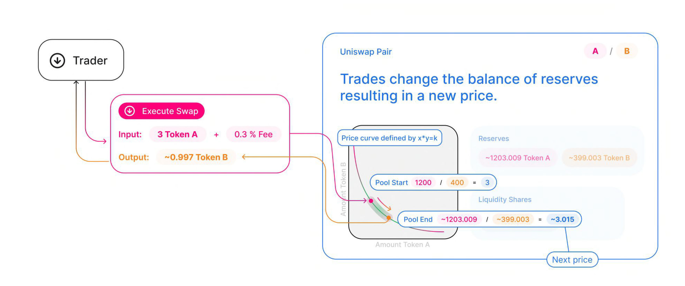
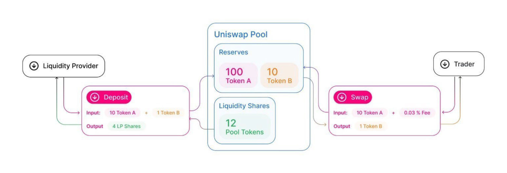

Introduction
This book is intended as a textbook for a semester-length course on cryptocurrency regulation in the United States of America. The textbook is intended for law students or graduate students studying cryptocurrency.
The focus of the textbook is on cryptocurrency regulation, and other topics should be supplemented by the instructor as necessary. If students need additional background materials on cryptocurrency technology, those topics are not covered in this book, but I do provide references to additional materials. If students need additional background on some of the legal topics, I also provide references for those additional topics.
If students have not previously been exposed to cryptocurrency, the instructor should consider beginning with an overview of Bitcoin, Ethereum, and Decentralized Finance before diving into the topics covered by the Cryptocurrency Regulation textbook.
Bitcoin Chapter 1
The primary focus of this book is decisions by U.S. Federal Courts, but any serious discussion of cryptocurreny must begin with the Bitcoin White paper by Satoshi Nakamoto. This chapter begins with the Bitcoin white paper and then continues with the most famous bitcoin case in U.S. vs. Ulbricht.
On October 31, 2008, Satoshi Nakamoto published a white paper titled "Bitcoin: A Peer-to-Peer Electronic Cash System" in an internet forum. This white paper and the accompanying software that was launched in January 2009 created the Blockchain and Cryptocurrency industry. Satoshi Nakamoto proposed Bitcoin as an electronic currency which uses cryptography and financial incentives to solve the double-spending problem without relying on a centralized third party. Bitcoin is the first successful cryptocurrency, and there have been over 10,000 cryptocurrencies created since the launch of Bitcoin. Satoshi Nakamoto is a pseudonym, and the identity of the individual or group behind that name is still unknown.
Bitcoin Whitepaper
Nakamoto, Satoshi., "Bitcoin: A peer-to-peer electronic cash system." |

|
Bitcoin: A peer-to-peer electronic cash system
1. Introduction
Commerce on the Internet has come to rely almost exclusively on financial institutions serving as trusted third parties to process electronic payments. While the system works well enough for most transactions, it still suffers from the inherent weaknesses of the trust based model. Completely non-reversible transactions are not really possible, since financial institutions cannot avoid mediating disputes. The cost of mediation increases transaction costs, limiting the minimum practical transaction size and cutting off the possibility for small casual transactions, and there is a broader cost in the loss of ability to make non-reversible payments for nonreversible services. With the possibility of reversal, the need for trust spreads. Merchants must be wary of their customers, hassling them for more information than they would otherwise need.A certain percentage of fraud is accepted as unavoidable. These costs and payment uncertainties can be avoided in person by using physical currency, but no mechanism exists to make payments over a communications channel without a trusted party.
What is needed is an electronic payment system based on cryptographic proof instead of trust, allowing any two willing parties to transact directly with each other without the need for a trusted third party. Transactions that are computationally impractical to reverse would protect sellers from fraud, and routine escrow mechanisms could easily be implemented to protect buyers. In this paper, we propose a solution to the double-spending problem using a peer-to-peer distributed timestamp server to generate computational proof of the chronological order of transactions. The system is secure as long as honest nodes collectively control more CPU power than any cooperating group of attacker nodes.
2. Transactions
We define an electronic coin as a chain of digital signatures. Each owner transfers the coin to the next by digitally signing a hash of the previous transaction and the public key of the next owner and adding these to the end of the coin. A payee can verify the signatures to verify the chain of ownership.

The problem of course is the payee can’t verify that one of the owners did not double-spend the coin. A common solution is to introduce a trusted central authority, or mint, that checks every transaction for double spending. After each transaction, the coin must be returned to the mint to issue a new coin, and only coins issued directly from the mint are trusted not to be double-spent. The problem with this solution is that the fate of the entire money system depends on the company running the mint, with every transaction having to go through them, just like a bank.
We need a way for the payee to know that the previous owners did not sign any earlier transactions. For our purposes, the earliest transaction is the one that counts, so we don’t care about later attempts to double-spend. The only way to confirm the absence of a transaction is to be aware of all transactions. In the mint based model, the mint was aware of all transactions and decided which arrived first. To accomplish this without a trusted party, transactions must be publicly announced , and we need a system for participants to agree on a single history of the order in which they were received. The payee needs proof that at the time of each transaction, the majority of nodes agreed it was the first received.
3. Timestamp Server
The solution we propose begins with a timestamp server. A timestamp server works by taking a hash of a block of items to be timestamped and widely publishing the hash, such as in a newspaper or Usenet post. The timestamp proves that the data must have existed at the time, obviously, in order to get into the hash. Each timestamp includes the previous timestamp in its hash, forming a chain, with each additional timestamp reinforcing the ones before it.

4. Proof-of-Work
To implement a distributed timestamp server on a peer-to-peer basis, we will need to use a proof-of-work system similar to Adam Back’s Hashcash, rather than newspaper or Usenet posts. The proof-of-work involves scanning for a value that when hashed, such as with SHA-256, the hash begins with a number of zero bits. The average work required is exponential in the number of zero bits required and can be verified by executing a single hash.
For our timestamp network, we implement the proof-of-work by incrementing a nonce in the block until a value is found that gives the block’s hash the required zero bits. Once the CPU effort has been expended to make it satisfy the proof-of-work, the block cannot be changed without redoing the work. As later blocks are chained after it, the work to change the block would include redoing all the blocks after it.

The proof-of-work also solves the problem of determining representation in majority decision making. If the majority were based on one-IP-address-one-vote, it could be subverted by anyone able to allocate many IPs. Proof-of-work is essentially one-CPU-one-vote. The majority decision is represented by the longest chain, which has the greatest proof-of-work effort invested in it. If a majority of CPU power is controlled by honest nodes, the honest chain will grow the fastest and outpace any competing chains. To modify a past block, an attacker would have to redo the proof-of-work of the block and all blocks after it and then catch up with and surpass the work of the honest nodes. We will show later that the probability of a slower attacker catching up diminishes exponentially as subsequent blocks are added.
To compensate for increasing hardware speed and varying interest in running nodes over time, the proof-of-work difficulty is determined by a moving average targeting an average number of blocks per hour. If they’re generated too fast, the difficulty increases.
5. Network
The steps to run the network are as follows:
-
New transactions are broadcast to all nodes.
-
Each node collects new transactions into a block.
-
Each node works on finding a difficult proof-of-work for its block.
-
When a node finds a proof-of-work, it broadcasts the block to all nodes.
-
Nodes accept the block only if all transactions in it are valid and not already spent.
-
Nodes express their acceptance of the block by working on creating the next block in the chain, using the hash of the accepted block as the previous hash.
Nodes always consider the longest chain to be the correct one and will keep working on extending it. If two nodes broadcast different versions of the next block simultaneously, some nodes may receive one or the other first. In that case, they work on the first one they received, but save the other branch in case it becomes longer. The tie will be broken when the next proof-of-work is found and one branch becomes longer; the nodes that were working on the other branch will then switch to the longer one.
New transaction broadcasts do not necessarily need to reach all nodes. As long as they reach many nodes, they will get into a block before long. Block broadcasts are also tolerant of dropped messages. If a node does not receive a block, it will request it when it receives the next block and realizes it missed one.
6. Incentive
By convention, the first transaction in a block is a special transaction that starts a new coin owned by the creator of the block. This adds an incentive for nodes to support the network, and provides a way to initially distribute coins into circulation, since there is no central authority to issue them. The steady addition of a constant of amount of new coins is analogous to gold miners expending resources to add gold to circulation. In our case, it is CPU time and electricity that is expended.
The incentive can also be funded with transaction fees. If the output value of a transaction is less than its input value, the difference is a transaction fee that is added to the incentive value of the block containing the transaction. Once a predetermined number of coins have entered circulation, the incentive can transition entirely to transaction fees and be completely inflation free.
The incentive may help encourage nodes to stay honest. If a greedy attacker is able to assemble more CPU power than all the honest nodes, he would have to choose between using it to defraud people by stealing back his payments, or using it to generate new coins. He ought to find it more profitable to play by the rules, such rules that favour him with more new coins than everyone else combined, than to undermine the system and the validity of his own wealth.
…
Sections 7 and 8 omitted.
…
9. Combining and Splitting Value
Although it would be possible to handle coins individually, it would be unwieldy to make a separate transaction for every cent in a transfer. To allow value to be split and combined, transactions contain multiple inputs and outputs. Normally there will be either a single input from a larger previous transaction or multiple inputs combining smaller amounts, and at most two outputs: one for the payment, and one returning the change, if any, back to the sender.

It should be noted that fan-out, where a transaction depends on several transactions, and those transactions depend on many more, is not a problem here. There is never the need to extract a complete standalone copy of a transaction’s history
10. Privacy
The traditional banking model achieves a level of privacy by limiting access to information to the parties involved and the trusted third party. The necessity to announce all transactions publicly precludes this method, but privacy can still be maintained by breaking the flow of information in another place: by keeping public keys anonymous. The public can see that someone is sending an amount to someone else, but without information linking the transaction to anyone. This is similar to the level of information released by stock exchanges, where the time and size of individual trades, the "tape", is made public, but without telling who the parties were.

As an additional firewall, a new key pair should be used for each transaction to keep them from being linked to a common owner. Some linking is still unavoidable with multi-input transactions, which necessarily reveal that their inputs were owned by the same owner. The risk is that if the owner of a key is revealed, linking could reveal other transactions that belonged to the same owner.
…
Discussion
-
For a more detailed technical explanation of how Bitcoin works, see Mastering Bitcoin, 2nd Edition, https://github.com/bitcoinbook/bitcoinbook.
-
Satoshi Nakamoto’s posts to the internet are collected in "The Book of Satoshi: The Collected Writings of Satoshi Nakamoto", see https://www.bookofsatoshi.com/.
-
The first use of Bitcoin was Satoshi Nakamoto sending bitcoins to Hal Finney in January 2009.
-
The first public usage of Bitcoin as a currency was when Laszlo Hanyeczto spent 10,000 BTC to purchase two Papa John’s pizzas from Jeremy Sturdivant on May 22, 2010 (estimated transaction value was $41, bitcoin valuation of less than one cent per bitcoin). See https://www.forbes.com/sites/rufaskamau/2022/05/09/what-is-bitcoin-pizza-day-and-why-does-the-community-celebrate-on-may-22/?sh=4594cbb1fd68
-
Satoshi Nakamoto is a pseudoynm. We don’t know the real name(s) of the man, woman, or group of people behind the pseudonym Satoshi Nakamoto. There are various people who have been suspected of secretly being Satoshi Nakamoto. There are also people who have claimed to be Satoshi Nakamoto, although none of the claimants have offered convincing proof that they are in fact Satoshi Nakamoto.
-
The most famous claim to be Satoshi Nakamoto was made by Craig Wright. See Kleiman v. Wright, Case No. 18-cv-80176-BLOOM/Reinhart (S.D. Fla. Sep. 18, 2020), where Kleiman’s estate sued Craig Wright for half of the bitcoins that were mined by Satoshi Nakamoto. In 2024, a Court in the U.K. ruled that Craig Wright’s claim to be Satoshi Nakamoto was false.
-
The most famous early usage of bitcoin was the black market website Silk Road. See United States v. Ulbricht, 858 F.3d 71 (2d Cir. 2017), Discussed below.
The Silk Road Marketplace
15-1815-cr |
|
UNITED STATES of America, Appellee, v. Ross William ULBRICHT, a/k/a Dread Pirate Roberts, a/k/a Silk Road, a/k/a Sealed Defendant 1, a/k/a DPR, Defendant-Appellant.
Before: Newman, Lynch, and Droney, Circuit Judges.
Gerard E. Lynch, Circuit Judge:
Defendant Ross William Ulbricht appeals from a judgment of conviction and sentence to life imprisonment entered in the United States District Court for the Southern District of New York (Katherine B. Forrest, J. ). A jury convicted Ulbricht of drug trafficking and other crimes associated with his creation and operation of Silk Road, an online marketplace whose users primarily purchased and sold illegal goods and services. He challenges several aspects of his conviction and sentence, arguing that (1) the district court erred in denying his motion to suppress evidence assertedly obtained in violation of the Fourth Amendment; (2) the district court committed numerous errors that deprived him of his right to a fair trial, and incorrectly denied his motion for a new trial; and (3) his life sentence is both procedurally and substantively unreasonable. Because we identify no reversible error, we AFFIRM Ulbricht’s conviction and sentence in all respects.
BACKGROUND
In February 2015, a jury convicted Ross William Ulbricht on seven counts arising from his creation and operation of Silk Road under the username Dread Pirate Roberts ("DPR").(1) Silk Road was a massive, anonymous criminal marketplace that operated using the Tor Network, which renders Internet traffic through the Tor browser extremely difficult to trace.(2) Silk Road users principally bought and sold drugs, false identification documents, and computer hacking software. Transactions on Silk Road exclusively used Bitcoins, an anonymous but traceable digital currency.(3) The site also contained a private message system, which allowed users to send messages to each other (similar to communicating via email), a public forum to discuss topics related to Silk Road, and a "wiki," which is like an encyclopedia that users could access to receive advice about using the site. Silk Road customers and vendors could also access a support section of the website to seek help from the marketplace’s administrators when an issue arose.
According to the government, between 2011 and 2013, thousands of vendors used Silk Road to sell approximately $183 million worth of illegal drugs, as well as other goods and services. Ulbricht, acting as DPR, earned millions of dollars in profits from the commissions collected by Silk Road on purchases. In October 2013, the government arrested Ulbricht, seized the Silk Road servers, and shut down the site.
I. Silk Road Investigation
After Ulbricht created Silk Road in 2011, the site attracted the interest of at least two separate divisions of the Department of Justice:(4) the United States Attorney’s Offices for the District of Maryland and for the Southern District of New York. Throughout the investigations, law enforcement agents knew that the person using Dread Pirate Roberts as his or her Silk Road username had created and managed the site, but they did not know DPR’s actual identity. In 2012 and 2013, agents from both offices investigated several individuals who the government suspected were operating Silk Road as DPR. Those individuals included Ulbricht, Anand Athavale, and Mark Karpeles. Ultimately, the New York office identified Ulbricht as DPR, but the Maryland office had investigated and later abandoned the theory that either Athavale or Karpeles might have been Dread Pirate Roberts.
Two aspects of the pre-arrest investigation into Ulbricht are particularly relevant to this appeal: (1) the pen/trap orders that the government obtained to monitor Internet Protocol ("IP") address traffic to and from various devices associated with Ulbricht; and (2) the corrupt behavior of two Baltimore agents who worked on the Silk Road investigation.
A. The Pen/Trap Orders
In September 2013, after Ulbricht became a primary suspect in the DPR investigation, the government obtained five "pen/trap" orders. See 18 U.S.C. §§ 3121 -27 ("Pen/Trap Act"). The orders authorized law enforcement agents to collect IP address data for Internet traffic to and from Ulbricht’s home wireless router and other devices that regularly connected to Ulbricht’s home router. According to the government’s applications for the pen register and trap and trace device, "[e]very device on the Internet is identified by a unique number" called an IP address. S.A. 73.(5) "This number is used to route information between devices, for example, between two computers." Id. at 73-74. In other words, an "IP address is analogous to a telephone number" because "it indicates the online identity of the communicating device without revealing the communication’s content." Id. at 74. Ulbricht does not dispute that description of how IP addresses function.
The pen/trap orders thus did not permit the government to access the content of Ulbricht’s communications, nor did the government "seek to obtain[ ] the contents of any communications." Id. at 75. According to Ulbricht, the government’s use of his home Internet routing data violated the Fourth Amendment because it helped the government match Ulbricht’s online activity with DPR’s use of Silk Road. Ulbricht argues that he has a constitutional privacy interest in IP address traffic to and from his home and that the government obtained the pen/trap orders without a warrant, which would have required probable cause.
B. Corrupt Agents Force and Bridges
One of the many other tactics that the government used to expose DPR’s identity was to find low-level Silk Road administrators who helped DPR maintain the site, obtain their cooperation, take over their Silk Road usernames, and chat with DPR under those identities. The true owners of the administrator accounts would assist in the investigation by helping the government chat with DPR and access various aspects of the site. Government agents would also create their own new usernames and pose as drug dealers or buyers to purchase or sell narcotics and occasionally contact DPR directly. One of the government’s principal trial witnesses, Special Agent Jared Der-Yeghiayan, used the former technique to chat with DPR under the name Cirrus. Cirrus had been a member of the Silk Road support staff before the government took over his account, and Der-Yeghiayan frequently used Silk Road’s messaging system to communicate with DPR and other administrators as Cirrus. Cirrus also gave the government access to the staff chat, a separate program allowing DPR to communicate only with his employees.
Two undercover agents involved in the Silk Road investigation are of particular import to this appeal: Secret Service Special Agent Shaun Bridges and Drug Enforcement Administration ("DEA") Special Agent Carl Force, both of whom were assigned to the Baltimore investigation. Both Force and Bridges used their undercover access to exploit the site for their own benefit in various ways, and they eventually pleaded guilty to criminal charges in connection with their work on the Silk Road investigation.(6)
For example, Force and Bridges took over an administrator account belonging to Curtis Green, who worked for Silk Road under the name Flush. According to the criminal complaint against Force and Bridges, in January 2013, Bridges used the Flush username to change other users' passwords, empty their Bitcoin wallets,(7) and keep $350,000 in Bitcoins in offshore bank accounts, all while attempting to hide his activity through a series of transactions.(8) Specifically, the complaint against Force and Bridges alleges that Bridges "act[ed] as an administrator to reset pins and passwords on various Silk Road vendors' accounts," then exchanged the Bitcoins for U.S. dollars using the Mt. Gox exchanger.(9) Supp. App’x 180. Shortly after he committed the January 2013 thefts, Bridges asked Force to chat with DPR as Nob, Force’s authorized undercover username, to get advice about how to liquidate Bitcoins. He also sought Force’s help in convincing Curtis Green (formerly Flush) to help him transfer Bitcoins to other accounts, and he ultimately tried to blame Green for the theft.
With the government’s approval, Force also posed as a drug dealer and communicated with DPR as Nob. As part of his official undercover work as Nob, Force agreed to sell fraudulent identification documents to DPR for $40,000 in Bitcoins. According to the criminal complaint against the agents, Force kept the Bitcoins received by his Nob account in connection with that transaction for his personal use. On another occasion, again as part of his authorized undercover work, Force advised DPR that he had access to information about Silk Road from an invented corrupt government employee. DPR paid Force $50,000 in Bitcoins for purported inside law enforcement information; Force allegedly purloined that payment as well. Moreover, outside his authorized undercover work, Force operated another account under the name French Maid, through which he again offered to sell DPR information about the government’s Silk Road investigation. Acting as French Maid, Force received about $100,000 in Bitcoins that he kept for his personal use.
Force created yet another unauthorized Silk Road account, under the name DeathFromAbove, which was unknown to law enforcement until the defense identified it during trial. Force used the DeathFromAbove account to try to extort money from DPR. For example, in one such chat that took place on April 16, 2013, DeathFromAbove told DPR that he knew that DPR’s true identity was Anand Athavale. DeathFromAbove demanded a payment of $250,000 in exchange for which DeathFromAbove would remain silent about DPR’s identity.(10) There is no evidence that DPR made the requested payment to DeathFromAbove; indeed, DPR shrugged off the attempted blackmail as "bogus." App’x 710.
As will be explained in more detail below, the district court prevented Ulbricht from introducing evidence at trial related to Force’s corruption because doing so would have exposed the ongoing grand jury investigation into Force’s conduct. The district court also denied Ulbricht discovery related to the investigation and excluded certain hearsay statements that arguably revealed Force’s corruption. Ulbricht contends on appeal that the district court’s various rulings concerning evidence related to Force deprived him of a fair trial. Additionally, Ulbricht did not learn of Bridges’s corrupt conduct until after trial when the criminal complaint against both agents was unsealed. Thus, in his motion for a new trial, he argued that the belated disclosure violated his due process rights under Brady v. Maryland , 373 U.S. 83, 83 S.Ct. 1194, 10 L.Ed.2d 215 (1963). Ulbricht contends on appeal that the district court incorrectly denied that motion.
II. Ulbricht’s Arrest
Ulbricht was arrested in a San Francisco public library on October 1, 2013, after the government had amassed significant evidence identifying him as Dread Pirate Roberts. The arrest was successfully orchestrated to catch Ulbricht in the act of administering Silk Road as DPR. Federal agents observed Ulbricht enter the public library, and a few minutes later Dread Pirate Roberts came online in the Silk Road staff chat. Der-Yeghiayan, under the undercover administrator username Cirrus, initiated a chat with DPR, asking him to go to a specific place on the Silk Road site to address some flagged messages from users. Der-Yeghiayan reasoned that this would "force [Ulbricht] to log in under … his Dread Pirate Roberts account" in the Silk Road marketplace, as well as in the staff chat software. Tr. 331-32.
Once Der-Yeghiayan knew that DPR had logged onto the flagged message page in the marketplace, he signaled another agent to effect the arrest. Ulbricht was arrested, and incident to that arrest agents seized his laptop. The same chat that Der-Yeghiayan had initiated with Dread Pirate Roberts a few minutes earlier was open on Ulbricht’s screen. Ulbricht also visited the flagged post in the marketplace that Der-Yeghiayan (as Cirrus) had asked DPR to look at during their chat. While he was chatting with Cirrus, moreover, Ulbricht had accessed Silk Road by using the "Mastermind" page. That page was available only to Dread Pirate Roberts.
A great deal of the evidence against Ulbricht came from the government’s search of his laptop and his home after the arrest. On the day of Ulbricht’s arrest, the government obtained a warrant to seize Ulbricht’s laptop and search it for a wide variety of information related to Silk Road and information that would identify Ulbricht as Dread Pirate Roberts. Ulbricht moved to suppress the large quantity of evidence obtained from his laptop, challenging the constitutionality of that search warrant. Ulbricht argues on appeal that the district court erred in denying his motion to suppress. More details concerning the search warrant will be described in context below.
III. The Trial
Ulbricht’s trial lasted approximately three weeks, from January 13 through February 4, 2015. Judge Forrest handled the complex and contentious trial with commendable patience and skill. Although Ulbricht does not challenge the sufficiency of the evidence to support the jury’s verdict on any of the counts of conviction, we summarize the evidence presented at trial as context for the issues raised on appeal.
A. The Government’s Case
The government presented overwhelming evidence that Ulbricht created Silk Road in 2011 and continued to operate the site throughout its lifetime by maintaining its computer infrastructure, interacting with vendors, crafting policies for site users, deciding what products would be available for sale on the site, and managing a small staff of administrators and software engineers. Defense counsel conceded in his opening statement that Ulbricht did in fact create Silk Road.
According to Ulbricht’s own words in a 2009 email, Ulbricht originally conceived of Silk Road as "an online storefront that couldn’t be traced back to [him] … where [his] customers could buy [his] products" and pay for them "anonymously and securely." Tr. 991. From 2009 through 2011, Ulbricht worked to get the site up and running, relying on computer programming assistance from others, including his friend Richard Bates. According to one of the journal entries discovered on his laptop, in 2010 Ulbricht began to grow hallucinogenic mushrooms to sell on the site "for cheap to get people interested." Tr. 899. As the site began to garner significant interest in 2011, Ulbricht wrote in his journal that he was "creating a year of prosperity and power beyond what I have ever experienced before. Silk Road is going to become a phenomenon and at least one person will tell me about it, unknowing that I was its creator." Tr. 899-900.
1. Evidence Linking Ulbricht to Dread Pirate Roberts
Around January 2012, the Silk Road user who represented himself as the lead administrator of the site adopted the username Dread Pirate Roberts.(11) The name alludes to the pseudonym of a pirate in the popular novel and film The Princess Bride that is periodically passed on from one individual to another.(12) In order to assure users that posts purporting to be authored by DPR were indeed his own, DPR authenticated his posts using an electronic signature known as a PGP key.(13) Silk Road users had access to a public PGP key, and DPR had a private PGP key that he alone could use to sign his Silk Road posts. When DPR signed a post using his private key, Silk Road users could run the code in the public key, and if the post was signed with the correct private key the user would receive a message that the authentication was successful. The government recovered DPR’s private PGP key on Ulbricht’s laptop. Importantly, the public PGP key did not change during the site’s life span, meaning that DPR used the same private key to sign his posts throughout the time that he administered Silk Road.
Additional evidence supported the conclusion that Ulbricht was Dread Pirate Roberts. For example, the instructions that DPR provided to Cirrus (the account that Der-Yeghiayan later used for undercover work) for how to access the staff chat and contact DPR directly were found in a file on Ulbricht’s laptop. The government also discovered the following evidence, covering the entire period during which DPR managed the Silk Road site, on Ulbricht’s computer: thousands of pages of chat logs with Silk Road employees; detailed journal entries describing Ulbricht’s ownership of the site; a list that tracked Ulbricht’s tasks and ideas related to Silk Road; a copy of Silk Road’s database; and spreadsheets cataloguing both the servers that hosted Silk Road and expenses and profits associated with the site. The government seized approximately $18 million worth of Bitcoins from the wallet on Ulbricht’s laptop and analyzed their transaction history (through blockchain records) to determine that about 89% of the Bitcoins on Ulbricht’s computer came from Silk Road servers located in Iceland.
A search of Ulbricht’s home yielded additional evidence linking him with the site. That evidence included two USB hard drives with versions of documents related to Silk Road that were also stored on Ulbricht’s laptop. There were also handwritten notes crumpled in Ulbricht’s bedroom trash can about ideas for improving Silk Road’s vendor rating system—an initiative that Dread Pirate Roberts had just revealed through a post in a discussion forum on the site.
The government also introduced other circumstantial evidence connecting Ulbricht to DPR’s activity on Silk Road, such as evidence matching Ulbricht’s actual travel history with DPR’s online discussion of his travel plans. As one concrete example, the government discovered a Tor Chat log(14) on Ulbricht’s laptop memorializing DPR’s chat with a user named H7. On October 30, 2011, DPR told H7 that he would be traveling soon. On Ulbricht’s Gmail account, which uses an email address that incorporates his full name, the government discovered a travel itinerary from CheapAir that indicated that Ulbricht would be traveling on November 15, 2011.
The government introduced several additional examples of DPR discussing travel plans that matched up with travel disclosed in Ulbricht’s email and social media activity. At one point, for example, Ulbricht uploaded photos to his Facebook account in an album entitled "Thailand, February 2012." DPR discussed going to Thailand in a Tor chat on January 27, 2012, indicating that he was in "Thailand now," attracted by the "allure of a warm beach." Tr. 1300. He also mentioned in a January 26 chat with a user named "vj," which stood for Variety Jones, that he was in Thailand to experience the "beaches and jungles." Id. at 1298. One of the photos in the Thailand Facebook album depicted Ulbricht "in front of what appears to be jungles and beaches," both of which were referenced in DPR’s chats from late January. Id. at 1301.
2. Murders Commissioned by Dread Pirate Roberts
The government also presented evidence that DPR commissioned the murders of five people to protect Silk Road’s anonymity, although there is no evidence that any of the murders actually occurred.(15) In March 2013, a Silk Road vendor whose username was FriendlyChemist threatened to release "thousands of usernames, ordr [sic ] amounts, [and] addresses" of Silk Road customers and vendors if DPR did not ensure that FriendlyChemist received money from another person, Lucydrop. Tr. 1806. Releasing the information would have destroyed the affected users' anonymity, undermining the security of the site. In a later chat with another person, RealLucyDrop, DPR wrote that it would be "terrible" if the personal information were to be released, and thus he needed FriendlyChemist’s "real world identity so I can threaten him with violence if he were to release any names." Id. at 1811.
The episode escalated from there. DPR connected with Redandwhite, who was FriendlyChemist’s supplier, and wrote that "FriendlyChemist is a liability and I wouldn’t mind if he was executed." Id. at 1822. After negotiating the logistical details of the murder, Ulbricht agreed to pay Redandwhite $150,000 in Bitcoins to kill FriendlyChemist. DPR paid Redandwhite, who later confirmed that he had received the payment and carried out the murder, and sent what appeared to be a photo of the dead victim to DPR. DPR replied that he had "received the picture and deleted it," and thanked Redandwhite for his "swift action." Id. at 1892. Around the same time, Ulbricht recorded in a file on his laptop that he "[g]ot word that the blackmailer was executed." Id. at 1887. The government was not able to develop any evidence linking these conversations to an actual murder. A reasonable jury could easily conclude, however, that the evidence demonstrated that Ulbricht ordered and paid for the killing, and that he believed that it had occurred.
Later, DPR ordered four other murders through Redandwhite. Dread Pirate Roberts identified another Silk Road user, Tony76, who knew FriendlyChemist and might compromise the site’s anonymity. After some negotiations, DPR agreed to pay Redandwhite $500,000 in Bitcoins to kill Tony76 and three of his associates. DPR then sent the payment to Redandwhite. On April 6, 2013, Ulbricht wrote in a file on his laptop that he "[g]ave angels go ahead to find tony76." Tr. 1900. Two days later, Ulbricht recorded that he "[s]ent payment to angels for hit on tony76 and his three associates." Id. One of the government’s expert witnesses was able to link the payments for all five murders to Bitcoin wallets located on Ulbricht’s laptop. Again, while the evidence demonstrates that Ulbricht ordered and paid substantial sums for the murders, there is no evidence that the killings actually took place; the government theorized that Redandwhite had tricked Ulbricht into thinking that he actually committed the murders, but that in fact he had not.
B. The Defense Case
As noted above, Ulbricht conceded at trial that he had created Silk Road, and he was caught red-handed operating the site at the end of the investigation. His principal defense strategy at trial—more of an effort at mitigation than outright denial of his guilt of the conspiracy and other charges in the indictment—was to admit his role at the beginning and end of the site’s operation, but to contend that he sold Silk Road to someone else in 2011 and abandoned his role as its administrator, only to be lured back by the successor DPR near the end of its operation to take the blame for operating the site. The defense attempted on several occasions to implicate as alternative suspects Karpeles and Athavale, both of whom the government had investigated for a possible connection to Silk Road but later abandoned as candidates for DPR’s real-world identity. As part of his alternative-perpetrator defense, Ulbricht theorized that the person or persons who operated as the true Dread Pirate Roberts during the purported interim period planted incriminating evidence on his laptop in order to frame him. For the most part, the defense advanced this theory through cross-examination of government witnesses. Ulbricht did not testify at trial.
One point in the testimony of Richard Bates exemplifies the defense’s approach and the government’s response. Bates, Ulbricht’s friend who assisted with computer programming issues when Ulbricht launched Silk Road, testified for the government. According to Bates, Ulbricht told him in November 2011 that he had sold Silk Road to someone else, a claim that Bates believed at the time to be true. Moreover, in a February 2013 Google chat between Bates and Ulbricht, Ulbricht wrote that he was "[g]lad" that Silk Road was "not [his] problem anymore." Tr. 1140-41.(16) Bates understood that to mean that Ulbricht no longer worked on the site.
To mitigate any damage from Bates’s testimony, the government introduced a December 9, 2011 Tor chat between Ulbricht and vj. In that chat, vj asked Ulbricht whether anyone else knew about his involvement in Silk Road. Ulbricht responded: "[U]nfortunately yes. There are two, but they think I sold the site and got out and they are quite convinced of it." Tr. 1191. He further wrote that those two people thought he sold the site "about a month ago," id. , which roughly corresponds to the November 2011 conversation between Bates and Ulbricht. Significantly, it was shortly after this conversation that vj suggested that Ulbricht change his online identity to DPR. In view of the fictional character it referenced, the government contended that the online moniker DPR was deliberately adopted to support the cover story that the lead administrator of Silk Road changed over time.
Thus, although the government elicited testimony that Ulbricht told Bates that he sold the site in 2011, it also presented evidence that Ulbricht had lied to Bates about that sale and continued to operate the site in secret.
1. Cross-Examination of Government Witnesses
Ulbricht’s defense depended heavily on cross-examination of government witnesses, much of which was designed to support the argument that either Karpeles or Athavale was the real DPR, or that multiple people operated as Dread Pirate Roberts during Silk Road’s life span. The district court limited his cross-examination in two ways that Ulbricht challenges on appeal. First, the district court prevented Ulbricht from exploring several specific topics with Der-Yeghiayan, the government’s first witness, through whom it introduced much of its evidence. Those topics included, inter alia , Der-Yeghiayan’s prior suspicions that Karpeles was DPR. Second, the district court limited Ulbricht’s ability to cross examine FBI computer scientist Thomas Kiernan, who testified about evidence that he discovered on Ulbricht’s laptop, concerning several specific technical issues related to software on Ulbricht’s computer. More details about those attempted cross-examinations will be discussed in context below.
2. Cross-Hearsay Statements
Ulbricht also attempted to introduce two hearsay statements in his defense, both of which the district court excluded as inadmissible. Those hearsay statements comprise: (1) chats between DPR and DeathFromAbove (Force) concerning Force’s attempt to extort money from DPR in exchange for information about the government’s investigation of Silk Road; and (2) the government’s letter describing a statement by Andrew Jones, a site administrator, concerning one particular conversation that he had with DPR. The contents of those hearsay statements and other relevant facts will be discussed in more detail below.
3. Defense Expert Witnesses
Long after the trial began on January 13, 2015, and shortly before the government rested on February 2 and the defense rested on February 3, Ulbricht disclosed to the government his intent to call two expert witnesses: Dr. Steven Bellovin and Andreas Antonopoulos.(17) The Antonopoulos disclosure indicated that he would testify on several subjects relevant to Silk Road, including "the origins of Bitcoin," "the various purposes and uses of Bitcoin," "the mechanics of Bitcoin transactions," "the value of Bitcoin over time since its inception," and "the concepts of Bitcoin speculating and Bitcoin mining," among other things. App’x 349. The Bellovin disclosure followed a similar pattern, indicating that he would testify about "[g]eneral principles of internet security and vulnerabilities," the "import of some lines of PHP code provided to defense counsel in discovery," and "[g]eneral principles of public-key cryptography," among other topics. Id. at 360. Neither disclosure summarized the opinions that the experts would offer on those subjects, nor did either identify the bases for the experts' opinions.
On January 29 and 31, the government moved to preclude the testimony of both proffered experts. The government argued that the expert notices were untimely and did not contain the information required by Rule 16 of the Federal Rules of Criminal Procedure, including a summary of the opinions that the experts would offer on the stand.(18) On February 1—three days before the end of the trial—the district court granted the government’s motions and precluded both experts from testifying, concluding that the defendant’s notices were late and that the disclosures were substantively inadequate under Rule 16. Ulbricht claims that the district court erred in precluding his experts from testifying.
-
The government also argued generally that some of the topics identified in the disclosures were not relevant to Ulbricht’s case or did not require expert testimony.
In sum, the defense case was limited to cross-examining government witnesses, briefly calling four character witnesses, having a defense investigator authenticate a task list on Ulbricht’s computer, and reading a few of DPR’s posts into the record. Ulbricht contends, however, that his defense was hamstrung by the rulings described above.
C. The Verdict and Post-Trial Motion
After deliberating for about three and a half hours, the jury returned a guilty verdict on all seven counts in the Indictment. As described in more detail below, Ulbricht then moved for a new trial under Rule 33, Fed. R. Crim. P. The district court denied the motion, and Ulbricht argues here that it erred in doing so.
IV. Sentencing
The United States Probation Office prepared the Pre-Sentence Investigation Report ("PSR") in March 2015. It described the offense conduct in detail and discussed the five murders that Ulbricht allegedly hired Redandwhite to commit.(19) Over Ulbricht’s objection, the PSR also discussed six drug-related deaths that the government contended, and the district court found, were connected with Silk Road. Circumstantial evidence linked each of those fatalities with varying degrees of certainty to the decedent’s purchase of drugs on Silk Road. For example, one user died from an overdose of heroin combined with other drugs. The deceased individual was found with a needle and a bag of heroin, as well as a torn-open delivery package. Open on his computer was a Silk Road chat in which a vendor described the package of heroin that was due to arrive that day, including a tracking number that matched the opened package.
Two other individuals whose deaths the PSR described were Silk Road customers who purchased drugs on the site shortly before their deaths. A fourth person died after ingesting a synthetic drug originally purchased on Silk Road that he obtained through an intermediary dealer, and a fifth died after leaping from a balcony while high on a psychedelic drug that he bought from the site. A sixth person died of pneumonia after placing over thirty orders for heroin and other drugs on Silk Road; the autopsy report theorized that his drug use may have "blunted the deceased’s perception of the severity of his illness," thus contributing to his premature death. PSR ¶ 83. In arguing that the district court should consider the six deaths, the government explained that they "illustrate the obvious: that drugs can cause serious harm, including death." App’x 902.
In the first of several sentencing submissions, Ulbricht urged the district court not to consider the six drug-related deaths and to strike them from the PSR. In support of that argument, Ulbricht claimed that Silk Road had harm-reducing effects, meaning that it made drug use less dangerous. Specifically, Ulbricht employed Dr. Fernando Caudevilla (username Doctor X), a physician who provided drug-use advice to the site’s customers. Caudevilla spent up to two or three hours a day on Silk Road discussion fora and sent over 450 messages providing guidance about illegal drug dosage and administration, as well as information about the harms associated with certain drugs. Caudevilla also provided weekly reports to DPR concerning the advice he gave to the site’s users. Ulbricht further claimed that Silk Road allowed for better drug quality control because vendors were subject to a rating system,(20) buyers were able to choose from among many different sellers, and the site’s anonymity encouraged free dialogue about drug use that helped mitigate the stigma accompanying drug addiction.(21) According to Caudevilla, when the site received negative feedback about the quality of the drugs sold by a vendor, that vendor was removed from the site. Finally, Ulbricht claimed that the site reduced violence associated with the drug trade by providing a safe, computer-based method of purchasing drugs.
Ulbricht also submitted an expert report from Dr. Mark Taff, which provided an alternative reason for excluding the six deaths from the PSR. In his report, Dr. Taff explained that, based on the information available, it was impossible to know with medical certainty that Silk Road drugs caused the six deaths described in the PSR. There were "gaping holes" in the investigations into each death, and some were missing autopsy reports, toxicology reports, and death certificates. App’x 911. Moreover, Dr. Taff claimed that it was impossible to know the cause of each death because several of the deceased had ingested multiple drugs prior to their deaths. Ulbricht argued that, absent a clear causal link between the deaths and the offense conduct, the deaths were not relevant to his sentencing at all.
The defense later submitted another sentencing memorandum, which included 97 letters from friends and family describing Ulbricht’s good character as well as academic articles about the myriad problems associated with unduly severe sentences for drug crimes. He also urged the district court not to consider the five murders commissioned by DPR, in part because he claimed only to have fantasized about the murders, implying that he did not expect them to be carried out. In its sentencing submission, the government requested that the district court impose a sentence substantially above the twenty-year mandatory minimum.
Ulbricht’s sentencing hearing took place on May 29, 2015.(22) The district court concluded that Ulbricht’s offense level was 43—the highest possible offense level under the Sentencing Guidelines—and that his criminal history category was I.(23) The high offense level largely resulted from the massive quantity of drugs trafficked using Silk Road, as well as several enhancements, including one for directing the use of violence, U.S.S.G. § 2D1.1(b)(2).(24) Ulbricht does not dispute that calculation. Due to the high offense level, the Guidelines advisory sentence "range" was life in prison, and the U.S. Probation Office recommended that sentence.
At the sentencing hearing, the district court resolved several disputed issues of fact. For example, because Ulbricht contested his responsibility for the five commissioned murders for hire, the district court found by a preponderance of the evidence that Ulbricht did in fact commission the murders, believing that they would be carried out. The district court characterized the evidence of the murders for hire, which included Ulbricht’s journal, chats with other Silk Road users, and the evidence showing that Ulbricht actually paid a total of $650,000 in Bitcoins for the killings, as "ample and unambiguous." App’x 1465.
The court then turned to the six drug-related deaths described in the PSR. Over Ulbricht’s objection, the district court found that the deaths were "related conduct relevant to his sentencing" because the "question as to whether this information is properly included in the PSR is whether the Court finds, by a preponderance of the evidence[,] that the deaths, in some way, related to Silk Road."Id. at 1472. It went on to explain that "the relevant offense committed is the unlawful distribution of drugs and the running of a criminal drug enterprise, … [and] based on the evidence before the Court, the sale of the drugs through Silk Road caused harm to the decedents." Id. at 1473. The district court described the facts associated with five of the deaths and specifically found that each was connected to Silk Road, rejecting the defendant’s argument that but-for causation was required in order for the court to consider the deaths as relevant to the offense conduct.(25) Parents of two of the decedents also made statements at the proceeding, describing the emotional impact that the losses had on them and their families.
In the course of explaining its reasons for choosing Ulbricht’s sentence, the district court discussed the facts of Ulbricht’s offense, his apparent character, and the purposes of criminal punishment. The court described Doctor X as "enabling," App’x 1530, rather than reducing the harms associated with drug use, emphasized the social costs attendant to expanding the scope of the drug market, discussed the five murders for hire, and stated that the sentence imposed on Ulbricht could have a powerful general deterrent effect because the case had attracted an unusually large amount of publicity. The court then sentenced Ulbricht principally to life imprisonment.
This appeal followed.
DISCUSSION
On appeal, Ulbricht raises a number of claims of error. For purposes of organizational clarity, we group them into three categories, and present them in the order in which the issues arose in the district court. Accordingly, we discuss first Ulbricht’s claims that much of the evidence against him should have been suppressed because it was obtained in violation of his Fourth Amendment rights; second, his arguments that the district court’s evidentiary errors denied him a fair trial; and third, his objections to his sentence.
I. Fourth Amendment Issues
Ulbricht claims that the district court erred in denying his motion to suppress evidence obtained in violation of the Fourth Amendment. On appeal from a denial of a suppression motion, "we review a district court’s findings of fact for clear error, and its resolution of questions of law and mixed questions of law and fact de novo ." United States v. Bohannon , 824 F.3d 242, 247-48 (2d Cir. 2016). Ulbricht raises two principal arguments. First, he contends that the pen/trap orders that the government used to monitor IP address traffic to and from his home router violated the Fourth Amendment because the government obtained the orders without a warrant. Second, he claims that the warrants authorizing the government to search his laptop as well as his Google and Facebook accounts violated the Fourth Amendment’s particularity requirement. We reject those contentions and affirm the denial of Ulbricht’s motion to suppress.
Motion to suppress discussion omitted.
II. The District Court’s Trial Rulings and Ulbricht’s Rule 33 Motion
Ulbricht contends that he did not receive a fair trial for several reasons: (1) the district court’s rulings surrounding corrupt agents Force and Bridges violated his due process rights; (2) the district court erroneously precluded two defense experts from testifying; (3) the district court abused its discretion when it curtailed Ulbricht’s cross-examination of two government witnesses; and (4) the district court erred when it ruled that certain hearsay statements were inadmissible. He also contends that, even if each individual error is harmless, the cumulative effect of those errors prejudiced him to the extent that his trial was fundamentally unfair. We detect no error in the district court’s rulings on any of those issues and therefore conclude that Ulbricht was not deprived of his right to a fair trial.
A. Corrupt Agents Force and Bridges
Ulbricht’s principal fair trial argument is that the district court erred in numerous ways by preventing him from relying on information related to the corruption of two federal agents, Force and Bridges, involved in the investigation of the Silk Road site. Before trial, the district court (1) precluded Ulbricht from referring at trial to the secret grand jury proceeding against Force; (2) denied Ulbricht discovery related to the Force investigation; and (3) denied Ulbricht an adjournment of the trial until the Force investigation was complete. During trial, the district court excluded as hearsay certain chats that related to Force’s illicit use of Silk Road. Finally, Ulbricht learned after trial that the government was investigating a second corrupt agent, Bridges. Ulbricht contends that the failure to disclose Bridges’s corruption until after the trial violated Brady v. Maryland , 373 U.S. 83, 83 S.Ct. 1194, 10 L.Ed.2d 215 (1963), and that the district court erroneously denied his motion for a new trial on that ground.
Without question, the shocking personal corruption of these two government agents disgraced the agencies for which they worked and embarrassed the many honorable men and women working in those agencies to investigate serious criminal wrongdoing. Even more importantly, when law enforcement officers abuse their offices for personal gain, commit other criminal acts, violate the rights of citizens, or lie under oath, they undermine the public’s vital trust in the integrity of law enforcement. They may also compromise the investigations and prosecutions on which they work.
At the same time, the venality of individual agents does not necessarily affect the reliability of the government’s evidence in a particular case or become relevant to the adjudication of every case in which the agents participated. Courts are obligated to ensure that probative evidence is disclosed to the defense, carefully evaluated by the court for its materiality to the case, and submitted for the jury’s consideration where admissible. But courts must also take care that wrongdoing by investigators that has no bearing on the matter before the court not be used as a diversion from fairly assessing the prosecution’s case. Like any other potential evidence, information about police corruption must be evaluated by reference to the ordinary rules of criminal procedure and evidence, a task to which we now turn.
1. Background: Pretrial Disclosure of the Force Investigation
The government disclosed its investigation into Force’s corruption to the defense about six weeks before trial. Initially, on November 21, 2014, the government wrote a sealed ex parte letter to the district court seeking permission to disclose to the defense information about the Force grand jury investigation subject to a protective order.(39) The district court granted the application. On December 1, the government provided a copy of the November 21 letter, which otherwise remained sealed, to defense counsel. According to the letter, Force leaked information to DPR in exchange for payment and "corruptly obtain[ed] proceeds from the Silk Road website and convert[ed] them to his personal use." App’x 649. The government then undertook to purge its trial evidence of anything arguably traceable to Force.
Ulbricht moved to unseal the entire November 21 letter so that he could rely on the information in the letter that related to Force’s corruption at trial, arguing that the letter included Brady information and that he therefore had a particularized need to disclose the information that outweighed the presumption of grand jury secrecy. He also requested discovery and subpoenas under Rules 16 and 17, Fed. R. Crim. P., to learn more about the scope of Force’s corruption. In the alternative, Ulbricht sought an adjournment of the trial until the Force investigation concluded and information about his corruption might become public through the filing of charges against him. On December 15, the district court held a sealed hearing on that issue and invited further written submissions, including a particularized list of Ulbricht’s discovery requests. One week later, the district court issued a sealed and partially redacted opinion(40) denying all of Ulbricht’s requests. The court did indicate, however, that throughout the trial it would "entertain specific requests to use information from the November 21, 2014 Letter on cross-examination." App’x 700. Moreover, the court explained that it would "entertain a renewed application" for a "particularized disclosure" of facts relevant to Force’s corruption if the government’s trial tactics or evidence "open[ed] the door" to such facts. Id.
2. Preclusion of Force Investigation Evidence: Rule 6(e)
On appeal, Ulbricht claims that the district court erred in denying his motion to unseal the November 21 letter because he demonstrated a particularized need that rebutted the presumption of secrecy that attaches to grand jury investigations. We disagree.
"[T]he proper functioning of our grand jury system depends upon the secrecy of grand jury proceedings." Douglas Oil Co. of California v. Petrol Stops Nw. , 441 U.S. 211, 218, 99 S.Ct. 1667, 60 L.Ed.2d 156 (1979). We have described five rationales for such secrecy:
(1) To prevent the escape of those whose indictment may be contemplated; (2) to insure the utmost freedom to the grand jury in its deliberations, and to prevent persons subject to indictment or their friends from importuning the grand jurors; (3) to prevent subornation of perjury or tampering with the witnesses who may testify before the grand jury and later appear at the trial of those indicted by it; (4) to encourage free and untrammeled disclosures by persons who have information with respect to the commission of crimes; (5) to protect the innocent accused who is exonerated from disclosure of the fact that he has been under investigation, and from the expense of standing trial where there was no probability of guilt.
In re Grand Jury Subpoena , 103 F.3d 234, 237 (2d Cir. 1996). Rule 6(e)(6) of the Federal Rules of Criminal Procedure implements this policy of secrecy by requiring that "all records, orders, and subpoenas relating to grand jury proceedings [must] be sealed." In re Grand Jury Subpoena , 103 F.3d at 237 (emphasis in original).
Information falling within Rule 6(e)'s protections is entitled to a "presumption of secrecy and closure." Id. at 239. To rebut the presumption of secrecy, the party "seeking disclosure [must] show a particularized need that outweighs the need for secrecy." Id. (internal quotation marks omitted). To prove a particularized need, parties seeking disclosure must show that the "material they seek is needed to avoid a possible injustice in another judicial proceeding, that the need for disclosure is greater than the need for continued secrecy, and that their request is structured to cover only material so needed." Id. (internal quotation marks omitted). "A district court’s decision as to whether the burden of showing a particularized interest has been met will be overturned only if the court has abused its discretion." Id.
We cannot say that the district court abused its discretion when it denied Ulbricht’s request to unseal the November 21 letter discussing the Force grand jury investigation. It is undisputed that the letter contained information related to a grand jury proceeding that, if made public, would disclose matters occurring before the grand jury. Ulbricht did not demonstrate a particularized need for disclosure because he did not show that the need for disclosure was greater than the need for continued secrecy or that a possible injustice would result if the grand jury investigation was not disclosed. Specifically, the district court did not err in concluding that revealing the entire letter could have compromised the Force grand jury investigation in a number of ways. For example, potential co-conspirators might have learned of the investigation and attempted to intimidate witnesses or destroy evidence. The investigation was also likely to garner significant media attention, a fact that might influence witnesses or grand jurors. And, although Force knew of the investigation, revealing its existence to the public might have harmed him if the allegations had ultimately proved untrue. Finally, Ulbricht’s request was not structured to cover only the information needed to avoid any possible injustice; instead, he sought to unseal the entire November 21 letter and did not propose a more narrowly tailored disclosure.
In redacted portions of its opinion, the district court also considered ex parte arguments concerning how the Force investigation might be relevant to Ulbricht’s defense. In general terms, Ulbricht argued that the agents' corruption was critical to his defense because it would reveal the agents' ability to falsify evidence against him and demonstrate their motive to do so. According to the district court’s characterization of his ex parte letters, Ulbricht speculated that Force may have used Curtis Green’s (Flush) administrative capabilities to impersonate DPR; Force’s corrupt conduct might have demonstrated technical vulnerabilities in the site that would render it susceptible to hacking; and learning that Force had good information about the Silk Road investigation might have caused the true DPR to recruit Ulbricht as his successor.(41) The district court reasoned that much of the information that might have arguably supported any of those theories was made available to the defense in discovery. The only new information in the November 21 letter concerned the investigation of Force’s corruption; the fact of that investigation and its scope does not bolster any of the defense theories that Ulbricht described before the district court or on appeal. That Force was personally corrupt and used his undercover identity to steal money from Silk Road and DPR does not suggest either a motive or an ability on his part to frame Ulbricht as DPR. Absent any explanation of how Force could have orchestrated a massive plant of incriminating information on Ulbricht’s personal laptop, his larcenous behavior does not advance the claim that such a frame-up was possible beyond mere speculation. Thus, Ulbricht was equally capable of presenting his various defense theories to the jury with or without the November 21 letter.(42)
The government’s commitment to eliminating all evidence that came from Force’s work on the Silk Road investigation(43) further undermines Ulbricht’s claim that he needed the information to avoid a possible injustice. Had Force been called as a government witness, or had any of the government’s evidence relied on his credibility, his character for truthfulness would have been at issue during the trial, and information that impeached his credibility would have become highly relevant. Ulbricht’s reliance on the general fact of cooperation among different government agencies and different U.S. Attorney’s Offices does not undermine the government’s explicit representations that none of the evidence presented at trial derived from Force, and nothing in the record suggests that those representations were false. Ulbricht had no need to rely on the grand jury investigation of Force to attack the credibility of the actual government witnesses or the integrity of its other evidence.
-
For example, the government declined to present evidence of DPR’s attempt to commission an additional murder because that conduct involved Force acting as Nob.
In sum, Ulbricht has not shown that the district court abused its discretion in maintaining the secrecy of the Force grand jury investigation. He did not demonstrate to the district court, and has not demonstrated on appeal, that keeping the November 21 letter under seal resulted in any injustice, or that his need for disclosing the investigation was greater than the need for continued secrecy.(44)
3. Denial of Discovery Related to Force
Ulbricht claims that the district court erred in denying him discovery, including requested subpoenas, related to the Force investigation. Rule 16(a)(1)(E), Fed. R. Crim. P., requires the government to disclose information within its control if the information is "material to preparing the defense" or will be a part of the government’s case-in-chief. Evidence is material if it "could be used to counter the government’s case or to bolster a defense." United States v. Stevens , 985 F.2d 1175, 1180 (2d Cir. 1993). "An appellate court, in assessing the materiality of withheld information, considers not only the logical relationship between the information and the issues in the case, but also the importance of the information in light of the evidence as a whole." Id. To justify a new trial, there "must be some indication that the pretrial disclosure of the disputed evidence would have enabled the defendant significantly to alter the quantum of proof in his favor." Id. (internal quotation marks omitted).
Rule 17(c), Fed. R. Crim. P., allows parties to subpoena documents and objects to be introduced at criminal trials. A subpoena must meet three criteria: "(1) relevancy; (2) admissibility; [and] (3) specificity." United States v. Nixon , 418 U.S. 683, 700, 94 S.Ct. 3090, 41 L.Ed.2d 1039 (1974). The party requesting the subpoena must also show that the information sought is "not otherwise procurable reasonably in advance of trial by exercise of due diligence," that "the party cannot properly prepare for trial without such production," and that "the application is made in good faith and is not intended as a general ‘fishing expedition.’ " Id. at 699-700, 94 S.Ct. 3090. We review the district court’s discovery rulings for abuse of discretion. United States v. Rigas , 583 F.3d 108, 125 (2d Cir. 2009).
The district court did not abuse its discretion when it denied Ulbricht’s discovery requests related to the Force investigation. Ulbricht submitted 28 individual discovery requests in connection with the Force disclosure. Those ranged from the reasonably specific, such as "records from any and all Bitcoin accounts" used by Force, to the very broad, such as "any spending, net worth, or other financial analysis conducted with respect to former SA Force," "any and all phone records relating to former SA Force," and "bank account records from any and all bank accounts maintained by former SA Force or his spouse." App’x 669-70. The district court concluded that those requests were too broad and unfocused, and that the information requested was not material in the Rule 16 sense because the defense "has not articulated a coherent and particular reason why" the Force investigation could "counter the government’s case or bolster a defense." Id. at 697. Next, the district court concluded that the Rule 17 subpoenas were part of the same overall fishing expedition and that the issuance of such subpoenas could compromise the Force grand jury investigation.
There was no abuse of discretion in those rulings. Ulbricht has not shown that, had the government produced every piece of requested information, he would have been able to alter the quantum of proof in his favor at trial. That is so because there is no indication, beyond Ulbricht’s speculation, that Force manufactured any of the evidence on which the government relied at trial, let alone the most damning evidence discovered on the hard drive on Ulbricht’s laptop and at his apartment. Because Force did not testify at trial, information related to his corruption would not have been relevant to attack the credibility of any testimony he would have given. Moreover, Ulbricht has not identified any specific aspect of the trial evidence that he could have undermined using the requested information. Thus, even if the district court erred in not granting at least some of Ulbricht’s discovery requests, any such error does not justify a new trial.
4. Ulbricht’s Motion to Adjourn the Trial
Ulbricht contends that the district court erred in denying his request to adjourn the trial until the Force investigation was complete. "[A] district court has a great deal of latitude in scheduling trials." United States v. Griffiths , 750 F.3d 237, 241 (2d Cir. 2014) (internal quotation marks omitted). Thus, "trial courts enjoy very broad discretion in granting or denying trial continuances." United States v. Stringer , 730 F.3d 120, 127 (2d Cir. 2013). A decision to grant or deny a request for an adjournment is reviewed for abuse of discretion, and we "will find no such abuse unless the denial was an arbitrary action that substantially impaired the defense." Id. (internal quotation marks omitted). Thus, the party seeking a continuance has the burden of showing "both arbitrariness and prejudice in order to obtain reversal" based on a denial of an adjournment. Id. at 128 (internal quotation marks omitted).
The district court did not abuse its discretion in denying Ulbricht’s request for an adjournment of the trial. In a sealed portion of the proceedings on the first day of trial, the district court explained its reasons for denying the adjournment. The court ruled that because none of the evidence revealed by the government concerning Force’s corruption was exculpatory, there was no reason to believe that delaying the trial would assist Ulbricht’s defense. That analysis was not irrational or arbitrary. Moreover, as explained in more detail both above and below, Ulbricht has not shown how information related to Force’s corruption was either exculpatory or material to his defense. Thus, he has not shown that the district court’s refusal to adjourn the trial was prejudicial, let alone substantially so.
5. Preclusion of the DeathFromAbove Chats
As already described, Force used DeathFromAbove as an unauthorized Silk Road username through which he attempted to extort money from DPR. The government only learned of Force’s activity as DeathFromAbove during trial, when the defense attempted to introduce a redacted chat between DPR and DeathFromAbove. In the chat at issue, DeathFromAbove implied that he knew that DPR’s real identity was Anand Athavale. DeathFromAbove then attempted to blackmail DPR by saying that, if DPR gave him $250,000, he would not "give you [sic ] identity to law enforcement." App’x 712.
The government objected to admitting the chat on three grounds: (1) it was hearsay; (2) its probative value was substantially outweighed by unfair prejudice under Rule 403, Fed. R. Evid.; and (3) it was a "back-door attempt to re-inject" Force’s corruption into the defense’s trial evidence. App’x 707. The district court excluded the chat as hearsay. At trial, Ulbricht claimed that the chat was not being offered for its truth, but instead to show its effect on DPR; that is, if DPR was actually Athavale, one would expect DPR to take certain steps to protect his identity. The district court disagreed and ruled that the DeathFromAbove chat was hearsay because it was offered for the truth of the matter asserted therein—that government agents at one time thought that Athavale was DPR—and it did not fall into any hearsay exceptions. In the alternative, the district court found that the Athavale-as-DPR theory lacked sufficient support, was speculative, and risked jury confusion.
In general, hearsay is not admissible unless an exception applies. See Fed. R. Evid. 802. "The Federal Rules of Evidence define hearsay as a declarant’s out-of-court statement offered in evidence to prove the truth of the matter asserted in the statement." United States v. Dupree , 706 F.3d 131, 136 (2d Cir. 2013) (internal quotation marks and alterations omitted). If "the significance of an offered statement lies solely in the fact that it was made, no issue is raised as to the truth of anything asserted, and the statement is not hearsay." Id. (internal quotation marks omitted). "The trial court’s ultimate decisions as to the admission or exclusion of evidence are reviewed for abuse of discretion." Davis v. Velez , 797 F.3d 192, 201 (2d Cir. 2015).
The district court concluded that the DeathFromAbove chat was hearsay because it was an out-of-court statement being offered for the truth of the matter asserted therein. That ruling was not an abuse of discretion. Contrary to Ulbricht’s assertions on appeal, the district court did not rest its decision on the need for grand jury secrecy to protect the Force investigation. Instead, the decision was a straightforward application of the rule against hearsay.
Ulbricht does not provide any detailed arguments to the contrary that are specific to the DeathFromAbove chat; instead, he discusses the district court’s preclusion of all of the evidence related to the Force investigation collectively. At trial, however, he claimed that the statement was offered only to demonstrate "the fact that it was communicated to DPR … in that this particular piece of evidence communicates to DPR the name and profile of the person [D]eath[F]rom[A]bove believes is DPR." Tr. 1866. Ulbricht claimed that the statement was "offered for the fact that DPR was getting information about people who were supposed to be DPR," and "one of these people is [Athavale]." Id. at 1867. Once the district court expressed skepticism about his argument, Ulbricht claimed that he sought to admit the chat to demonstrate its effect on DPR: "if you’re DPR and you get a name … this Anand Athavale and a profile and details … and you’re put on notice that it’s you, you’re going to take steps." Id. at 1867-68. In other words, Ulbricht claimed that he did not offer it for the truth of the matter asserted in the chat: that agents in the Baltimore investigation, including Force, believed that Athavale was the real Dread Pirate Roberts, or that Athavale was in fact the real DPR.
Ulbricht’s proposed non-hearsay use of the chat—to show its effect on DPR—is not sufficiently probative that the evidence’s exclusion prejudiced him. The statement does not appear to have had an effect on DPR that would bolster Ulbricht’s defense. DPR did not alter his behavior in response to the extortion attempt. Indeed, he referred to it as "bogus" in one of the journal entries discovered on Ulbricht’s laptop. App’x 710. If Athavale had been the real Dread Pirate Roberts, he likely would have had a different reaction to the threatened exposure of his identity. DPR’s reactions to other attempts to destroy the site’s anonymity were dramatic, and included hiring people to kill the users who threatened to compromise Silk Road. Therefore, even if Ulbricht did not offer the chat for its truth, any relevance of the arguably non-hearsay use of the statement was entirely too remote to outweigh the possible jury confusion that would result from the injection of Force into the trial or the likelihood that the jury would confuse the hearsay and non-hearsay significance of the evidence.
6. Ulbricht’s Rule 33 Motion: Brady v. Maryland
Ulbricht moved for a new trial under Rule 33, Fed. R. Crim. P., raising several issues concerning the unfairness of the assertedly belated disclosures of the investigations into Force and Bridges.(45) The only argument that he pursues in this appeal is that the belated disclosures violated his due process rights under Brady because the information was both material and exculpatory.
-
Ulbricht filed his Rule 33 motion on March 6, 2015. The criminal complaint against Force and Bridges was unsealed on March 30, which is the first time that Ulbricht learned that Bridges was corrupt and was involved in the case.
Rule 33(a) provides that, on "the defendant’s motion, the court may vacate any judgment and grant a new trial if the interest of justice so requires." We have advised district courts to "exercise Rule 33 authority sparingly and in the most extraordinary circumstances." United States v. Coté , 544 F.3d 88, 101 (2d Cir. 2008) (internal quotation marks omitted). "Where a defendant’s Brady claim was raised in a motion for a new trial pursuant to Rule 33 [,] … we review the denial of the motion for abuse of discretion." United States v. Douglas , 525 F.3d 225, 245 (2d Cir. 2008) (internal quotation marks omitted). In the context of denying a Rule 33 motion, a "district court abuses … the discretion accorded to it when (1) its decision rests on an error of law … or a clearly erroneous factual finding, or (2) its decision—though not necessarily the product of a legal error or a clearly erroneous factual finding—cannot be located within the range of permissible decisions." United States v. Forbes , 790 F.3d 403, 406 (2d Cir. 2015) (internal quotation marks omitted).
There are three components of a Brady violation: "(1) The evidence at issue must be favorable to the accused, either because it is exculpatory or because it is impeaching; (2) that evidence must have been suppressed by the [government], either willfully or inadvertently; and (3) prejudice must have ensued." United States v. Certified Envtl. Servs., Inc ., 753 F.3d 72, 91 (2d Cir. 2014) (internal quotation marks omitted). Information is exculpatory if it relates to the defendant’s guilt or innocence. United States v. Avellino , 136 F.3d 249, 255 (2d Cir. 1998). In order to show that he has been prejudiced, a defendant must demonstrate "a reasonable probability that, had the evidence been disclosed, the result of the proceeding would have been different, such that the failure to disclose undermines confidence in the verdict." Certified Envtl. Servs., Inc. , 753 F.3d at 91 (internal quotation marks and alterations omitted). Thus, the prosecution "must disclose … exculpatory and impeachment information no later than the point at which a reasonable probability will exist that the outcome would have been different if an earlier disclosure had been made." Id. at 92 (internal quotation marks omitted). In general, a "prudent prosecutor will err on the side of transparency, resolving doubtful questions in favor of disclosure." Cone v. Bell , 556 U.S. 449, 470 n.15, 129 S.Ct. 1769, 173 L.Ed.2d 701 (2009).
Although the agents' illegal behavior in connection with the Silk Road investigation is deeply troubling, the government’s December 2014 disclosure of the Force investigation and the post-trial disclosure of Bridges’s corruption did not violate Ulbricht’s due process rights. Evidence concerning the agents' corruption is not Brady information because it is not exculpatory or impeaching of the government’s trial evidence. For this reason, the government’s failure to reveal the full extent of the investigations until after Ulbricht’s trial did not prejudice him. As already explained, the fact that Force purloined Bitcoins from Silk Road and attempted to blackmail DPR does not relate to Ulbricht’s guilt or innocence; the same logic applies to Bridges’s similar behavior. The agents' corruption has nothing to do with whether Ulbricht operated the site as Dread Pirate Roberts. Ulbricht has not raised any credible doubts about the reliability of the evidence that the government presented at trial, nor has he explained why the agents' illegal actions relate to his guilt at all. Indeed, the government removed from its exhibit list the items relevant to Force, including communications between Nob (his authorized undercover username) and DPR. Those communications included an instance in which DPR hired Nob to kill Curtis Green (Flush) as punishment for using his administrator status to steal Bitcoins from Silk Road users. Ulbricht does not identify any particular evidence introduced by the government at trial that is traceable to either Force or Bridges, or the admissibility of which depends on either agent’s integrity.
Ulbricht’s arguments to the contrary largely rest on speculation. First, Ulbricht contends that the Silk Road investigations occurring in Baltimore and New York were "[c]oordinated and [c]ombined," suggesting that Force’s corruption may have somehow infected the evidence that the New York office used in its prosecution. Appellant Br. 40. Ulbricht explains that the offices communicated frequently and shared information through emails and reports. Assuming that Ulbricht is correct, the fact that the Silk Road investigation took place in several offices, one of which employed two corrupt agents, does not alter our analysis. Ulbricht still has not shown how the agents' corrupt behavior is exculpatory as to him, even if Force and Bridges at times shared their work product with New York and that work product influenced the larger investigation. The relevant question, on which none of Ulbricht’s arguments casts any light or raises any doubt, is whether any particular item of evidence was tainted in some way by the misconduct of Bridges or Force.
Next, Ulbricht surmises that the agents may have fabricated evidence suggesting that Ulbricht was DPR. In so arguing, Ulbricht implies that Force and Bridges may have had sufficiently high-level administrator access to Silk Road to manipulate the "financial, transactional, and communications infrastructure of the Silk Road site." Reply Br. 14. Nothing in the government’s disclosures, and nothing that Ulbricht identifies in the record or has produced from any independent source, suggests that either Bridges or Force had such capacity. Absent further detail or evidence that Force and Bridges were able to infiltrate DPR’s communications or transactions, Ulbricht’s argument is simply too speculative to warrant a new trial. Ulbricht further claims that Bridges used sophisticated techniques to try to place blame on others for his corrupt conduct, reflecting a pattern of framing others for his own crimes. That fact alone does not suggest that Bridges fabricated any evidence against Ulbricht or attempted to frame him. That Bridges undertook to deflect blame for things he had done does not suggest any reason why Bridges would be motivated to frame Ulbricht for things that DPR had done. Nor does Ulbricht explain how Bridges’s actions should undermine our confidence in any of the specific evidence on which the government relied at trial.(46)
Finally, Ulbricht submitted a supplemental appendix that included a newly-discovered, unredacted report from the Joint Automated Booking System ("JABS").(47) In that report, under the heading "Arrested or Received Information," Force is listed as the officer on the case, and the Baltimore DEA is listed as the relevant agency. Ulbricht apparently means to suggest that this report shows that Force played a more pervasive role in the investigation than the government has acknowledged. In response, the government argues that Force was simply the most recent person to make changes to the JABS report by updating it to include information about Ulbricht’s family members and the pending charges in Maryland. In any event, the JABS report bearing Force’s name does not show how information related to Force’s corruption exculpates Ulbricht. It merely confirms that Force was a participant in the Baltimore Silk Road investigation and that he continued to be involved in the case after Ulbricht was arrested. In the face of the entire record of the trial, in which the provenance of the government’s evidence was exhaustively displayed without indication that Force was responsible for any of it, this single report has little or no probative value.
In sum, we conclude that the Force and Bridges complaint did not contain Brady information because the agents' corruption does not bear on Ulbricht’s guilt or innocence. Thus, any delay in the government’s disclosure of their corruption did not violate Ulbricht’s due process rights.
B. Preclusion of Defense Experts
The district court precluded both of Ulbricht’s proposed expert witnesses from testifying because he did not timely or adequately disclose his intent to call them under Rule 16, Fed. R. Crim. P. In general, the "defendant must, at the government’s request, give to the government a written summary of any [expert] testimony that a defendant intends to use…. This summary must describe the witness’s opinions, the bases and reasons for those opinions, and the witness’s qualifications."^*
The district court did not abuse its discretion in precluding the defense from calling its proposed experts. Not only were the disclosures late, more importantly, they were plainly inadequate. Both disclosures merely listed general and in some cases extremely broad topics on which the experts might opine.
Expert Witness preclusion discussion omitted.
C. Curtailing Cross-Examination
Ulbricht contends that the district court erred in limiting his ability to cross-examine two government witnesses: Der-Yeghiayan and Kiernan. "We review a trial court’s decision to limit the scope of cross-examination for abuse of discretion." United States v. Cedeno , 644 F.3d 79, 81 (2d Cir. 2011). "A district court is accorded broad discretion in controlling the scope and extent of cross-examination." United States v. James , 712 F.3d 79, 103 (2d Cir. 2013) (internal quotation marks omitted); see Fed. R. Evid. 611(a). Thus, "a district court may impose reasonable limits on cross-examination to protect against, e.g ., harassment, prejudice, confusion, and waste." James , 712 F.3d at 103 (internal quotation marks omitted). In general, however, a "district court should afford wide latitude to a defendant in a criminal case to cross-examine government witnesses." Id. (internal quotation marks omitted). That is so because the Confrontation Clause gives "a defendant the right not only to cross-examination, but to effective cross-examination." Id. "[I]t does not follow, of course, that the Confrontation Clause prevents a trial judge from imposing any limits" on defense counsel’s cross-examination of government witnesses. Id. (emphasis in original).
1. Agent Der-Yeghiayan
Ulbricht argues that the district court erred when it struck portions of Der-Yeghiayan’s testimony that referenced his prior belief that Karpeles might be Dread Pirate Roberts. Ulbricht also challenges the striking of a similar but analytically distinct piece of testimony: Der-Yeghiayan’s statement that Karpeles’s attorney had offered information about Silk Road in exchange for Karpeles receiving immunity from prosecution. Ulbricht wanted the jury to infer that Karpeles had some criminal involvement in Silk Road that motivated him to pursue a cooperation agreement with the government.
Der-Yeghiayan answered the defendant’s initial questions about those topics, and the government did not object to them until a later side bar. During the side bar, the district court expressed its initial view that the questions were proper, but requested written briefing on the subject. After reviewing the parties' submissions, the district court agreed with the government that neither Der-Yeghiayan’s prior opinions about whether Karpeles was DPR nor Karpeles’s offer of information about Silk Road was relevant to Ulbricht’s case. The court thus directed the government to identify portions of Der-Yeghiayan’s testimony to strike. After the government identified the improper testimony, the district court gave a general limiting instruction to the jury:
You heard testimony while Mr. Der-Yeghiayan was on the stand regarding personal beliefs or suspicions he may have had about particular individuals at various points during his investigation. And I instruct you that what the agent suspected about others isn’t evidence and should be disregarded. Now, consistent with all of the instructions I’m going to give you at the end of the case, there was other testimony that Mr. Der-Yeghiayan provided which you may consider during your deliberations and give it the weight that you deem that it deserves. So it’s the suspicions, all right?
Tr. 974. Ulbricht contends on appeal that the district court erred in striking the testimony.
We disagree. The district court did not err in concluding that Der-Yeghiayan’s prior beliefs about Karpeles as a possible DPR suspect were not relevant to the charges against Ulbricht. In order to elicit testimony implicating an alternative perpetrator, a defendant "must show that his proffered evidence on the alleged alternative perpetrator is sufficient, on its own or in combination with other evidence in the record, to show a nexus between the crime charged and the asserted alternative perpetrator." Wade v. Mantello , 333 F.3d 51, 61-62 (2d Cir. 2003) (internal quotation marks omitted). Thus, to avoid a "grave risk of jury confusion," a defendant must offer more than "unsupported speculation that another person may have done the crime." Id. at 62 (internal quotation marks omitted). An "agent’s state of mind as the investigation progressed is ordinarily of little or no relevance to the question of the defendant['s] guilt." United States v. Johnson , 529 F.3d 493, 501 (2d Cir. 2008). Thus, striking Der-Yeghiayan’s testimony and instructing the jury to disregard his earlier opinions about Karpeles’s possible guilt was not error.(54)
Further, any arguable error that occurred was harmless. Defense counsel continued to cross-examine Der-Yeghiayan and elicited admissible testimony about the earlier investigation into Karpeles; indeed, the district court took over cross-examination at several points to assist the defense in asking proper questions. Cf. Cotto v. Herbert , 331 F.3d 217, 254 (2d Cir. 2003) (in considering whether a Confrontation Clause violation is harmless, we consider, inter alia , "the extent of cross-examination otherwise permitted"). Moreover, Ulbricht discussed the investigation of Karpeles in his summation without objection. What was relevant at trial was any actual evidence pointing to Karpeles as the true Dread Pirate Roberts. The district court did not limit Ulbricht’s cross-examination of Der-Yeghiayan as to his knowledge of such evidence. The district court directed the jury to disregard only testimony as to the agent’s "suspicions," Tr. 974, a subject of "little or no relevance to … the defendant['s] guilt," Johnson , 529 F.3d at 501.
We similarly reject Ulbricht’s contention that striking Der-Yeghiayan’s testimony concerning Karpeles’s offer to provide information about Silk Road in exchange for immunity was an abuse of discretion. Absent other evidence in the record regarding Karpeles, it was proper to exclude wholly speculative suggestions of an alternative perpetrator defense based on Karpeles’s attorney’s offer of information in exchange for his client’s immunity. And even assuming, arguendo , that the district court erred in striking the testimony, any error was harmless. To the extent this testimony was stricken from the trial record, that ruling occurred outside the presence of the jury. All the jury was told was to disregard testimony about "what the agent suspected about others," Tr. 974, a category that hardly would be understood by the jury to encompass testimony about the actions of Karpeles’s attorney. As explained in detail above, moreover, the evidence identifying Ulbricht as Dread Pirate Roberts was overwhelming and largely unchallenged. That Karpeles may have had information about Silk Road does not imply that he was DPR, only that he had some knowledge of or involvement with the site. Particularly given that Karpeles likely had some knowledge about Silk Road simply because of his operation of Mt. Gox, a prominent Bitcoin exchanger, any marginal probative value in the fact that he claimed to have such knowledge, and offered to provide it to the government, could not have meaningfully affected the balance of evidence available to the jury regarding the identity of DPR.
2. Agent Kiernan
Defense counsel cross-examined Kiernan extensively, and Ulbricht contends on appeal that the district court erred in preventing him from exploring certain topics during that cross-examination. Those excluded topics include: the meaning of various acronyms, the significance of a certain line of PHP code,(55) whether the FBI allowed Kiernan to run BitTorrent on his work computer despite its lack of security, and whether the Linux kernel(56) that Kiernan used on his work computer was the same as the one that Ulbricht installed on his laptop. Ulbricht explains that he was attempting to show that Kiernan’s conclusions about Ulbricht’s laptop were inaccurate because they were based on unreliable information.
The district court sustained objections to those questions because, in its view, they were outside the scope of Kiernan’s direct testimony. See Fed. R. Evid. 611(b) ("Cross-examination should not go beyond the subject matter of the direct examination and matters affecting the witness’s credibility."); Baker v. Goldman Sachs & Co. , 669 F.3d 105, 110 (2d Cir. 2012) ("Once any direct examination is concluded, cross-examination within the scope of the direct follows.").
On appeal, Ulbricht claims that, because Kiernan testified about the operation of Tor Chat and other forensic computer issues during his direct testimony, the precluded questions were within that testimony’s scope and should have been allowed. Even assuming that Ulbricht is correct, any error is harmless. Ulbricht was permitted to question Kiernan about whether Linux was customizable, and Kiernan admitted during cross that he did not know whether he used the same version of Tor Chat that Ulbricht had installed on his laptop. Ulbricht’s counsel also asked several questions about the security vulnerabilities of BitTorrent, conveying to the jury that using BitTorrent might have rendered Ulbricht’s computer susceptible to hacking. Thus, Ulbricht was able to elicit testimony supporting his proposed inference that Kiernan’s conclusions based on the Tor Chat evidence were flawed. Ulbricht does not explain how he was prejudiced when the district court prohibited him from asking Kiernan certain other questions. We therefore identify no reversible error in the district court’s limitations on Kiernan’s cross examination.
D. Andrew Jones Hearsay Statement
The district court excluded a statement allegedly made by Andrew Jones, who was a Silk Road administrator under the username Inigo. Jones cooperated with the government and was on the government’s witness list until the middle of trial, when the government decided not to call him. Defense counsel explored the possibility of calling Jones as a witness, but Jones’s attorney advised Ulbricht that Jones would invoke the Fifth Amendment and refuse to testify if compelled to appear. In light of Jones’s unavailability, Ulbricht sought to admit a December 29, 2014 letter from the government to defense counsel that described a statement that Jones made during one of his interviews.(57) The relevant portion of the government’s letter is as follows:
At some point in or about August or September 2013, Jones tried to authenticate that the Silk Road user "Dread Pirate Roberts" whom he was talking to at the time … was the same person with whom he had been communicating in the past with this username. Previously, … Jones and "Dread Pirate Roberts" had agreed upon a "handshake" to use for authentication, in which Jones would provide a certain prompt and "Dread Pirate Roberts" would provide a certain response. When, during the 2013 chat in question, Jones provided what he believed to be the designated prompt, "Dread Pirate Roberts" was unable to provide the response Jones thought they had agreed on. However, later in the chat, Jones asked "Dread Pirate Roberts" to validate himself by specifying the first job that "Dread Pirate Roberts" assigned to him (running the "DPR Book Club"), which "Dread Pirate Roberts" was able to do.
App’x 398. Ulbricht argues that the Jones statement(58) supports his theory that more than one person acted as Dread Pirate Roberts, because at one point DPR could authenticate his identity to Jones, but at another time he could not.
When it became clear that Jones was unavailable to testify, Ulbricht asked the government to stipulate that the Jones statement could be read to the jury. The government initially agreed, but then changed its mind and opposed admitting the Jones statement. The defense acknowledged that the statement was hearsay, but claimed that it was admissible under two hearsay exceptions: under Rule 804(b)(3), Fed. R. Evid., as a statement against interest, and under Rule 807’s residual exception. The district court ruled that the statement was inadmissible, specifically addressing only Rule 804(b)(3). On appeal, Ulbricht continues to argue that the statement was admissible under either exception. Neither of his theories is persuasive.(59) A district court’s "ultimate decisions as to the admission or exclusion of evidence are reviewed for abuse of discretion, and will not be disturbed unless they are manifestly erroneous." Davis , 797 F.3d at 201 (internal quotation marks and citations omitted). To invoke the 804(b)(3) exception for a statement against interest, the proponent of the statement "must show (1) that the declarant is unavailable as a witness, (2) that the statement is sufficiently reliable to warrant an inference that a reasonable man in [the declarant’s] position would not have made the statement unless he believed it to be true, and (3) that corroborating circumstances clearly indicate the trustworthiness of the statement." United States v. Wexler , 522 F.3d 194, 202 (2d Cir. 2008) (internal quotation marks omitted). The exception applies "only if the district court determines that a reasonable person in the declarant’s shoes would perceive the statement as detrimental to his or her own penal interest." United States v. Saget , 377 F.3d 223, 231 (2d Cir. 2004). The key to this inquiry is whether the statement is sufficiently "self-inculpatory," which the district court must evaluate on a "case-by-case basis." United States v. Williams , 506 F.3d 151, 155 (2d Cir. 2007).
The district court did not err in concluding that the Jones statement did not fall within Rule 804(b)(3)'s hearsay exception. There is no dispute that Jones was unavailable to testify because he planned to invoke his Fifth Amendment privilege. The court ruled that the Rule 804(b)(3) exception did not apply because Jones was under a cooperation agreement at the time that he made the relevant statement to the government and the chat did not have any particular impact on Jones’s penal interests. On appeal, Ulbricht claims that the extent of Jones’s criminal liability was unknown when he made the statement because he could still be vulnerable to prosecution in other jurisdictions, and he had not yet been sentenced when he made the statement to the government. See Mitchell v. United States , 526 U.S. 314, 326, 119 S.Ct. 1307, 143 L.Ed.2d 424 (1999) (in the Fifth Amendment context, there can be a "legitimate fear of adverse consequences from further testimony" where a sentence has not yet been imposed).
We are not persuaded that Jones’s statement was against his penal interests. Given the cooperation agreement, the government’s role at Jones’s future sentencing, and the penalties for lying to the government, it is far from clear that it was against Jones’s interest to disclose details of his criminal activities at the time the statement in question was made. Moreover, even to the extent that Jones’s disclosures taken as a whole constituted inculpatory admissions, the particular statement in question had little adverse effect on Jones. Jones’s inculpatory admissions to the government concern whether he committed crimes connected to Silk Road. His description of his "handshake" with DPR presupposes that he had already discussed his own crimes with the government. Whether DPR did or did not recognize Jones’s identifying prompt does not bear on Jones’s guilt of any crime associated with the site, since he had already confirmed his role working for DPR. The details of this conversation with DPR thus do not inculpate Jones ; instead, they either help or hurt Ulbricht. Accordingly, the district court did not abuse its discretion in holding that Rule 804(b)(3) does not apply.Rule 807 provides for a limited, residual exception to the rule against hearsay where no other exception applies. A hearsay statement may be admissible under Rule 807 if: "(i) it is particularly trustworthy; (ii) it bears on a material fact; (iii) it is the most probative evidence addressing that fact; (iv) its admission is consistent with the rules of evidence and advances the interests of justice; and (v) its proffer follows adequate notice to the adverse party." United States v. Morgan , 385 F.3d 196, 208 (2d Cir. 2004) (internal quotation marks omitted). The "residual hearsay exception [ ] will be used very rarely, and only in exceptional circumstances." Parsons v. Honeywell, Inc ., 929 F.2d 901, 907 (2d Cir. 1991) (internal quotation marks omitted).
The district court did not specifically address Ulbricht’s request to admit the statement under Rule 807, but we conclude that the limited residual exception does not assist Ulbricht. We are loath to assume that a statement made by a criminal in debriefings to the government pursuant to a cooperation agreement is categorically "particularly trustworthy," as Rule 807 requires. But even if Jones’s statement meets that criterion, and was offered "as evidence of a material fact," we cannot say that it is "more probative on the point for which it is offered than any other evidence that the proponent can obtain through reasonable efforts." Fed. R. Evid. 807(a)(2)-(3). Ulbricht has not attempted to explain how the Jones statement satisfies this requirement.
Finally, even if the district court erred in excluding the statement under either hearsay exception, any error was certainly harmless. The conversation between Jones and DPR in its totality was not actually helpful to Ulbricht. As explained, during the chat in question, DPR was at one point unable to provide the designated response, but later he identified himself to Jones’s satisfaction. The statement thus contains the seeds of its own refutation. Since DPR’s alleged failure to verify his identity and his subsequent remedy of that failure occurred during the same online chat, the interaction provides little or no support for the defense theory that different individuals acted as DPR at different times.
E. Cumulative Error
Ulbricht argues that the cumulative effect of the district court’s evidentiary rulings deprived him of a fair trial. See United States v. Al-Moayad , 545 F.3d 139, 178 (2d Cir. 2008). We have exhaustively reviewed his contentions of trial error and have concluded that none of those contentions has merit. The challenged trial rulings were well within the district court’s discretion, and the various exclusions did not prevent the defense from offering evidence probative of innocence. At the trial in this case, the government presented overwhelming evidence that Ulbricht was indeed Dread Pirate Roberts. The evidence that the defense was precluded from offering to refute that proof was excluded because it was speculative, unreliable, offered in contravention of the Federal Rules of Evidence or of Criminal Procedure, or otherwise inadmissible. The few instances in which the district court’s rulings may be questioned, where we noted the relevance of the harmless error rule, involved minor and marginal points. Accordingly, whether considered separately or cumulatively, none of Ulbricht’s evidentiary arguments lead us to doubt that he was found guilty after a fair trial.
III. Sentencing
"[A] district court has broad latitude to impose either a Guidelines sentence or a non-Guidelines sentence." Rigas , 583 F.3d at 114 (internal quotation marks omitted). "Accordingly, the role of the Court of Appeals is limited to examining a sentence for reasonableness, which is akin to review under an ‘abuse-of-discretion’ standard." Id. "This standard applies both to the [substantive reasonableness of the] sentence itself and to the procedures employed in arriving at the sentence." Id. (internal quotation marks omitted). Ulbricht and amici(60) challenge his life sentence as both procedurally and substantively unreasonable.
A. Procedural Reasonableness
"A sentence is procedurally unreasonable if the district court fails to calculate (or improperly calculates) the Sentencing Guidelines range, treats the Sentencing Guidelines as mandatory, fails to consider the § 3553(a) factors, selects a sentence based on clearly erroneous facts, or fails adequately to explain the chosen sentence." United States v. Jesurum , 819 F.3d 667, 670 (2d Cir. 2016) (internal quotation marks and emphasis omitted). To "hold that a factual finding is ‘clearly erroneous,’ we must be left with the definite and firm conviction that a mistake has been committed." United States v. DeSilva , 613 F.3d 352, 356 (2d Cir. 2010). Where "there are two permissible views of the evidence, the factfinder’s choice between them cannot be clearly erroneous." United States v. Norman , 776 F.3d 67, 76 (2d Cir. 2015) (internal quotation marks omitted). In general, a "sentencing court has discretion to consider a wide range of information in arriving at an appropriate sentence." United States v. Prescott , 920 F.2d 139, 143 (2d Cir. 1990). "The district court’s factual findings at sentencing need be supported only by a preponderance of the evidence." Norman , 776 F.3d at 76. "Where we identify procedural error in a sentence, but the record indicates clearly that the district court would have imposed the same sentence in any event, the error may be deemed harmless, avoiding the need to vacate the sentence and to remand the case for resentencing." United States v. Jass , 569 F.3d 47, 68 (2d Cir 2009) (internal quotation marks omitted); see also United States v. Cavera , 550 F.3d 180, 197 (2d Cir. 2008) (en banc) (declining to reach claim that district court erred in relying on vague concern about gun violence because it was clear that the "district court would have imposed the same sentence had it relied solely on" the permissible concern about deterrence).
Ulbricht’s only claim of procedural error is that it was improper for the district court to consider six drug-related deaths as relevant to his sentence because there was insufficient information connecting them with drugs purchased on Silk Road. In terms of our sentencing jurisprudence, Ulbricht claims that the district court relied on clearly erroneous facts in imposing sentence. We are not persuaded.
Ulbricht submitted an expert report in which Dr. Mark Taff wrote that the records associated with the six deaths were substantially incomplete. For example, many did not include full autopsies, rendering it difficult to discern the precise cause of death to a reasonable degree of medical certainty in five of the cases.(61) Equally importantly, Dr. Taff wrote that he could not conclusively connect the specific drugs that the decedents consumed with Silk Road, because it is impossible to "correlate the time of purchase/acquisition from an alleged Silk Road vendor" and the "time of usage of the alleged Silk road purchase" with the deaths.(62) S.A. 446. We assume for purposes of this opinion that Dr. Taff’s conclusions are sufficiently sound to raise a genuine question about whether the deaths described in the PSR were caused by drugs purchased on Silk Road. As explained above, however, Ulbricht was not being prosecuted or punished for homicide on a theory that he personally caused those deaths. Nor did the fact of the deaths increase his offense level under the Guidelines. The question before the district court was whether the sale of large quantities of drugs on Silk Road created a sufficient risk of death to permit the district court to take the deaths into account in assessing the seriousness of Ulbricht’s crimes when it considered the factors listed in 18 U.S.C. § 3553(a).
As with other facts relevant to sentencing, that question is for the district court to answer, based on the preponderance of the evidence. Norman , 776 F.3d at 76. Contrary to Ulbricht’s claims, the district court did not summarily reject Dr. Taff’s conclusions. Rather, it addressed his report carefully and acknowledged the evidentiary challenges of connecting the deaths to Silk Road. The court concluded that Dr. Taff’s proposed "reasonable degree of medical certainty" standard was simply too high an evidentiary standard for purposes of including the deaths in the PSR. The court reasoned that it was "not asking whether the but for cause of death is drugs purchased on Silk Road," but rather "whether there is a connection between the purchase of drugs on Silk Road and [the] death" in the sense that the sale of those drugs created a risk of death. App’x 1476.
For those limited purposes and judged by that standard, the circumstantial evidence connecting the drug-related deaths to Silk Road was sufficient to consider them at Ulbricht’s sentencing. To take the strongest example, one decedent was found in his apartment with a package torn open. His computer had the Silk Road site open, with chat messages from the vendor describing the heroin and prescription drug purchase as well as the package tracking information. The tracking number matched the information on the torn package in the apartment. A toxicology report determined that he died of an overdose of heroin combined with other prescription drugs. The facts connecting the other five deaths to Silk Road varied in strength. The available evidence was sufficient, however, to allow the district court find by a preponderance of the evidence that the deaths were connected to Silk Road; therefore, the court could consider the risk of death that the site created. Nothing in the sentencing transcript suggests that the court considered the information for any other purpose.
We are sensitive to the possibility that the evidence of the six deaths was emotionally inflammatory and risked implicitly escalating Ulbricht’s responsibility from facilitating the sale of drugs to causing the deaths of several drug users.(63) But there is no indication that the deaths in question played such a role in the district court’s sentencing determination. In urging the court to consider evidence of the deaths, the government explained that the deaths "illustrate the obvious: that drugs can cause serious harm, including death." App’x 902. See United States v. Pacheco, 489 F.3d 40, 48 n.5 (1st Cir. 2007) (observing that a defendant who "engaged in the commercial trade of potent substances … must have known [that such trade] could have dire consequences").
Of course, to the extent that the harms of the drug trade were obvious, there was no need to introduce evidence of these particular incidents, let alone to hammer the point home with unavoidably emotional victim impact statements by parents of two of the decedents.(64) No federal judge needs to be reminded of the tragic consequences of the traffic in dangerous substances on the lives of users and addicts, or of the risks of overdose and other ramifications of the most dangerous of illegal drugs. Those consequences are among the reasons why illegal drugs are prohibited and constitute a principal justification advanced for the extremely lengthy sentences provided by federal statutes and sentencing guidelines for trafficking in illicit substances. Absent reason to believe that a drug dealer’s methods were unusually reckless, in that they enhanced the risk of death from drugs he sold beyond those already inherent in the trade, we do not think that the fact that the ever-present risk of tragedy came to fruition in a particular instance should enhance those sentences, or that the inability of the government to link a particular dealer’s product to a specific death should mitigate them. The government’s insistence on proceeding with this evidence generated an appellate issue that has taken on a disproportionate focus in relation to the reasons actually advanced by the district court in its lengthy and careful statement of the reasons for the sentence it imposed. App’x 1509-41.
We are not persuaded, however, that the introduction of the evidence in this case was error, although it may have been incautious for the government to insist on presenting it to the district court. As already explained, it was certainly appropriate for the district court to consider the risk of death from use of drugs in assessing the seriousness of the offense conduct, one of the factors that a judge must consider in imposing sentence. See 18 U.S.C. § 3553(a)(2)(A). That appears to be the only way the judge in this case used the evidence of the drug-related deaths. Emotionally wrenching as the statements of the decedents' parents were, we cannot and do not assume that federal judges are unable to put their sympathies for particular victims to one side and assess the evidence for its rational relationship to the sentencing decision. And here, the record makes clear that the district court did not use the evidence of the drug-related deaths to enhance Ulbricht’s sentence, either as a formal matter under the Guidelines or otherwise. For all the extensive litigation of the propriety of including this information in the PSR, in imposing sentence the district court did not refer to the drug-related deaths as an aggravating factor. Indeed, the only mention of that evidence at all was a passing reference to "facts brought out in connection with [those] death[s]" that "provide evidence of first-time and expanded [drug] usage." App’x 1521-22. This reference occurred in the entirely appropriate context of a lengthy discussion of the general social harms of Ulbricht’s massive drug-trading marketplace. Id . at 1522-28.
That discussion was particularly germane to this case for several reasons. First, Ulbricht claimed that Silk Road reduced the harms associated with the drug trade in several ways. For example, he argued that trafficking in drugs over the Internet reduced violence associated with hand-to-hand transactions and the societal stigma of drug use, and Silk Road’s vendor rating system ensured that customers had access to better quality drugs and more information about the drugs that they were purchasing. Those arguments prompted the district court to reflect broadly on the costs of the drug trade and discuss Silk Road’s participation in those harms. Reasonable people may and do disagree about the social utility of harsh sentences for the distribution of controlled substances, or even of criminal prohibition of their sale and use at all. It is very possible that, at some future point, we will come to regard these policies as tragic mistakes and adopt less punitive and more effective methods of reducing the incidence and costs of drug use.
At this point in our history, however, the democratically-elected representatives of the people have opted for a policy of prohibition, backed by severe punishment. That policy results in the routine incarceration of many traffickers for extended periods of time. This case involves a defendant who stood at one remove from the trade, who did not for the most part dirty his hands with the actual possession and sale of drugs and other contraband that his site offered. But he did take a cut of the proceeds, in exchange for making it easier for such drugs to be purchased and sold, in a way that may well have expanded the market by allowing more people access to drugs in greater quantities than might otherwise have been available to them. In the routine instances of sentencing drug sellers, the dangerous aspects of the trade are close to the surface and require little emphasis. In this case, a reminder of the consequences of facilitating such transactions was perhaps more necessary, particularly because Ulbricht claimed that his site actually made the drug trade safer, and he appeared to contest the legitimacy of the laws he violated.(65) Finally, we need look no further than the district court’s express reasons for imposing sentence to conclude that drug-related deaths played little part in dictating the sentence imposed. As tragic as they are, and as foreseeable in light of the volume of dangerous drugs trafficked through Silk Road, those deaths were accidents. In light of the overwhelming evidence, discussed below, that Ulbricht was prepared, like other drug kingpins, to protect his profits by paying large sums of money to have individuals who threatened his enterprise murdered, it would be plainly wrong to conclude that he was sentenced for accidental deaths that the district court discussed only in passing in imposing sentence. Even were we to conclude that the evidence of the Silk Road-related deaths should not have been received, any error would be harmless, because the record is absolutely clear that the district court, after finding that Ulbricht commissioned five murders, would have imposed the same sentence if the evidence of the drug-related deaths had been excluded.
The sentencing amici advance one additional argument: that the district court’s consideration of the drug-related deaths violated the Fifth and Sixth Amendments because the fact of those deaths was not charged in the Indictment and proven to the jury. "While we are not required to address arguments raised only by an amicus ," Am. Atheists, Inc. v. Port Auth. of N.Y. & New Jersey , 760 F.3d 227, 237 n.11 (2d Cir. 2014), we do so here in an excess of caution. The argument is without merit under Apprendi v. New Jersey , 530 U.S. 466, 120 S.Ct. 2348, 147 L.Ed.2d 435 (2000), and its progeny.
A district court may consider as part of its sentencing determination uncharged conduct proven by a preponderance of the evidence as long as that conduct does not increase either the statutory minimum or maximum available punishment. See United States v. Stevenson , 834 F.3d 80, 85 (2d Cir. 2016) ; United States v. Ryan , 806 F.3d 691, 693-94 (2d Cir. 2015). The Supreme Court has "long recognized that broad sentencing discretion, informed by judicial factfinding, does not violate the Sixth Amendment." Alleyne v. United States , ––– U.S. ––––, 133 S.Ct. 2151, 2163, 186 L.Ed.2d 314 (2013). Here, the six drug-related deaths (and more importantly, Ulbricht’s attempted murders for hire) were uncharged facts that did not increase either the statutory twenty-year minimum or the maximum life sentence applicable to the crimes of which he was found guilty, beyond a reasonable doubt, by the jury. Thus, the district court did not violate the Constitution when it found by a preponderance of the evidence that the six deaths were connected to Silk Road and that they were relevant to Ulbricht’s sentence because they were part of the harm that the site caused.
In sum, we might not, in the prosecutors' shoes, have chosen to offer this evidence at sentencing, or have admitted it as district judges. We conclude, however, (1) that the district court did not clearly err when it found by a preponderance of the evidence that the six deaths were connected to Silk Road; (2) that it did not abuse its discretion in determining that it was appropriate to consider those acts as bearing on the seriousness of the narcotics offenses of which Ulbricht was convicted, one of many factors the district court was required to consider in exercising its discretion under § 3553(a) ; and (3) that the evidence in question in fact played a minimal role, if any, in the actual sentencing, and that in light of the reasons given by the district court for its sentencing decision, we can be absolutely certain that the same sentence would have been imposed if the evidence had not been received. Ulbricht’s sentence was therefore not procedurally unreasonable.
B. Substantive Unreasonableness
"We will … set aside a district court’s substantive [sentencing] determination only in exceptional cases where the trial court’s decision cannot be located within the range of permissible decisions." Cavera , 550 F.3d at 189 (emphasis and internal quotation marks omitted). Our review is "deferential," and this Court does "not consider what weight we would ourselves have given a particular factor." Rigas , 583 F.3d at 122. "Rather, we consider whether the factor, as explained by the district court, can bear the weight assigned it under the totality of the circumstances in the case." Id. Our role in "patrolling the boundaries of reasonableness" is modest. United States v. Broxmeyer , 699 F.3d 265, 289 (2d Cir. 2012) (alterations and internal quotation marks omitted). Accordingly, we "will set aside only those outlier sentences that reflect actual abuse of a district court’s considerable sentencing discretion." United States v. Messina , 806 F.3d 55, 66 (2d Cir. 2015).
In light of the deferential standard of review, we cannot say that Ulbricht’s life sentence was substantively unreasonable. The district court identified numerous facts that made Ulbricht’s case extraordinary, in its view rendering a life sentence "sufficient, but not greater than necessary, to comply with the purposes" of sentencing. 18 U.S.C. § 3553(a). The court described the crime as a "planned, comprehensive, and deliberate scheme … which posed serious danger to public health and to our communities." App’x 1511-12. Silk Road was a "worldwide criminal drug enterprise with a massive geographic scope." Id. at 1512. The fact that Ulbricht operated the site from behind a computer, rather than in person like a more prototypical drug kingpin, does not make his crime less serious or less dangerous. Moreover, Silk Road uniquely expanded the drug market by providing an easy avenue for people to become first-time drug users and dealers. Because drugs were shipped to customers in the mail, Silk Road brought "drugs to communities that previously may have had no access to such drugs … in such quantities." Id. at 1522.
The quantity and nature of the drugs sold on Silk Road are staggering. According to the PSR, from 2011 through 2013, Silk Road customers transacted in approximately $183 million worth of illegal drugs. At the time the government shut down Silk Road on October 2, 2013, there were approximately 13,802 listings for controlled substances on the website. Of those listings, there were 643 listings for cocaine-based products, 305 for LSD products, and 261 for methamphetamine products. The drugs were sold mostly for individual, personal use, but some drugs such as heroin and cocaine were also available in "multi-kilogram quantities." PSR ¶ 26. The available drugs were not limited to heroin, narcotics, synthetic marijuana, and other dangerous but recreational substances. For example, after being told that cyanide was "the most well known assassination suicide [sic ] poison out there," Ulbricht allowed vendors to sell it on Silk Road despite its singular, deadly purpose. App’x 1519. As the district court noted, despite earlier protestations that Silk Road would not allow the sale of products that could be used to inflict deliberate harm on others, it took Ulbricht all of six minutes to decide "that it is okay to sell cyanide," id ., in exchange for the customary cut of the proceeds.
The drug offenses alone—ignoring all other illicit materials sold on the site(66) —yielded a calculated offense level of 50. Of that calculation, only two levels are attributable to Ulbricht’s "credible threats of directed violence" associated with the murders for hire. PSR ¶ 94. Thus, even without considering that enhancement, the drug convictions yielded an offense level of 48, which is higher than the maximum offense level recognized by the Guidelines, for which a sentence of life imprisonment is recommended even for someone who, like Ulbricht, has no prior criminal convictions. Ulbricht does not challenge the accuracy of the Guidelines calculation or of the fact-findings on which it is based.
That the sentence imposed accorded with the Guidelines recommendation does not automatically render it reasonable. See United States v. Dorvee , 616 F.3d 174, 182 (2d Cir. 2010). The Guidelines are, however, themselves a factor that Congress has directed district courts to consider. 18 U.S.C. § 3553(a)(4)(A). Moreover, as the considered judgment of the United States Sentencing Commission, they bear on the other factors that Congress has required courts to evaluate, including the need to reflect the seriousness of the offense, id. § 3553(a)(2)(A), to provide adequate deterrence, id. § 3553(a)(2)(B), and, because they are considered by all judges throughout the federal system, the need to "avoid unwarranted sentence disparities among defendants with similar records who have been found guilty of similar conduct," id. § 3553(a)(6).
Accordingly, while a life sentence for selling drugs alone would give pause, we would be hard put to find such a sentence beyond the bounds of reason for drug crimes of this magnitude.(67) But the facts of this case involve much more than simply facilitating the sale of narcotics. The district court found by a preponderance of the evidence that Ulbricht commissioned at least five murders in the course of protecting Silk Road’s anonymity, a finding that Ulbricht does not challenge in this appeal.(68) Ulbricht discussed those anticipated murders callously and casually in his journal and in his communications with the purported assassin Redandwhite. For example, in connection with the first hit, he wrote to Redandwhite that "FriendlyChemist is a liability and I wouldn’t mind if he was executed." Tr. 1822. In the course of negotiating the price for the killing, DPR claimed that "[n]ot long ago, I had a clean hit done for $80k," id. at 1883, but that he had "only ever commissioned the one other hit, so I’m still learning this market," id . at 1884. He then paid $150,000 in Bitcoins for the murder, and he received what purported to be photographic documentation if its completion. Ulbricht then wrote in his journal that he "[g]ot word that the blackmailer was executed," id. at 1887, before returning quickly to other tasks associated with running the site.
In negotiating the other four killings, Ulbricht initially resisted multiple murders. He instructed Redandwhite to "just hit Andrew [usernames Tony76 and nipplesuckcanuck] and leave it at that." Id. at 1897. Redandwhite said he could do it for "150 just like last time," but that he would not be able to recover any of DPR’s money if he killed only one person because he would have to commit the murder outside of the victim’s home or office where he stored his funds. Id. If Ulbricht wanted him to recover money, the self-professed assassin claimed, he would have to kill not only Tony76, but also his three associates. DPR responded that he would "defer to [Redandwhite’s] better judgment and hope[d] [to] recover some assets" from the hit. Id. at 1899. He then sent $500,000 in Bitcoins, the agreed-upon price for four killings, to Redandwhite. As the district court stated in discussing Ulbricht’s journal entries concerning these projected murders, his words are "the words of a man who is callous as to the consequences or the harm and suffering that [his actions] may cause others." App’x 1521.
The record was more than sufficient to support the district court’s reliance on those attempted murders in sentencing Ulbricht to life in prison. The attempted murders for hire separate this case from that of an ordinary drug dealer, regardless of the quantity of drugs involved in the offense, and lend further support to the district court’s finding that Ulbricht’s conduct and character were exceptionally destructive. That he was able to distance himself from the actual violence he paid for by using a computer to order the killings is not mitigating. Indeed, the cruelty that he displayed in his casual and confident negotiations for the hits is unnerving. We thus cannot say that a life sentence was outside the "range of permissible decisions" under the circumstances. Cavera , 550 F.3d at 189.Ulbricht’s arguments on appeal have rhetorical power because of the sheer magnitude of his sentence, but they do not provide a legal basis for vacating that sentence as substantively unreasonable. He contends that the district court ignored the letters submitted on his behalf, thus failing to consider his positive contributions to his family and society as well as his potential productivity should he be released from prison. To the contrary, however, the district court "read each and every one of [the letters] with care," some "more than once." App’x 1534. Recognizing that the letters were "beautiful" and "profoundly moving," the district court observed that they reveal Ulbricht’s human complexity. Id. at 1534-35. Nothing in the record supports the claim that the district court failed to recognize the importance of the letters, incorrectly discounted Ulbricht’s more favorable characteristics, or otherwise inappropriately dismissed their role in its sentencing determination.
Similarly, Ulbricht’s argument that the district court ignored his contention that Silk Road reduced the harmful effects of drug crimes must be rejected. The district court thoroughly discussed Doctor X’s role at Silk Road and Ulbricht’s claims that the site reduced violence, overdoses, and other harms associated with drug trafficking, and concluded that they were unpersuasive. We see no error in its analysis, and Ulbricht’s arguments concerning harm reduction do not render his sentence substantively unreasonable.
Ulbricht also claims that there is an unwarranted disparity between his sentence and the approximately 17-month sentence that Peter Nash, a Silk Road administrator, received. Again, however, the district court considered the arguments concerning Nash’s sentence and found them to be irrelevant to Ulbricht’s crime because Nash was a low-level site administrator who pleaded guilty and cooperated with the government. Along those same lines, Ulbricht notes that Silk Road drug dealers received lower sentences than he did. For example, one such drug dealer received a ten-year sentence. The fact that different people involved with the site received dramatically lower sentences does not mean that Ulbricht’s own sentence was substantively unreasonable on the individual facts of his case.(69) Ulbricht was the creator and head administrator of the site. That fact alone distinguishes his case from that of any individual seller or employee who used or worked for the site. Ulbricht profited from every sale on Silk Road, and he facilitated the acts of each drug dealer and drug organization that used it. Moreover, he attempted to commission at least five murders to protect his criminal enterprise. Those facts render his case distinguishable from those who committed other crimes using Silk Road or otherwise facilitated its operation.
Ulbricht next reiterates his argument that he was more like someone running a crack house than like a drug kingpin because he created the online platform that others used to sell drugs and was not himself a drug dealer.(70) That argument also understates the vast extent of Silk Road’s drug market, which had thousands of customers and trafficked in about $183 million in illegal drugs. People may differ about whether "respectable" people who, acting as property owners, money launderers, or other facilitators of crime for personal gain are less guilty than those who personally handle the narcotics. We cannot fault the district court for rejecting the argument that Ulbricht’s contribution to the narcotics trade was inherently less culpable than that of the dealers who paid him to use Silk Road to complete their transactions.
Both the sentencing amici and Ulbricht further contend that the district court placed too much weight on the notion of general deterrence in meting out the life sentence. Specifically, Ulbricht fears that resorting to "general deterrence without any confining principles … guarantees that [the sentence] will create disparity." Appellant Br. 139. Amici also observe that academic studies counsel against placing too much emphasis on general deterrence in sentencing because severe criminal punishments do not actually decrease either supply or demand for illegal drugs. Further, according to amici , the threat of a long sentence does not deter criminal conduct more effectively than the threat of a shorter sentence. In his reply, Ulbricht identifies several lucrative dark markets that have emerged since Silk Road’s demise in 2013. In his view, the existence of multiple copycat Tor-based illegal marketplaces proves that general deterrence is illusory and that the district court placed too much weight on that factor.
Although those arguments have some support among scholars and researchers, the ability of a sentence to "afford adequate deterrence to criminal conduct" is a factor that district courts are required by Congress to consider in arriving at the appropriate sentence. 18 U.S.C. § 3553(a)(2)(B) ; see United States v. Tran , 519 F.3d 98, 107 (2d Cir. 2008). Congress, moreover, has not concluded that the persistence of narcotics crimes is a reason to abandon the efforts to deter them by lengthy sentences. The district court observed that "general deterrence plays a particularly important role" in Ulbricht’s case because Silk Road is "without serious precedent" and generated an unusually large amount of public interest. App’x 1532-33. The court thus carefully analyzed the role that general deterrence played in Ulbricht’s individual case. At the same time, it is evident from the sentencing transcript that general deterrence was "just one element in the [district court’s] analysis," id. at 1533, and the district court considered many other factors before sentencing Ulbricht to life in prison. Thus, the factor of general deterrence, "as explained by the district court, can bear the weight assigned it under the totality of circumstances in this case." Rigas , 583 F.3d at 122.
Finally, Ulbricht and amici point out that life sentences are rare in the federal system, typically reserved for egregious violent crimes, thus rendering Ulbricht’s sentence substantively unreasonable.(71) Moreover, according to amici , life sentences are normally imposed in cases where that is the district judge’s only sentencing option. Thus, they claim that Ulbricht’s life sentence is substantively unreasonable in the context of the federal system, where life sentences are particularly rare for those with no criminal history who are convicted of drug crimes.(72)
We agree with Ulbricht that life sentences are extraordinary and infrequent, which is as it should be. But the rarity of life sentences does not mean that the imposition of such a sentence in this case is substantively unreasonable under our law. Each case must be considered on its own facts and in light of all of the circumstances of a particular offense as well as other relevant conduct, which, in this case, includes five attempted murders for hire. As we have described, the district court carefully considered Ulbricht’s offense, his personal characteristics, and the context for his crimes, recognizing that only exceptional cases justify such a severe sentence. Although we might not have imposed the same sentence ourselves in the first instance, on the facts of this case a life sentence was "within the range of permissible decisions" that the district court could have reached. Rigas , 583 F.3d at 122.
We do not reach our conclusion lightly.(73) A life sentence is the second most severe penalty that may be imposed in the federal criminal justice system. "The size of [Ulbricht’s] sentence alone [therefore] counsels our careful, searching review of it." United States v. Brown , 843 F.3d 74, 85 (2d Cir. 2016) (Sack., J., concurring). Courts have the power to condemn a young man to die in prison, and judges must exercise that power only in a small number of cases after the deepest thought and reflection. Of course, any "sentencing proceeding is a solemn occasion at which the judge has the weighty duty of determining the fate of another human being." United States v. Alcantara , 396 F.3d 189, 199 (2d Cir. 2005). We must be especially sensitive to that duty where the most severe sentences are in question. The district court gave Ulbricht’s sentence the thorough consideration that it required, reviewing the voluminous sentencing submissions, analyzing the factors required by law, and carefully weighing Ulbricht’s mitigating arguments. The extraordinarily detailed sentencing transcript shows that the district court appreciated its important responsibility in considering a sentence of such magnitude and carried out that responsibility with care and prudence. Under the law, we cannot say that its decision was substantively unreasonable.
CONCLUSION
For the foregoing reasons, we AFFIRM the judgment of the district court in all respects.
Discussion Questions
-
Do you think the usage of bitcoin increased the sentence that Ross received? Would he have received the same sentence if the transactions were made using dollars instead?
-
Did the government violate Ulbricht’s due process rights by not disclosing Bridges and Force’s actions earlier?
-
Since the introduction of BItcoin, thousands of other cryptocurrencies have been created. Our next chapter dives into some of the legal issues created by these other cryptocurrencies.
Initial Coin Offerings and Cryptocurrency Sales Chapter 2
After Bitcoin became popular, over ten thousand other cryptocurrencies were created by invidusals and organizations. Some of these cryptocurrencies were very similar to Bitcoin, other currencies were signficiantly different in a variety of ways. We will discuss several of these currencies over the following chapters, including Ethereum and Ripple.
One of the key legal issues of this chapter is under what circumstances will a cryptocurrency transaction be considered an investment contract under the Howey test?
This chapter begins with the DAO Report issued by the SEC followed by a speech by William Hinman of the SEC. The chapter than proceeds to the court opinions in SEC vs. LBRY, SEC vs. Ripple Labs, and SEC vs. Terraform Labs.
On July 17th, 2017, the Securities Exchange Commission released a report analyzing whether The DAO violated U.S. securities laws by selling cryptocurrency tokens. The DAO was the first major Decentralized Autonomous Organization (DAO) on the Ethereum blockchain. The DAO was launched on April 29, 2016. In one of most famous crpytocurrency hacks, DAO funds were stolen on June 16th, 2016. On July 20th, 2016, the Ethereum blockchain changed its software to return all of the stolen funds to the original owners. For a detailed understanding of the founding of the Ethereum blockchain and the DAO hack (including the identity of the DAO hacker), I recommend Laura Shin’s book, "The Cryptopians: Idealism, Greed, Lies, and the Making of the First Big Cryptocurrency Craze."
The Dao Report
SECURITIES EXCHANGE ACT OF 1934 |
|
Report of Investigation Pursuant to Section 21(a) of the Securities Exchange Act of 1934: The DAO
-
Introduction and Summary
The United States Securities and Exchange Commission’s (“Commission”) Division of Enforcement (“Division”) has investigated whether The DAO, an unincorporated organization; Slock.it UG (“Slock.it”), a German corporation; Slock.it’s co-founders; and intermediaries may have violated the federal securities laws. The Commission has determined not to pursue an enforcement action in this matter based on the conduct and activities known to the Commission at this time.
As described more fully below, The DAO is one example of a Decentralized Autonomous Organization, which is a term used to describe a “virtual” organization embodied in computer code and executed on a distributed ledger or blockchain. The DAO was created by Slock.it and Slock.it’s co-founders, with the objective of operating as a for-profit entity that would create and hold a corpus of assets through the sale of DAO Tokens to investors, which assets would then be used to fund “projects.” The holders of DAO Tokens stood to share in the anticipated earnings from these projects as a return on their investment in DAO Tokens. In addition, DAO Token holders could monetize their investments in DAO Tokens by re-selling DAO Tokens on a number of web-based platforms (“Platforms”) that supported secondary trading in the DAO Tokens.
After DAO Tokens were sold, but before The DAO was able to commence funding projects, an attacker used a flaw in The DAO’s code to steal approximately one-third of The DAO’s assets. Slock.it’s co-founders and others responded by creating a work-around whereby DAO Token holders could opt to have their investment returned to them, as described in more detail below.
The investigation raised questions regarding the application of the U.S. federal securities laws to the offer and sale of DAO Tokens, including the threshold question whether DAO Tokens are securities. Based on the investigation, and under the facts presented, the Commission has determined that DAO Tokens are securities under the Securities Act of 1933 (“Securities Act”) and the Securities Exchange Act of 1934 (“Exchange Act”).(1) The Commission deems it appropriate and in the public interest to issue this report of investigation (“Report”) pursuant to Section 21(a) of the Exchange Act(2) to advise those who would use a Decentralized Autonomous Organization (“DAO Entity”), or other distributed ledger or blockchain-enabled means for capital raising, to take appropriate steps to ensure compliance with the U.S. federal securities laws. All securities offered and sold in the United States must be registered with the Commission or must qualify for an exemption from the registration requirements. In addition, any entity or person engaging in the activities of an exchange must register as a national securities exchange or operate pursuant to an exemption from such registration.
This Report reiterates these fundamental principles of the U.S. federal securities laws and describes their applicability to a new paradigm—virtual organizations or capital raising entities that use distributed ledger or blockchain technology to facilitate capital raising and/or investment and the related offer and sale of securities. The automation of certain functions through this technology, “smart contracts,”(3) or computer code, does not remove conduct from the purview of the U.S. federal securities laws.(4) This Report also serves to stress the obligation to comply with the registration provisions of the federal securities laws with respect to products and platforms involving emerging technologies and new investor interfaces.
-
Facts
-
Background
From April 30, 2016 through May 28, 2016, The DAO offered and sold approximately 1.15 billion DAO Tokens in exchange for a total of approximately 12 million Ether (“ETH”), a virtual currency(5) used on the Ethereum Blockchain.(6) As of the time the offering closed, the total ETH raised by The DAO was valued in U.S. Dollars (“USD”) at approximately $150 million.
The concept of a DAO Entity is memorialized in a document (the “White Paper”), authored by Christoph Jentzsch, the Chief Technology Officer of Slock.it, a “Blockchain and IoT [(internet-of-things)] solution company,” incorporated in Germany and co-founded by Christoph Jentzsch, Simon Jentzsch (Christoph Jentzsch’s brother), and Stephan Tual (“Tual”). (7) The White Paper purports to describe “the first implementation of a [DAO Entity] code to automate organizational governance and decision making.”(8) The White Paper posits that a DAO Entity “can be used by individuals working together collaboratively outside of a traditional corporate form. It can also be used by a registered corporate entity to automate formal governance rules contained in corporate bylaws or imposed by law.” The White Paper proposes an entity—a DAO Entity—that would use smart contracts to attempt to solve governance issues it described as inherent in traditional corporations.(9) As described, a DAO Entity purportedly would supplant traditional mechanisms of corporate governance and management with a blockchain such that contractual terms are “formalized, automated and enforced using software.” (10)
-
The DAO
“The DAO” is the “first generation” implementation of the White Paper concept of a DAO Entity, and it began as an effort to create a “crowdfunding contract” to raise “funds to grow [a] company in the crypto space.”(11) In November 2015, at an Ethereum Developer Conference in London, Christoph Jentzsch described his proposal for The DAO as a “for-profit DAO [Entity],” where participants would send ETH (a virtual currency) to The DAO to purchase DAO Tokens, which would permit the participant to vote and entitle the participant to “rewards.”(12) Christoph Jentzsch likened this to “buying shares in a company and getting … dividends.”(13) The DAO was to be “decentralized” in that it would allow for voting by investors holding DAO Tokens.(14) All funds raised were to be held at an Ethereum Blockchain “address” associated with The DAO and DAO Token holders were to vote on contract proposals, including proposals to The DAO to fund projects and distribute The DAO’s anticipated earnings from the projects it funded. (15) The DAO was intended to be “autonomous” in that project proposals were in the form of smart contracts that exist on the Ethereum Blockchain and the votes were administered by the code of The DAO.(16)
On or about April 29, 2016, Slock.it deployed The DAO code on the Ethereum Blockchain, as a set of pre-programmed instructions. (17) This code was to govern how The DAO was to operate.
To promote The DAO, Slock.it’s co-founders launched a website (“The DAO Website”). The DAO Website included a description of The DAO’s intended purpose: “To blaze a new path in business for the betterment of its members, existing simultaneously nowhere and everywhere and operating solely with the steadfast iron will of unstoppable code.”(18) The DAO Website also described how The DAO operated, and included a link through which DAO Tokens could be purchased. The DAO Website also included a link to the White Paper, which provided detailed information about a DAO Entity’s structure and its source code and, together with The DAO Website, served as the primary source of promotional materials for The DAO. On The DAO Website and elsewhere, Slock.it represented that The DAO’s source code had been reviewed by “one of the world’s leading security audit companies” and “no stone was left unturned during those five whole days of security analysis.”(19)
Slock.it’s co-founders also promoted The DAO by soliciting media attention and by posting almost daily updates on The DAO’s status on The DAO and Slock.it websites and numerous online forums relating to blockchain technology. Slock.it’s co-founders used these posts to communicate to the public information about how to participate in The DAO, including: how to create and acquire DAO Tokens; the framework for submitting proposals for projects; and how to vote on proposals. Slock.it also created an online forum on The DAO Website, as well as administered “The DAO Slack” channel, an online messaging platform in which over 5,000 invited “team members” could discuss and exchange ideas about The DAO in real time.
-
DAO Tokens
In exchange for ETH, The DAO created DAO Tokens (proportional to the amount of ETH paid) that were then assigned to the Ethereum Blockchain address of the person or entity remitting the ETH. A DAO Token granted the DAO Token holder certain voting and ownership rights. According to promotional materials, The DAO would earn profits by funding projects that would provide DAO Token holders a return on investment. The various promotional materials disseminated by Slock.it’s co-founders touted that DAO Token holders would receive “rewards,” which the White Paper defined as, “any [ETH] received by a DAO [Entity] generated from projects the DAO [Entity] funded.” DAO Token holders would then vote to either use the rewards to fund new projects or to distribute the ETH to DAO Token holders.
From April 30, 2016 through May 28, 2016 (the “Offering Period”), The DAO offered and sold DAO Tokens. Investments in The DAO were made “pseudonymously” (i.e., an individual’s or entity’s pseudonym was their Ethereum Blockchain address). To purchase a DAO Token offered for sale by The DAO, an individual or entity sent ETH from their Ethereum Blockchain address to an Ethereum Blockchain address associated with The DAO. All of the ETH raised in the offering as well as any future profits earned by The DAO were to be pooled and held in The DAO’s Ethereum Blockchain address. The token price fluctuated in a range of approximately 1 to 1.5 ETH per 100 DAO Tokens, depending on when the tokens were purchased during the Offering Period. Anyone was eligible to purchase DAO Tokens (as long as they paid ETH). There ere no limitations placed on the number of DAO Tokens offered for sale, the number of purchasers of DAO Tokens, or the level of sophistication of such purchasers.
DAO Token holders were not restricted from re-selling DAO Tokens acquired in the offering, and DAO Token holders could sell their DAO Tokens in a variety of ways in the secondary market and thereby monetize their investment as discussed below. Prior to the Offering Period, Slock.it solicited at least one U.S. web-based platform to trade DAO Tokens on its system and, at the time of the offering, The DAO Website and other promotional materials disseminated by Slock.it included representations that DAO Tokens would be available for secondary market trading after the Offering Period via several platforms. During the Offering Period and afterwards, the Platforms posted notices on their own websites and on social media that each planned to support secondary market trading of DAO Tokens.(20) In addition to secondary market trading on the Platforms, after the Offering Period, DAO Tokens were to be freely transferable on the Ethereum Blockchain. DAO Token holders would also be permitted to redeem their DAO Tokens for ETH through a complicated, multi-week (approximately 46-day) process referred to as a DAO Entity “split.”(21)
-
Participants in The DAO
According to the White Paper, in order for a project to be considered for funding with “a DAO [Entity]’s [ETH],” a “Contractor” first must submit a proposal to the DAO Entity. Specifically, DAO Token holders expected Contractors to submit proposals for projects that could provide DAO Token holders returns on their investments. Submitting a proposal to The DAO involved: (1) writing a smart contract, and then deploying and publishing it on the Ethereum Blockchain; and (2) posting details about the proposal on The DAO Website, including the Ethereum Blockchain address of the deployed contract and a link to its source code. Proposals could be viewed on The DAO Website as well as other publicly-accessible websites. Per the White Paper, there were two prerequisites for submitting a proposal. An individual or entity must: (1) own at least one DAO Token; and (2) pay a deposit in the form of ETH that would be forfeited to the DAO Entity if the proposal was put up for a vote and failed to achieve a quorum of DAO Token holders. It was publicized that Slock.it would be the first to submit a proposal for funding.(22)
ETH raised by The DAO was to be distributed to a Contractor to fund a proposal only on a majority vote of DAO Token holders.(23) DAO Token holders were to cast votes, which would be weighted by the number of tokens they controlled, for or against the funding of a specific proposal. The voting process, however, was publicly criticized in that it could incentivize distorted voting behavior and, as a result, would not accurately reflect the consensus of the majority of DAO Token holders. Specifically, as noted in a May 27, 2016 blog post by a group of computer security researchers, The DAO’s structure included a “strong positive bias to vote YES on proposals and to suppress NO votes as a side effect of the way in which it restricts users’ range of options following the casting of a vote.”(24)
Before any proposal was put to a vote by DAO Token holders, it was required to be reviewed by one or more of The DAO’s “Curators.” At the time of the formation of The DAO, the Curators were a group of individuals chosen by Slock.it.(25) According to the White Paper, the Curators of a DAO Entity had “considerable power.” The Curators performed crucial security functions and maintained ultimate control over which proposals could be submitted to, voted on, and funded by The DAO. As stated on The DAO Website during the Offering Period, The DAO relied on its Curators for “failsafe protection” and for protecting The DAO from “malicous [sic] actors.” Specifically, per The DAO Website, a Curator was responsible for: (1) confirming that any proposal for funding originated from an identifiable person or organization; and (2) confirming that smart contracts associated with any such proposal properly reflected the code the Contractor claims to have deployed on the Ethereum Blockchain. If a Curator determined that the proposal met these criteria, the Curator could add the proposal to the “whitelist,” which was a list of Ethereum Blockchain addresses that could receive ETH from The DAO if the majority of DAO Token holders voted for the proposal.
Curators of The DAO had ultimate discretion as to whether or not to submit a proposal for voting by DAO Token holders. Curators also determined the order and frequency of proposals, and could impose subjective criteria for whether the proposal should be whitelisted. One member of the group chosen by Slock.it to serve collectively as the Curator stated publicly that the Curator had “complete control over the whitelist … the order in which things get whitelisted, the duration for which [proposals] get whitelisted, when things get unwhitelisted … [and] clear ability to control the order and frequency of proposals,” noting that “curators have tremendous power.”(26) Another Curator publicly announced his subjective criteria for determining whether to whitelist a proposal, which included his personal ethics.(27) Per the White Paper, a Curator also had the power to reduce the voting quorum requirement by 50% every other week. Absent action by a Curator, the quorum could be reduced by 50% only if no proposal had reached the required quorum for 52 weeks.
-
Secondary Market Trading on the Platforms
During the period from May 28, 2016 through early September 2016, the Platforms became the preferred vehicle for DAO Token holders to buy and sell DAO Tokens in the secondary market using virtual or fiat currencies. Specifically, the Platforms used electronic systems that allowed their respective customers to post orders for DAO Tokens on an anonymous basis. For example, customers of each Platform could buy or sell DAO Tokens by entering a market order on the Platform’s system, which would then match with orders from other customers residing on the system. Each Platform’s system would automatically execute these orders based on pre-programmed order interaction protocols established by the Platform.
None of the Platforms received orders for DAO Tokens from non-Platform customers or routed its respective customers’ orders to any other trading destinations. The Platforms publicly displayed all their quotes, trades, and daily trading volume in DAO Tokens on their respective websites. During the period from May 28, 2016 through September 6, 2016, one such Platform executed more than 557,378 buy and sell transactions in DAO Tokens by more than 15,000 of its U.S. and foreign customers. During the period from May 28, 2016 through August 1, 2016, another such Platform executed more than 22,207 buy and sell transactions in DAO Tokens by more than 700 of its U.S. customers.
-
Security Concerns, The “Attack” on The DAO, and The Hard Fork
In late May 2016, just prior to the expiration of the Offering Period, concerns about the safety and security of The DAO’s funds began to surface due to vulnerabilities in The DAO’s code. On May 26, 2016, in response to these concerns, Slock.it submitted a “DAO Security Proposal” that called for the development of certain updates to The DAO’s code and the appointment of a security expert.(28) Further, on June 3, 2016, Christoph Jentzsch, on behalf of Slock.it, proposed a moratorium on all proposals until alterations to The DAO’s code to fix vulnerabilities in The DAO’s code had been implemented.(29)
On June 17, 2016, an unknown individual or group (the “Attacker”) began rapidly diverting ETH from The DAO, causing approximately 3.6 million ETH—1/3 of the total ETH raised by The DAO offering—to move from The DAO’s Ethereum Blockchain address to an Ethereum Blockchain address controlled by the Attacker (the “Attack”).(30) Although the diverted ETH was then held in an address controlled by the Attacker, the Attacker was prevented by The DAO’s code from moving the ETH from that address for 27 days.(31)31
In order to secure the diverted ETH and return it to DAO Token holders, Slock.it’s cofounders and others endorsed a “Hard Fork” to the Ethereum Blockchain. The “Hard Fork,” called for a change in the Ethereum protocol on a going forward basis that would restore the DAO Token holders’ investments as if the Attack had not occurred. On July 20, 2016, after a majority of the Ethereum network adopted the necessary software updates, the new, forked Ethereum Blockchain became active.(32) The Hard Fork had the effect of transferring all of the funds raised (including those held by the Attacker) from The DAO to a recovery address, where DAO Token holders could exchange their DAO Tokens for ETH.(33) All DAO Token holders who adopted the Hard Fork could exchange their DAO Tokens for ETH, and avoid any loss of the ETH they had invested.(34)
-
Discussion
The Commission is aware that virtual organizations and associated individuals and entities increasingly are using distributed ledger technology to offer and sell instruments such as DAO Tokens to raise capital. These offers and sales have been referred to, among other things, as “Initial Coin Offerings” or “Token Sales.” Accordingly, the Commission deems it appropriate and in the public interest to issue this Report in order to stress that the U.S. federal securities law may apply to various activities, including distributed ledger technology, depending on the particular facts and circumstances, without regard to the form of the organization or technology used to effectuate a particular offer or sale. In this Report, the Commission considers the particular facts and circumstances of the offer and sale of DAO Tokens to demonstrate the application of existing U.S. federal securities laws to this new paradigm.
-
Section 5 of the Securities Act
The registration provisions of the Securities Act contemplate that the offer or sale securities to the public must be accompanied by the “full and fair disclosure” afforded by registration with the Commission and delivery of a statutory prospectus containing information necessary to enable prospective purchasers to make an informed investment decision. Registration entails disclosure of detailed “information about the issuer’s financial condition, the identity and background of management, and the price and amount of securities to be offered … .” SEC v. Cavanagh, 1 F. Supp. 2d 337, 360 (S.D.N.Y. 1998), aff’d, 155 F.3d 129 (2d Cir. 1998). “The registration statement is designed to assure public access to material facts bearing on the value of publicly traded securities and is central to the Act’s comprehensive scheme for protecting public investors.” SEC v. Aaron, 605 F.2d 612, 618 (2d Cir. 1979) (citing SEC v. Ralston Purina Co., 346 U.S. 119, 124 (1953)), vacated on other grounds, 446 U.S. 680 (1980). Section 5(a) of the Securities Act provides that, unless a registration statement is in effect as to a security, it is unlawful for any person, directly or indirectly, to engage in the offer or sale of securities in interstate commerce. Section 5(c) of the Securities Act provides a similar prohibition against offers to sell, or offers to buy, unless a registration statement has been filed. Thus, both Sections 5(a) and 5(c) of the Securities Act prohibit the unregistered offer or sale of securities in interstate commerce. 15 U.S.C. § 77e(a) and (c). Violations of Section 5 do not require scienter. SEC v. Universal Major Indus. Corp., 546 F.2d 1044, 1047 (2d Cir. 1976).
-
DAO Tokens Are Securities
-
Foundational Principles of the Securities Laws Apply to Virtual Organizations or Capital Raising Entities Making Use of Distributed Ledger Technology
Under Section 2(a)(1) of the Securities Act and Section 3(a)(10) of the Exchange Act, a security includes “an investment contract.” See 15 U.S.C. §§ 77b-77c. An investment contract is an investment of money in a common enterprise with a reasonable expectation of profits to be derived from the entrepreneurial or managerial efforts of others. See SEC v. Edwards, 540 U.S. 389, 393 (2004); SEC v. W.J. Howey Co., 328 U.S. 293, 301 (1946); see also United Housing Found., Inc. v. Forman, 421 U.S. 837, 852-53 (1975) (The “touchstone” of an investment contract “is the presence of an investment in a common venture premised on a reasonable expectation of profits to be derived from the entrepreneurial or managerial efforts of others.”). This definition embodies a “flexible rather than a static principle, one that is capable of adaptation to meet the countless and variable schemes devised by those who seek the use of the money of others on the promise of profits.” Howey, 328 U.S. at 299 (emphasis added). The test “permits the fulfillment of the statutory purpose of compelling full and fair disclosure relative to the issuance of ‘the many types of instruments that in our commercial world fall within the ordinary concept of a security.’” Id. In analyzing whether something is a security, “form should be disregarded for substance,” Tcherepnin v. Knight, 389 U.S. 332, 336 (1967), “and the emphasis should be on economic realities underlying a transaction, and not on the name appended thereto.” United Housing Found., 421 U.S. at 849.
-
Investors in The DAO Invested Money
In determining whether an investment contract exists, the investment of “money” need not take the form of cash. See, e.g., Uselton v. Comm. Lovelace Motor Freight, Inc., 940 F.2d 564, 574 (10th Cir. 1991) (“[I]n spite of Howey’s reference to an ‘investment of money,’ it is well established that cash is not the only form of contribution or investment that will create an investment contract.”).
Investors in The DAO used ETH to make their investments, and DAO Tokens were received in exchange for ETH. Such investment is the type of contribution of value that can create an investment contract under Howey. See SEC v. Shavers, No. 4:13-CV-416, 2014 WL 4652121, at *1 (E.D. Tex. Sept. 18, 2014) (holding that an investment of Bitcoin, a virtual currency, meets the first prong of Howey); Uselton, 940 F.2d at 574 (“[T]he ‘investment’ may take the form of ‘goods and services,’ or some other ‘exchange of value’.”) (citations omitted).
-
With a Reasonable Expectation of Profits
Investors who purchased DAO Tokens were investing in a common enterprise reasonably expected to earn profits through that enterprise when they sent ETH to The DAO’s Ethereum Blockchain address in exchange for DAO Tokens. “[P]rofits” include “dividends, other periodic payments, or the increased value of the investment.” Edwards, 540 U.S. at 394. As described above, the various promotional materials disseminated by Slock.it and its cofounders informed investors that The DAO was a for-profit entity whose objective was to fund projects in exchange for a return on investment.(35) The ETH was pooled and available to The DAO to fund projects. The projects (or “contracts”) would be proposed by Contractors. If the proposed contracts were whitelisted by Curators, DAO Token holders could vote on whether The DAO should fund the proposed contracts. Depending on the terms of each particular contract, DAO Token holders stood to share in potential profits from the contracts. Thus, a reasonable investor would have been motivated, at least in part, by the prospect of profits on their investment of ETH in The DAO.
-
Derived from the Managerial Efforts of Others
-
The Efforts of Slock.it, Slock.it’s Co-Founders, and The DAO’s Curators Were Essential to the Enterprise
Investors’ profits were to be derived from the managerial efforts of others—specifically, Slock.it and its co-founders, and The DAO’s Curators. The central issue is “whether the efforts made by those other than the investor are the undeniably significant ones, those essential managerial efforts which affect the failure or success of the enterprise.” SEC v. Glenn W. Turner Enters., Inc., 474 F.2d 476, 482 (9th Cir. 1973). The DAO’s investors relied on the managerial and entrepreneurial efforts of Slock.it and its co-founders, and The DAO’s Curators, to manage The DAO and put forth project proposals that could generate profits for The DAO’s investors.
Investors’ expectations were primed by the marketing of The DAO and active engagement between Slock.it and its co-founders with The DAO and DAO Token holders. To market The DAO and DAO Tokens, Slock.it created The DAO Website on which it published the White Paper explaining how a DAO Entity would work and describing their vision for a DAO Entity. Slock.it also created and maintained other online forums that it used to provide information to DAO Token holders about how to vote and perform other tasks related to their investment. Slock.it appears to have closely monitored these forums, answering questions from DAO Token holders about a variety of topics, including the future of The DAO, security concerns, ground rules for how The DAO would work, and the anticipated role of DAO Token holders. The creators of The DAO held themselves out to investors as experts in Ethereum, the blockchain protocol on which The DAO operated, and told investors that they had selected persons to serve as Curators based on their expertise and credentials. Additionally, Slock.it told investors that it expected to put forth the first substantive profit-making contract proposal—a blockchain venture in its area of expertise. Through their conduct and marketing materials, Slock.it and its co-founders led investors to believe that they could be relied on to provide the significant managerial efforts required to make The DAO a success.
Investors in The DAO reasonably expected Slock.it and its co-founders, and The DAO’s Curators, to provide significant managerial efforts after The DAO’s launch. The expertise of The DAO’s creators and Curators was critical in monitoring the operation of The DAO, safeguarding investor funds, and determining whether proposed contracts should be put for a vote. Investors had little choice but to rely on their expertise. At the time of the offering, The DAO’s protocols had already been pre-determined by Slock.it and its co-founders, including the control that could be exercised by the Curators. Slock.it and its co-founders chose the Curators, whose function it was to: (1) vet Contractors; (2) determine whether and when to submit proposals for votes; (3) determine the order and frequency of proposals that were submitted for a vote; and (4) determine whether to halve the default quorum necessary for a successful vote on certain proposals. Thus, the Curators exercised significant control over the order and frequency of proposals, and could impose their own subjective criteria for whether the proposal should be whitelisted for a vote by DAO Token holders. DAO Token holders’ votes were limited to proposals whitelisted by the Curators, and, although any DAO Token holder could put forth a proposal, each proposal would follow the same protocol, which included vetting and control by the current Curators. While DAO Token holders could put forth proposals to replace a Curator, such proposals were subject to control by the current Curators, including whitelisting and approval of the new address to which the tokens would be directed for such a proposal. In essence, Curators had the power to determine whether a proposal to remove a Curator was put to a vote. (36)
And, Slock.it and its co-founders did, in fact, actively oversee The DAO. They monitored The DAO closely and addressed issues as they arose, proposing a moratorium on all proposals until vulnerabilities in The DAO’s code had been addressed and a security expert to monitor potential attacks on The DAO had been appointed. When the Attacker exploited a weakness in the code and removed investor funds, Slock.it and its co-founders stepped in to help resolve the situation.
-
DAO Token Holders’ Voting Rights Were Limited
Although DAO Token holders were afforded voting rights, these voting rights were limited. DAO Token holders were substantially reliant on the managerial efforts of Slock.it, its co-founders, and the Curators. (37) Even if an investor’s efforts help to make an enterprise profitable, those efforts do not necessarily equate with a promoter’s significant managerial efforts or control over the enterprise. See, e.g., Glenn W. Turner, 474 F.2d at 482 (finding that a multi-level marketing scheme was an investment contract and that investors relied on the promoter’s managerial efforts, despite the fact that investors put forth the majority of the labor that made the enterprise profitable, because the promoter dictated the terms and controlled the scheme itself); Long v. Shultz, 881 F.2d 129, 137 (5th Cir. 1989) (“An investor may authorize the assumption of particular risks that would create the possibility of greater profits or losses but still depend on a third party for all of the essential managerial efforts without which the risk could not pay off.”). See also generally SEC v. Merchant Capital, LLC, 483 F.3d 747 (11th Cir. 2007) (finding an investment contract even where voting rights were provided to purported general partners, noting that the voting process provided limited information for investors to make informed decisions, and the purported general partners lacked control over the information in the ballots).
The voting rights afforded DAO Token holders did not provide them with meaningful control over the enterprise, because (1) DAO Token holders’ ability to vote for contracts was a largely perfunctory one; and (2) DAO Token holders were widely dispersed and limited in their ability to communicate with one another.
First, as discussed above, DAO Token holders could only vote on proposals that had been cleared by the Curators.(38) And that clearance process did not include any mechanism to provide DAO Token holders with sufficient information to permit them to make informed voting decisions. Indeed, based on the particular facts concerning The DAO and the few draft proposals discussed in online forums, there are indications that contract proposals would not have necessarily provide enough information for investors to make an informed voting decision, affording them less meaningful control. For example, the sample contract proposal attached to the White Paper included little information concerning the terms of the contract. Also, the Slock.it co-founders put forth a draft of their own contract proposal and, in response to questions and requests to negotiate the terms of the proposal (posted to a DAO forum), a Slock.it founder explained that the proposal was intentionally vague and that it was, in essence, a take it or leave it proposition not subject to negotiation or feedback. See, e.g., SEC v. Shields, 744 F.3d 633, 643-45 (10th Cir. 2014) (in assessing whether agreements were investment contracts, court looked to whether “the investors actually had the type of control reserved under the agreements to obtain access to information necessary to protect, manage, and control their investments at the time they purchased their interests.”).
Second, the pseudonymity and dispersion of the DAO Token holders made it difficult for them to join together to effect change or to exercise meaningful control. Investments in The DAO were made pseudonymously (such that the real-world identities of investors are not apparent), and there was great dispersion among those individuals and/or entities who were invested in The DAO and thousands of individuals and/or entities that traded DAO Tokens in the secondary market—an arrangement that bears little resemblance to that of a genuine general partnership. Cf. Williamson v. Tucker, 645 F.2d 404, 422-24 (5th Cir. 1981) (“[O]ne would not expect partnership interests sold to large numbers of the general public to provide any real partnership control; at some point there would be so many [limited] partners that a partnership vote would be more like a corporate vote, each partner’s role having been diluted to the level of a single shareholder in a corporation.”).(39) Slock.it did create and maintain online forums on which investors could submit posts regarding contract proposals, which were not limited to use by DAO Token holders (anyone was permitted to post). However, DAO Token holders were pseudonymous, as were their posts to the forums. Those facts, combined with the sheer number of DAO Token holders, potentially made the forums of limited use if investors hoped to consolidate their votes into blocs powerful enough to assert actual control. This was later demonstrated through the fact that DAO Token holders were unable to effectively address the Attack without the assistance of Slock.it and others. The DAO Token holders’ pseudonymity and dispersion diluted their control over The DAO. See Merchant Capital, 483 F.3d at 758 (finding geographic dispersion of investors weighing against investor control).
These facts diminished the ability of DAO Token holders to exercise meaningful control over the enterprise through the voting process, rendering the voting rights of DAO Token holders akin to those of a corporate shareholder. Steinhardt Group, Inc. v. Citicorp., 126 F.3d 144, 152 (3d Cir. 1997) (“It must be emphasized that the assignment of nominal or limited responsibilities to the participant does not negate the existence of an investment contract; where the duties assigned are so narrowly circumscribed as to involve little real choice of action … a security may be found to exist … . [The] emphasis must be placed on economic reality.”) (citing SEC v. Koscot Interplanetary, Inc., 497 F.2d 473, 483 n. 14 (5th Cir. 1974)).
By contract and in reality, DAO Token holders relied on the significant managerial efforts provided by Slock.it and its co-founders, and The DAO’s Curators, as described above. Their efforts, not those of DAO Token holders, were the “undeniably significant” ones, essential to the overall success and profitability of any investment into The DAO. See Glenn W. Turner, 474 F.2d at 482.
-
Issuers Must Register Offers and Sales of Securities Unless a Valid Exemption Applies
The definition of “issuer” is broadly defined to include “every person who issues or proposes to issue any security” and “person” includes “any unincorporated organization.” 15 U.S.C. § 77b(a)(4). The term “issuer” is flexibly construed in the Section 5 context “as issuers devise new ways to issue their securities and the definition of a security itself expands.” Doran v. Petroleum Mgmt. Corp., 545 F.2d 893, 909 (5th Cir. 1977); accord SEC v. Murphy, 626 F.2d 633, 644 (9th Cir. 1980) (“[W]hen a person [or entity] organizes or sponsors the organization of limited partnerships and is primarily responsible for the success or failure of the venture for which the partnership is formed, he will be considered an issuer … .”).
The DAO, an unincorporated organization, was an issuer of securities, and information about The DAO was “crucial” to the DAO Token holders’ investment decision. See Murphy, 626 F.2d at 643 (“Here there is no company issuing stock, but instead, a group of individuals investing funds in an enterprise for profit, and receiving in return an entitlement to a percentage of the proceeds of the enterprise.”) (citation omitted). The DAO was “responsible for the success or failure of the enterprise,” and accordingly was the entity about which the investors needed information material to their investment decision. Id. at 643-44. During the Offering Period, The DAO offered and sold DAO Tokens in exchange for ETH through The DAO Website, which was publicly-accessible, including to individuals in the United States. During the Offering Period, The DAO sold approximately 1.15 billion DAO Tokens in exchange for a total of approximately 12 million ETH, which was valued in USD, at the time, at approximately $150 million. Because DAO Tokens were securities, The DAO was required to register the offer and sale of DAO Tokens, unless a valid exemption from such registration applied.
Moreover, those who participate in an unregistered offer and sale of securities not subject to a valid exemption are liable for violating Section 5. See, e.g., Murphy, 626 F.2d at 650-51 (“[T]hose who ha[ve] a necessary role in the transaction are held liable as participants.”) (citing SEC v. North Am. Research & Dev. Corp., 424 F.2d 63, 81 (2d Cir. 1970); SEC v. Culpepper, 270 F.2d 241, 247 (2d Cir. 1959); SEC v. International Chem. Dev. Corp., 469 F.2d 20, 28 (10th Cir. 1972); Pennaluna & Co. v. SEC, 410 F.2d 861, 864 n.1, 868 (9th Cir. 1969)); SEC v. Softpoint, Inc., 958 F. Supp 846, 859-60 (S.D.N.Y. 1997) (“The prohibitions of Section 5 … sweep[] broadly to encompass ‘any person’ who participates in the offer or sale of an unregistered, non-exempt security.”); SEC v. Chinese Consol. Benevolent Ass’n., 120 F.2d 738, 740-41 (2d Cir. 1941) (defendant violated Section 5(a) “because it engaged in selling unregistered securities” issued by a third party “when it solicited offers to buy the securities ‘for value’”).
-
A System that Meets the Definition of an Exchange Must Register as a National Securities Exchange or Operate Pursuant to an Exemption from Such Registration
Section 5 of the Exchange Act makes it unlawful for any broker, dealer, or exchange, directly or indirectly, to effect any transaction in a security, or to report any such transaction, in interstate commerce, unless the exchange is registered as a national securities exchange under Section 6 of the Exchange Act, or is exempted from such registration. See 15 U.S.C. §78e. Section 3(a)(1) of the Exchange Act defines an “exchange” as “any organization, association, or group of persons, whether incorporated or unincorporated, which constitutes, maintains, or provides a market place or facilities for bringing together purchasers and sellers of securities or for otherwise performing with respect to securities the functions commonly performed by a stock exchange as that term is generally understood … .” 15 U.S.C. § 78c(a)(1). Exchange Act Rule 3b-16(a) provides a functional test to assess whether a trading system meets the definition of exchange under Section 3(a)(1). Under Exchange Act Rule 3b-16(a), an organization, association, or group of persons shall be considered to constitute, maintain, or provide “a marketplace or facilities for bringing together purchasers and sellers of securities or for otherwise performing with respect to securities the functions commonly performed by a stock exchange,” if such organization, association, or group of persons: (1) brings together the orders for securities of multiple buyers and sellers; and (2) uses established, non-discretionary methods (whether by providing a trading facility or by setting rules) under which such orders interact with each other, and the buyers and sellers entering such orders agree to the terms of the trade.(40) A system that meets the criteria of Rule 3b-16(a), and is not excluded under Rule 3b16(b), must register as a national securities exchange pursuant to Sections 5 and 6 of the Exchange Act (41) or operate pursuant to an appropriate exemption. One frequently used exemption is for alternative trading systems (“ATS”).(42) Rule 3a1-1(a)(2) exempts from the definition of “exchange” under Section 3(a)(1) an ATS that complies with Regulation ATS,(43) which includes, among other things, the requirement to register as a broker-dealer and file a Form ATS with the Commission to provide notice of the ATS’s operations. Therefore, an ATS that operates pursuant to the Rule 3a1-1(a)(2) exemption and complies with Regulation ATS would not be subject to the registration requirement of Section 5 of the Exchange Act.
The Platforms that traded DAO Tokens appear to have satisfied the criteria of Rule 3b16(a) and do not appear to have been excluded from Rule 3b-16(b). As described above, the Platforms provided users with an electronic system that matched orders from multiple parties to buy and sell DAO Tokens for execution based on non-discretionary methods.
-
Conclusion and References for Additional Guidance
Whether or not a particular transaction involves the offer and sale of a security— regardless of the terminology used—will depend on the facts and circumstances, including the economic realities of the transaction. Those who offer and sell securities in the United States must comply with the federal securities laws, including the requirement to register with the Commission or to qualify for an exemption from the registration requirements of the federal securities laws. The registration requirements are designed to provide investors with procedural protections and material information necessary to make informed investment decisions. These requirements apply to those who offer and sell securities in the United States, regardless whether the issuing entity is a traditional company or a decentralized autonomous organization, regardless whether those securities are purchased using U.S. dollars or virtual currencies, and regardless whether they are distributed in certificated form or through distributed ledger technology. In addition, any entity or person engaging in the activities of an exchange, such as bringing together the orders for securities of multiple buyers and sellers using established nondiscretionary methods under which such orders interact with each other and buyers and sellers entering such orders agree upon the terms of the trade, must register as a national securities exchange or operate pursuant to an exemption from such registration.
To learn more about registration requirements under the Securities Act, please visit the Commission’s website here. To learn more about the Commission’s registration requirements for investment companies, please visit the Commission’s website here. To learn more about the Commission’s registration requirements for national securities exchanges, please visit the Commission’s website here. To learn more about alternative trading systems, please see the Regulation ATS adopting release here.
For additional guidance, please see the following Commission enforcement actions involving virtual currencies:
-
SEC v. Trendon T. Shavers and Bitcoin Savings and Trust, Civil Action No. 4:13-CV-416 (E.D. Tex., complaint filed July 23, 2013)
-
In re Erik T. Voorhees, Rel. No. 33-9592 (June 3, 2014)
-
In re BTC Trading, Corp. and Ethan Burnside, Rel. No. 33-9685 (Dec. 8, 2014)
-
SEC v. Homero Joshua Garza, Gaw Miners, LLC, and ZenMiner, LLC (d/b/a Zen Cloud), Civil Action No. 3:15-CV-01760 (D. Conn., complaint filed Dec. 1, 2015)
-
In re Bitcoin Investment Trust and SecondMarket, Inc., Rel. No. 34-78282 (July 11, 2016)
-
In re Sunshine Capital, Inc., File No. 500-1 (Apr. 11, 2017)
And please see the following investor alerts:
-
Bitcoin and Other Virtual Currency-Related Investments (May 7, 2014)
-
Ponzi Schemes Using Virtual Currencies (July 2013)
By the Commission.
[1] This Report does not analyze the question whether The DAO was an “investment company,” as defined under Section 3(a) of the Investment Company Act of 1940 (“Investment Company Act”), in part, because The DAO never commenced its business operations funding projects. Those who would use virtual organizations should consider their obligations under the Investment Company Act.
[2] Section 21(a) of the Exchange Act authorizes the Commission to investigate violations of the federal securities laws and, in its discretion, to “publish information concerning any such violations.” This Report does not constitute an adjudication of any fact or issue addressed herein, nor does it make any findings of violations by any individual or entity. The facts discussed in Section II, infra, are matters of public record or based on documentary records. We are publishing this Report on the Commission’s website to ensure that all market participants have concurrent and equal access to the information contained herein.
[3] Computer scientist Nick Szabo described a “smart contract” as: a computerized transaction protocol that executes terms of a contract. The general objectives of smart contract design are to satisfy common contractual conditions (such as payment terms, liens, confidentiality, and even enforcement), minimize exceptions both malicious and accidental, and minimize the need for trusted intermediaries. Related economic goals include lowering fraud loss, arbitrations and enforcement costs, and other transaction costs.
See Nick Szabo, Smart Contracts, 1994, http://www.virtualschool.edu/mon/Economics/SmartContracts.html.
[4] See SEC v. C.M. Joiner Leasing Corp., 320 U.S. 344, 351 (1943) (“[T]he reach of the [Securities] Act does not stop with the obvious and commonplace. Novel, uncommon, or irregular devices, whatever they appear to be, are also reached if it be proved as matter of fact that they were widely offered or dealt in under terms or courses of dealing which established their character in commerce as ‘investment contracts,’ or as ‘any interest or instrument commonly known as a ‘security’.”); see also Reves v. Ernst & Young, 494 U.S. 56, 61 (1990) (“Congress’ purpose in enacting the securities laws was to regulate investments, in whatever form they are made and by whatever name they are called.”).
[5] The Financial Action Task Force defines “virtual currency” as:
a digital representation of value that can be digitally traded and functions as: (1) a medium of exchange; and/or (2) a unit of account; and/or (3) a store of value, but does not have legal tender status (i.e., when tendered to a creditor, is a valid and legal offer of payment) in any jurisdiction. It is not issued or guaranteed by any jurisdiction, and fulfils the above functions only by agreement within the community of users of the virtual currency. Virtual currency is distinguished from fiat currency (a.k.a. “real currency,” “real money,” or “national currency”), which is the coin and paper money of a country that is designated as its legal tender; circulates; and is customarily used and accepted as a medium of exchange in the issuing country. It is distinct from e-money, which is a digital representation of fiat currency used to electronically transfer value denominated in fiat currency.
FATF Report, Virtual Currencies, Key Definitions and Potential AML/CFT Risks, FINANCIAL ACTION TASK FORCE (June 2014), http://www.fatf-gafi.org/media/fatf/documents/reports/Virtual-currency-key-definitions-and-potentialaml-cft-risks.pdf.
[6] Ethereum, developed by the Ethereum Foundation, a Swiss nonprofit organization, is a decentralized platform that runs smart contracts on a blockchain known as the Ethereum Blockchain.
[7] Christoph Jentzsch released the final draft of the White Paper on or around March 23, 2016. He introduced his concept of a DAO Entity as early as November 2015 at an Ethereum Developer Conference in London, as a medium to raise funds for Slock.it, a German start-up he co-founded in September 2015. Slock.it purports to create technology that embeds smart contracts that run on the Ethereum Blockchain into real-world devices and, as a result, for example, permits anyone to rent, sell or share physical objects in a decentralized way. See SLOCK.IT, https://slock.it/.
[8] Christoph Jentzsch, Decentralized Autonomous Organization to Automate Governance Final Draft – Under Review, https://download.slock.it/public/DAO/WhitePaper.pdf.
[9] Id.
[10] Id. The White Paper contained the following statement:
A word of caution, at the outset: the legal status of [DAO Entities] remains the subject of active and vigorous debate and discussion. Not everyone shares the same definition. Some have said that [DAO Entities] are autonomous code and can operate independently of legal systems; others have said that [DAO Entities] must be owned or operate[d] by humans or human created entities. There will be many use cases, and the DAO [Entity] code will develop over time. Ultimately, how a DAO [Entity] functions and its legal status will depend on many factors, including how DAO [Entity] code is used, where it is used, and who uses it. This paper does not speculate about the legal status of [DAO Entities] worldwide. This paper is not intended to offer legal advice or conclusions. Anyone who uses DAO [Entity] code will do so at their own risk.
Id.
[11] Christoph Jentzsch, The History of the DAO and Lessons Learned, SLOCK.IT BLOG (Aug. 24, 2016), https://blog.slock.it/the-history-of-the-dao-and-lessons-learned-d06740f8cfa5#.5o62zo8uv. Although The DAO has been described as a “crowdfunding contract,” The DAO would not have met the requirements of Regulation Crowdfunding, adopted under Title III of the Jumpstart Our Business Startups (JOBS) Act of 2012 (providing an exemption from registration for certain crowdfunding), because, among other things, it was not a broker-dealer or a funding portal registered with the SEC and the Financial Industry Regulatory Authority (“FINRA”). See Regulation Crowdfunding: A Small Entity Compliance Guide for Issuers, SEC (Apr. 5, 2017), https://www.sec.gov/info/smallbus/secg/rccomplianceguide-051316.htm; Updated Investor Bulletin: Crowdfunding for Investors, SEC (May 10, 2017), https://www.sec.gov/oiea/investor-alerts-bulletins/ib_crowdfunding-.html.
[12] See Slockit, Slock.it DAO demo at Devcon1: IoT + Blockchain, YOUTUBE (Nov. 13, 2015), https://www.youtube.com/watch?v=49wHQoJxYPo.
[13] Id.
[14] See Jentzsch, supra note 8.
[15] Id. In theory, there was no limitation on the type of project that could be proposed. For example, proposed “projects” could include, among other things, projects that would culminate in the creation of products or services that DAO Token holders could use or charge others for using.
[16] Id.
[17] According to the White Paper, a DAO Entity is “activated by deployment on the Ethereum [B]lockchain. Once deployed, a [DAO Entity’s] code requires ‘ether’ [ETH] to engage in transactions on Ethereum. Ether is the digital fuel that powers the Ethereum Network.” The only way to update or alter The DAO’s code is to submit a new proposal for voting and achieve a majority consensus on that proposal. See Jentzsch, supra note 8. According to Slock.it’s website, Slock.it gave The DAO code to the Ethereum community, noting that:
The DAO framework is [a] side project of Slock.it UG and a gift to the Ethereum community. It consisted of a definitive whitepaper, smart contract code audited by one of the best security companies in the world and soon, a complete frontend interface. All free and open source for anyone to re-use, it is our way to say ‘thank you’ to the community.
SLOCK.IT, https://slock.it. The DAO code is publicly-available on GitHub, a host of source code. See The Standard DAO Framework, Inc., Whitepaper, GITHUB, https://github.com/slockit/DAO.
[18] The DAO Website was available at https://daohub.org.
[19] Stephen Tual, Deja Vu DAO Smart Contracts Audit Results, SLOCK.IT BLOG (Apr. 5, 2016), https://blog.slock.it/deja-vu-dai-smart-contracts-audit-results-d26bc088e32e.
[20] The Platforms are registered with FinCEN as “Money Services Businesses” and provide systems whereby customers may exchange virtual currencies for other virtual currencies or fiat currencies.
[21] According to the White Paper, the primary purpose of a split is to protect minority shareholders and prevent what is commonly referred to as a “51% Attack,” whereby an attacker holding 51% of a DAO Entity’s Tokens could create a proposal to send all of the DAO Entity’s funds to himself or herself.
[22] It was stated on The DAO Website and elsewhere that Slock.it anticipated that it would be the first to submit a proposal for funding. In fact, a draft of Slock.it’s proposal for funding for an “Ethereum Computer and Universal Sharing Network” was publicly-available online during the Offering Period.
[23] DAO Token holders could vote on proposals, either by direct interaction with the Ethereum Blockchain or by using an application that interfaces with the Ethereum Blockchain. It was generally acknowledged that DAO Token holders needed some technical knowledge in order to submit a vote, and The DAO Website included a link to a step-by-step tutorial describing how to vote on proposals.
[24] By voting on a proposal, DAO Token holders would “tie up” their tokens until the end of the voting cycle. See Jentzsch, supra note 8 at 8 (“The tokens used to vote will be blocked, meaning they can not [sic] be transferred until the proposal is closed.”). If, however, a DAO Token holder abstained from voting, the DAO Token holder could avoid these restrictions; any DAO Tokens not submitted for a vote could be withdrawn or transferred at any time. As a result, DAO Token holders were incentivized either to vote yes or to abstain from voting. See Dino Mark et al., A Call for a Temporary Moratorium on The DAO, HACKING, DISTRIBUTED (May 27, 2016, 1:35 PM), http://hackingdistributed.com/2016/05/27/dao-call-for-moratorium/.
[25] At the time of The DAO’s launch, The DAO Website identified eleven “high profile” individuals as holders of The DAO’s Curator “Multisig” (or “private key”). These individuals all appear to live outside of the United States. Many of them were associated with the Ethereum Foundation, and The DAO Website touted the qualifications and trustworthiness of these individuals.
[26] Epicenter, EB134 — Emin Gün Sirer And Vlad Zamfir: On A Rocky DAO, YOUTUBE (June 6, 2016), https://www.youtube.com/watch?v=ON5GhIQdFU8.
[27] Andrew Quentson, Are the DAO Curators Masters or Janitors?, THE COIN TELEGRAPH (June 12, 2016), https://cointelegraph.com/news/are-the-dao-curators-masters-or-janitors.
[28] See Stephan Tual, Proposal #1-DAO Security, Redux, SLOCK.IT BLOG (May 26, 2016), https://blog.slock.it/bothour-proposals-are-now-out-voting-starts-saturday-morning-ba322d6d3aea. The unnamed security expert would “act as the first point of contact for security disclosures, and continually monitor, pre-empt and avert any potential attack vectors The DAO may face, including social, technical and economic attacks.” Id. Slock.it initially proposed a much broader security proposal that included the formation of a “DAO Security” group, the establishment of a “Bug Bounty Program,” and routine external audits of The DAO’s code. However, the cost of the proposal (125,000 ETH), which would be paid from The DAO’s funds, was immediately criticized as too high and Slock.it decided instead to submit the revised proposal described above. See Stephan Tual, DAO.Security, a Proposal to guarantee the integrity of The DAO, SLOCK.IT BLOG (May 25, 2016), https://blog.slock.it/dao-security-a-proposal-toguarantee-the-integrity-of-the-dao-3473899ace9d.
[29] See TheDAO Proposal_ID 5, ETHERSCAN, https://etherscan.io/token/thedao-proposal/5.
[30] See Stephan Tual, DAO Security Advisory: live updates, SLOCK.IT BLOG (June 17, 2016), https://blog.slock.it/daosecurity-advisory-live-updates-2a0a42a2d07b.
[31] Id.
[32] A minority group, however, elected not to adopt the new Ethereum Blockchain created by the Hard Fork because to do so would run counter to the concept that a blockchain is immutable. Instead they continued to use the former version of the blockchain, which is now known as “Ethereum Classic.”
[33] See Christoph Jentzsch, What the ‘Fork’ Really Means, SLOCK.IT BLOG (July 18, 2016), https://blog.slock.it/whatthe-fork-really-means-6fe573ac31dd.
[34] Id.
[35] That the “projects” could encompass services and the creation of goods for use by DAO Token holders does not change the core analysis that investors purchased DAO Tokens with the expectation of earning profits from the efforts of others.
[36] DAO Token holders could put forth a proposal to split from The DAO, which would result in the creation of a new DAO Entity with a new Curator. Other DAO Token holders would be allowed to join the new DAO Entity as long as they voted yes to the original “split” proposal. Unlike all other contract proposals, a proposal to split did not require a deposit or a quorum, and it required a seven-day debating period instead of the minimum two-week debating period required for other proposals.
[37] Because, as described above, DAO Token holders were incentivized either to vote yes or to abstain from voting, the results of DAO Token holder voting would not necessarily reflect the actual view of a majority of DAO Token holders.
[38] Because, in part, The DAO never commenced its business operations funding projects, this Report does not analyze the question whether anyone associated with The DAO was an “[i]nvestment adviser” under Section 202(a)(11) of the Investment Advisers Act of 1940 (“Advisers Act”). See 15 U.S.C. § 80b-2(a)(11). Those who would use virtual organizations should consider their obligations under the Advisers Act.
[39] The Fifth Circuit in Williamson stated that:
A general partnership or joint venture interest can be designated a security if the investor can establish, for example, that (1) an agreement among the parties leaves so little power in the hands of the partner or venture that the arrangement in fact distributes power as would a limited partnership; or (2) the partner or venturer is so inexperienced and unknowledgeable in business affairs that he is incapable of intelligently exercising his partnership or venture powers; or (3) the partner or venturer is so dependent on some unique entrepreneurial or managerial ability of the promoter or manager that he cannot replace the manager of the enterprise or otherwise exercise meaningful partnership or venture powers.
Williamson, 645 F.2d at 424 & n.15 (court also noting that, “this is not to say that other factors could not also give rise to such a dependence on the promoter or manager that the exercise of partnership powers would be effectively precluded.”).
[40] See 17 C.F.R. § 240.3b-16(a). The Commission adopted Rule 3b-16(b) to exclude explicitly certain systems that the Commission believed did not meet the exchange definition. These systems include systems that merely route orders to other execution facilities and systems that allow persons to enter orders for execution against the bids and offers of a single dealer system. See Securities Exchange Act Rel. No. 40760 (Dec. 8, 1998), 63 FR 70844 (Dec. 22, 1998) (Regulation of Exchanges and Alternative Trading Systems) (“Regulation ATS”), 70852. [41] 15 U.S.C. § 78e. A “national securities exchange” is an exchange registered as such under Section 6 of the
Exchange Act. 15 U.S.C. § 78f.
[42] Rule 300(a) of Regulation ATS promulgated under the Exchange Act provides that an ATS is:
any organization, association, person, group of persons, or system: (1) [t]hat constitutes, maintains, or provides a market place or facilities for bringing together purchasers and sellers of securities or for otherwise performing with respect to securities the functions commonly performed by a stock exchange within the meaning of [Exchange Act Rule 3b-16]; and (2) [t]hat does not: (i) [s]et rules governing the conduct of subscribers other than the conduct of subscribers’ trading on such [ATS]; or (ii) [d]iscipline subscribers other than by exclusion from trading.
Regulation ATS, supra note 40, Rule 300(a).
[43] See 17 C.F.R. § 240.3a1-1(a)(2). Rule 3a1-1 also provides two other exemptions from the definition of “exchange” for any ATS operated by a national securities association, and any ATS not required to comply with Regulation ATS pursuant to Rule 301(a) of Regulation ATS. See 17 C.F.R. §§ 240.3a1-1(a)(1) and (3).
Discussion Questions
-
Does the DAO report clarify how to determine whether a cryptocurrency is a security regulated by the SEC?
Digital Asset Transactions: When Howey Met Gary (Plastic)
|
|
Remarks at the Yahoo Finance All Markets Summit: Crypto
Thank you Andy. I am pleased to be here today. This event provides a great opportunity to address a topic that is the subject of considerable debate in the press and in the crypto-community — whether a digital asset offered as a security can, over time, become something other than a security.
To start, we should frame the question differently and focus not on the digital asset itself, but on the circumstances surrounding the digital asset and the manner in which it is sold. To that end, a better line of inquiry is: “Can a digital asset that was originally offered in a securities offering ever be later sold in a manner that does not constitute an offering of a security?” In cases where the digital asset represents a set of rights that gives the holder a financial interest in an enterprise, the answer is likely “no.” In these cases, calling the transaction an initial coin offering, or “ICO,” or a sale of a “token,” will not take it out of the purview of the U.S. securities laws.
But what about cases where there is no longer any central enterprise being invested in or where the digital asset is sold only to be used to purchase a good or service available through the network on which it was created? I believe in these cases the answer is a qualified “yes.” I would like to share my thinking with you today about the circumstances under which that could occur.
Before I turn to the securities law analysis, let me share what I believe may be most exciting about distributed ledger technology — that is, the potential to share information, transfer value, and record transactions in a decentralized digital environment. Potential applications include supply chain management, intellectual property rights licensing, stock ownership transfers and countless others. There is real value in creating applications that can be accessed and executed electronically with a public, immutable record and without the need for a trusted third party to verify transactions. Some people believe that this technology will transform e-commerce as we know it. There is excitement and a great deal of speculative interest around this new technology. Unfortunately, there also are cases of fraud. In many regards, it is still “early days.”
But I am not here to discuss the promise of technology — there are many in attendance and speaking here today that can do a much better job of that. I would like to focus on the application of the federal securities laws to digital asset transactions — that is how tokens and coins are being issued, distributed and sold. While perhaps a bit dryer than the promise of the blockchain, this topic is critical to the broader acceptance and use of these novel instruments.
I will begin by describing what I often see. Promoters, in order to raise money to develop networks on which digital assets will operate, often sell the tokens or coins rather than sell shares, issue notes or obtain bank financing. But, in many cases, the economic substance is the same as a conventional securities offering. Funds are raised with the expectation that the promoters will build their system and investors can earn a return on the instrument — usually by selling their tokens in the secondary market once the promoters create something of value with the proceeds and the value of the digital enterprise increases.
When we see that kind of economic transaction, it is easy to apply the Supreme Court’s “investment contract” test first announced in SEC v. Howey. That test requires an investment of money in a common enterprise with an expectation of profit derived from the efforts of others. And it is important to reflect on the facts of Howey. A hotel operator sold interests in a citrus grove to its guests and claimed it was selling real estate, not securities. While the transaction was recorded as a real estate sale, it also included a service contract to cultivate and harvest the oranges. The purchasers could have arranged to service the grove themselves but, in fact, most were passive, relying on the efforts of Howey-in-the-Hills Service, Inc. for a return. In articulating the test for an investment contract, the Supreme Court stressed: “Form [is] disregarded for substance and the emphasis [is] placed upon economic reality.” So the purported real estate purchase was found to be an investment contract — an investment in orange groves was in these circumstances an investment in a security.
Just as in the Howey case, tokens and coins are often touted as assets that have a use in their own right, coupled with a promise that the assets will be cultivated in a way that will cause them to grow in value, to be sold later at a profit. And, as in Howey — where interests in the groves were sold to hotel guests, not farmers — tokens and coins typically are sold to a wide audience rather than to persons who are likely to use them on the network.
In the ICOs I have seen, overwhelmingly, promoters tout their ability to create an innovative application of blockchain technology. Like in Howey, the investors are passive. Marketing efforts are rarely narrowly targeted to token users. And typically at the outset, the business model and very viability of the application is still uncertain. The purchaser usually has no choice but to rely on the efforts of the promoter to build the network and make the enterprise a success. At that stage, the purchase of a token looks a lot like a bet on the success of the enterprise and not the purchase of something used to exchange for goods or services on the network.
As an aside, you might ask, given that these token sales often look like securities offerings, why are the promoters choosing to package the investment as a coin or token offering? This is an especially good question if the network on which the token or coin will function is not yet operational. I think there can be a number of reasons. For a while, some believed such labeling might, by itself, remove the transaction from the securities laws. I think people now realize labeling an investment opportunity as a coin or token does not achieve that result. Second, this labeling might have been used to bring some marketing “sizzle” to the enterprise. That might still work to some extent, but the track record of ICOs is still being sorted out and some of that sizzle may now be more of a potential warning flare for investors.
Some may be attracted to a blockchain-mediated crowdfunding process. Digital assets can represent an efficient way to reach a global audience where initial purchasers have a stake in the success of the network and become part of a network where their participation adds value beyond their investment contributions. The digital assets are then exchanged — for some, to help find the market price for the new application; for others, to speculate on the venture. As I will discuss, whether a transaction in a coin or token on the secondary market amounts to an offer or sale of a security requires a careful and fact-sensitive legal analysis.
I believe some industry participants are beginning to realize that, in some circumstances, it might be easier to start a blockchain-based enterprise in a more conventional way. In other words, conduct the initial funding through a registered or exempt equity or debt offering and, once the network is up and running, distribute or offer blockchain-based tokens or coins to participants who need the functionality the network and the digital assets offer. This allows the tokens or coins to be structured and offered in a way where it is evident that purchasers are not making an investment in the development of the enterprise.
Returning to the ICOs I am seeing, strictly speaking, the token — or coin or whatever the digital information packet is called — all by itself is not a security, just as the orange groves in Howey were not. Central to determining whether a security is being sold is how it is being sold and the reasonable expectations of purchasers. When someone buys a housing unit to live in, it is probably not a security. But under certain circumstances, the same asset can be offered and sold in a way that causes investors to have a reasonable expectation of profits based on the efforts of others. For example, if the housing unit is offered with a management contract or other services, it can be a security. Similarly, when a CD, exempt from being treated as a security under Section 3 of the Securities Act, is sold as a part of a program organized by a broker who offers retail investors promises of liquidity and the potential to profit from changes in interest rates, the Gary Plastic case teaches us that the instrument can be part of an investment contract that is a security.
The same reasoning applies to digital assets. The digital asset itself is simply code. But the way it is sold — as part of an investment; to non-users; by promoters to develop the enterprise — can be, and, in that context, most often is, a security — because it evidences an investment contract. And regulating these transactions as securities transactions makes sense. The impetus of the Securities Act is to remove the information asymmetry between promoters and investors. In a public distribution, the Securities Act prescribes the information investors need to make an informed investment decision, and the promoter is liable for material misstatements in the offering materials. These are important safeguards, and they are appropriate for most ICOs. The disclosures required under the federal securities laws nicely complement the Howey investment contract element about the efforts of others. As an investor, the success of the enterprise — and the ability to realize a profit on the investment — turns on the efforts of the third party. So learning material information about the third party — its background, financing, plans, financial stake and so forth — is a prerequisite to making an informed investment decision. Without a regulatory framework that promotes disclosure of what the third party alone knows of these topics and the risks associated with the venture, investors will be uninformed and are at risk.
But this also points the way to when a digital asset transaction may no longer represent a security offering. If the network on which the token or coin is to function is sufficiently decentralized — where purchasers would no longer reasonably expect a person or group to carry out essential managerial or entrepreneurial efforts — the assets may not represent an investment contract. Moreover, when the efforts of the third party are no longer a key factor for determining the enterprise’s success, material information asymmetries recede. As a network becomes truly decentralized, the ability to identify an issuer or promoter to make the requisite disclosures becomes difficult, and less meaningful.
And so, when I look at Bitcoin today, I do not see a central third party whose efforts are a key determining factor in the enterprise. The network on which Bitcoin functions is operational and appears to have been decentralized for some time, perhaps from inception. Applying the disclosure regime of the federal securities laws to the offer and resale of Bitcoin would seem to add little value. And putting aside the fundraising that accompanied the creation of Ether, based on my understanding of the present state of Ether, the Ethereum network and its decentralized structure, current offers and sales of Ether are not securities transactions. And, as with Bitcoin, applying the disclosure regime of the federal securities laws to current transactions in Ether would seem to add little value. Over time, there may be other sufficiently decentralized networks and systems where regulating the tokens or coins that function on them as securities may not be required. And of course there will continue to be systems that rely on central actors whose efforts are a key to the success of the enterprise. In those cases, application of the securities laws protects the investors who purchase the tokens or coins.
I would like to emphasize that the analysis of whether something is a security is not static and does not strictly inhere to the instrument. Even digital assets with utility that function solely as a means of exchange in a decentralized network could be packaged and sold as an investment strategy that can be a security. If a promoter were to place Bitcoin in a fund or trust and sell interests, it would create a new security. Similarly, investment contracts can be made out of virtually any asset (including virtual assets), provided the investor is reasonably expecting profits from the promoter’s efforts.
Let me emphasize an earlier point: simply labeling a digital asset a “utility token” does not turn the asset into something that is not a security. I recognize that the Supreme Court has acknowledged that if someone is purchasing an asset for consumption only, it is likely not a security. But, the economic substance of the transaction always determines the legal analysis, not the labels. The oranges in Howey had utility. Or in my favorite example, the Commission warned in the late 1960s about investment contracts sold in the form of whisky warehouse receipts. Promoters sold the receipts to U.S. investors to finance the aging and blending processes of Scotch whisky. The whisky was real — and, for some, had exquisite utility. But Howey was not selling oranges and the warehouse receipts promoters were not selling whisky for consumption. They were selling investments, and the purchasers were expecting a return from the promoters' efforts.
Promoters and other market participants need to understand whether transactions in a particular digital asset involve the sale of a security. We are happy to help promoters and their counsel work through these issues. We stand prepared to provide more formal interpretive or no-action guidance about the proper characterization of a digital asset in a proposed use. In addition, we recognize that there are numerous implications under the federal securities laws of a particular asset being considered a security. For example, our Divisions of Trading and Markets and Investment Management are focused on such issues as broker-dealer, exchange and fund registration, as well as matters of market manipulation, custody and valuation. We understand that market participants are working to make their services compliant with the existing regulatory framework, and we are happy to continue our engagement in this process.
What are some of the factors to consider in assessing whether a digital asset is offered as an investment contract and is thus a security? Primarily, consider whether a third party — be it a person, entity or coordinated group of actors — drives the expectation of a return. That question will always depend on the particular facts and circumstances, and this list is illustrative, not exhaustive:
-
Is there a person or group that has sponsored or promoted the creation and sale of the digital asset, the efforts of whom play a significant role in the development and maintenance of the asset and its potential increase in value?
-
Has this person or group retained a stake or other interest in the digital asset such that it would be motivated to expend efforts to cause an increase in value in the digital asset? Would purchasers reasonably believe such efforts will be undertaken and may result in a return on their investment in the digital asset?
-
Has the promoter raised an amount of funds in excess of what may be needed to establish a functional network, and, if so, has it indicated how those funds may be used to support the value of the tokens or to increase the value of the enterprise? Does the promoter continue to expend funds from proceeds or operations to enhance the functionality and/or value of the system within which the tokens operate?
-
Are purchasers “investing,” that is seeking a return? In that regard, is the instrument marketed and sold to the general public instead of to potential users of the network for a price that reasonably correlates with the market value of the good or service in the network?
-
Does application of the Securities Act protections make sense? Is there a person or entity others are relying on that plays a key role in the profit-making of the enterprise such that disclosure of their activities and plans would be important to investors? Do informational asymmetries exist between the promoters and potential purchasers/investors in the digital asset?
-
Do persons or entities other than the promoter exercise governance rights or meaningful influence?
While these factors are important in analyzing the role of any third party, there are contractual or technical ways to structure digital assets so they function more like a consumer item and less like a security. Again, we would look to the economic substance of the transaction, but promoters and their counsels should consider these, and other, possible features. This list is not intended to be exhaustive and by no means do I believe each and every one of these factors needs to be present to establish a case that a token is not being offered as a security. This list is meant to prompt thinking by promoters and their counsel, and start the dialogue with the staff — it is not meant to be a list of all necessary factors in a legal analysis.
-
Is token creation commensurate with meeting the needs of users or, rather, with feeding speculation?
-
Are independent actors setting the price or is the promoter supporting the secondary market for the asset or otherwise influencing trading?
-
Is it clear that the primary motivation for purchasing the digital asset is for personal use or consumption, as compared to investment? Have purchasers made representations as to their consumptive, as opposed to their investment, intent? Are the tokens available in increments that correlate with a consumptive versus investment intent?
-
Are the tokens distributed in ways to meet users' needs? For example, can the tokens be held or transferred only in amounts that correspond to a purchaser’s expected use? Are there built-in incentives that compel using the tokens promptly on the network, such as having the tokens degrade in value over time, or can the tokens be held for extended periods for investment?
-
Is the asset marketed and distributed to potential users or the general public?
-
Are the assets dispersed across a diverse user base or concentrated in the hands of a few that can exert influence over the application?
-
Is the application fully functioning or in early stages of development?
These are exciting legal times and I am pleased to be part of a process that can help promoters of this new technology and their counsel navigate and comply with the federal securities laws.
Discussion Questions
-
Bill Hinman stated that he wanted to discuss whether "a digital asset offered as a security can, over time, become something other than a security." Is a digital asset a security under the Howey test, or is it the offer that is the investment contract under the Howey test? In Howey, the oranges are not an investment contract, but the offer to sell the orange groves was an investment contract when combined with the maintenance contract.
SEC v. LBRy, Inc.
|
|
UNITED STATES DISTRICT COURT
FOR THE DISTRICT OF NEW HAMPSHIRE
Securities and Exchange Commision |
|
MEMORANDUM AND ORDER
The Securities and Exchange Commission (SEC) contends that LBRY, Inc. offered and sold unregistered securities in violation of Section 5 of the Securities Act of 1933. LBRY responds that it does not need to comply with the Securities Act because its alleged security, a blockchain token called LBC, is not a security at all. Instead, it argues that LBC functions as a digital currency that is an essential component of the LBRY Blockchain. LBRY also asserts that the SEC’s attempt to treat LBC as a security violates its right to due process because the agency did not give LBRY fair notice that its offerings of LBC are subject to the securities laws. The parties have filed cross-motions for summary judgment addressing both issues
I. BACKGROUND
The nascent technology known as blockchain operates in the background of this dispute. From its earliest days, proponents of blockchain technology have envisioned it as fundamentally altering many aspects of modern life. See Satoshi Nakamoto, Bitcoin: A Peer-to-Peer Electronic Cash System (2008), https://bitcoin.org/bitcoin.pdf (outlining the idea for a peer-to-peer electronic payment system). As LBRY explains, a blockchain is essentially a “decentralized ledger maintained by a network of independently owned computers.” See Kauffman Decl., Doc. No. 61-3 at 2 ¶ 5. Verified data is held in decentralized “block[s]” linked together via cryptographic consensus protocols. See id. at 2 ¶ 9. New data is connected to previous blocks, forming a chain. See id. at 2 ¶ 6. Digital tokens are used to compensate “miners” who validate transactions and allow for peer-to-peer “transfers of value,” which are then logged in the decentralized ledger. See id. at 2 ¶¶ 6, 9; see also Morici v. Hashfast Techs. LLC, No. 5:14-cv-00087-EJD, 2015 WL 906005, at *2 (N.D. Cal. Feb. 27, 2015) (further discussing the technical details of “mining”).
-
The Development of the LBRY Network
LBRY began as an effort to harness blockchain technology to allow users to share videos, images, and other digital content without a centralized host such as YouTube. See Def.'s Mem., Doc. No. 61-1 at 3. LBRY asserts that its LBRY Network is “the first decentralized, open-source, fully encrypted content distribution service built using the same blockchain technology that underlies Bitcoin.” See Introducing LBRY: The Bitcoin of Content, Doc. No. 61-9 at 1. The LBRY Network is comprised of three components: “(1) the LBRY Blockchain, (2) the LBRY Data Network, and (3) the applications layer[.]” Kauffman Decl., Doc. No. 61-3 at 3 ¶ 11. LBRY developed the “LBRY Desktop Application” to run on the LBRY Network. Id. at 9 ¶ 26. LBRY has also developed other applications to run on the network, as have other thirdparty developers. Id. at 4 ¶ 11. LBRY Credits, or LBC, is the native digital token of the LBRY Blockchain. Id. at 4 ¶ 12. It is used to compensate miners, but it can also be spent on the LBRY Blockchain to publish content, create “channel[s]” that associate content with a single user, tip content creators, purchase paywall content, or “boost[]” channels or content in search results. See id. at 5-6 ¶ 17. Users generally must pay a fee in LBC in order to “interact with the LBRY Network for anything beyond viewing free content.” Id. at 4 ¶ 12.
The LBRY Network was designed to eventually have a circulation of approximately 1 billion LBC. See id. at 4 ¶ 13. Most of the LBC will be released in the future to compensate miners, but when the LBRY Blockchain launched in June 2016, LBRY reserved a “pre-mine” of 400 million LBC for itself. See id. at 5-6 ¶¶ 14-15; see also Kauffman Dep., Doc. No. 62-20 at 5. It then sorted its LBC into three buckets: (1) 200 million into a “Community Fund,” to be used for “spreading usage and adoption” of the Network by “rewarding early adopters,” “recruiting producers,” and “rewarding contributors to the community”; (2) 100 million into an “Institutional Fund,” to allow for “the formation of institutional partnerships, as well as for grants and donations to nonprofits and other [NGOs] with similar values as LBRY”; and (3) 100 million into the aptly named “Operational Fund,” to be used for “operational purposes.” See Kauffman Decl., Doc. No. 61-3 at 5 ¶ 14.
LBRY’s co-founders largely self-funded their initial development efforts, but they did raise “a small amount of funds from a number of angel investors.” See Def.'s Mem., Doc. No. 61-1 at 5. In September 2016, the company also obtained $500,000 in debt financing through Pillar VC, a venture capital firm. See Kauffman Decl., Doc. No. 61-3 at 9 ¶ 29. Since then, LBRY has largely relied on sales and transfers of LBC to fund its operations. See 9/28/2016 LBRY Article, Doc. No. 57-8.
To date, the company has spent approximately half of its pre-mined LBC through various transactions. See Kauffman Decl., Doc. No. 61-3 at 4 ¶ 14. LBRY assigned 2 million of its pre-mined LBC to Pillar to extend the company’s debt financing. See Token Issuance Agreement, Doc. No. 64-30. It sold 1.7 million LBC to three other entities: Flipside Crypto, a company that identifies, acquires, and stores cryptographic assets for investment clubs, and a pair of online trading platforms, ShapeShift and CoinEx. See Finer Letter, Doc. No. 64-18 at 4; Kauffman Dep., Doc. No. 56-7 at 28; LBRY Quarterly Credit Report, Doc. No. 64-12 at 8. It sold more than 9.8 million LBC to the public directly through LBRY applications and another 44.1 million LBC through various digital asset trading platforms. See Moon Pay Agreement, Doc. No. 65-12; Pl’s Statement of Facts, Doc. No. 55-2 at 20 ¶¶ 84-87. And it used more than 142 million LBC to incentivize users, software developers, and software testers, as well as compensate employees and contractors. See LBRY Amended Response, Doc. No. 64-17.
B. The Enforcement Action
The SEC brought this enforcement action in March 2021. See Compl., Doc. No. 1 at 1. The agency’s sole claim is that LBRY’s unregistered offerings of LBC violate sections 5(a) and (c) of the Securities Act, 15 U.S.C. § 77e(a), (c). Compl., Doc. No. 1 at 15. The SEC seeks injunctive relief, disgorgement of monies obtained through LBRY’s offerings, and civil penalties. Id. at 15-16.
II. STANDARD OF REVIEW
Summary judgment is warranted “only if the record, construed in the light most amiable to the nonmovant, presents no genuine issue as to any material fact and reflects the movant’s entitlement to judgment as a matter of law.” Perea v. Editorial Cultural, Inc., 13 F.4th 43, 50 (1st Cir. 2021) (quoting Irobe v. USDA, 890 F.3d 371, 377 (1st Cir. 2018)) (cleaned up). I need not consider factual disputes immaterial to the legal issues under review in ruling on a motion for summary judgment. See Anderson v. Liberty Lobby, Inc., 477 U.S. 242, 247–48 (1986) (“[T]he mere existence of some alleged factual dispute between the parties will not defeat an otherwise properly supported motion for summary judgment[.]”). When parties crossmove for summary judgment, I “view each motion separately, drawing all inferences in favor of the nonmoving party.” See Giguere v. Port Res. Inc., 927 F.3d 43, 47 (1st Cir. 2019) (quotingAdria Int’l Grp., Inc. v. Ferré Dev., Inc., 241 F.3d 103, 107 (1st Cir. 2001).
III. ANALYSIS
To establish a prima facie violation of Section 5 of the Securities Act, the SEC must prove that LBRY offered or sold securities in interstate commerce without filing a registration statement. See SEC v. GenAudio Inc., 32 F.4th 902, 939 (10th Cir. 2022); see also SEC v. Kahlon, 873 F.3d 500, 504 (5th Cir. 2017). LBRY does not challenge the SEC’s contention that it offered and sold LBC in interstate commerce without registering its offerings with the SEC. Nor does it argue that its past offerings fall within an exemption to the registration requirement. Thus, the only issues impeding a finding that LBRY violated Section 5 are LBRY’s claim that it did not offer LBC as a security and its argument that it was not given fair notice that it needed to register its offerings. I address each issue in turn.
A. Did LBRY Offer LBC as a Security?
When Congress adopted the Securities Act, “it enacted a definition of ‘security’ sufficiently broad to encompass virtually any instrument that might be sold as an investment.” Reves v. Ernst & Young, 494 U.S. 56, 61 (1990). One such instrument is an “investment contract,” which the Supreme Court defined in SEC v. W.J. Howey Co. as “a contract, transaction or scheme whereby a person invests his money in a common enterprise and is led to expect profits solely from the efforts of the promoter or a third party.” 328 U.S. 293, 298-99 (1946); see also SEC v. SG Ltd., 265 F.3d 42, 46 (1st Cir. 2001). Consistent with the broad reach of the Securities Act, “[t]his definition ‘embodies a flexible rather than a static principle, one that is capable of adaptation to meet the countless and variable schemes devised by those who seek the use of the money of others on the promise of profits.” SEC v. Edwards, 540 U.S. 389, 393 (2004) (quoting Howey, 328 U.S. at 299). The focus of the inquiry is on the objective economic realities of the transaction rather than the form that the transaction takes. United Hous. Found. v. Forman, 421 U.S. 837, 848 (1975); see also Warfield v. Alaniz, 569 F.3d 1015, 1021 (9th Cir. 2009) (“Under Howey, courts conduct an objective inquiry into the character of the instrument or transaction offered based on what the purchasers were ‘led to expect.’”). The First Circuit has broken the Howey test into three parts: “(1) the investment of money (2) in a common enterprise (3) with an expectation of profits to be derived solely from the efforts of the promoter or a third party.” SG Ltd., 265 F.3d at 46. Here, only the third component of the Howey test is in dispute. Thus, the issue to be decided is whether the economic realities surrounding LBRY’s offerings of LBC led investors to have “a reasonable expectation of profits to be derived from the entrepreneurial or managerial efforts of others.” See Forman, 421 U.S. at 852. I analyze the evidence that bears on this issue by first examining LBRY’s representations to prospective purchasers and the company’s business model. I then turn to LBRY’s argument that it has not offered LBC as a security because some purchasers acquired LBC for use on the LBRY Network.
1. LBRY’s Representations to Potential Purchasers
The SEC identifies multiple statements by LBRY that it claims led potential investors to reasonably expect that LBC would grow in value as the company continued to oversee the development of the LBRY Network. LBRY minimizes the significance of these statements, and points to its many disclaimers that it did not intend for LBC to be purchased as an investment, but the SEC is correct. LBRY has - at key moments and despite its protestations - been acutely aware of LBC’s potential value as an investment. And it made sure potential investors were too.
When LBRY launched the LBRY Network in June 2016, LBC’s market capitalization was a healthy $140 million. See 7/15/2016 LBRY Article, Doc. No. 57-11. This, despite the Network’s relative infancy and limited usability. By the following month, LBC’s market capitalization had ballooned to $1.2 billion. Id. In response, LBRY issued a blog post reflecting on LBC’s skyrocketing value. See id.
LBRY captioned the post: “1.2B Market Cap and We Don’t Care.” Id. It began by touting the rapid growth in LBC’s value, but frankly acknowledged that it could not say whether the current valuation was justified. id. At that point, only three videos were available on the blockchain, each produced by LBRY itself. See id. And LBRY’s staff were hard at work “frantically debugging” and developing its product. id. What LBRY did claim to know though was “that the long-term value proposition of LBRY is tremendous, but also dependent on our team staying focused on the task at hand: building this thing.” id. It then closed the post by announcing a policy of neutrality with respect to LBC’s price but plainly stating that “[o]ver the long-term, the interests of LBRY and the holders of [LBC] are aligned.” id.
In August 2016, the COO of LBRY, Josh Finer, emailed a potential investor explaining that the company was “currently negotiating private placements of LBC with several [other] investors” and asked the recipient to write him back “if there is interest” so the two could “chat.” See COO Email, Doc. No. 59-7. The thrust of the email (subject line: “LBRY Credits Now Trading – LBC”) is clear. See id. After briefly noting that the platform was up and running, the COO explained how LBC are being traded on “major crypto exchanges” and that trading volume is moving at a healthy clip. See id. The “opportunity is obvious,” wrote the COO, “buy a bunch of credits, put them away safely, and hope that in 1-3 years we’ve appreciated even 10% of how much Bitcoin has in the past few years.” id. He wraps up by pitching LBRY’s commitment to building its Network: “[i]f our product has the utility we plan, the credits should appreciate accordingly.” id.
By November 2016, LBC’s price was down, and some LBC investors were getting jittery. Jeremy Kauffman, LBRY’s CEO, published a blog post titled “Acryptypical: The CEO of LBRY on the price of LBC,” outlining his view of LBRY’s condition and providing “a canonical answer to questions about the price of LBC.” See 11/15/2016 Article, Doc. No. 57-21. LBC’s price was low, he contended, because of simple economics: the supply of LBC entering circulation through mining was outpacing the demand for new tokens. See id. And demand was low because, at that point, “there [was] no reason to buy” LBC. See id. When LBRY launched, Kauffman explained, it was “the barest, minimum proof-of-concept [application] possible.” id.
Although it had only been a few months since the launch, LBRY still stressed its long-term goal of “buil[ding] a product that is compelling enough to change people’s habits,” replacing “YouTube” and “Amazon.” See id. And while investors were unlikely to make a “quick buck,” Kauffman encouraged them to “hold onto [their LBC] (or spend it to buy some of [LBRY’s] great content . . . .).” id. LBRY’s message was clear: We are a work in progress. LBC reflects that. Bear with us.
In another communication, this time on Reddit, a user who was “trying to do [their] research before putting in [their] money” asked some general questions about how LBRY would manage its holdings of LBC. See Reddit Thread, Doc. No. 57-20. In response, LBRY’s Community Manager explained that the only way LBC will be “worth something in the future is if LBRY delivers on their promises to create a revolutionary way to share and monetize content.” See id. The thread also includes another Redditor advising the community manager on what information “would help people with their investment decisions.” See id.
Another relevant representation came in an interview with Mike Vine, LBRY’s “Technology Evangelist”. See Vine Interview, Doc. No. 57-19. Vine explained how the future “value of LBRY credits” would depend on “the success of our media marketplace.” See id. When the interviewer asked how LBRY would keep “stolen[,] . . . unsavory, or downright illegal” content from the protocol, Vine’s response betrayed LBRY’s powerbroking role within its ecosystem by explaining that LBRY might be able to use its “position as the ‘market maker’ of [LBC] to basically make it more expensive for people to abuse the network.” See id.
In January 2018, Kauffman wrote further on the benefits of blockchain technology in another essay entitled “Blockchain is Love, Blockchain is Life.” See 1/10/2018 LBRY Article, Doc. No. 57-16. There, he wrote about what he called the “incentive problem[]” in developing open-source alternatives to existing technologies that are controlled by private companies. See id. One solution to this problem, as Kauffman saw it, was to be found in blockchain technology, which allowed for blockchain tokens to be used to realign incentives. See id. Because a blockchain token “has value in proportion to the usage and success of the network,” developers are incentivized to work to develop and promote new uses for blockchain. Id. As Kauffman put it:
"It means that the people who discover and utilize a new protocol or network when it’s just getting off the ground can reap substantial value by being there first. This solves the incentive problems around being a first-mover and softens the pain of using a service that probably won’t be as feature-rich or slick as established competitors' options. It provides a source of funding for the development of the protocol. The creators can use the token to pay for the salaries and equipment required to get it started."
And in yet another post, this time in October 2020, LBRY provided another positive update. See 10/14/2020 LBRY Article, Doc. No. 57-24. It explained that it still saw itself as meeting the consumer “demand for a userowned and controlled alternative to YouTube and big tech.” See id. Indeed, its work creating a “compelling token economy centered around digital content exchange” was still “imminently achievable” with just “some tweaks.” See id. LBRY also touted the enormous potential it saw in continuing to develop its application on its blockchain. Other blockchain companies, the post asserted, are forced to rely on “some third-party” to “magicly [sic] build a world-class application” on their blockchains. See id. Not LBRY. And since “[a]pplications used by billions of people can be worth trillions of dollars,” LBRY was uniquely poised to “deliver that value” by “own[ing] the whole stack.” See id.
These statements are representative of LBRY’s overall messaging about the growth potential for LBC, and thus the SEC is correct that potential investors would understand that LBRY was pitching a speculative value proposition for its digital token. LBRY’s messaging amounts to precisely the “not-very-subtle form of economic inducement” the First Circuit identified in SG as evidencing Howey’s “expectation of profits.” See SG Ltd., 265 F.3d at 54-55.
LBRY does not disavow its statements regarding LBC’s value or price, but notes that the statements the SEC identifies constitute only 0.25% of “the total number of posts and messages the company has published since its inception.” See Def.'s Obj., Doc. No. 74 at 5. But this statistic relies on a misleading denominator. Of course, like many other companies, LBRY regularly publishes statements on a range of topics, and could not argue that the 8,805 tweets it identified having posted, see id., all pertain in equal measure to its views of LBC’s long-term value proposition. Since LBRY makes no effort to tally the number of comparable statements to those identified by the SEC, its argument lacks weight.
LBRY also relies on the fact that it informed some potential purchasers of LBC that the company was not offering its token as an investment. But a disclaimer cannot undo the objective economic realities of a transaction. See SEC v. Telegram Grp. Inc., 448 F. Supp.3d 352, 365 (S.D.N.Y. 2020) (citing SG Ltd., 265 F.3d at 54) (“Disclaimers, if contrary to the apparent economic reality of a transaction, may be considered by the [c]ourt but are not dispositive.”).
2. LBRY’s Business Model
As I just laid out, LBRY made no secret in its communications with potential investors that it expected LBC to grow in value through its managerial and entrepreneurial efforts. But even if it had never explicitly broadcast its views on the subject, any reasonable investor who was familiar with the company’s business model would have understood the connection.
From its inception, LBRY’s profitability turned on its ability to grow the value of LBC by increasing usage of the LBRY Network. As Kauffman explained in an October 2016 informal business plan, LBC was the means by which LBRY and other early adopters would be able to profit as use of the network increased. See LBRY Plan, Doc. No. 62-2 at 9. This was because “[e]ach percentage of [LBC] can be thought of as having a value proportional to the sum of all information transacted through the network.” Id. In other words, as demand for information stored on the blockchain increased, so too would LBC’s value. Accordingly, Kauffman reasoned, “[g]iven this situation, the most reasonable path to profit is to reserve a portion of the cryptocurrency.” Id. Later in the same plan, he discussed the company’s liquidation value by stating “[s]ince LBRY’s most significant asset will be its credits, it could simply liquify these credits at a return of 10-10,000x on any investment.” Id. at 10.
Similarly, in a post on its website titled “Answers to Big Questions From our Reddit AMA,” LBRY responded to the question “How does the company behind LBRY make money?” by stating:
"The LBRY protocol has a built-in digital currency that allows it to function, called LBRY Credits. These Credits are very similar to bitcoins. Having a built-in digital currency creates an opportunity for a new kind of business that has never existed: the protocol first enterprise . . . LBRY Inc. has reserved 10% of all LBRY Credits to fund continued development and provide profit for the founders. Since Credits only gain value as the use of the protocol grows, the company has an incentive to continue developing this open-source project."
9/28/2016 LBRY Article, Doc. No. 57-8.
The problem for LBRY is not just that a reasonable purchaser of LBC would understand that the tokens being offered represented investment opportunities - even if LBRY never said a word about it. It is that, by retaining hundreds of millions of LBC for itself, LBRY also signaled that it was motivated to work tirelessly to improve the value of its blockchain for itself and any LBC purchasers. This structure, which any reasonable purchaser would understand, would lead purchasers of LBC to expect that they too would profit from their holdings of LBC as a result of LBRY’s assiduous efforts.
Simply put, by intertwining LBRY’s financial fate with the commercial success of LBC, LBRY made it obvious to its investors that it would work diligently to develop the Network so that LBC would increase in value. As LBRY said, “[o]ver the long-term, the interests of LBRY and the holders of Credits are aligned.” See 7/15/2016 LBRY Article, Doc. No. 57-11. The SEC’s burden is made all the easier by statements LBRY made about its managerial efforts, like how “the long-term value proposition of LBRY is . . . dependent on our team staying focused on the task at hand: building this thing.” See id. By its own account, LBRY expended significant managerial efforts to develop its Network and increase the value of LBC.
3. Consumptive Uses for LBC
LBRY’s primary response to the SEC’s claim starts with two generally uncontested facts: (1) LBC is a utility token designed for use on the LBRY Blockchain, and (2) some unknown number of purchasers of LBC acquired it at least in part with the intention of using it rather than holding it as an investment. Building from there, LBRY leaps to the conclusion that LBC cannot be a security even if LBRY offered it as an investment. LBRY is mistaken about both the facts and the law.
Nothing in the case law suggests that a token with both consumptive and speculative uses cannot be sold as an investment contract. Despite LBRY’s insistence to the contrary, I cannot reject the SEC’s contention that LBRY offered LBC as a security simply because some LBC purchases were made with consumptive intent. Were it otherwise, the Securities Act would be unable to adapt to the “countless and variable schemes devised by those who seek the use of the money of others on the promise of profits” wherever a token held some consumptive utility. See Howey, 328 U.S. at 299. Accordingly, statements from a subset of LBC holders that they purchased LBC for use on the LBRY Blockchain is of limited relevance in determining whether LBRY offered it as a security. See Warfield, 569 F.3d at 1021 (“[W]hile the subjective intent of the purchasers may have some bearing on the issue of whether they entered into investment contracts, we must focus our inquiry on what the purchasers were offered or promised.”).
In summary, what the evidence in the record discloses is that LBRY promoted LBC as an investment that would grow in value over time through the company’s development of the LBRY Network. While some unknown number of purchasers may have acquired LBC in part for consumptive purposes, this does not change the fact that the objective economic realities of LBRY’s offerings of LBC establish that it was offering it as a security.
B. Did LBRY Receive Fair Notice?
LBRY argues that I should nonetheless deny the SEC’s motion because it did not receive fair notice that its offerings were subject to the securities laws. In pressing this argument, LBRY has abandoned any broad claim that it lacked fair notice of the way in which the Howey test applies to digital tokens in general. Def.'s Obj., Doc. No. 74 at 24. Instead, it complains that it lacked fair notice because, until the SEC brought this action, “the Commission historically and consistently focused its guidance, as well as its enforcement efforts, exclusively on the issuance of digital assets in the context of an [Initial Coin Offering] ICO.” Id.
The principal problem with LBRY’s fair notice argument is that it offers nothing more to support its position than its bald claim that this is the first case in which the SEC has attempted to enforce the registration requirement against an issuer of digital tokens that did not conduct an ICO.
LBRY does not point to any specific statement by the SEC suggesting that companies need only comply with the registration requirement if they conduct an ICO. Nor does LBRY offer any persuasive reading of Howey that would cause a reasonable issuer to conclude that only ICOs are subject to the registration requirement. The test outlined in Howey is necessarily a fact specific one, in which no single fact will likely be dispositive. While participation in an ICO may be relevant to the analysis, it will not determine the outcome in a case like this, where the undisputed evidence leaves no doubt that LBRY offered and sold LBC as a security.
LBRY relies on the Second Circuit’s decision in Upton v. SEC for the proposition that the SEC may not impose a sanction for violating the securities laws “pursuant to a substantial change in its enforcement policy that was not reasonably communicated to the public.” See 75 F.3d 92, 98 (2nd Cir. 1996). But, as the SEC notes, the facts of Upton bear no resemblance to the present case. Upton involved an attempt by the SEC to sanction the CFO of a brokerage firm for violating an SEC rule that established a formula for setting the amount of money that the brokerage was required to maintain in a customer reserve account. Id. at 93. Although it was undisputed that the brokerage had at all times complied with the “literal terms” of the rule, an administrative law judge relied on a novel interpretation of the rule by the SEC to conclude that the CFO could be sanctioned. Id. at 94-96. Because the SEC did not give public notice of its new interpretation until after the brokerage had ended its offensive practice, the Second Circuit vacated the sanction imposed by the Commission. Id. at 98.
The present case is obviously quite different from the problem the court confronted in Upton. The SEC has not based its enforcement action here on a novel interpretation of a rule that by its terms does not expressly prohibit the relevant conduct. Instead, the SEC has based its claim on a straightforward application of a venerable Supreme Court precedent that has been applied by hundreds of federal courts across the country over more than 70 years. While this may be the first time it has been used against an issuer of digital tokens that did not conduct an ICO, LBRY is in no position to claim that it did not receive fair notice that its conduct was unlawful.
IV. CONCLUSION
As I have explained, the only issues raised by the parties' cross-motions for summary judgment are whether LBRY offered LBC as a security and whether LBRY received fair notice that it needed to register its offerings. Because no reasonable trier of fact could reject the SEC’s contention that LBRY offered LBC as a security, and LBRY does not have a triable defense that it lacked fair notice, the SEC is entitled to judgment. The SEC’s Motion for Summary Judgment (Doc. No. 55) is granted, and LBRY’s Motion for Summary Judgment (Doc. No. 61) is denied. * * *
Discussion Questions
-
In LBRY, some of the token purchases were made with consumptive intent and some token purchases were made with investment intent, does the proportion of the purchases for investment vs. consumption matter for the Howey test?
-
Would it make a difference for the Howey test if there were other organizations beyond LBRY promoting the LBC token?
-
Could LBRY have applied Bill Hinman’s reasoning to argue that even though LBC was originally a security, it was no longer a security by the time of the SEC action, similar to Ethereum?
Ripple Labs
SEC v. Ripple Labs et al.
Case 1:20-cv-10832-AT-SN |
|
UNITED STATES DISTRICT COURT
SOUTHERN DISTRICT OF NEW YORK
SECURITIES AND EXCHANGE |
|
ANALISA TORRES, District Judge:
Plaintiff, the Securities and Exchange Commission (the “SEC”), brings this action against Defendants Ripple Labs, Inc. (“Ripple”) and two of its senior leaders, Bradley Garlinghouse and Christian A. Larsen, alleging that Defendants engaged in the unlawful offer and sale of securities in violation of Section 5 of the Securities Act of 1933 (the “Securities Act”), 15 U.S.C. §§ 77e(a) and (c). Am. Compl. ¶¶ 9, 430–35, ECF No. 46. The SEC also alleges that Garlinghouse and Larsen aided and abetted Ripple’s Section 5 violations. Id. ¶¶ 9, 436–40.
Before the Court are the parties’ cross-motions for summary judgment. ECF Nos. 824, 836; see also ECF Nos. 621, 625, 639, 642. For the reasons stated below, the SEC’s motion is GRANTED in part and DENIED in part, and Defendants’ motion is GRANTED in part and DENIED in part.
BACKGROUND
I. Factual Background
A. Development of the XRP Ledger and the Founding of Ripple
In 2011 and early 2012, Arthur Britto, Jed McCaleb, and David Schwartz developed the source code for a cryptographically secured ledger, or a “blockchain,” which is now known as the XRP Ledger. SEC 56.1 Resp. ¶ 11, ECF No. 842; see also ECF No. 668. They aimed to create a faster, cheaper, and more energy-efficient alternative to the bitcoin blockchain, the first blockchain ledger which was introduced in 2009. Id. ¶¶ 4, 12. When the XRP Ledger launched in 2012, its source code generated a fixed supply of 100 billion XRP. Id. ¶¶ 17–18. XRP is the native digital token of the XRP Ledger, and the XRP Ledger requires XRP to operate. Id. ¶¶ 13–14. Each unit of XRP is divisible into one million “drops,” and each unit or drop of XRP is fungible with any other unit or drop. Defs. 56.1 Resp. ¶¶ 17–18, ECF No. 835; see also ECF No. 663.
In 2012, Britto, Defendant Larsen, and McCaleb founded Ripple. Id. ¶ 41; SEC 56.1 Resp. ¶ 32. Larsen became Ripple’s CEO, a position he held until December 2016. Defs. 56.1 Resp. ¶ 41. Of the 100 billion XRP generated by the XRP Ledger’s code, the three founders retained 20 billion for themselves (including 9 billion for Larsen) and provided 80 billion XRP to Ripple. Id. ¶ 15; SEC 56.1 Resp. ¶ 21. The founders did not sell any XRP before the launch of the XRP Ledger, and Ripple never owned the 20 billion XRP retained by the three founders. SEC 56.1 Resp. ¶¶ 20, 22.
Since its founding, Ripple’s mission has been to realize an “Internet of Value” by using technology to facilitate the transfer of value across the internet. Id. ¶ 35. Specifically, Ripple “seeks to modernize international payments by developing a global payments network for international currency transfers.” Id. For instance, Ripple developed a software product called RippleNet, which allows customers to clear and settle cross-border financial transactions on mutually agreed upon terms. Id. ¶ 41. One feature of RippleNet is known as “on demand liquidity” (“ODL”). Id. ¶ 45. ODL facilitates cross-border transactions by allowing customers to exchange fiat currency (for example, U.S. dollars) for XRP and then the XRP for another fiat currency (for example, Mexican pesos). Id. ¶ 46; Defs. 56.1 Resp. ¶ 740.
Like ODL, some, but not all, of Ripple’s products and services rely on the XRP Ledger and XRP. SEC 56.1 Resp. ¶ 44. The XRP Ledger is based on open-source software; anyone can use the ledger, submit transactions, host a node to contribute to the validation of transactions, propose changes to the source code, or develop applications that run on the ledger. Id. ¶¶ 52, 54. Other developers have built software products that use the XRP Ledger, such as payment-processing applications. Id. ¶ 59. Ripple has also funded companies as part of its “Xpring” initiative to incentivize the development of other use “cases” on the XRP Ledger. Id. ¶¶ 58–59.
B. Defendants’ Sales and Distributions of XRP
At all times before the end of 2020, Ripple owned between 50 and 80 billion XRP. See Defs. 56.1 Resp. ¶¶ 15, 35; see also id. ¶ 256. Although the parties dispute the specific dollar amounts and details, they agree that from 2013 through the end of 2020, Ripple engaged in various sales and distributions of XRP. See id. ¶¶ 647, 716; see generally SEC 56.1 Resp. ¶¶ 92–123.
First, Ripple, through wholly owned subsidiaries, sold XRP directly to certain counterparties (primarily institutional buyers, hedge funds, and ODL customers) pursuant to written contracts (the “Institutional Sales”). SEC 56.1 Resp. ¶ 105; Defs. 56.1 Resp. ¶¶ 5–6, 619–20, 716. The SEC alleges that Ripple sold approximately $728.9 million of XRP in these Institutional Sales. Defs. 56.1 Resp. ¶ 716.
Second, Ripple sold XRP on digital asset exchanges “programmatically,” or through the use of trading algorithms (the “Programmatic Sales”). SEC 56.1 Resp. ¶ 95; Defs. 56.1 Resp. ¶ 647. Ripple’s XRP sales on these digital asset exchanges were blind bid/ask transactions: Ripple did not know who was buying the XRP, and the purchasers did not know who was selling it. SEC 56.1 Resp. ¶ 96; Defs. 56.1 Resp. ¶¶ 652–54. The SEC alleges that Ripple sold approximately $757.6 million of XRP in Programmatic Sales. Defs. 56.1 Resp. ¶ 647. Ripple used the proceeds from the Institutional and Programmatic Sales to fund its operations. Defs. 56.1 Resp. ¶¶ 156–70.(5)
Ripple also distributed XRP as a form of payment for services (“Other Distributions”). Defs. 56.1 Resp. ¶¶ 827–30. For instance, Ripple distributed XRP to its employees as a form of employee compensation. SEC 56.1 Resp. ¶ 110; Defs. 56.1 Resp. ¶¶ 217–18. Ripple also distributed XRP in conjunction with its Xpring initiative to fund third parties that would develop new applications for XRP and the XRP Ledger. Defs. 56.1 Resp. ¶¶ 831–32. In sum, the SEC alleges that Ripple recognized revenue of $609 million from its distributions of XRP to individuals and entities in exchange for services. Id. ¶¶ 829–30.
In addition to Ripple’s sales and distributions, Larsen and Garlinghouse offered and sold XRP in their individual capacities. After stepping down as CEO of Ripple in December 2016, Larsen became the Executive Chairman of Ripple’s Board of Directors, a position he currently holds. SEC 56.1 Resp. ¶¶ 128–29. From at least 2013 through 2020, Larsen sold XRP on digital asset exchanges programmatically and made at least $450 million from his sales. Defs. 56.1 Resp. ¶ 868.
Garlinghouse was hired as Ripple’s COO in April 2015. SEC 56.1 Resp. ¶ 140. After Larsen stepped down as CEO, Garlinghouse became CEO effective January 1, 2017, a position he currently holds. Id. ¶ 143. From April 2017 through 2020, Garlinghouse sold XRP on digital asset exchanges, id. ¶¶ 303, 310; the SEC alleges that Garlinghouse sold approximately $150 million in XRP during this period, Defs. 56.1 Resp. ¶ 870. Garlinghouse has also received XRP as part of his overall compensation from Ripple. SEC 56.1 Resp. ¶ 145. Defendants did not file a registration statement as to any offers or sales of XRP. Defs. 56.1 Resp. ¶ 928. Ripple did not publicly file any financial statements or other periodic reports, nor did it make any EDGAR filings^* (7)*^ with the SEC for Ripple or XRP, such as a Form 10-Q, Form 10-K, or Form 8-K relating to XRP. Id. ¶¶ 930–32.
C. Defendants’ XRP Marketing Campaign
The SEC alleges that “in 2013 Defendants began extensive, years-long marketing efforts representing they would search for purported ‘use’ and ‘value’ for XRP—and casting XRP as an opportunity to invest in those efforts.” SEC Opp. at 4, ECF No. 841. The SEC points to a wide range of statements, including informational brochures, internal talking points, public blog posts, statements on social media, videos, interviews with various Ripple employees, and more. Defendants dispute the SEC’s factual narrative and argue that the SEC “cherry-picks excerpts from documents with many authors and from public statements of many speakers, made at many points across an eight-year period of time to many audiences.” Defs. Opp. at 10, ECF No. 828.
Since at least 2013, Ripple has prepared and distributed documents that describe the company’s operations, the XRP trading market, and the XRP Ledger. For example, in 2013 and 2014, Ripple created three brochures: a “Ripple for Gateways” brochure, a “Ripple Primer,” and a “Deep Dive for Finance Professionals.” Defs. 56.1 Resp. ¶¶ 59–60, 171. These documents were distributed publicly to prospective and existing XRP investors and outline, among other things, the relationship between XRP and Ripple’s business model. Id. Ripple circulated versions of the “Gateways” brochure to more than one hundred third parties, id. ¶ 172; the “Primer” had “widespread distribution,” id. ¶ 178; and the “Deep Dive” was posted on Ripple’s website and sent to over one hundred people, id. ¶¶ 185–86. Later, starting at the end of 2016, Ripple began to publish on its website quarterly “XRP Market Reports,” which were intended to provide “clarity and visibility” about Ripple’s market activities. Id. ¶¶ 500–01.
Ripple and its senior leaders used a variety of social media platforms—including Twitter, Facebook, Reddit, and XRP Chat, an online forum described as “The Largest XRP Crypto Community Forum”—to communicate about XRP and Ripple. Defs. 56.1 Resp. ¶¶ 77, 192; see, e.g., id. ¶¶ 391–96, 401–08, 425, 437–40. Ripple officials also spoke in interviews about the company and its relationship to XRP. For instance, Larsen gave interviews in which he discussed XRP, e.g., id. ¶¶ 371, 377, and Garlinghouse was interviewed by media outlets such as the Financial Times, Bloomberg, and CNBC, spoke with organizations like the Economic Club of New York, and participated at conferences such as DC Fintech, in which he described Ripple’s operations and the XRP market, e.g., id. ¶¶ 252, 263, 269, 387, 444, 446.
D. Defendants’ Receipt of Legal Advice About XRP Offers and Sales
In February 2012, before the XRP Ledger was publicly launched, Ripple’s founders, including Larsen, received from the Perkins Coie LLP law firm a memorandum, which sought to “review the proposed product and business structure, analyze the legal risks associated with [Ripple], and recommend steps to mitigate these risks.” Defs. 56.1 Resp. ¶ 986; see ECF No. 846-29 at 4. The memorandum analyzes, among other things, the legal risks associated with selling XRP. Defs. 56.1 Resp. ¶ 986. Specifically, it states that “[i]f sold to [i]nvestors, [XRP tokens] are likely to be securities,” and “[t]o the extent that [the founders’] issuance of [XRP] does not involve an investment of money, there is a low risk that [XRP] will be considered an investment contract.” Id. ¶¶ 986, 989; see ECF No. 846-29 at 5, 12.
In October 2012, Ripple, Larsen, and others received another memorandum from Perkins Coie which sought to “review the proposed features of the Ripple [n]etwork and [XRP] and to provide recommendations for mitigating relevant legal risks.” Defs. 56.1 Resp. ¶ 987; see ECF No. 846-30 at 3. That memorandum states that “[a]lthough we believe that a compelling argument can be made that [XRP tokens] do not constitute ‘securities’ under federal securities laws, given the lack of applicable case law, we believe that there is some risk, albeit small, that the [SEC] disagrees with our analysis.” Defs. 56.1 Resp. ¶ 993; see ECF No. 846-30 at 6. The memorandum further states that, “[t]he more that [the founders and Ripple] promote [XRP] as an investment opportunity, the more likely it is that the SEC will take action and argue that [XRP tokens] are ‘investment contracts.’” Defs. 56.1 Resp. ¶ 993; see ECF No. 846-30 at 6.
Larsen reviewed both the February and the October 2012 memoranda and discussed them with Perkins Coie attorneys. Defs. 56.1 Resp. ¶ 998. Both memoranda analyze XRP under the Supreme Court’s holding in SEC v. W.J. Howey Co., 328 U.S. 293 (1946), which outlines the standard for an investment contract. Id. ¶ 988.
II. Procedural Background
On December 22, 2020, the SEC commenced this action. ECF No. 1. An amended complaint was filed on February 18, 2021. Am. Compl. Fact discovery closed on August 31, 2021, see ECF No. 313, and expert discovery concluded on February 28, 2022, see ECF No. 411. On March 11, 2022, the Court denied the SEC’s motion to strike Ripple’s affirmative defense that it “lacked . . . ‘notice that its conduct was in violation of law, in contravention of Ripple’s due process rights,’” ECF No. 128. ECF No. 440. That same day, the Court also denied Garlinghouse’s and Larsen’s separate motions to dismiss, ECF Nos. 105, 110. MTD Order, ECF No. 441. On March 6, 2023, the Court granted in part and denied in part the parties’ motions to preclude expert testimony. ECF No. 814.
Before the Court are the parties’ cross-motions for summary judgment filed on September 13, 2022. ECF Nos. 621, 625; see also ECF Nos. 639, 642, 824, 836. The Court has also reviewed amicus briefs from Accredify, Inc. d/b/a/ InvestReady, ECF No. 698(9); the Blockchain Association, ECF No. 706; the Chamber of Digital Commerce, ECF No. 649; Coinbase, Inc., ECF No. 705; Cryptillian Payment Systems, LLC, ECF No. 716; the Crypto Council for Innovation, ECF No. 711; I-Remit, Inc., ECF No. 660; the New Sports Economy Institute, ECF No. 717; Paradigm Operations LP, ECF No. 707; Phillip Goldstein and the Investor Choice Advocates Network, ECF No. 683; Reaper Financial, LLC, ECF No. 710; SpendTheBits, Inc., ECF No. 684; TapJets, Inc., ECF No. 661; Valhil Capital, LLC, ECF No. 722; Veri DAO, LLC, ECF No. 709; and XRP holders Jordan Deaton, James LaMonte, Mya LaMonte, Tyler LaMonte, Mitchell McKenna, and Kristiana Warner, ECF No. 708.
DISCUSSION
I. Legal Standard
A. Summary Judgment
Summary judgment is appropriate where the record shows that there is no genuine dispute as to any material fact and that the moving party is entitled to judgment as a matter of law. Fed. R. Civ. P. 56(a); see Anderson v. Liberty Lobby, Inc., 477 U.S. 242, 247–48 (1986); Celotex Corp. v. Catrett, 477 U.S. 317, 322–26 (1986). A genuine dispute exists “if the evidence is such that a reasonable jury could return a verdict for the nonmoving party.” Anderson, 477 U.S. at 248.
The moving party initially bears the burden of demonstrating the absence of a genuine dispute of material fact by citing evidence in the record. See Celotex, 477 U.S. at 323–24; Koch v. Town of Brattleboro, Vt., 287 F.3d 162, 165 (2d Cir. 2002). If the moving party meets its initial burden, the burden then shifts to the opposing party to establish a genuine dispute of material fact. Fed. R. Civ. P. 56(c)(1); Beard v. Banks, 548 U.S. 521, 529 (2006); PepsiCo, Inc. v. Coca-Cola Co., 315 F.3d 101, 105 (2d Cir. 2002) (per curiam). In doing so, the nonmoving party “may not rely on conclusory allegations or unsubstantiated speculation,” Scotto v. Almenas, 143 F.3d 105, 114 (2d Cir. 1998), as “unsupported allegations do not create a material issue of fact,” Weinstock v. Columbia Univ., 224 F.3d 33, 41 (2d Cir. 2000).
B. Section 5 Liability and the Howey Test
Under Section 5 of the Securities Act, it is “unlawful for any person, directly or indirectly, . . . to offer to sell, offer to buy or purchase[,] or sell” a “security” unless a registration statement is in effect or has been filed with the SEC as to the offer and sale of such security to the public. 15 U.S.C. §§ 77e(a), (c), (e). To prove a violation of Section 5, the SEC must show: (1) that no registration statement was filed or in effect as to the transaction, and (2) that the defendant directly or indirectly offered to sell or sold the securities (3) through interstate commerce. See SEC v. Cavanagh, 445 F.3d 105, 111 n.13 (2d Cir. 2006).
Defendants do not dispute that they offered to sell and sold XRP through interstate commerce. See, e.g., Defs. 56.1 Resp. ¶¶ 647, 716, 868, 870. They also do not dispute that they did not file a registration statement with the SEC for any offer or sale of XRP. Id. ¶ 928. The question before the Court is whether Defendants offered to sell or sold XRP as a security. Specifically, the SEC alleges that Defendants sold XRP as an “investment contract,” which is a type of security as defined by the Securities Act, 15 U.S.C. § 77b(a)(1). See, e.g., SEC Mem. at 2, 5, 49, ECF No. 837; Am. Compl. ¶¶ 3, 9, 60. Defendants argue that they did not sell XRP as an investment contract, and, therefore, no registration statement was required. See, e.g., Defs. Mem. at 3, 36, ECF No. 825; Defs. 56.1 Resp. ¶ 928.
In SEC v. W.J. Howey Co., the Supreme Court held that under the Securities Act, an investment contract is “a contract, transaction[,] or scheme whereby a person [(1)] invests his money [(2)] in a common enterprise and [(3)] is led to expect profits solely from the efforts of the promoter or a third party.” 328 U.S. at 298–99; see also SEC v. Edwards, 540 U.S. 389, 393 (2004). In analyzing whether a contract, transaction, or scheme is an investment contract, “form should be disregarded for substance and the emphasis should be on economic reality” and the “totality of circumstances.” Tcherepnin v. Knight, 389 U.S. 332, 336 (1967); Glen-Arden Commodities, Inc. v. Constantino, 493 F.2d 1027, 1034 (2d Cir. 1974).
C. Defendants’ “Essential Ingredients” Test
In their summary judgment briefing, Defendants advance a novel “essential ingredients” test, arguing that, in addition to the Howey test, all investment contracts must contain three “essential ingredients”: (1) “a contract between a promoter and an investor that establishe[s] the investor’s rights as to an investment,” which contract (2) “impose[s] post-sale obligations on the promoter to take specific actions for the investor’s benefit” and (3) “grant[s] the investor a right to share in profits from the promoter’s efforts to generate a return on the use of investor funds.” Defs. Mem. at 2; see id. at 13–28.
The Court declines to adopt Defendants’ “essential ingredients” test, which would call for the Court to read beyond the plain words of Howey and impose additional requirements not mandated by the Supreme Court. The Court sees no reason to do so. Neither Howey, nor its progeny, hold that an investment contract requires the existence of Defendants’ “essential ingredients.” To the contrary, these cases make clear that the relevant test reflects a focus on an investor’s expectation of “profits . . . from the efforts of others,” rather than the formal imposition of post-sale obligations on the promoter or the grant to an investor of a right to share in profits. Howey, 328 U.S. at 301. The Supreme Court’s use of the word “profits” in Howey was intended to refer to “income or return,” Edwards, 540 U.S. at 394, and financial returns on investments are not equivalent to post-sale obligations or profit sharing. Thus, the Court is not persuaded that precedent supports the consideration of these “ingredients” in determining whether a contract, transaction, or scheme constitutes an investment contract under Howey.
Defendants do not cite a single case that has applied their test. See generally Defs. Mem. at 13–28. Rather, Defendants contend that the Court should look to the pre-1933 state “blue sky” law cases on which the Howey Court relied. Id. at 16–17. According to Defendants, every pre-1933 blue sky investment contract case involved a contract, post-sale obligations on the promoter, and the investor’s right to receive a profit. Id. at 18–21. That may be so, but the Howey Court relied on the state courts’ definition of an investment contract as “a contract or scheme for the placing of capital or laying out of money in a way intended to secure income or profit from its employment” when fashioning the relevant test. 328 U.S. at 298 (quotation marks and citation omitted). Had the Supreme Court intended to incorporate these ingredients as essential requirements, it would have done so. In any event, even accepting Defendants’ survey and analysis of the caselaw as accurate, the fact that pre-1933 investment contract cases shared some common features does not convert those common features into requirements necessary for finding an investment contract under Howey. Rather, the Supreme Court was guided by the “fundamental purpose undergirding the Securities Acts,” in which Congress “painted with a broad brush” in recognition of the “virtually limitless scope of human ingenuity.” Reves v. Ernst & Young, 494 U.S. 56, 60–61 (1990). So, too, must this Court be guided.
Indeed, in the more than seventy-five years of securities law jurisprudence after Howey, courts have found the existence of an investment contract even in the absence of Defendants’ “essential ingredients,” including in recent digital asset cases in this District. See, e.g., SEC v. Kik Interactive Inc., 492 F. Supp. 3d 169, 175–80 (S.D.N.Y. 2020); Balestra v. ATBCOIN LLC, 380 F. Supp. 3d 340, 354 (S.D.N.Y. 2019) (“ATB Coins did not entitle purchasers to a pro rata share of the profits derived from any ATB-managed transaction . . . . However, such a formalized profit-sharing mechanism is not required.”). And this makes sense, given that the Howey test was intended to “embod[y] a flexible rather than a static principle, one that is capable of adaptation to meet the countless and variable schemes devised by those who seek the use of the money of others on the promise of profits.” 328 U.S. at 299. Put differently, the Howey test was intended to effectuate “[t]he statutory policy of affording broad protection to investors,” protection that is “not to be thwarted by unrealistic and irrelevant formulae.” Id. at 301. Accordingly, the Court rejects Defendants’ argument that all investment contracts must include post-sale obligations on the promoter and grant the investor a right to share in profits from the promoter’s efforts.
The Court does not reach Defendants’ first “essential ingredient”: that a contract must exist for an investment contract to exist.(11) As discussed in greater detail below, in each instance where Defendants offered or sold XRP as an investment contract, a contract existed.
II. Analysis
A. The XRP Token
The plain words of Howey make clear that “an investment contract for purposes of the Securities Act means a contract, transaction[,] or scheme.” 328 U.S. at 298–99 (emphasis added). But the subject of a contract, transaction, or scheme is not necessarily a security on its face. Under Howey, the Court analyzes the economic reality and totality of circumstances surrounding the offers and sales of the underlying asset. See Tcherepnin, 389 U.S. at 336; Glen-Arden, 493 F.2d at 1034.
Howey and its progeny have held that a variety of tangible and intangible assets can serve as the subject of an investment contract. See, e.g., Howey, 328 U.S. 293 (orange groves); Glen-Arden, 493 F.2d 1027 (whiskey casks); Edwards, 540 U.S. 389 (payphones); Hocking v. Dubois, 885 F.2d 1449 (9th Cir. 1989) (condominiums), cert. denied, 494 U.S. 1078 (1990); Cont’l Mktg. Corp. v. SEC, 387 F.2d 466 (10th Cir. 1967) (beavers); SEC v. Telegram Grp. Inc., 448 F. Supp. 3d 352 (S.D.N.Y. 2020) (digital tokens). In each of these cases, the subject of the investment contract was a standalone commodity, which was not itself inherently an investment contract. For instance, if the original citrus groves in Howey were later resold, those resales may or may not constitute investment contracts, depending on the totality of circumstances surrounding the later transaction.
Here, Defendants argue that XRP does not have the “character in commerce” of a security and is akin to other “ordinary assets” like gold, silver, and sugar. See Defs. Mem. at
3–4, 42–44 (citation omitted). This argument misses the point because ordinary assets—like gold, silver, and sugar—may be sold as investment contracts, depending on the circumstances of those sales. See Glen-Arden, 493 F.2d at 1033, 1035; Fedance v. Harris, 1 F.4th 1278, 1288–89 (11th Cir. 2021) (“Plenty of items that can be consumed or used . . . have been the subject of transactions determined to be securities because they had the attributes of an investment.” (citation omitted)). Even if XRP exhibits certain characteristics of a commodity or a currency, it may nonetheless be offered or sold as an investment contract.
As another court in this District recently held:
While helpful as a shorthand reference, the security in this case is not simply the [digital token, the] Gram, which is little more than alphanumeric cryptographic sequence . . . . This case presents a “scheme” to be evaluated under Howey that consists of the full set of contracts, expectations, and understandings centered on the sales and distribution of the Gram. Howey requires an examination of the entirety of the parties’ understandings and expectations.
Telegram, 448 F. Supp. 3d at 379. XRP, as a digital token, is not in and of itself a “contract, transaction[,] or scheme” that embodies the Howey requirements of an investment contract. Rather, the Court examines the totality of circumstances surrounding Defendants’ different transactions and schemes involving the sale and distribution of XRP. See Marine Bank v. Weaver, 455 U.S. 551, 560 n.11 (1982) (“Each transaction must be analyzed and evaluated on the basis of the content of the instruments in question, the purposes intended to be served, and the factual setting as a whole.”).
B. Defendants’ Offers and Sales of XRP
The parties cross-move for summary judgment on the SEC’s claim under Section 5 of the Securities Act. Whether Defendants offered or sold “investment contracts” is a legal question that the Court resolves based on the undisputed record. See SEC v. Thompson, 732 F.3d 1151, 1160–61 (10th Cir. 2013) (collecting cases). The SEC alleges that Ripple engaged in three categories of unregistered XRP offers and sales:
(1) Institutional Sales under written contracts for which it received $728 million;
(2) Programmatic Sales on digital asset exchanges for which it received $757 million; and
(3) Other Distributions under written contracts for which it recorded $609 million
in “consideration other than cash.”
See SEC Reply at 4–5, ECF No. 843. The SEC also alleges that Larsen and Garlinghouse engaged in unregistered individual XRP sales, from which they received at least $450 million and $150 million, respectively. See id. at 5. The Court shall separately analyze and evaluate each category of transaction. See Marine Bank, 455 U.S. at 560 n.11.
1. Institutional Sales
The Court first addresses Ripple’s Institutional Sales of XRP to sophisticated individuals and entities (the “Institutional Buyers”) pursuant to written contracts. See SEC Mem. at 28–31; Defs. Mem. at 11. The SEC alleges that these Institutional Sales were distributions of XRP into public markets through conduits, and that “some Institutional [Buyers] were buying XRP as brokers, while others simply resold it as part of their trading strategies.” SEC Mem. at 28–29.
The first prong of Howey examines whether an “investment of money” was part of the relevant transaction. 328 U.S. at 301. Here, the Institutional Buyers invested money by providing fiat or other currency in exchange for XRP. Defs. 56.1 Resp. ¶ 607. Defendants do not dispute that Ripple received money for XRP through its Institutional Sales. See Defs. Mem. at 11; Defs. Opp. at 17 n.7. However, Defendants argue that an “investment of money” is different from “merely payment of money”—that is, Howey requires not just payment of money but an intent to invest that money. See Defs. Opp. at 18–19.
Not so. Defendants’ purported distinction is not supported by caselaw. The proper inquiry is whether the Institutional Buyers “provide[d] the capital,” Howey, 328 U.S. at 300, “put up their money,” Glen-Arden, 493 F.2d at 1034, or “provide[d]” cash, Telegram, 448 F. Supp. 3d at 368–69. Defendants do not dispute that there was a payment of money; the Court finds, therefore, that this element has been established.
The second prong of Howey, the existence of a “common enterprise,” 328 U.S. at 301, may be demonstrated through a showing of “horizontal commonality,” Revak v. SEC Realty Corp., 18 F.3d 81, 87 (2d Cir. 1994). Horizontal commonality exists where the investors’ assets are pooled and the fortunes of each investor are tied to the fortunes of other investors, as well as to the success of the overall enterprise. See id. at 88; see also SEC v. SG Ltd., 265 F.3d 42, 49 (1st Cir. 2001) (“[H]orizontal commonality [is] a type of commonality that involves the pooling of assets from multiple investors so that all share in the profits and risks of the enterprise.”); ATBCOIN LLC, 380 F. Supp. 3d at 353.
Here, the undisputed record shows the existence of horizontal commonality. Ripple pooled the proceeds of its Institutional Sales into a network of bank accounts under the names of its various subsidiaries. See, e.g., ECF No. 831-29 ¶¶ 3–4; Defs. 56.1 Resp. ¶¶ 795–98; see also id. ¶ 1004. Although Ripple maintained separate bank accounts for each subsidiary, Ripple controlled all of the accounts and used the funds raised from the Institutional Sales to finance its operations. See Defs. 56.1 Resp. ¶¶ 255–56; SEC Reply at 8; cf. Defs. Opp. at 22–23; Defs. Reply at 19–20, ECF No. 832. Defendants do not dispute that Ripple did not “segregate[] and separately manage[]” investor funds or “allow[] for profits to remain independent.” Kik, 492 F. Supp. 3d at 179; see SEC Reply at 8. And, Ripple’s accountants recorded all of its XRP-related proceeds together. See Defs. 56.1 Resp. ¶¶ 147–48.
Further, each Institutional Buyer’s ability to profit was tied to Ripple’s fortunes and the fortunes of other Institutional Buyers because all Institutional Buyers received the same fungible XRP.(13) See id. ¶¶ 206–07. Ripple used the funds it received from its Institutional Sales to promote and increase the value of XRP by developing uses for XRP and protecting the XRP trading market. See id. ¶¶ 156–57, 161–68, 255–56. When the value of XRP rose, all Institutional Buyers profited in proportion to their XRP holdings. See Kik, 492 F. Supp. 3d at 178 (“The success of the ecosystem drove demand for [the digital token] Kin and thus dictated investors’ profits.”); Telegram, 448 F. Supp. 3d at 369–70 (finding horizontal commonality where the digital token purchasers “possess an identical instrument, the value of which is entirely dependent on the success or failure of the TON Blockchain” and “[t]he investors’ fortunes are directly tied to the success of the TON Blockchain as a whole”). The Court finds the existence of a common enterprise because the record demonstrates that there was a pooling of assets and that the fortunes of the Institutional Buyers were tied to the success of the enterprise as well as to the success of other Institutional Buyers.
The third prong of Howey examines whether the economic reality surrounding Ripple’s Institutional Sales led the Institutional Buyers to have “a reasonable expectation of profits to be derived from the entrepreneurial or managerial efforts of others.” See United Hous. Found., Inc. v. Forman, 421 U.S. 837, 852 (1975).(14) In this context, profit means an “income or return, to include, for example, dividends, other periodic payments, or the increased value of the investment.” Edwards, 540 U.S. at 394 (emphasis added). The reasonable expectation of profits from the efforts of others need not be the sole reason a purchaser buys an investment; an asset may be sold for both consumptive and speculative uses. See SEC v. LBRY, Inc., No. 21 Civ. 260, 2022 WL 16744741, at *7 (D.N.H. Nov. 7, 2022). Moreover, “[t]he inquiry is an objective one focusing on the promises and offers made to investors; it is not a search for the precise motivation of each individual participant.” Telegram, 448 F. Supp. 3d at 371 (citing Warfield v. Alaniz, 569 F.3d 1015, 1021 (9th Cir. 2009)).
Based on the totality of circumstances, the Court finds that reasonable investors, situated in the position of the Institutional Buyers, would have purchased XRP with the expectation that they would derive profits from Ripple’s efforts. From Ripple’s communications, marketing campaign, and the nature of the Institutional Sales, reasonable investors would understand that Ripple would use the capital received from its Institutional Sales to improve the market for XRP and develop uses for the XRP Ledger, thereby increasing the value of XRP. Cf. Kik, 492 F. Supp. 3d at 179–80; Telegram, 448 F. Supp. 3d at 371–78.
Starting in 2013, Ripple marketed XRP to potential investors, including the Institutional Buyers, by distributing promotional brochures that touted XRP as an investment tied to the company’s success. For instance, in the “Deep Dive” brochure, which was circulated to prospective investors, Ripple explains that its “business model is predicated on a belief that demand for XRP will increase . . . if the Ripple protocol becomes widely adopted,” and “[i]f the Ripple protocol becomes the backbone of global value transfer, Ripple . . . expects the demand for XRP to be considerable.” Defs. 56.1 Resp. ¶ 187; ECF No. 855-14 at 23, 29, 31. Similarly, the “Ripple Primer” states that Ripple “hopes to make money from XRP if the world finds the Ripple network useful.” Defs. 56.1 Resp. ¶ 180; ECF No. 861-26 at 20. The “Gateways” brochure also explains that “Ripple’s business model is based on the success of [XRP,]” and includes a graphical representation of bitcoin’s price change below the text: “Can a virtual currency really create and hold value? Bitcoin proves it can.” Defs. 56.1 Resp. ¶¶ 173, 175; ECF No. 861-25 at 21.
Later, through its XRP Market Reports, Ripple continued to connect XRP’s price and trading to its own efforts. Ripple’s Q1 2017 XRP Markets Report states that the company’s efforts—including its “vocal . . . commitment to XRP,” the announcement of a new business relationship, and “continu[ing] to sign up banks to commercially deploy its enterprise blockchain solution and join its global payments network”—may have had an impact on XRP’s price increase and “impressive” trading volume. Defs. 56.1 Resp. ¶ 421; ECF No. 839-4 at 9. The Q2 2017 XRP Markets Report highlights XRP’s “dramatic” and “stunning” price increase and notes that “[t]he market responded favorably to [Ripple’s] escrow and decentralization announcements.” Defs. 56.1 Resp. ¶ 422; ECF No. 839-4 at 16. Similarly, Ripple’s Q1 2020 XRP Markets Report states that XRP’s liquidity was “bolstered through new use cases for XRP outside of cross-border payments.” Defs. 56.1 Resp. ¶ 366; ECF No. 839-4 at 98.
During this time, Ripple’s senior leaders echoed similar statements on various public channels. In a February 2014 interview, Larsen said, “for Ripple . . . to do well, we have to do a very good job in protecting the value of XRP and the value of the network,” and asked potential investors to “[g]ive [Ripple] time” to “add[] the most value to the protocol.” Defs. 56.1 Resp. ¶ 461. In July 2017, David Schwartz, who was then chief cryptographer at Ripple, see id. ¶ 40, wrote on Reddit that “Ripple’s interest[s] closely (but, yes, not perfectly) align with those of other XRP holders,” id. ¶ 462. In February 2018, Schwartz posted on Reddit that what “really set[s] XRP apart from any other digital asset” is the “amazing team of dedicated professionals that Ripple has managed to amass to develop an ecosystem around XRP.” Id. ¶¶ 345, 349, 360. In a December 2017 interview, Garlinghouse stated that XRP gave Ripple “a huge strategic asset to go invest in and accelerate the vision [it] see[s] for an internet of value.” Id. ¶ 468. And, in March 2018, Garlinghouse said at a press conference that “Ripple is very, very interested in the success and the health of the ecosystem and will continue to invest in the ecosystem.” Id. ¶ 469.
Ripple and its senior leaders publicly emphasized the complexity of creating an “internet of value” and the need for extensive capital to solve this “trillion dollar” problem. Defs. 56.1 Resp. ¶ 101. For instance, in October 2017, Garlinghouse declared in a YouTube video: “I have no qualms saying definitively if we continue to drive the success we’re driving, we’re going to drive a massive amount of demand for XRP because we’re solving a multitrillion dollar problem.” Id. ¶ 98; see also id. ¶¶ 99–101. In July 2017, Schwartz wrote on Reddit that, “Ripple can justify spending $100 million on a project if it could reasonably be expected to increase the price of XRP by one penny over the long term.” Id. ¶ 462. In November 2017, Schwartz posted on XRP Chat that Ripple would use its “war chest” to put upward pressure on XRP’s price. Id. ¶ 445.
These statements, and many more, are representative of Ripple’s overall messaging to the Institutional Buyers about the investment potential of XRP and its relationship to Defendants’ efforts. Clearly, the Institutional Buyers would have understood that Ripple was pitching a speculative value proposition for XRP with potential profits to be derived from Ripple’s entrepreneurial and managerial efforts. See LBRY, 2022 WL 16744741, at *5–6.
Further, the nature of the Institutional Sales also supports the conclusion that Ripple sold XRP as an investment rather than for consumptive use. In their sales contracts, some Institutional Buyers agreed to lockup provisions or resale restrictions based on XRP’s trading volume. See, e.g., Defs. 56.1 Resp. ¶¶ 575, 800–01. These restrictions are inconsistent with the notion that XRP was used as a currency or for some other consumptive use. “Simply put, a rational economic actor would not agree to freeze millions of dollars . . . if the purchaser’s intent was to obtain a substitute for fiat currency.” Telegram, 448 F. Supp. 3d at 373. Certain Institutional Sales contracts required the Institutional Buyer to indemnify Ripple for claims arising out of the sale or distribution of XRP, see Defs. 56.1 Resp. ¶ 792, and other contracts expressly stated that the Institutional Buyer was purchasing XRP “solely to resell or otherwise distribute . . . and not to use [XRP] as an [e]nd [u]ser or for any other purpose.” Id. ¶ 793. These various provisions in the Institutional Sales contracts support the conclusion that the parties did not view the XRP sale as a sale of a commodity or a currency—they understood the sale of XRP to be an investment in Ripple’s efforts.
Therefore, having considered the economic reality and totality of circumstances surrounding the Institutional Sales, the Court concludes that Ripple’s Institutional Sales of XRP constituted the unregistered offer and sale of investment contracts in violation of Section 5 of the Securities Act.(15)
2. Programmatic Sales
The Court next addresses Ripple’s Programmatic Sales, which occurred under different circumstances from the Institutional Sales. See SEC Mem. at 28; Defs. Mem. at 10–11. The SEC alleges that in the Programmatic Sales to public buyers (“Programmatic Buyers”) on digital asset exchanges, “Ripple understood that people were speculating on XRP as an investment,” “explicitly targeted speculators[,] and made increased speculative volume a ‘target goal.’” SEC Mem. at 28.
Having considered the economic reality of the Programmatic Sales, the Court concludes that the undisputed record does not establish the third Howey prong. Whereas the Institutional Buyers reasonably expected that Ripple would use the capital it received from its sales to improve the XRP ecosystem and thereby increase the price of XRP, see Kik, 492 F. Supp. 3d at 180; cf. supra § II.B.1, Programmatic Buyers could not reasonably expect the same. Indeed, Ripple’s Programmatic Sales were blind bid/ask transactions, and Programmatic Buyers could not have known if their payments of money went to Ripple, or any other seller of XRP. SEC 56.1 Resp. ¶ 96; Defs. 56.1 Resp. ¶¶ 652–54. Since 2017, Ripple’s Programmatic Sales represented less than 1% of the global XRP trading volume. SEC 56.1 Resp. ¶¶ 77, 82. Therefore, the vast majority of individuals who purchased XRP from digital asset exchanges did not invest their money in Ripple at all. An Institutional Buyer knowingly purchased XRP directly from Ripple pursuant to a contract, but the economic reality is that a Programmatic Buyer stood in the same shoes as a secondary market purchaser who did not know to whom or what it was paying its money.
Further, it is not enough for the SEC to argue that Ripple “explicitly targeted speculators” or that “Ripple understood that people were speculating on XRP as an investment,” SEC Mem. at 28, because a speculative motive “on the part of the purchaser or seller does not evidence the existence of an ‘investment contract’ within the meaning of the [Securities Act],” Sinva, Inc. v. Merrill, Lynch, Pierce, Fenner & Smith, Inc., 253 F. Supp. 359, 367 (S.D.N.Y. 1966). “[A]nyone who buys or sells[, for example,] a horse or an automobile hopes to realize a profitable ‘investment.’ But the expected return is not contingent upon the continuing efforts of another.” Id. (citing SEC v. C.M. Joiner Leasing Corp., 320 U.S. 344, 348 (1943)). The relevant inquiry is whether this speculative motive “derived from the entrepreneurial or managerial efforts of others.” Forman, 421 U.S. at 852. It may certainly be the case that many Programmatic Buyers purchased XRP with an expectation of profit, but they did not derive that expectation from Ripple’s efforts (as opposed to other factors, such as general cryptocurrency market trends)—particularly because none of the Programmatic Buyers were aware that they were buying XRP from Ripple.
Of course, some Programmatic Buyers may have purchased XRP with the expectation of profits to be derived from Ripple’s efforts. However, “[t]he inquiry is an objective one focusing on the promises and offers made to investors; it is not a search for the precise motivation of each individual participant.” Telegram, 448 F. Supp. 3d at 371 (citation omitted). Here, the record establishes that with respect to Programmatic Sales, Ripple did not make any promises or offers because Ripple did not know who was buying the XRP, and the purchasers did not know who was selling it. SEC 56.1 Resp. ¶ 96; Defs. 56.1 Resp. ¶¶ 652–54. In fact, many Programmatic Buyers were entirely unaware of Ripple’s existence. SEC Add. 56.1 Resp. ¶ 1606, ECF No. 844; ECF Nos. 831-1–831-26.
The Programmatic Sales also lacked other factors present in the economic reality of the Institutional Sales which cut in favor of finding “a reasonable expectation of profits to be derived from the entrepreneurial or managerial efforts of others.” Forman, 421 U.S. at 852; cf. supra § II.B.1. For instance, the Programmatic Sales were not made pursuant to contracts that contained lockup provisions, resale restrictions, indemnification clauses, or statements of purpose. Cf. Telegram, 448 F. Supp. 3d at 373. Similarly, Ripple’s promotional materials, such as the “Ripple Primer” and the “Gateways” brochure, were widely circulated amongst potential investors like the Institutional Buyers. But, there is no evidence that these documents were distributed more broadly to the general public, such as XRP purchasers on digital asset exchanges. Nor is there evidence that Programmatic Buyers understood that statements made by Larsen, Schwartz, Garlinghouse, and others were representations of Ripple and its efforts.
Lastly, the Institutional Buyers were sophisticated entities, including institutional investors and hedge funds. SEC 56.1 Resp. ¶ 105. An “examination of the entirety of the parties’ understandings and expectations,” including the “full set of contracts, expectations, and understandings centered on the sales and distribution of” XRP supports the conclusion that a reasonable investor, situated in the position of the Institutional Buyers, would have been aware of Ripple’s marketing campaign and public statements connecting XRP’s price to its own efforts. Telegram, 448 F. Supp. 3d at 379. There is no evidence that a reasonable Programmatic Buyer, who was generally less sophisticated as an investor, shared similar “understandings and expectations” and could parse through the multiple documents and statements that the SEC highlights, which include statements (sometimes inconsistent) across many social media platforms and news sites from a variety of Ripple speakers (with different levels of authority) over an extended eight-year period.
Therefore, having considered the economic reality and totality of circumstances, the Court concludes that Ripple’s Programmatic Sales of XRP did not constitute the offer and sale of investment contracts.
3. Other Distributions
The SEC’s last category of XRP offers and sales are “Other Distributions under written contracts for which [Ripple] recorded $609 million in ‘consideration other than cash’ in its audited financial statements.” SEC Reply at 5. These Other Distributions include distributions to employees as compensation and to third parties as part of Ripple’s Xpring initiative to develop new applications for XRP and the XRP Ledger. SEC Mem. at 31–32. The SEC alleges that “Ripple funded its projects by transferring XRP to third parties and then having them sell the XRP into public markets.” Id. at 31.
The Other Distributions do not satisfy Howey’s first prong that there be an “investment of money” as part of the transaction or scheme. 328 U.S. at 301. Howey requires a showing that the investors “provide[d] the capital,” id. at 300, “put up their money,” Glen-Arden, 493 F.2d at 1034, or “provide[d]” cash, Telegram, 448 F. Supp. 3d at 368–69. “In every case [finding an investment contract] the purchaser gave up some tangible and definable consideration in return for an interest that had substantially the characteristics of a security.” Int’l Bhd. of Teamsters v. Daniel, 439 U.S. 551, 560 (1979). Here, the record shows that recipients of the Other Distributions did not pay money or “some tangible and definable consideration” to Ripple. To the contrary, Ripple paid XRP to these employees and companies. And, as a factual matter, there is no evidence that “Ripple funded its projects by transferring XRP to third parties and then having them sell the XRP,” SEC Mem. at 31, because Ripple never received the payments from these XRP distributions.
In its opposition papers, the SEC pivots and argues instead that the Other Distributions were an indirect public offering because “the parties that received XRP from Ripple, such as an ‘[Xpring] recipient,’ could ‘transfer their XRP (in exchange for units of another currency, goods, or services) to another holder.’” SEC Opp. at 26 (citation omitted). But the SEC does not elsewhere allege that the recipients of these Other Distributions, like Ripple employees and Xpring third-party companies, were Ripple’s underwriters. In any event, the SEC does not develop the argument that these secondary market sales were offers or sales of investment contracts, particularly where the payment of money for these XRP sales never traced back to Ripple, and the Court cannot make such a finding. Therefore, having considered the economic reality and totality of circumstances, the Court concludes that Ripple’s Other Distributions did not constitute the offer and sale of investment contracts.
4. Larsen’s and Garlinghouse’s Offers and Sales
Lastly, the Court addresses Larsen’s and Garlinghouse’s offers and sales of XRP. Section 4(a)(1) of the Securities Act exempts “transactions by any person other than an issuer, underwriter, or dealer.” 15 U.S.C. § 77d(a)(1). The SEC argues that this exemption does not apply to Larsen and Garlinghouse because they are “affiliates” of Ripple and “an affiliate of the issuer—such as an officer, director, or controlling shareholder—ordinarily may not rely upon the Section 4(1) exemption.” Cavanagh, 445 F.3d at 111.
The Court need not reach this issue. Like Ripple’s Programmatic Sales, Larsen’s and Garlinghouse’s XRP sales were programmatic sales on various digital asset exchanges through blind bid/ask transactions. See SEC 56.1 Resp. ¶¶ 280–84, 306–09. Larsen and Garlinghouse did not know to whom they sold XRP, and the buyers did not know the identity of the seller. Thus, as a matter of law, the record cannot establish the third Howey prong as to these transactions. For substantially the same reasons discussed above, supra § II.B.2, Larsen’s and Garlinghouse’s offer and sale of XRP on digital asset exchanges did not amount to offers and sales of investment contracts.
5. Defendants’ Due Process Defenses
Defendants each assert a “fair notice” defense, claiming that the SEC violated their due process rights; Larsen and Garlinghouse also assert an as-applied vagueness defense based on the same due process principles. See Defs. Opp. at 43 & n.28; see also ECF No. 51 at 97–99; ECF No. 462 at 97–99; ECF No. 463 at 103–05.
“A fundamental principle in our legal system is that laws which regulate persons or entities must give fair notice of conduct that is forbidden or required.” FCC v. Fox Television Stations, Inc., 567 U.S. 239, 253 (2012). This clarity requirement is “essential to the protections provided by the Due Process Clause of the Fifth Amendment,” and “requires the invalidation of laws that are impermissibly vague.” Id. Laws fail to comport with due process when they (1) “fail[] to provide a person of ordinary intelligence fair notice of what is prohibited,” or (2) are so standardless that they authorize or encourage “seriously discriminatory enforcement.” Id. (citation omitted).
This “assessment cannot be conducted in the abstract; rather . . . the party claiming a lack of notice [must] show[] ‘that the statute in question provided insufficient notice that his or her behavior at issue was prohibited.’” ECF No. 440 at 8 (quoting Copeland v. Vance, 893 F.3d 101, 110 (2d Cir. 2018)). “[T]he evaluation of any fair notice defense is objective—it does not require inquiry into ‘whether a particular [party] actually received a warning that alerted him or her to the danger of being held to account for the behavior in question.’” Id. at 10 n.5 (quoting United States v. Smith, 985 F. Supp. 2d 547, 587 (S.D.N.Y. 2014), aff’d sub nom. United States v. Halloran, 664 F. App’x 23 (2d Cir. 2016)).
The Court rejects Defendants’ fair notice and vagueness defenses as to the Institutional Sales. First, the caselaw that defines an investment contract provides a person of ordinary intelligence a reasonable opportunity to understand what conduct it covers. See Copeland, 893 F.3d at 114. Howey sets forth a clear test for determining what constitutes an investment contract, and Howey’s progeny provides guidance on how to apply that test to a variety of factual scenarios. See Smith, 985 F. Supp. 2d at 588 (“[I]t is not only the language of a statute that can provide the requisite fair notice; judicial decisions interpreting that statute can do so as well.”). That is constitutionally sufficient to satisfy due process. See United States v. Zaslavskiy, No. 17 Cr. 647, 2018 WL 4346339, at *9 (E.D.N.Y. Sept. 11, 2018) (“[T]he abundance of caselaw interpreting and applying Howey at all levels of the judiciary, as well as related guidance issued by the SEC as to the scope of its regulatory authority and enforcement power, provide all the notice that is constitutionally required.”).
Second, the caselaw articulates sufficiently clear standards to eliminate the risk of arbitrary enforcement. Howey is an objective test that provides the flexibility necessary for the assessment of a wide range of contracts, transactions, and schemes. Defendants focus on the SEC’s failure to issue guidance on digital assets and its inconsistent statements and approaches to regulating the sale of digital assets as investment contracts. See Defs. Opp. at 45–52. But the SEC’s approach to enforcement, at least as to the Institutional Sales,(20) is consistent with the enforcement actions that the agency has brought relating to the sale of other digital assets to buyers pursuant to written contracts and for the purpose of fundraising. See, e.g., Telegram, 448 F. Supp. 3d 352; Kik, 492 F. Supp. 3d 169. Moreover, the law does not require the SEC to warn all potential violators on an individual or industry level. See Dickerson v. Napolitano, 604 F.3d 732, 745–46 (2d Cir. 2010) (“Courts ask whether the law presents an ordinary person with sufficient notice of or the opportunity to understand what conduct is prohibited or proscribed, not whether a particular [party] actually received a warning that alerted him or her to the danger of being held to account for the behavior in question.” (cleaned up)).
Accordingly, the SEC’s motion for summary judgment is GRANTED as to the Institutional Sales and otherwise DENIED, and Defendants’ motion for summary judgment is GRANTED as to the Programmatic Sales, the Other Distributions, and Larsen’s and Garlinghouse’s sales, and DENIED as to the Institutional Sales.
C. Larsen’s and Garlinghouse’s Aiding and Abetting of Ripple’s Violations
The SEC also moves for summary judgment on its aiding and abetting claim against Larsen and Garlinghouse. See SEC Mem. at 66. To establish liability for aiding and abetting a securities violation, the SEC must show:
(1) the existence of a securities law violation by the primary (as opposed to the aiding and abetting) party;
(2) knowledge of this violation on the part of the aider and abettor; and
(3) substantial assistance by the aider and abettor in the achievement of the primary violation.+
SEC v. Apuzzo, 689 F.3d 204, 206 (2d Cir. 2012) (cleaned up). Courts cannot consider the three requirements in isolation from one another because “[s]atisfaction of the knowledge requirement will depend on the theory of primary liability, and there may be a nexus between the degree of knowledge and the requirement that the alleged aider and abettor render substantial assistance.” SEC v. Espuelas, 905 F. Supp. 2d 507, 517 (S.D.N.Y. 2012) (quoting SEC v. DiBella, 587 F.3d 553, 566 (2d Cir. 2009)). Indeed, courts have found that “‘[a] high degree of substantial assistance may lessen the SEC’s burden in proving scienter’ and vice versa.” SEC v. Wey, 246 F. Supp. 3d 894, 928 (S.D.N.Y. 2017) (quoting Apuzzo, 689 F.3d at 215).
As to the first requirement, the Court has already held that Ripple’s Institutional Sales constituted the unregistered offer and sale of investment contracts in violation of Section 5 of the Securities Act. See supra § II.B.1.
With respect to the second requirement, to show knowledge of Ripple’s violations, the SEC must demonstrate Larsen’s and Garlinghouse’s “general awareness of their overall role in Ripple’s illegal scheme.” MTD Order at 15; see SEC v. Yorkville Advisors, LLC, 305 F. Supp. 3d 486, 511 (S.D.N.Y. 2018); Dodd-Frank Wall St. Reform & Consumer Protection Act, Pub. L. 111-203, 124 Stat. 1376, § 929O (2010) (codified at 15 U.S.C. § 78t(e)). The SEC need not demonstrate that Larsen and Garlinghouse were aware that Ripple’s transactions and schemes were illegal. See SEC v. Mattessich, 407 F. Supp. 3d 264, 272–73 (S.D.N.Y. 2019). Rather, the SEC must show that Larsen and Garlinghouse knew, or recklessly disregarded, the facts that made Ripple’s transactions and schemes illegal under statutory and caselaw. See id.
Based on the record, Defendants have raised a genuine dispute of material fact as to whether Larsen and Garlinghouse knew or recklessly disregarded the facts that made Ripple’s scheme illegal. See MTD Order at 15. It is not clear whether Larsen and Garlinghouse knew or recklessly disregarded that securities laws, rather than laws under other regulatory regimes, applied to XRP. For instance, Larsen and Garlinghouse testified that they did not believe XRP was a security because multiple foreign regulators, including regulators in Japan, Singapore, Switzerland, the United Arab Emirates, and the United Kingdom, had determined that XRP was not a security. SEC Add. 56.1 Resp. ¶¶ 1744, 1782. Larsen and Garlinghouse also stated that when the U.S. Department of Justice and the U.S. Treasury Department’s Financial Crimes Enforcement Network labeled XRP a “virtual currency” in 2015, they understood this as an “official United States government declaration that XRP [was] a currency” and “exempt from [U.S.] securities laws.” Id. ¶¶ 1734, 1759–60. Larsen further testified that he understood the 2018 speech by the then-Director of the SEC Division of Corporate Finance, Bill Hinman—in which he stated that neither bitcoin nor ether (another digital asset) were securities—to further reinforce the SEC’s position that XRP was not a security. See id. ¶¶ 1742–43.
The October 2012 Perkins Coie memorandum, which Larsen reviewed, advises, “[a]lthough we believe that a compelling argument can be made that [XRP tokens] do not constitute ‘securities’ under the federal securities laws, given the lack of applicable [caselaw], we believe that there is some risk, albeit small, that the [SEC] disagrees with our analysis.” Defs. 56.1 Resp. ¶ 993; see ECF No. 846-30 at 6. Larsen testified that after receiving the memorandum, Ripple took specific steps to ensure compliance with the advice contained within the memorandum. Defs. 56.1 Resp. ¶ 1730.
Likewise, Defendants have raised a genuine issue of material fact as to whether Larsen and Garlinghouse knew or recklessly disregarded facts about each of the Howey elements. For example, Defendants have adduced evidence that Larsen and Garlinghouse did not know that Ripple’s Institutional Sales of XRP satisfied the Howey “common enterprise” element because they did not believe that the proceeds from the sales were pooled and understood that Ripple did not manage, operate, or control the XRP Ledger or the broader “XRP ecosystem.” See id. ¶¶ 1748–50. Based on the disputed facts in the record, therefore, a reasonable juror could find that Larsen and Garlinghouse did not know or recklessly disregard Ripple’s Section 5 violations. See Apuzzo, 689 F.3d at 206.
As to the third requirement, Defendants concede that Larsen, as Ripple’s CEO prior to 2017, provided substantial assistance, and Garlinghouse, after becoming Ripple’s CEO in January 2017, provided substantial assistance. See Defs. Opp. at 71. However, Larsen claims that he did not provide substantial assistance during his time as Executive Chairman of Ripple’s Board, starting in 2017. See id.
To satisfy the substantial assistance component of aiding and abetting, the “SEC must show that the defendant in some sort associated himself with the venture, that he participated in it as in something that he wished to bring about, and that he sought by his action to make it succeed.” Apuzzo, 689 F.3d at 206 (cleaned up). In other words, the defendant must “consciously assist the commission of the specific crime in some active way.” SEC v. Mudd, 885 F. Supp. 2d 654, 670–71 (S.D.N.Y. 2012).
Here, Larsen has raised a triable issue of material fact as to whether he provided “substantial assistance” beginning in 2017. See Anderson, 477 U.S. at 248. The record establishes that, starting in 2017, Larsen moved away from a day-to-day operational role at Ripple. See SEC Add. 56.1 Resp. ¶¶ 1722–29. But after he stepped down as CEO, Larsen also continued his role on the XRP Sales Committee, which approved Ripple’s sales of XRP. See Defs. 56.1 Resp. Part 2 ¶ 1099, ECF No. 835-1. The Court concludes, therefore, that a reasonable jury could find that, starting in 2017, Larsen did not “consciously assist [Ripple’s Section 5 violations] in some active way.” Mudd, 885 F. Supp. 2d at 670–71.
Accordingly, the SEC’s motion for summary judgment on the aiding and abetting claim against Larsen and Garlinghouse is DENIED.
CONCLUSION
For the foregoing reasons, the SEC’s motion for summary judgment is GRANTED as to the Institutional Sales, and otherwise DENIED. Defendants’ motion for summary judgment is GRANTED as to the Programmatic Sales, the Other Distributions, and Larsen’s and Garlinghouse’s sales, and DENIED as to the Institutional Sales.
Discussion Questions
-
placeholder for questions
Securities Exchange Commission v. Terraform Labs PTE. LTD. and Do Hyeong Kwon
SEC v. Terraform |
|
SECURITIES AND EXCHANGE |
|
JED S. RAKOFF, U.S.D.J.:
In this case, the Securities and Exchange Commission (“SEC”) alleges that the defendants — Terraform Labs Pte. Ltd., a “cryptoassets” company, and its founder, Do Hyeong Kwon –- orchestrated a multi-billion-dollar fraud involving the development, marketing, and sale of various cryptocurrencies. The SEC’s claims, all brought under the federal securities laws, include a claim that defendants offered and sold unregistered securities, claims that defendants offered and effected transactions in unregistered security-based swaps, and claims that defendants engaged in fraudulent schemes to lead investors astray. One of the alleged fraudulent schemes is that defendants misrepresented that one of Terraform’s crypto asset securities, UST, was permanently pegged to a $1.00 price through an automatic self-stabilizing algorithm, rather than through the intervention of a third-party trading firm with whom defendants struck a secret deal. Another of the alleged fraudulent schemes is that defendants falsely stated that a Korean mobile payment application, Chai, used the Terraform blockchain to process and settle transactions in cryptocurrencies, a lie that defendants concealed by replicating purported Chai transactions on a Terraform server.
In support of its fraud claims, the SEC offers two expert witnesses: Dr. Bruce Mizrach and Dr. Matthew Edman. In response, defendants offer three expert witnesses of their own: Dr. Terrence Hendershott (as rebuttal to Dr. Mizrach), Mr. Raj Unny (as rebuttal to Dr. Edman), and Dr. Christine Parlour. Each side moved under Federal Rule of Evidence 702 to exclude the other side’s experts, and the Court, after receiving full briefing, held a “Daubert” hearing on those motions on November 17, 2023, at which it questioned all five putative experts. On November 20, 2023, the Court issued a “bottom-line” order denying defendants’ motions to exclude the testimony of Dr. Mizrach and Dr. Edman, denying the SEC’s motion to exclude the testimony of Dr. Hendershott, and granting the SEC’s motions to exclude the testimony of Mr. Unny and Dr. Parlour. Below, the Court explains the reasons for those rulings.
In addition, this Opinion and Order disposes of the parties’ cross-motions for summary judgment, on which the Court received full briefing and held oral argument on November 30, 2023. As the Court explains below, the Court grants summary judgment for the SEC on the claim that defendants offered and sold unregistered securities. The Court grants summary judgment for defendants on the claims involving offering and effecting transactions in security-based swaps. Finally, the Court denies’ both sides’ cross-motions for summary judgment on the fraud claims.
I. Factual and Procedural Background
Defendant Do Hyeong Kwon, along with an individual named Daniel Shin, founded Terraform Labs Pte. Ltd. (“Terraform”) in April 2018. ECF No. 124 (“Defs.’ Response to SEC 56.1”), at ¶¶ 1-2.(1) In April 2019, Terraform and Kwon launched and promoted the Terraform blockchain, which would record and display transactions of cryptocurrency tokens, or crypto assets, across computers in a linked network. Id. ¶ 25; ECF No. 126 (“SEC Resp. to Defs.’ 56.1”), at ¶¶ 10-13.
A. LUNA and wLUNA
Terraform coded into the blockchain at launch one billion tokens of a particular crypto asset, LUNA, that it created.(2) Defs.’ Response to SEC 56.1 ¶ 25. Beginning even before the blockchain was developed, Terraform entered agreements to sell LUNA to buyers in exchange for both fiat currency and other crypto assets, such as Bitcoin. Id. ¶¶ 51, 117; e.g., ECF No. 73, Ex. 26 (July 11, 2018 token sale agreement for an institutional investor to purchase LUNA tokens from Terraform for $3,000,000 worth of Bitcoin). The terms of those agreements referred to an “Initial Token Launch,” which was defined as “the online sale and/or distribution of Tokens by the Vendor [Terraform or its subsidiary Terraform BVI] to the general public in a campaign to be initiated and conducted by the Vendor.” Defs.’ Response to SEC 56.1 ¶ 118.
The agreements further contemplated that “Terraform would undertake efforts to generate a secondary trading market for the LUNA tokens.” Id. The terms of the sales provided incentives for the purchasers to resell LUNA tokens by, for example, setting the purchase price at discounts of 40% or more from expected market prices. Id. ¶ 119. In a fundraising update in December 2018, Terraform co-founder Daniel Shin wrote that Terraform had “begun exchange listing discussions given token listing is a precondition for Terra/Luna ecosystem to operate.” Id. ¶ 121. Terraform used proceeds from selling LUNA to, in part, fund Terraform’s operating costs. Id. ¶ 56.
In November 2019 and September 2020, Kwon negotiated and signed, on behalf of Terraform, agreements with a U.S. crypto asset trading firm, Jump Crypto Holdings LLC (“Jump”), to receive loans of 30 million and 65 million LUNA tokens, respectively. Id. ¶¶ 124, 130. In a January 13, 2020 email to “Terra’s leading investor group,” Kwon announced that Terraform had “agreed to enter a partnership with Jump,” in which Jump would “deploy its own resources to improve liquidity of Terra and Luna.” Id. ¶ 126. Kwon stated that, until then, LUNA’s liquidity had been “rather lackluster partly due to our team’s inexperience with secondary markets & trading operations.” Id. Kwon further explained that Terraform’s loan of LUNA tokens to Jump was “with the expectation that they are going to fill bids and offers to improve liquidity of LUNA in secondary trading markets.” Id. Moreover, Kwon acknowledged that Jump later provided periodic reports to Terraform of its trading on various crypto asset trading platforms. Id. The second loan agreement, in September 2020, came about because a Jump executive emailed Kwon a proposal to obtain tens of millions of additional LUNA tokens at a discounted price to “thicken up LUNA markets further.” Id. ¶ 129.
In a Tweet on April 7, 2021, Kwon wrote: “A bet on the moon [LUNA] is very simple: it goes up in value (inc. scarcity) the more Terra money is used; it goes down in value (inc. dilution) the less Terra money is used. The moon’s fate in the long run is tied to how widely the money gets used and transacted.” ECF No. 75, Ex. 105. In another post that day, Kwon wrote: “But in the long run, $Luna value is actionable –- it grows as the [Terraform]ecosystem grows. As a holder of the [moon], you then have three choices: Sit back and watch me kick ass; Take profits and buy unvaluable assets; Or you can roll up your sleeves and build cool shit.” Id., Ex. 108. Around the same time, SJ Park, Director of Special Projects at Terraform, stated in a videotaped presentation that “[o]wning LUNA is essentially owning a stake in the network and a bet that value will continue to accrue over time.” Defs.’ Response to SEC 56.1 ¶ 63. In a public interview, Jeff Kuan, business development lead at Terraform, explained that “VCs investing in Terra means they’re buying LUNA, which is the ‘equity’ in our co.” Id. The price of LUNA increased from under $1.00 in January 2021 to a high of over $119 in April 2022, before plummeting to under a penny in May 2022. ECF No. 175, Ex. 125.
B. UST and the Anchor Protocol
In December 2019, Terraform created another crypto asset called UST, which it described as a “stablecoin” whose value was permanently and algorithmically pegged to one U.S. dollar. Defs.’ Response to SEC 56.1 ¶¶ 21–24. As part of the algorithm, one UST could always be exchanged for $1 worth of LUNA, and $1 worth of LUNA could always be exchanged for one UST. Id. ¶ 23. In March 2021, Terraform launched “the Anchor Protocol,” which it described as a key component of “the Terra money market,” allowing UST holders to earn interest payments by depositing their tokens in a shared pool from which others could borrow UST. ECF No. 73, Ex. 44 at 2; Id., Ex. 67. Terraform publicly announced, in a Tweet by Kwon, that “Anchor will target 20% fixed APR,” which was “by far the highest stablecoin yield in the market.” Id., Ex. 66. A June 2020 white paper described the Anchor Protocol as “an attempt to give the main street investor a single, reliable, rate of return across all blockchains.” Id., Ex. 44 at 2.
Returns from the Anchor Protocol were paid out in proportion to the amount of UST a person or entity had deposited. Defs.’ Response to SEC 56.1 ¶ 80. The Anchor Protocol website stated that “[d]eposited stablecoins are pooled and lent out to borrowers, with accrued interest pro-rata distributed to all depositors.” Id. By May 2022, there were approximately 18.5 billion tokens of UST, 14 billion of which had been deposited in the Anchor Protocol. Id. ¶ 36.
C. MIR, the Mirror Protocol, and mAssets
In December 2020, Terraform launched “the Mirror Protocol.” Id. ¶ 38. The Mirror Protocol allowed users to obtain “mAssets” — tokens whose value would “mirror” the price of a pre-existing non-crypto asset, such as a publicly traded security. Id. ¶ 39. A Mirror Protocol user could mint an mAsset by depositing collateral of 150% or more of the value of the underlying security (the “reference stock”). Id. ¶ 113. The holder of the mAsset would thus hold the value of the deposit without holding the underlying reference stock or its attendant ownership interests. There was a catch, however. Whenever the price of the underlying reference stock rose above the holder’s initial buy-in, the holder would need to deposit additional collateral to maintain the mAsset. Id. ¶ 114. In other words, there is no evidence that suggests, and the SEC does not contend, that an mAsset would lead to profit for its holders or that any holders expected as much.
The same was not true, however, for the Mirror Protocol’s governance token, MIR. MIR’s value was based on the Mirror Protocol’s usage. Id. ¶ 38. A Terraform subsidiary sold MIR tokens directly to purchasers through “Simple Agreements for Farmed Tokens,” or SAFTs. Id. ¶ 135. Those agreements did not restrict purchasers from reselling their MIR tokens in secondary trading markets or to U.S. investors. Id. ¶ 136. Terraform also loaned as many as 4 million MIR tokens to Jump, in an agreement that expressly required Jump to trade MIR tokens on crypto asset trading platforms and to provide Terraform with reports of its trading. Id. ¶ 138. Terraform also sold LUNA and MIR tokens to secondary market purchasers on Binance and other crypto trading exchanges. Id. ¶ 142. The record provides no evidence that Terraform took steps to determine whether those trading platforms were available to U.S. investors. Id. ¶ 143.
In September 2020, Kwon emailed promotional materials to a potential purchaser, including a set of slides that described MIR as “a farmable governance token that earns fees from asset trades.” Id. ¶ 101. Another slide proclaimed that the “Mirror token will accrue value from network fees and governance” and stated that MIR token holders could receive “trading fee revenues.” Id. Kwon even included in those materials a spreadsheet with a revenue projection table, estimating how the price of MIR would increase in tandem with greater usage of the Mirror Protocol. Id.; ECF No. 75, Ex. 148. In a June 2021 presentation, SJ Park, Terraform’s Director of Special Projects, stated that the Mirror Protocol had “grown to two billion [dollars] in total value locked and a billion [dollars] in liquidity.” Defs.’ Response to SEC 56.1 ¶ 110.
D. Chai’s Use of the Terraform Blockchain
In mid-2019, Terraform’s co-founder Daniel Shin developed Chai, a Korean mobile payment application. Id. ¶¶ 150-51. Terraform and Chai were closely associated until early 2020, including sharing office space and overlapping personnel. Id. ¶ 153. In a July 26, 2019 Terraform “Community Update,” Kwon wrote that “Chai launched using the Terra Protocol, and . . . already it is one of the most heavily used blockchain applications in existence.”Id. ¶ 168. In a February 9, 2020 Terraform chat message available to the public, Kwon stated that “Chai has 12 merchants, all of whom get settled in KRT [a crypto asset pegged to the Korean fiat currency, the won] on the Terraform blockchain.” Id. ¶ 173. In an April 16, 2021 interview, Kwon stated that by paying “merchants directly in stablecoin, we’re able to cut down settlement times from seven days to six seconds, which [is] the average block time of the entire blockchain.” Id. ¶ 181. In another public interview, on March 31, 2022, Kwon added that “the idea was that we could, you know, bootstrap a large network of merchants and users that are willing to transact using Terra.” Id. ¶ 182.
According to the SEC, however, the above statements were misrepresentations because Chai never used the Terraform blockchain to process transactions. In a May 26, 2020 email, a Chai employee explained that Chai would “process transaction[s] outside [the] blockchain” and then “write a record on the Terra blockchain in parallel.” Id. ¶ 185. In a May 9, 2019 message, Kwon told Shin that he would “do fake transactions on the mainnet to generate staking returns of SDT,” another Terraform crypto asset. Id. ¶ 187. Kwon added, “[I] can just create fake transactions that look real which will generate fees and we can wind down as chai grows.” Id. When asked by Shin whether people would learn that the transactions were fake, Kwon responded, “All power to those that can prove it[’]s fake because I will try my best to make it indiscernable.”Id.
Shortly thereafter, Terraform developed what became known as the “LP Server.” Id. ¶ 188. On October 9, 2020, a Terraform engineer messaged another Terraform employee, Paul Kim, to ask, “can you quickly explain me what’s the role of the lp-server?”Id. ¶ 200. Kim responded, “lp-server creates multisend transactions by receiving transaction information from Chai,” adding, “[i]n short: it basically replicates chai transactions.” Id. Jihoon Kim, a former Terraform employee who had left to join Chai as lead engineer for its e-wallet and card business, told Chai’s Chief Product Officer –- an SEC whistleblower in this case — that “there’s no crypto going on within Chai.” Id. ¶ 186. When that whistleblower confronted Kwon in September 2021 about the fact that Chai did not really use the Terraform blockchain, Kwon did not deny the allegation but stated merely that he did not “give a fuck about Chai.” Id. ¶ 183.
E. UST’s May 2021 Depeg
On May 19, 2021, UST’s price fell below $1. Id. ¶ 209. On May 23, 2021, it dropped to around $0.90. Id. That same day, Kwon had multiple communications with a Jump executive. Id. ¶ 210. When asked about those communications at a deposition, that Jump executive –- as well as another — invoked the Fifth Amendment and refused to answer. Id. ¶ 211. The SEC asserts that Terraform reached a deal with Jump to take action to restore UST’s $1 peg, and that, in return, Jump would no longer be required to achieve vesting conditions to receive additional LUNA tokens under earlier agreements. Id. On the day in question, May 23, 2021, a different Jump executive told employees, “I spoke to Do [Kwon] and he’s going to vest us.” Id. ¶ 214. The same day, Kwon told Terraform’s head of business development that he was “speaking to jump about a solution.” Id. ¶ 217. Terraform’s head of communications, Brian Curran, took notes at a division head meeting that day, writing that Kwon announced that the “[p]eg had to be defended” and that “Jump was deploying $100 million to buyback UST.” Id. ¶¶ 217-18. Indeed, Jump purchased large amounts of UST in bursts that day, and UST’s market price was eventually restored to near $1.00. Id. ¶¶ 214-15. Later that year, Kwon told Curran that if Jump had not stepped in, Terraform “actually might’ve been fucked.” Id. ¶ 219. Another Terraform employee added that “they [Jump] saved our ass.” Id.
On May 24, 2021, after UST’s price had largely recovered, Terraform published dozens of Tweets describing the benefits of “algorithmic, calibrated adjustments of economic parameters” as compared to the “stress-induced decision-making of human agents in [a] time of market volatility.” Id. ¶ 222. Terraform referred to UST’s $1 peg as the “lynchpin for the entire [Terra] ecosystem” and described the depeg and repeg as a “black swan” event that was “as intense of a stress test in live conditions as can ever be expected.” Id. In a June 2021 Terraform Community Update, Terraform stated that “[i]ndustry-wide volatility stress-tested the stability mechanism of the Terra protocol.” Id. ¶ 223.
Kwon discussed the depeg again in a May 2022 talk show appearance, at which he pronounced that the UST algorithmic “protocol automatically self-heals the exchanged rate” and that “it took a few days for the slippage cost to naturally heal back to spot.” Id. ¶ 224. Later that same month, however, Terraform’s crypto assets lost nearly all of their value –- according to the SEC, more than $45 billion — and have not recovered. Id. ¶ 49.
E. Procedural History
The SEC filed this action against Terraform and Kwon on February 16, 2023 and filed an Amended Complaint on April 3, 2023. See ECF Nos. 1, 25. The Amended Complaint contains six claims for relief: fraud in the offer or sale of securities in violation of Section 17(a) of the Securities Act (Count I); fraud in connection with the purchase or sale of securities in violation of Section 10(b) of the Exchange Act and accompanying Rule 10b-5 (Count II); control person liability against Kwon under Section 20(a) of the Exchange Act, for the Section 10(b) violation (Count III); offering and selling unregistered securities in violation of Sections 5(a) and 5(c) of the Securities Act (Count IV); offering unregistered security-based swaps to non-eligible contract participants in violation of Section 5(e) of the Securities Act (Count V); and effecting transactions in unregistered security-based swaps with non-eligible contract participants in violation of Section 6(l) of the Exchange Act (Count VI).
Defendants timely moved to dismiss the Amended Complaint on a smattering of grounds, including, among others, the argument that none of the crypto assets at issue is a security. See ECF No. 29. After full briefing and oral argument, the Court denied the motion to dismiss. See ECF No. 51. Discovery closed on October 27, 2023. See ECF No. 44. Each side moved under Rule 702 to exclude the expert witnesses of the other, and after full briefing, the Court heard oral argument on those motions on November 17, 2023. On November 20, 2023, the Court issued a “bottom-line” order granting the motions to exclude two of defendants’ three experts, but denying the motions to exclude defendants’ other expert and the SEC’s two experts. See ECF No. 130. This Opinion and Order first explains the reasons for those Rule 702 rulings, and then goes on to resolve the parties’ cross-motions for summary judgment, on which the Court heard oral argument on November 30, 2023 after full briefing.
...
(Section II Omitted)
...
III. Motions for Summary Judgment
A. Offering and Selling Unregistered Securities
1. There is no genuine dispute that UST, LUNA, wLUNA, and MIR are securities because they are investment contracts.
The SEC argues that four of Terraform’s crypto assets –- UST, LUNA, wLUNA, and MIR –- are securities, as defined in Section 2(a)(1) of the Securities Act for the purposes of the federal securities laws, because they are “investment contract[s].” 15 U.S.C. § 77b(a)(1). Defendants first argue that, even if all the SEC’s allegations are credited, those assets are not investment contracts as a matter of law. In the alternative, defendants contest the SEC’s assertion that undisputed facts do indeed demonstrate that the crypto assets here at issue are investment contracts.
Defendants’ first argument in effect asks this Court to cast aside decades of settled law of the Supreme Court and the Second Circuit. In the seminal decision of SEC v. W.J. Howey Co., 328 U.S. 293 (1946), the Supreme Court held in no uncertain terms that “an investment contract for purposes of the Securities Act means a contract, transaction or scheme whereby a person invests his money in a common enterprise and is led to expect profits solely from the efforts of the promoter or a third party.” Id. at 298-99. Defendants urge this Court to scrap that definition, deeming it “dicta” that is the product of statutory interpretation of a bygone era.(8) The Court declines defendants’ invitation. Howey’s definition of “investment contract” was and remains a binding statement of the law, not dicta. And even if, in some conceivable reality, the Supreme Court intended the definition to be dicta, that is of no moment because the Second Circuit has likewise adopted the Howey test as the law.(9) See, e.g., Revak v. SEC Realty Corp., 18 F.3d 81, 87 (2d Cir. 1994).
There is no genuine dispute that the elements of the Howey test –- “(i) investment of money (ii) in a common enterprise (iii) with profits to be derived solely from the efforts of others” (id.) –- have been met for UST, LUNA, wLUNA, and MIR.
UST. Defendants make much of the fact, undisputed by the SEC, that UST on its own was not a security because purchasers understood that its value would remain stable at $1.00 rather than generate a profit. But, beginning in March 2021, holders of UST could deposit their tokens in the Anchor Protocol, which defendants’ efforts developed and which Kwon himself publicly announced would generate “by far the highest stablecoin yield in the market,” with a “target” of “20% fixed APR.” ECF No. 73, Ex. 66; Id., Ex. 67. On May 11, 2021, Terraform wrote in a promotional Tweet that the Anchor Protocol would allow “third parties to seamlessly integrate 20% yield on $UST to expand stable savings opportunities to a greater audience.” Id., Ex. 135. A 2020 white paper described Terraform’s work on the Anchor Protocol as “an attempt to give the main street investor a single, reliable, rate of return across all blockchains.” Id., Ex. 44 at 2.
Once launched, returns from the Anchor Protocol were indeed paid out in proportion to the amount of UST tokens a person or entity had deposited. Defs.’ Response to SEC 56.1 ¶ 80. The Anchor Protocol website stated that “[d]eposited stablecoins are pooled and lent out to borrowers, with accrued interest pro-rata distributed to all depositors.” Id. Terraform promoted in an October 2021 Tweet that it had configured its website to allow deposits of UST into the Anchor Protocol “directly from the Terra Station desktop wallet.” ECF No. 75, Ex. 136. A Terraform manager, Matthew Cantieri, led a team that worked on the Anchor Protocol. Defs.’ Response to SEC 56.1 ¶ 83. His responsibilities included the ”strategic direction of the protocol, user adoption, making sure that people were accountable for product roadmap items, [and] working with Do [Kwon] and the team on what those products should be.” Id. By May 2022, there were approximately 18.5 billion tokens of UST, 14 billion of which had been deposited in the Anchor Protocol. Id. ¶ 36.
The above undisputed evidence clearly demonstrates that UST in combination with the Anchor Protocol constituted an investment contract. As the Supreme Court has held, it is of no legal consequence that not all holders of UST deposited tokens in the Anchor Protocol, and thus that some holders “ch[o]se not to accept the full offer of an investment contract.” Howey, 328 U.S. at 300.
LUNA and wLUNA. Defendants’ efforts to rebut the evidence that LUNA and wLUNA were securities are even further off the mark. In denying the motion to dismiss, the Court held that, “by alleging that the defendants ‘pooled’ the proceeds of LUNA purchases together and promised that further investment through these purchases would benefit all LUNA holders, the SEC has adequately pled that the defendants and the investors were joined in a common, profit-seeking enterprise.” ECF No. 51, at 37. Those well-pleaded allegations have now been substantiated with undisputed evidence.(10)
Kwon and others made specific, repeated statements that would lead a reasonable investor in LUNA to expect a profit based on defendants’ efforts to further develop the Terraform blockchain. Terraform’s business development lead, Jeff Kuan, stated in a 2021 public interview that “investing in Terra means . . . buying LUNA, which is the ‘equity’ in our co.” Response to SEC 56.1 ¶ 63. Terraform’s head of communications, Brian Curran, remarked in a June 2021 public interview that “[o]wning LUNA is equivalent to owning a stake in the transaction fees of a network like Visa” because “[a]ll the transaction fees from Terra stablecoins are distributed to LUNA stakers in the form of staking rewards.” ECF No. 75, Ex. 107.
In a similar vein, Terraform’s Director of Special Projects, SJ Park, stated in a videotaped presentation around the same time that “[o]wning LUNA is essentially owning a stake in the network and a bet that value will continue to accrue over time.” Defs.’ Response to SEC 56.1 ¶ 63. And Kwon himself wrote in a public Tweet that “$Luna value is actionable –- it grows as the [Terraform] ecosystem grows.” ECF No. 75, Ex. 108. In Kwon’s own words, a holder of LUNA could simply “[s]it back and watch [him] kick ass.” Id. In other words, a person could invest their “money in a common enterprise” and be “led to expect profits solely from the efforts of the promoter or a third party,” namely, Terraform and Do Kwon himself.(11) Howey, 328 U.S. at 299. Indeed, the price of LUNA increased from under $1.00 in January 2021 to a high of over $119 in April 2022, before plummeting to under a penny in May 2022. ECF No. 75, Ex. 125.
MIR. Finally, the evidence shows beyond dispute that MIR was a security for similar reasons. “[T]he proceeds from sales of the MIR tokens were ‘pooled together’ to improve the Mirror Protocol,” and “[p]rofits derived from the use of the Mirror Protocol . . . were fed back to investors based on the size of their investment.” ECF No. 51, at 37. Terraform described MIR as a “governance token that earns fees from asset trades” on the Mirror Protocol that Terraform launched. Defs.’ Response to SEC 56.1 ¶¶ 38, 101; ECF No. 73, Ex. 80. A Terraform press release at the launch of the Mirror Protocol touted that “[b]y adding the Mirror governance token –- MIR — to liquidity pools, MIR holders can earn 0.25% from trading fees.” ECF No. 73, Ex. 80. Although Terraform labeled “the protocol [as] decentralized,” it explained that “the team behind Terra contributed most of the core development work behind the Mirror.” Id. Kwon himself sent promotional materials to a potential MIR purchaser, including a spreadsheet with a revenue projection table estimating how the price of MIR would increase as a result of greater usage of the Mirror Protocol. ECF No. 75, Ex. 148.
Terraform also described to potential investors its efforts to strengthen the Mirror Protocol, such as “deploying its UST reserves to make the markets for mAssets for the first year of the protocol,” building the Mirror Protocol website and hiring a firm to audit Terraform’s code for doing so, and publishing “dashboards” showing the Mirror Protocol’s growth. Defs.’ Response to SEC 56.1 ¶¶ 102, 103, 107. In a public question-and-answer session, Terraform’s Community Lead, Aayush Gupta, stated on behalf of Terraform that the company was “very upbeat on our marketing campaign” and was “doing [its] best with its global suite of talent and organizing stuff like trading competitions and referral campaign to increase visibility for Mirror.” Id. ¶ 108. In an April 2021 interview, Terraform’s head of communications, Brian Curran, stated that Terraform intended to launch a “V2” of the Mirror Protocol, which would bring “several major improvements,” and that Terraform planned to expand the Mirror Protocol “beyond SE Asia and the typical US market.” Id. ¶ 109. Terraform employed a “product manager” for the Mirror Protocol and retained an administrative key to provide software updates to it. Id. ¶ 111. Terraform used proceeds from the sale of MIR, which it pooled, “to make payments for services, salary, and operations.” ECF No. 77, at ¶ 25; see Id. at ¶¶ 29-32.
In light of all this, defendants cannot meaningfully dispute that they led holders of MIR to expect profit from a common enterprise based on Terraform’s efforts to develop, maintain, and grow the Mirror Protocol — in other words, that MIR passes the Howey test with flying colors.
2. There is no genuine dispute that defendants offered and sold unregistered securities, in violation of Sections 5(a) and 5(c) of the Securities Act.
The Court grants summary judgment to the SEC on Count IV of the Amended Complaint because defendants offered and sold unregistered securities, in violation of Sections 5(a) and 5(c) of the Securities Act. In particular, defendants offered and sold LUNA and MIR in unregistered transactions.
“Section 5 requires that securities be registered with the SEC before any person may sell or offer to sell such securities.” SEC v. Cavanagh, 445 F.3d 105, 111 (2d Cir. 2006). Section 5(a) covers unregistered sales and Section 5(c) covers unregistered offers. See 15 U.S.C. § 77e(a), (c). To prove liability under Section 5, the SEC must show “(1) lack of a registration statement as to the subject securities; (2) the offer or sale of the securities; and (3) the use of interstate transportation or communication and the mails in connection with the offer or sale.” Cavanagh, 445 F.3d at 111 n.13. Only the second element is contested here.
Terraform sold LUNA tokens directly to institutional investors through sales agreements that expressly contemplated Terraform’s development of a secondary market. Defs.’ Response to SEC 56.1 ¶¶ 117–19. The terms of those agreements provided a builtin incentive for secondary resale because Terraform sold LUNA to initial investors at discounts of up to, and sometimes more than, 40%. Id. ¶ 119. In a fundraising update in December 2018, Terraform co-founder Daniel Shin wrote that Terraform had “begun exchange listing discussions given token listing is a precondition for [the] Terra/Luna ecosystem to operate.” Id. ¶ 121. Similarly, as Terraform provided loans of tens of millions of LUNA tokens to trading firm Jump, Kwon announced Terraform’s expectation that Jump would “improve liquidity of LUNA in secondary trading markets.” Id. ¶ 126. Kwon stated that, before Jump’s involvement, LUNA’s liquidity had been “rather lackluster partly due to our team’s inexperience with secondary markets & trading operations.” Id.
Terraform’s offers and sales of MIR were similar. A Terraform subsidiary sold MIR tokens directly to purchasers through “Simple Agreements for Farmed Tokens,” or SAFTs. Id. ¶ 135. Those agreements did not restrict purchasers from reselling their MIR tokens in secondary trading markets or to U.S. investors. Id. ¶ 136. Terraform also loaned up to 4 million MIR tokens to Jump, in an agreement that expressly required Jump to trade MIR tokens on crypto asset trading platforms and to provide Terraform with reports of its trading. Id. ¶ 138. Terraform also sold both LUNA and MIR tokens to secondary market purchasers on Binance and other crypto trading exchanges. Id. ¶ 142. The record provides no evidence that Terraform took steps to determine whether those trading platforms were available to U.S. investors. Id. ¶ 143.
Defendants argue that even if LUNA and MIR were securities, they were exempt from registration. But “[o]nce a prima facie case” of Section 5 liability “has been made, the defendant bears the burden of proving the applicability of an exemption.” Cavanagh, 445 F.3d at 111 n.13. Defendants have not carried that burden here.
Defendants contend that their distributions of LUNA and MIR were not public offerings because they only sold directly to sophisticated investors. See ECF No. 100 (“Defs.’ Mem.”), at 25–27; SEC v. Ralston Purina Co., 346 U.S. 119, 125 (“An offering to those who are shown to be able to fend for themselves is a transaction ‘not involving any public offering.’”). But to avail themselves of that exemption, defendants would need to also show that they “intended” the LUNA and MIR tokens “to come to rest with” those sophisticated investors. SEC v. Telegram Grp. Inc., 448 F. Supp. 3d 352, 380 (S.D.N.Y. 2020). The natural problem for defendants is that “securities do not come to rest with investors who intend a further distribution.” Id. at 380. Terraform’s own repeated statements about developing a liquid secondary market for LUNA, and its express requirement that Jump trade MIR on exchanges — and even that Jump provide reports to Terraform about that secondary trading — make plain that neither Terraform nor its institutional investors had any intent to simply hold onto LUNA or MIR without further trades. It is immaterial that the vesting period in certain sales agreements “precluded immediate resale” or “that LUNA was not listed on any trading platform at the time of the purchases” by those institutional investors. Defs.’ Mem. at 25.
Defendants also argue that certain sales agreements for LUNA were exempt from registration under Regulation S, which states that Section 5’s reference to offers and sales refers only to those “that occur within the United States.” 17 C.F.R. § 230.901. But defendants point to no evidence — as they must, given that they bear the burden of proof on this exemption — showing that they reasonably believed “at the commencement of the offering” that there was “no substantial U.S. market interest” or that they took any steps to prevent resale of LUNA and MIR into the U.S. market. Id. § 230.903. Conjecture that “if a purchaser intended to sell its LUNA, it could have done so without violating Section 5 by selling on any of several foreign platforms under Regulation S’s exemption,” is not evidence that purchasers limited their resales to foreign exchanges or that Terraform believed purchasers did so. Defs.’ Mem at 25-26.
The SEC is thus entitled to summary judgment of liability on Count IV of the Amended Complaint for defendants’ unregistered offers and sales of LUNA and MIR. The SEC’s motion for summary judgment made no mention of potential remedies, which will be determined once the question of liability has been resolved for all claims.
3. As a matter of law, defendants did not offer or effect transactions in security-based swaps.
The Court grants summary judgment for defendants on Counts V and VI of the Amended Complaint, alleging that defendants offered unregistered security-based swaps to non-eligible contract participants, in violation of Section 5(e) of the Securities Act, and effected transactions in security-based swaps with noneligible contract participants, in violation of Section 6(l) of the Exchange Act. Although the SEC makes no argument that an mAsset is itself a security, see ECF No. 142 (“Summary Judgment Arg. Tr.”), at 6 (counsel for the SEC conceding the point), the SEC asserts that by creating and maintaining the Mirror Protocol through which others could mint mAssets, defendants offered and effected transactions in security-based swaps. The Court holds, however, that an mAsset does not meet the statutory definition of a security-based swap.
The Commodity Exchange Act defines a “swap” as “any agreement, contract, or transaction . . . that provides on an executory basis for the exchange . . . of 1 or more payments based on the value or level of 1 or more . . . securities . . . and that transfers, as between the parties to the transaction, in whole or in part, the financial risk associated with a future change in any such value or level without also conveying a current or future direct or indirect ownership interest in an asset.” 7 U.S.C. § 1a(47)(A)(iii). A “security-based swap” is such a swap that, as relevant here, “is based on . . . a single security.” 15 U.S.C. § 78c(a)(68).
The Mirror Protocol’s mAssets satisfy most — but not all — of the definition’s requirements. A user who mints or purchases an mAsset through the Mirror Protocol indeed exchanges a payment based on the value of some underlying reference security, such as a share of Apple. Defs.’ Response to SEC 56.1 ¶¶ 112–14. And the user does so without receiving any ownership interest in the underlying security. Id. But, crucially, there is no transfer of financial risk involved here. Whenever the price of an underlying security increases above the user’s initial payment, or collateral, for the mAsset, the user is required to deposit additional collateral to meet the higher price. Id. ¶ 114. In other words, a user cannot profit from holding an mAsset because his deposit must always exceed the value of the underlying reference security. If the user fails to deposit sufficient additional collateral, the mAsset will be lost. Id. ¶ 114.
As a result, there is no evidence in the record showing how a holder of an mAsset transfers any “financial risk associated with a future change” in the value of a security to or from a counterparty in a transaction. 7 U.S.C. § 1a(47)(A)(iii). Rather, the holder bears all the risk for himself. The SEC nevertheless waves its hand and contends “that the financial risk is actually being transferred to the investor, to the one minting the asset.” Summary Judgment Arg. Tr. 13. But the fact that the minter of an mAsset bears financial risk from his own choice to deposit collateral, which could lead to the loss of that collateral, does not mean that any of that risk was “transfer[red]” to him by a counterparty in a transaction. 7 U.S.C. § 1a(47)(A)(iii). Instead, the minter holds the risk all along. As a result, because mAssets are not security-based swaps, the Court grants summary judgment for defendants dismissing Counts V and VI of the Amended Complaint.
. . .
Discussion Questions
Smart Contracts Chapter 3
Smart contracts enable programmatic payments over a blockchain as described in chapter 2. Chapter 3 asks the question of whether a smart contract itself can be the target of legal action.
Chapter 3 begins with an enforcement action by the U.S. Department of the Treasury against the Bitcoin virtual currency mixer, Blender.IO. The discussion of virtual currency mixers then moves to an Ethereum mixer, Tornado Cash, in the court decision in Van Loon vs. Department of Treasury.
U.S. Treasury Issues First-Ever Sanctions on a Virtual Currency Mixer, Targets DPRK Cyber Threats
U.S. DEPARTMENT OF THE TREASURY, |
|
Additional Lazarus Group Virtual Wallet Addresses Identified
WASHINGTON – Today, the U.S. Department of the Treasury’s Office of Foreign Assets Control (OFAC) sanctioned virtual currency mixer Blender.io (Blender), which is used by the Democratic People’s Republic of Korea (DPRK) to support its malicious cyber activities and money-laundering of stolen virtual currency. On March 23, 2022, Lazarus Group, a DPRK state-sponsored cyber hacking group, carried out the largest virtual currency heist to date, worth almost $620 million, from a blockchain project linked to the online game Axie Infinity; Blender was used in processing over $20.5 million of the illicit proceeds. Under the pressure of robust U.S. and UN sanctions, the DPRK has resorted to illicit activities, including cyber-enabled heists from cryptocurrency exchanges and financial institutions, to generate revenue for its unlawful weapons of mass destruction (WMD) and ballistic missile programs.
“Today, for the first time ever, Treasury is sanctioning a virtual currency mixer,” said Under Secretary of the Treasury for Terrorism and Financial Intelligence Brian E. Nelson. “Virtual currency mixers that assist illicit transactions pose a threat to U.S. national security interests. We are taking action against illicit financial activity by the DPRK and will not allow state-sponsored thievery and its money-laundering enablers to go unanswered.”
Treasury is also updating the List of Specially Designated Nationals and Blocked Persons (SDN List) to identify additional virtual currency addresses used by the Lazarus Group to launder illicit proceeds. Treasury is committed to exposing components of the virtual currency ecosystem, like Blender, that are critical to the obfuscation of the trail of stolen proceeds from illicit cyber activity. OFAC sanctioned the Lazarus Group on September 13, 2019, pursuant to Executive Order (E.O.) 13722, and identified it as an agency, instrumentality, or controlled entity of the Government of the DPRK, based on its relationship to the U.S.- and UN-designated Reconnaissance General Bureau, the DPRK’s premiere intelligence organization, which is also involved in conventional arms trade.
TREASURY DESIGNATES FIRST MIXER

Blender.io (Blender) is a virtual currency mixer that operates on the Bitcoin blockchain and indiscriminately facilitates illicit transactions by obfuscating their origin, destination, and counterparties. Blender receives a variety of transactions and mixes them together before transmitting them to their ultimate destinations. While the purported purpose is to increase privacy, mixers like Blender are commonly used by illicit actors. Blender has helped transfer more than $500 million worth of Bitcoin since its creation in 2017. Blender was used in the laundering process for DPRK’s Axie Infinity heist, processing over $20.5 million in illicit proceeds.
OFAC’s investigation also identified Blender’s facilitation of money-laundering for, among others, Russian-linked malign ransomware groups including Trickbot, Conti, Ryuk, Sodinokibi, and Gandcrab.

Blender.io Cryptocurrency Mixing Process. 1st Step: Cyber Crime Event. 2nd Step: Laundering Process Begins. 3rd Step: Blender.io Mixes. Output is Obfuscated Proceeds. Blender is being designated pursuant to E.O. 13694, as amended, for having materially assisted, sponsored, or provided financial, material, or technological support for, or goods or services to or in support of, a cyber-enabled activity originating from, or directed by persons located, in whole or in substantial part, outside the United States that is reasonably likely to result in, or has materially contributed to, a significant threat to the national security, foreign policy, or economic health or financial stability of the United States and that has the purpose or effect of causing a significant misappropriation of funds or economic resources, trade secrets, personal identifiers, or financial information for commercial or competitive advantage or private financial gain.
While most virtual currency activity is licit, it can be used for illicit activity, including sanctions evasion, through mixers, peer-to-peer exchangers, darknet markets, and exchanges. This includes the facilitation of heists, ransomware schemes, and other cybercrimes. Treasury continues to use its authorities against malicious cyber actors in concert with other U.S. departments and agencies, as well as our foreign partners, to disrupt financial nodes tied to illicit payments and cyber-attacks. Those in the virtual currency industry play a critical role in implementing appropriate Anti-Money Laundering/Countering the Financing of Terrorism (AML/CFT) and sanctions controls to prevent sanctioned persons and other illicit actors from exploiting virtual currency to undermine U.S foreign policy and national security interests.
The virtual currency mixers that assist criminals are a threat to U.S. national security interests. Treasury will continue to investigate the use of mixers for illicit purposes and consider the range of authorities Treasury has to respond to illicit financing risks in the virtual currency ecosystem. For example, in 2020, Treasury’s Financial Crime Enforcement Network (FinCEN) assessed a $60 million civil money penalty against the owner and operator of a virtual currency mixer for violations of the Bank Secrecy Act (BSA) and its implementing regulations. Criminals have increased use of anonymity-enhancing technologies, including mixers, to help hide the movement or origin of funds. Additional information on illicit financing risks associated with mixers and other anonymity-enhancing technologies in the virtual asset ecosystem can be found in the 2022 National Money Laundering Risk Assessment.
ADDITIONAL LAZARUS GROUP WALLET
OFAC is identifying four additional virtual currency wallet addresses used by the Lazarus Group to launder the remainder of stolen proceeds from the March 2022 Axie Infinity heist. This builds upon OFAC’s April 14, 2022, attribution of DPRK’s Lazarus Group as the perpetrators of the Axie Infinity heist and identification of the original getaway wallet address. Treasury is committed to tracing illicit virtual currency and blocking associated wallets and addresses wherever found.
SANCTIONS IMPLICATIONS
As a result of today’s action, all property and interests in property of the entity above, Blender.io, that is in the United States or in the possession or control of U.S. persons is blocked and must be reported to OFAC. In addition, any entities that are owned, directly or indirectly, 50 percent or more by one or more blocked persons are also blocked. All transactions by U.S. persons or within (or transiting) the United States that involve any property or interests in property of designated or otherwise blocked persons are prohibited unless authorized by a general or specific license issued by OFAC, or exempt. These prohibitions include the making of any contribution or provision of funds, goods, or services by, to, or for the benefit of any blocked person and the receipt of any contribution or provision of funds, goods, or services from any such person.
Discussion Questions
-
Mixers enhance privacy and hide information. Governments which wish to control the monetary system prefer a lack of privacy. Should mixers be against the law? Should a mixer be against the law if a majority of the users are criminals? What if only some of the users are criminals?
Van Loon v. Department of Treasury
Van Loon v. Department of Treasury |
|
IN THE UNITED STATES DISTRICT COURT
FOR THE WESTERN DISTRICT OF TEXAS
AUSTIN DIVISION
JOSEPH VAN LOON, et al., |
|
ORDER
Before the Court are cross-motions for summary judgment filed by Plaintiffs Joseph Van Loon, Tyler Almeida, Alexander Fisher, Preston Van Loon, Kevin Vitale, and Nate Welch (together, “Plaintiffs”), (Dkt. 41), and Defendants Department of Treasury (the “Department”), Office of Foreign Assets Control (“OFAC”), Janet Yellen, and Andrea M. Gacki (together, “Defendants” or “government”), (Dkt. 80). Having considered the parties’ arguments, the evidence, and the relevant law, the Court will deny Plaintiffs’ motion and grant Defendants’ motion for summary judgment.
I. BACKGROUND
This case is about Tornado Cash—but the parties disagree on how to characterize Tornado Cash. Plaintiffs contend that Tornado Cash is a decentralized, open-source software project comprised of a subset of smart contracts, or “pools,” on the Ethereum blockchain. (Pls.’ Mot. Summ. J., Dkt. 41, at 10). In contrast, the government argues that Tornado Cash is an organization that runs a cryptocurrency mixing service. (Def’s. Mot. Summ. J., Dkt. 80, at 10). It is undisputed that the Department of Treasury’s Office of Foreign Assets Control added Tornado Cash to the Specially Designated Nationals and Blocked Persons (“SDN”) List. Plaintiffs argue that the designation exceeds the Department’s statutory authority over foreign nationals’ interests in property and violates the Free Speech Clause.
A. Technical Background
1. Cryptocurrency and Blockchain Technology
The government describes “cryptocurrency” as follows: Cryptocurrency is a type of virtual currency that can be traded and exchanged on blockchains, and that can be used for payment or investment purposes. (See Admin. Record (“A.R.”) Vol. 1, Dkt. 91-1, at 22–23; A.R. Vol. 23, Dkt. 91-3, at 157–58). A “blockchain” is a decentralized ledger, or record of transactions, that relies on an online network of users to maintain the ledger’s accuracy. (A.R. Vol. 1, Dkt. 91-1, at 23; A.R. Vol. 2, Dkt. 91-2, at 97). Cryptocurrency can be exchanged “directly person to person, through a cryptocurrency exchange, or through other intermediaries.” (A.R. Vol. 1, Dkt. 91-1, at 23; A.R. Vol. 3, Dkt. 91-3, at 158). Cryptocurrency is typically stored within a digital “wallet,” which functions like a virtual account integrated into the blockchain and is identified by a “wallet address.” (A.R. Vol. 1, Dkt. 91-1, at 23–24; A.R. Vol. 3, Dkt. 91-3, at 158). Wallets can generate or store “keys” that are used to send and receive cryptocurrency. (A.R. Vol. 3, Dkt. 91-3, at 158). Those keys include public keys, which are analogous to bank account numbers, and private keys, which function like a personal identification number or password. (Id.).
Cryptocurrency users transmit funds between digital wallet addresses, after which the transactions are recorded into “blocks,” or entries on the blockchain’s ledger. (A.R. Vol. 1, Dkt. 911, at 24; A.R. Vol. 2, Dkt. 91-2, at 108). Blockchains do not record real names or physical addresses, but only the transfers between digital wallets, thus maintaining a degree of anonymity for users. (Id.). If the identity of a wallet owner becomes known, however, that owner’s transactions can be traced. (A.R. Vol. 2, Dkt. 91-2, at 108).
Cryptocurrency can take the form of virtual coins or tokens, both of which are designed using blockchain technology. (A.R. Vol. 1, Dkt. 91-1, at 23; A.R. Vo1. 2, Dkt. 91-2, at 48–50). Coins—including Bitcoin, traded on the Bitcoin blockchain, and Ether, on the Ethereum blockchain—are the fundamental (or “native”) medium of exchange on a blockchain, and imitate traditional fiat currencies. (See A.R. Vol. 1, Dkt. 91-1, at 23; A.R. Vo1. 2, Dkt. 91-2, at 50). Tokens, in contrast, are assets created through software developed on top of a blockchain, which have value and therefore can be bought, sold, and traded. (A.R. Vo1. 2, Dkt. 91-2, at 50). In essence, crypto tokens are akin to vouchers or coupons, whereas crypto coins are more like dollars and cents. (Id.). Tokens can be created and distributed by the project developer for a particular purpose or intended use, so there exist many different kinds of tokens. (Id.). For example, a particular blockchain “protocol”—that is, the set of rules that govern the operation of the blockchain, or some subset of transactions on the blockchain—can provide users with tokens that allow them to store data on the protocol’s network, to access certain benefits, or even to manage the protocol itself. (Id. at 50–52). Once purchasers obtain tokens, those tokens can be used in accordance with their design limitations. (Id. at 50).
One important kind of token is a governance token, which can represent a share of ownership or voting rights in a decentralized autonomous organization (“DAO”). (Id.). A DAO is a management structure that allows the holders of governance tokens to vote on organizational decisions. (A.R. Vol. 1, Dkt. 91-1, at 151). Typically, to form a DAO, a core developer group creates a protocol, layered on top of an existing blockchain, that allows for the distribution of governance tokens to users, backers, and other stakeholders. (Id.). The protocol often specifies quorum requirements to submit a voting proposal, as well as rules for voting. (See id. at 153). Each token typically corresponds to a set amount of voting power within the organization and also corresponds to a variable price on a secondary market, where the token maybe bought and sold. (Id.). Although DAOs often describe themselves as highly decentralized and democratized, (see, e.g., A.R. Vol. 3, Dkt. 91-3, at 151), the actual governance authority of DAOs is often highly concentrated, (A.R. Vol. 1, Dkt. 91-1, at 151), and the core developer group often remains closely involved in managing, promoting, and proposing changes to the protocol to be voted upon by the DAO, (see, e.g., id. at 53; A.R. Vol. 2, Dkt. 91-2, at 125).
2. Ethereum
According to the government, Ethereum is a prominent virtual currency blockchain. (A.R. Vol. 1, Dkt. 91-1, at 27; A.R. Vol. 2, Dkt. 91-2, at 79). A transaction on the Ethereum blockchain generally involves the transfer of Ether (“ETH”)—the native cryptocurrency of the Ethereum blockchain, (A.R. Vol. 2, Dkt. 91-2, at 65)—from one account to another, (id. at 80). An Ethereum account is a wallet with an ETH balance that can be used to execute transactions on the Ethereum blockchain. (A.R. Vol. 1, Dkt. 91-1, at 142). There are two kinds of Ethereum accounts: (1) “externally owned” accounts, which are effectively wallets that may be controlled by anyone with the corresponding private keys, and (2) “smart contracts,” or “pools” which are software programs deployed directly onto the Ethereum network, and which may be run by Ethereum users who satisfy the program’s conditions. (Id. at 143). Smart contracts allow users to route digital asset deposits and withdrawals by generating a randomized key upon deposit, which the depositing user can later use to withdraw the funds. (Blockchain Ass’n.’s Amici Br., Dkt. 49, at 12–13).
Externally owned accounts allow users to initiate transactions for ETH or token transfers. (Id.). When a transaction is initiated from an externally owned account, that request is broadcast to the entire Ethereum network. (A.R. Vol. 2, Dkt. 91-2, at 80). A person known as a “validator” will then execute the transaction by altering the balances of the sending and receiving accounts according to the request. (Id.). This transaction requires a fee, known as “gas,” paid in ETH in an amount determined by the amount of computation required to complete the transaction request. (Id. at 65, 80). Upon completion of a transaction, the validator is rewarded by the network with a portion of the gas, for doing the work of verifying and executing the transaction and recording the transaction in the next block on the blockchain. (Id. at 65).
Unlike an externally owned account, a smart contract is computer code that is stored directly on the Ethereum blockchain, and which automatically executes all or parts of an agreement, pursuant to its specifications. (A.R. Vol. 3, Dkt. 91-3, at 228). The deployment of a smart contract to the blockchain has a cost, which is exacted in the form of gas. (Id.). Once deployed, authorized users (or other smart contracts) can execute the code. (Id.). The fee for executing a smart contract is determined by the complexity of the smart contract. (Id.).
3. Cryptocurrency mixers
According to the government, cryptocurrency mixing services, known as “mixers” or “tumblers,” are designed to obscure the source or owner of particular cryptocurrency units, thereby allowing users to remain anonymous. (Id. at 211). A mixer customer typically directs mixer software to send a certain number of cryptocurrency units to a specific address that is controlled by the mixer, for a fee. (Id.). The mixer then takes the sender’s cryptocurrency units and pools them together with the cryptocurrency of other users (i.e., “mixes” the cryptocurrency) before delivering the specified number of units to the requested destination. (Id.). This renders it difficult to determine the link between a sender and recipient wallet account. (Id.).
Mixers are sometimes operated via smart contracts. (See A.R. Vol. 2, Dkt. 91-2, at 38). To initiate a transaction, a user sends the cryptocurrency to the mixer and, in return, receives a cryptographic “note,” or password, proving that they are the depositor. (Id.). The deposited cryptocurrency is then mixed with cryptocurrency units of other users. (Id.). At a time of the user’s choosing, the user sends the note back to the mixer and withdraws the designated amount to a specified recipient address. (Id.). The withdrawal transaction is typically initiated by the withdrawal wallet address alone, to ensure that no connection can be drawn between sender and recipient. (See id. at 123). However, because every transaction requires that the account initiating the transaction pay “gas,” the withdrawal account must be prefunded with Ether to pay that fee. (Id.). Because prefunding the withdrawal account would allow the source of the pre-existing balance to be traced, transactions are often executed with the aid of service providers called “relayers,” who both provide a fee to the mixer and collect a fee from the depositor, in exchange for initiating the withdrawal transaction. (Id.). Relayers provide an extra layer of anonymity by eliminating the requirement to prefund the recipient account. (See id.).
4. Tornado Cash
Plaintiffs describe Tornado Cash as a “decentralized, open-source software project made of the smart contracts on the Ethereum blockchain.” (Pls.’ Mot., Dkt. 41, at 10 (citing A.R. Vol. 2, Dkt. 91-2, at 8)). According to Plaintiffs, unlike mixing services, Tornado Cash is an autonomous software, and its users rely on smart contracts that are immutable, autonomous, and self-executing. (Id. (citing A.R. Vol. 2, Dkt. 91-2, at 8–11).
In contrast, the government describes Tornado Cash as “an organization that runs a cryptocurrency mixing service.” (Pls.’ Mot., Dkt. 80, at 20 (citing A.R. Vol. 1, Dkt. 91-1, at 34). According to the government, Tornado Cash’s organizational structure consists of: (1) several developers who launched the mixing service and created the Tornado Cash DAO, and (2) the DAO, which votes on implementing new features. (Id.). The government claims that the DAO is made up of users who hold Tornado Cash’s governance token, “TORN,” which is also a virtual asset that may be bought and sold. (Id. (citing A.R. Vol. 1, Dkt. 91-, at 44–51)).
The parties also differ in their characterization of the smart contracts. It is undisputed that Tornado Cash uses smart contracts to provide a layer of privacy for its users by allowing them to deposit crypto assets in one wallet and then withdraw assets from a different wallet. Plaintiffs claim that as of 2020, the smart contracts are immutable, autonomous software applications with no custodial operator that automatically check the inputs necessary for a valid transaction, allowing withdrawals without human intervention. (Defs.’ Mot., Dkt. 41, at 10–11 (citing A.R. Vol. 2, Dkt. 91-2, at 10–14)). However, the government states that these smart contracts are created by Tornado Cash developers and then approved and deployed by the DAO, to provide customers with virtual currency mixing services on multiple blockchains. (A.R. Vol. 1, Dkt. 91-1, at 52). According to the government, although certain smart contracts are designed to be immutable, Tornado Cash periodically develops new smart contracts to update its service, and the older smart contracts become inoperative. (See id. at 62 (referencing upgrades to the “pools,” which OFAC considers to be a reference to smart contracts); A.R. Vol. 2, Dkt. 91-2, at 28 (showing outdated smart contracts)).
The parties also dispute Tornado Cash’s use of relayers. Relayers withdraw funds from the Tornado Cash pool on a user’s behalf, to further obscure the source of funds. (A.R. Vol. 1, Dkt. 911, at 57). The government argues that Tornado Cash collects fees through relayers, third parties who have agreed to provide an extra layer of anonymity enhancement to avoid the need for users to prefund a recipient account. (Id. at 56–60 & n.113, 951). Plaintiffs claim that relayers are an optional, privacy-enhancing service, but according to the government, eighty-four percent of Tornado Cash transactions use relayers. (Id., Dkt. 91-1, at 58; id. at 58 n.11).
B. Legal Background
1. The International Emergency Economic Powers Act
The International Emergency Economic Powers Act (“IEEPA”) authorizes the President to declare national emergencies “to deal with any unusual and extraordinary threat, which has its source in whole or substantial part outside the United States, to the national security, foreign policy, or economy of the United States.” 50 U.S.C. § 1701(a). Once a national emergency is declared, IEEPA authorizes the President to:
[R]egulate, direct and compel, nullify, void, prevent or prohibit, any . . . transfer . . . of, or dealing in, or exercising any right, power, or privilege with respect to, or transactions involving, any property in which any foreign country or a national thereof has any interest[,] by any person, or with respect to any property, subject to the jurisdiction of the United States[.]
Id. § 1702(a)(1)(B). Presidents have historically used this authority to impose economic sanctions on many countries, individuals, and entities, and those who provide support for malicious cyberenabled activities. See, e.g., Exec. Order No. 12,978, 60 Fed. Reg. 54,579 (Oct. 21, 1995) (blocking assets of persons who “play a significant role in international narcotics trafficking centered in Colombia”); Exec. Order No. 13,382, 70 Fed. Reg. 38,567 (June 28, 2005) (blocking assets of persons who have engaged in transactions that have materially contributed to the proliferation of weapons of mass destruction and their supporters).
Pursuant to IEEPA, the President issued Executive Order (“E.O.”) 13694 on April 1, 2015. Exec. Order No. 13,694, 80 Fed. Reg. 18,077 (Apr. 2, 2015). The order explained the President’s determination that “the increasing prevalence and severity of malicious cyber-enabled activities originating from . . . outside the United States constitutes an unusual and extraordinary threat to the national security, foreign policy, and economy of the United States.” Id. The President declared a national emergency to counter the articulated threat, blocking the property and interests in property of certain persons determined to be engaging in malicious cyber-enabled activities. Id.
On January 3, 2017, the President issued E.O. 13757, which amended E.O. 13694 to further address “the increasing use of [significant malicious cyber-enabled activities] to undermine democratic processes or institutions.” Exec. Order No. 13,757, 82 Fed. Reg. 1 (Jan. 3, 2017). The order provides for blocking the property and interests in property of “any person”— i.e., any “individual or entity,” 31 C.F.R. § 578.313—that the Secretary of the Treasury determines is “responsible for or complicit in” or has “engaged in, directly or indirectly, cyber-enabled activities originating from, or directed by persons located . . . outside the United States,” where such activities (1) “are reasonably likely to result in, or have materially contributed to, a significant threat to the national security” or U.S. “foreign policy[] or economic health,” and (2) “have the purpose or effect of . . . causing a significant misappropriation of funds or economic resources, trade secrets, personal identifiers, or financial information for commercial or competitive advantage or private financial gain.” E.O. 13,757, § 1. The order also provides for blocking the property and interests in property of “any person” that the Secretary determines to have “materially assisted, sponsored, or provided financial, material, or technological support for” any such cyber-enabled activity. Id.
E.O. 13694, as amended by E.O. 13757, further authorizes the Secretary “to take such actions, including the promulgation of rules and regulations, and to employ all powers granted to the President by IEEPA as may be necessary to carry out the purposes of this order.” E.O. 13,694, § 8.
Subsequently, the Secretary delegated to the Director of OFAC the authority to block persons under E.O. 13694, as amended. See 31 C.F.R. § 578.802. Pursuant to that delegation, OFAC promulgated regulations to implement E.O. 13694, as amended. See 31 C.F.R. pt. 578. OFAC’s regulations provide bases and procedures for any blocked person to challenge their designation and establishes procedures for OFAC’s consideration of and response to any such challenge. Id. § 501.807. These regulations also allow for OFAC to issue general and specific licenses that would authorize transactions otherwise prohibited by the sanctions. See id. § 578.404.
2. Executive Order Providing for Sanctions with Respect to North Korea
Pursuant to IEEPA, the President issued E.O. 13722 on March 15, 2016. Exec. Order No. 13722, 81 Fed. Reg. 14,943 (March 18, 2016). The President explained that “the Government of North Korea’s continuing pursuit of its nuclear and missile programs . . . increasingly imperils the United States and its allies.” Id. The President therefore blocked the property and interests in property of the Government of North Korea and the Workers’ Party of Korea. Id. § 1(a). In addition, the President blocked persons determined “to have materially assisted, sponsored, or provided financial, material, or technological support for, or goods or services to or in support of” the Government of North Korea. Id. § 2(a)(vii). E.O. 13694 authorizes the Secretary of the Treasury “to take such actions, including the promulgation of rules and regulations, and to employ all powers granted to the President by IEEPA [and the United Nations Participation Act of 1945] as may be necessary to carry out the purposes of this order.” E.O. 13694, § 8. The Secretary later delegated to the Director of OFAC the authority to block persons under E.O. 13722, and OFAC promulgated implementing regulations in response. See 31 C.F.R. pt. 510.
C. OFAC’s Designation of Tornado Cash
On August 8, 2022, OFAC designated Tornado Cash pursuant to E.O. 13694, as amended. See Press Release, U.S. Dep’t of the Treasury, U.S. Treasury Sanctions Notorious Virtual Currency Mixer Tornado Cash, https://perma.cc/AY3X-Z8JG. The accompanying press release asserted that Tornado Cash “indiscriminately facilitates anonymous transactions by obfuscating their origin, destination, and counterparties, with no attempt to determine their origin.” Id. OFAC noted that illicit actors often use mixing services like Tornado Cash to launder funds. Id. The press release claims that Tornado Cash has laundered hundreds of millions of dollars’ worth of virtual currency since its creation in 2019, including hundreds of millions of dollars for the Lazarus Group, a North Korean state-sponsored hacking group. Id.
On November 8, 2022, OFAC rescinded its original designation and simultaneously redesignated Tornado Cash pursuant to E.O. 13694, as amended, and E.O. 13722, to include an additional basis for the designation regarding its North Korea (formally known as “Democratic
People’s Republic of Korea,” or “DPRK”) activities, and to consider additional information. (See A.R. Vol. 1, Dkt. 91-1, at 14–101); see also Press Release, U.S. Dep’t of the Treasury, Treasury Designates DPRK Weapons Representatives: Tornado Cash Redesignated with Additional DPRK Authorities, New OFAC Guidance, https://perma.cc/TGD5-8MXH. In support of this designation, OFAC determined that Tornado Cash materially assisted, sponsored, or provided financial, material, or technological support for, or goods or services to or in support of, an activity described in section 1(a)(ii) of E.O. 13694, as amended. (A.R. Vol. 1, Dkt. 91-1, at 68–74). OFAC determined that the online theft of more than $600 million in cryptocurrency constituted a cyberenabled activity covered by section 1(a)(ii) of E.O. 13694. (Id. at 68–72). OFAC determined that the DPRK’s malicious cyber-enabled activities threaten the United States and the broader international community and pose a significant threat to the international financial system. (Id. at 71). OFAC also observed that the DPRK has increasingly relied on cybercrime to generate revenue for its weapons of mass destruction and ballistic missile programs. (Id.). Next, OFAC established that, because the Lazarus Group used the Tornado Cash software to launder illicit proceeds, Tornado Cash provided support to an activity described in section 1(a)(ii) of E.O. 13694, as amended. (Id. at 72–74). Specifically, OFAC explained that the main ETH address used by the Lazarus Group to conduct the heist sent 2,001 ETH to another ETH address, which in turn sent 2,000 ETH in batches of 100 ETH to Tornado Cash. (Id. at 61–62).
OFAC also designated Tornado Cash for having materially assisted, sponsored, or provided financial, material, or technological support for, or goods or services to or in support of, the Government of North Korea, pursuant to section 2(a)(vii) of E.O. 13722. (Id. at 74–77). OFAC first determined that the Lazarus Group constituted an agency, instrumentality, or controlled entity of the Government of North Korea based on its relationship with the Reconnaissance General Bureau, North Korea’s primary intelligence bureau. (Id. at 74). Furthermore, as discussed above, Tornado Cash is alleged to have facilitated the laundering of the $600 million proceeds stolen by the Lazarus Group. (Id. at 76). OFAC also asserted that Tornado Cash facilitated the laundering of $100 million in proceeds stemming from a separate virtual currency theft allegedly perpetrated by the Lazarus Group.. (Id. at 76–77).
D. Procedural History
Plaintiffs filed their original complaint on September 8, 2022. (Dkt. 1). They amended their complaint on November 22, 2022. (Dkt. 21). They bring claims under the Administrative Procedure Act (“APA”), the First Amendment’s Free Speech Clause, and the Fifth Amendment’s Due Process Clause. (Id. at 23–26).
The parties filed competing motions for summary judgment. (Pls.’ Mot., Dkt. 41; Defs. Mot., Dkt. 80). In their motion, Plaintiffs argue that OFAC’s designation of Tornado Cash exceeds the Department’s statutory authority over foreign nationals’ interests in property and violates the Free Speech Clause. Specifically, Plaintiffs argue that: (1) Tornado Cash is neither a foreign “national” or “person” under IEEPA nor a “person” under the North Korea Act; (2) the smart-contracts components of the designation are not “property” that can be regulated under either of the acts; and (3) Tornado Cash cannot have a property interest in those components. (Pls.’ Mot., Dkt. 41, at 17– 27). Plaintiffs further argue that the Department’s actions violate their rights of free speech. (Id. at 27–29). The government, on the other hand, argues that Tornado Cash is an entity that may be designated and that it has a property interest in the smart contracts. (Defs.’ Mot., Dkt. 18–35). The government also argues that the designation does not restrict Plaintiffs’ protected speech, and that, in any case, any such restriction would be lawful under the applicable constitutional standard. (Id. at 36–40).
II. LEGAL STANDARD
“Summary judgment is [the] appropriate procedure for resolving a challenge to a federal agency’s administrative decision when review is based upon the administrative record, even though the Court does not employ the standard of review set forth in the rule governing summary judgment motions.” Larson v. Geren, No. SA-08-CA-722-FB, 2010 WL 11542078, at *4 (W.D. Tex. Apr. 14, 2010) (internal quotation marks omitted), aff’d, 432 F. App’x 356 (5th Cir. 2011). When judicial review is sought under 5 U.S.C. § 706, “the focal point for judicial review should be the administrative record already in existence, not some new record made initially in the reviewing court.” Camp v. Pitts, 411 U.S. 138, 142 (1973) (per curiam).
The APA directs that a “court shall review the whole record or those parts of it cited by a party.” 5 U.S.C. § 706. In APA cases, “[e]vidence cannot be submitted in the reviewing court and the parties are bound by the evidence in the administrative record.” Redmond v. United States, 507 F.2d 1007, 1011 (5th Cir. 1975). As relevant here, an agency action may not be set aside unless it is “arbitrary” and “capricious,” “not in accordance with law,” or “unsupported by substantial evidence.” 5 U.S.C. § 706; see also Holy Land Found. for Relief & Dev. v. Ashcroft (“Holy Land II”), 333 F.3d 156, 162 (D.C. Cir. 2003) (applying these standards to an OFAC designation). In such cases, “a reviewing court is bound by the findings of the administrative agency if those findings are supported by substantial evidence on the administrative record as a whole.” Redmond, 507 F.2d at 1011. “The agency’s decision does not have to be ideal so long as the agency gave at least minimal consideration to relevant facts contained in the record.” Wright v. United States, 164 F.3d 267, 268–69 (5th Cir. 1999) (per curiam).
III. DISCUSSION
A. APA Claims
1. Tornado Cash is an Entity that May Be Designated
Under IEEPA, the President may direct the Department to take action “with respect to or transactions involving, any property in which any foreign country or a national thereof has any interest by any person, or with respect to any property, subject to the jurisdiction of the United States.” 50 U.S.C. § 1702(a)(1)(B). Similarly, under the North Korea Act, the Department may take action with respect to the “property and interest in property” of “any person” who knowingly engages in certain enumerated conduct. 22 U.S.C. § 9214(c). Pursuant to these statutes, the President issued two executive orders that authorize the designation of “any person” determined to meet the criteria set forth by the terms of those orders. See E.O. 13,722, § 2(a)(vii); E.O. 13,757, § 1(a)(ii), (iii)(B).
Plaintiffs argue that OFAC’s designation of Tornado Cash exceeds these statutory powers because Tornado Cash is not a foreign “national” or “person.” In matters of national security, “‘an agency’s application of its own regulations, receives an even greater degree of deference than the Chevron standard, and must prevail unless plainly inconsistent with the regulation.’” Paradissiotis v. Rubin, 171 F.3d 983, 987 (5th Cir. 1999) (citing Consarc Corp. v. United States Treasury Dept., Office of Foreign Assets Control, 71 F.3d 909, 914 (D.C.Cir.1995)). The Department has defined “person” to mean an “individual or entity.” 31 C.F.R. §§ 510.322, 578.313. In turn, its definition of “entity” encompasses “a partnership, association, trust, joint venture, corporation, subgroup, or other organization.” 31 C.F.R. §§ 510.305, 578.305. Plaintiffs contend that Tornado Cash does not fit within this definition because, to the extent that Tornado Cash has any organizational structure, its structure does not even satisfy the definition of unincorporated association. (Pls.’ Mot., Dkt. 41, at 19).
The Court finds that Tornado Cash is an entity that may be properly designated as a person under IEEPA. Where regulatory terms are “neither unusual, scientific, nor words of art,” the Court applies their ordinary meaning. Whirlwind Mfg. Co. v. United States, 344 F.2d 153, 156 (5th Cir. 1965); see Shah v. Azar, 920 F.3d 987, 994 n.22 (5th Cir. 2019) (“[W]e should assume that the ordinary meaning of the regulation’s language expresses its purpose and enforce it according to its terms.” (internal quotation marks omitted)). The term “association” is neither unusual nor a term of art, and its ordinary meaning is “[a] body of persons who have combined to execute common purpose or advance a common cause.” Association, 2, Oxford English Dictionary Online (3d ed. 2022), https://www.oed.com/view/Entry/11981.
The record shows that Tornado Cash is an association within this ordinary definition. The entity is composed of its founders, its developers, and its DAO. (A.R. Vol. 1, Dkt. 91-1). The founders and developers “‘mostly do[] research and publish[] the code to GitHub.’” (Id. at 40 (citing Tornado Cash co-founder Roman Semenov)). The DAO, on the other hand, is responsible for governing the platform, which includes “‘[a]ll deployments, protocol changes, and important decisions.’” (Id.; see also id. at 40–41 (describing Tornado Cash’s governance as “controlled, and governed by its DAO.”). Utilizing this structure, Tornado Cash has been able to place job advertisements, maintain a fund to compensate key contributors, and adopt a compensation structure for relayers, among other things. (See id. at 41–43). Substantial evidence supports the argument that founders, developers, and DAO constitute “[a] body of persons who have combined to execute [the] common purpose” of developing, promoting, and governing Tornado Cash.
Plaintiffs disagree with this definition on three main grounds. First, Plaintiffs argue that Tornado Cash is not an entity but an autonomous software. However, as the Court notes above, OFAC identified both the software known as Tornado Cash and an entity formed by certain individuals. The record sufficiently supports OFAC’s determination that the founders, the developers, and the Tornado Cash DAO have acted jointly to promote and govern Tornado Cash and to profit from these activities.
Second, Plaintiffs argue that there is no evidence that the individual members of the DAO “have manifested any agreement to a common purpose.” (Pls.’ Mot., Dkt. 41, at 19–20). Specifically, Plaintiffs note that the Tornado Cash DAO is composed of anyone who owns a TORN token, regardless of how it was acquired or whether the owners ever intended to vote or otherwise actively participate in the governance structure. (Id.). This argument fails because the DAO is an entity unto itself that, through its voting members, has demonstrated an agreement to a common purpose. As the government notes, the structure is not unlike that of stockholders of a corporation who may not intend to vote in a shareholder meeting, without this affecting the structure of the entity. (Defs.’ Mot., Dkt. 80, at 32). Furthermore, an express agreement is not necessary. Plaintiffs import the “manifesting agreement” requirement from other, unrelated areas of law. (See id. at 19 (citing cases applying RICO, evaluating contract liability, and Fifth Amendment protections, respectively)). Based on the plain meaning of “association,” OFAC need only show: (1) that Tornado Cash consists of a body of individuals, and (2) that this body furthers a common purpose. OFAC has done so.
Finally, Plaintiffs argue that Tornado Cash cannot be an association because the designation explicitly “excluded” “Tornado Cash’s individual founders, developers, members of the DAO, or users, or other persons involved in supporting Tornado Cash,” but this overstates the purpose of the designation. (Defs.’ Mot., Dkt. 20–21). OFAC may designate entities without concurrently designating their individual owners or officers (and vice versa), as it has routinely done so in the past. (See Pls.’ Mot., Dkt. 80, at 35 n.10 (collecting examples)). Doing so does not undermine the designation.
In summary, the Cout finds that Tornado Cash is an association within the ordinary meaning of the term and is therefore an entity that may be designated per OFAC regulations.
2. Tornado Cash Has a Property Interest in the Smart Contracts
Next, Plaintiffs argue that, even if Tornado Cash is a properly designated entity, it does not have a property interest in the smart contacts that have been blocked. Plaintiffs ask the Court to adopt the ordinary meaning of “interest in property”: a “legal or equitable claim to or right in property.” (Pls.’ Mot., Dkt. 41, at 24); Interest, BLACK’S LAW DICTIONARY (11th ed. online 2019).
However, ordinary meanings should not replace terms of art that have been defined by regulation. See, e.g., Streber v. Hunter, 221 F.3d 701, 722 (5th Cir. 2000) (rejecting dictionary definition for “a term of art defined by the tax code”). Here, OFAC has already defined the terms “property” and “interest in property” within its implementing regulations, giving them a broad reach that has been upheld by other courts, as the Court will discuss below. 31 C.F.R. §§ 510.323, 578.314.
Plaintiffs urge the Court to reject broad definition, claiming that OFAC is not entitled to deference when defining unambiguous statutory terms. But “interest in property” is hardly an unambiguous term. For example, the Supreme Court has already interpreted the word “interest” to encompass interests that are not legally enforceable. Regan v. Wald, 468 U.S. 222, 224, 225–26, 233– 34 (1984). Therefore, the Court will reject Plaintiffs’ definition and evaluate whether Tornado Cash has a property interest in the smart contracts based on OFAC’s regulatory definitions.
a. The Smart Contracts are Property Within the Meaning of the Statute
Plaintiffs contend that the smart contracts are not property because they are incapable of being owned, and that, even if they were, Tornado Cash does not have a “legal or equitable claim or right in property” to them. But OFAC’s regulations define “property” and “interest in property” as follows:
The terms property and property interest include money, checks, drafts, bullion, bank deposits, savings accounts, debts, indebtedness, obligations, notes, guarantees, debentures, stocks, bonds, coupons, any other financial instruments, bankers acceptances, mortgages, pledges, liens or other rights in the nature of security, warehouse receipts, bills of lading, trust receipts, bills of sale, any other evidences of title, ownership, or indebtedness, letters of credit and any documents relating to any rights or obligations thereunder, powers of attorney, goods, wares, merchandise, chattels, stocks on hand, ships, goods on ships, real estate mortgages, deeds of trust, vendors’ sales agreements, land contracts, leaseholds, ground rents, real estate and any other interest therein, options, negotiable instruments, trade acceptances, royalties, book accounts, accounts payable, judgments, patents, trademarks or copyrights, insurance policies, safe deposit boxes and their contents, annuities, pooling agreements, services of any nature whatsoever, contracts of any nature whatsoever, and any other property, real, personal, or mixed, tangible or intangible, or interest or interests therein, present, future, or contingent.
31 C.F.R. §§ 510.323, 578.314.
The Court finds that OFAC’s determination that the smart contracts constitute property, or an interest in property, is not plainly inconsistent with the regulatory definition of those terms. Plaintiffs argue that the smart contracts cannot be considered property because they are immutable and therefore cannot be owned. However, OFAC’s definition of property encompasses “contracts of any nature whatsoever,” and—as other courts have recognized—smart contracts are merely a code-enabled species of unilateral contracts. See, e.g., Rensel v. Centra Tech, Inc., No. 17024500-CIV, 2018 WL 4410110, AT *10 (S.D. Fla. June 14, 2018) (“Smart contracts are self-executing contracts with the terms of the agreement between buyer and seller being directly written into lines of code”). In re Bibox Grp. Holdings Ltd. Sec. Litig., 534 F. Supp. 3d 326, 330 (S.D.N.Y. 2021) (“A smart contract allows the parties to define the terms of their contract and submit the crypto-assets contemplated in the contract to a secure destination,” and may also “function[] as an automated, secure digital escrow account.”); Williams v. Block one, No. 20-CV-2809, 2022 WL 5294189, at *2 n.19 (S.D.N.Y. Aug. 15, 2022) (citing plaintiff’s explanation that smart contracts “are programs that verify and enforce the negotiation or performance of binary contracts”); Snyder v. STX Techs., Ltd., No. 19-6132, 2020 WL 5106721, at *2 (W.D. Wash. Aug. 31, 2020) (breach of contract action for violation of a smart contract term). Even if not every smart contract can be considered a contract, the record shows that Tornado Cash promoted and advertised the contracts and its abilities and published the code with the intention of people using it—hallmarks of a unilateral offer to provide services. (See, e.g., A.R. Vol. 1, Dkt. 91-1, at 62–63 (discussing blog post’s advertising Tornado Cash’s features and services)).
In fact, Plaintiffs acknowledge that smart contracts are “like a vending machine” because “the smart contract automatically carries out a particular, predetermined task without additional human intervention.” (Id. at 10). This reinforces the Court’s point. Vending machines are examples of unilateral contracts. And like vending machines, a smart contract is a tool that carries out a particular, predetermined task. The fact that smart contracts do so without additional human intervention, like a vending machine, or that they are immutable, does not affect its status as type of contract and, thus, a type of property within the meaning of the regulation.
b. Tornado Cash Has a Property Interest in the Smart Contracts
Plaintiffs further argue that Tornado Cash does not have a property interest in the smart contracts. Plaintiffs urge the Court to instead adopt the “ordinary meaning” of “interest,” which would restrict the definition to a “legal or equitable claim or right in property.” Interest, BLACK’S LAW DICTIONARY (11th ed. online 2019). But OFAC’s definition of “interest” is expansive. 31 C.F.R. §§ 510.323, 578.314. The regulations define the word “interest” as “an interest of any nature whatsoever, direct or indirect.” Id. The phrase “any interest” should be construed broadly, and it includes even interests that are not legally enforceable. Regan, 468 U.S. at 224, 225–26, 233–34 (recognizing that the phrase “any interest” should be construed broadly); Holy Land Found. for Relief & Dev. v. Ashcroft, 219 F. Supp. 2d 57, 67 (D.D.C. 2002), aff’d, 333 F.3d 156 (D.C. Cir. 2003) (“IEEPA does not limit the President’s blocking authority to the existence of a legally enforceable interest.”). The beneficial interest Tornado Cash derives from the smart contracts falls within this definition.
Tornado Cash has a beneficial interest in the deployed smart contracts because they provide Tornado Cash with a means to control and use crypto assets. The smart contracts generate fees in the form of TORN tokens for the DAO when users execute a relayer-facilitated transaction. Plaintiffs disagree on several grounds. First, they insist that the use of a relayer is entirely optional, but the record shows that almost eighty-four percent of Tornado Cash transactions use these relayer services. (A.R. Vol. 1, Dkt. 91-1, at 58; id. at 58 n.11).
Next, Plaintiffs argue that Tornado Cash may have an interest in the TORN tokens but not in the smart contracts themselves, because Tornado Cash does not have a “right or expectancy” in the smart contracts. (Defs.’ Reply, Dkt. 17). Plaintiffs’ claim that a possibility of future indirect profits is too remote because it depends on a “cascading economic causation” theory that could, theoretically, increase the value of TORN. (Id. at 17–18). However, the benefits to Tornado Cash are not hypothetical or remote. Tornado Cash receives a regular stream of revenue from the smart contracts in the form of TORN tokens transferred to the DAO for relayer-enabled transactions, which, as the Court noted above, encompass the vast majority of the transactions. (A.R. Vo. 1, Dkt. 91-1, at 33, 40, 57, 63). The D.C. Circuit has construed the IEEPA to encompass this kind of economic potential. In Holy Land Foundation for Relief & Development v. Ashcroft, the D.C. Circuit concluded that Hamas had a beneficial interest in Holy Land’s property because the purported charity acted as a fundraiser for the terrorist organization—that is, because Hamas would profit in the future from the fundraising proceeds. 333 F.3d 156, 162–63 (D.C. Cir. 2003); see also id. ((“The language [‘any interest’ in IEEPA] therefore imposes no limit on the scope of the interest, and OFAC has defined this statutory term, pursuant to explicit authorization from Congress, 50 U.S.C. § 1704, to mean, ‘an interest of any nature whatsoever, direct or indirect.’”). Holy Land confirms that, within the expansive regulatory meaning, Tornado Cash has a beneficial interest based on its expectation that the smart contracts it deployed will continue to generate this revenue.
Defendants also cite Centrifugal Casting Mach. Co., Inc. v. American Bank & Trust Co. for the proposition that interest must be a “legal or equitable claim to or right in property.” 966 F.2d 1348, 1353 (10th Cir. 1992) (concluding that Iraq did not have a property interest in the proceeds of a contract). However, the Court’s analysis is not inconsistent with Centrifugal Casting. In that case, the government argued that Iraq had a property interest in the money plaintiff received under a letter of credit “because it was allegedly a contract payment made by Iraq” and plaintiff had allegedly breached the contract. Id. However, as the Tenth Circuit noted, Iraq was an account party to the letter of credit, and it had not even made an actual breach of contract claim against plaintiff. Id. The government was essentially claiming breach on their behalf, but such an interest was not only too remote but antithetical to the nature of a letter of credit, in light of Iraq’s status as an account party. Id. Here, in contrast, the stream of revenue Tornado Cash received, which was directly claimed by the Tornado Cash DAO, is a much more direct interest. Furthermore, while Iraq could have only claimed an interest by ignoring the basic structure of the financing device, Tornado Cash designed the compensation structure to generate this revenue for the DAO.
Plaintiffs’ other proffered analogies are similarly unpersuasive. For example, Plaintiffs argue that the Tornado Cash DAO is like a power company, which may “profit from hot summer weather that causes increased use of air conditioning,” but which could not claim to have a property interest in the weather. (Pls.’ Mot., Dkt. 41, at 25–26). This analogy is misleading. Such a company may not have a property interest in the weather, but it would undoubtedly own interests in the physical infrastructure and equipment, and even more abstract rights, such as transmission rights, that allow it to produce and transmit energy. Likewise, Tornado Cash may not own the crypto-economy, but, within the meaning of the statute, it has a property interest in smart contracts, which are simultaneously contracts and tools that allow it to provide privacy to its users.
Finally, Plaintiffs argue that OFAC’s definition is too expansive because “[i]f abstract and ownerless software code can be designated, it is hard to see why other intangible concepts could not be forbidden as well.” (Pls.’ Mot., Dkt. 41, at 23). This argument is circular, as it relies on the assumption that the smart contracts are indeed “abstract and ownerless,” which the record does not support. Furthermore, unlike abstract ideas, deployed smart contracts convey an ongoing benefit for Tornado Cash, in the form of fees transmitted to the DAO. Tornado Cash has a property interest in this ongoing benefit.
In summary, the Court finds that OFAC’s designation of Tornado Cash does not exceed its statutory powers and is not plainly inconsistent with its regulations. Tornado Cash is an entity that may be designated by OFAC and it has a property interest in the smart contracts it has deployed. Accordingly, the Court will grant summary judgment for the government on this issue.
B. First Amendment Claims
Plaintiffs also raise a First Amendment claim and argue that Tornado Cash’s designation fails constitutional scrutiny because it is overbroad and not narrowly tailored. The Court will grant summary judgment to the government and dismiss these claims. Plaintiffs have not shown that the government’s action in any way implicates the First Amendment.
Plaintiffs argue that the government is prohibiting some of them from engaging in socially valuable speech because they, if not for the designation, they would use the Tornado Cash software to make donations to important political and social causes. (Pls.’ Mot., Dkt. 41, at 28–29). Indeed, the First Amendment protects the right of individuals to donate money to social causes of their choosing. See, e.g., McCutcheon v. Fed. Election Comm’n, 572 U.S. 185, 191 (2014) (“The right to participate in democracy through political contributions is protected by the First Amendment, but that right is not absolute.”); NAACP v. Alabama ex rel. Patterson, 357 U.S. 449, 462 (1958). However, it does not protect the right to do so through any particular bank or service of their choosing, and Plaintiffs do not cite any case to the contrary.
In fact, Plaintiffs’ evidence does not sufficiently support their arguments. Plaintiffs claim that “[w]ithout the privacy afforded by Tornado Cash, users such as [Plaintiff] Almeida are hindered in expressing their views” of the Ukranian conflict. (Pls.’ Mot., Dkt. 41, at 29 (citing See Citizens United v. Federal Election Commission, 558 U.S. 310, 351 (2010)). But Mr. Almeida’s affidavit does not describe such a hindrance, nor does it state that he has stopped donating to his preferred causes, that he would be unable to donate through other services, or that his speech has otherwise been chilled. Furthermore, Plaintiffs do not explain how the designation prevents them from using other services that may allow them privacy for their transactions.
Instead, Plaintiffs insist that the government may not interfere with their “liberty of expression . . . on the plea that it may be exercised in some other place,” simply because Plaintiffs “have alternate forums’ available to them.” (Pls.’ Reply, Dkt. 88, at 17–18 (citing Schneider v. New Jersey, 308 U.S. 147, 163 (1939); Chicago Area Military Project v. City of Chicago, 508 F.2d 921, 926 (7th Cir. 1975); see also Hobbs v. Hawkins, 968 F.2d 471, 481 (5th Cir. 1992)) (cleaned up). While true, this principle applies primarily to public spaces. Schneider, 308 U.S. at 148, 151. Tornado Cash, however, is not a public place or public forum; the cases Plaintiffs cite are inapposite.
Plaintiffs also claim that the designation chilled “the right to publish . . . source code,” which other circuits have held is protected speech. (Pls.’ Mot., Dkt. 41, at 29 (citing A.R. Vo. 2, Dkt. 91-2, at 130); see also id. (citing Universal City Studios, Inc. v. Corley, 273 F.3d 429, 447 (2d Cir. 2001); Junger v. Daley, 209 F.3d 481, 485 (6th Cir. 2000). Similarly, amicus curiae Electronic Frontier Foundation argues that OFAC’s designation has had a chilling effect on certain code developers. (Amicus Br., Dkt. 82, at 13–14). However, OFAC’s designation blocks only transactions in property in which Tornado Cash holds an interest, such as the smart contracts. It does not restrict interaction with the open-source code unless these interactions amount to a transaction. Plaintiffs claim that using the code is impossible, since its sole function is to perform transactions. (Pls.’ Reply, Dkt. 87, at 22). Plaintiffs’ characterization is misleading. Developers may, for example, lawfully analyze the code and use it to teach cryptocurrency concepts. They simply cannot execute it and use it to conduct cryptocurrency transactions. Finally, to the extent that the designation could serve to create a chilling effect, Plaintiffs have not claimed, let alone sufficiently demonstrated, that any Plaintiff in this suit has felt inhibited to use the open-source code. Accordingly, the Court will grant summary judgment for Defendants on this claim.
C. Takings Claims
Plaintiffs Almeida, Van Loon, and Welch also allege that they are unable to access Ether that belongs to them because it is trapped in a Tornado Cash smart-contract pool. Accordingly, they raise Fifth Amendment Takings claims, claiming that they did not receive any process prior to the deprivation. (Compl., Dkt. 21, at 26). However, Plaintiffs did not move for summary judgment on this ground. (Pls.’ Mot. Summ. J., Dkt. 41, at 8, 30). The government moved for summary judgment on all counts. (Defs.’ Mot. Summ. J., Dkt. 80, at 25–26, 52).
“The Fifth Circuit has found when a plaintiff fails to pursue a claim or defense beyond the party’s initial complaint, the claim is deemed abandoned.” Weaver v. Basic Energy Servs., L.P., No. MO13-CV-022, 2014 WL 12513180, at *2 (W.D. Tex. Jan. 8, 2014), aff’d, 578 F. App’x 449 (5th Cir. 2014); Black v. Panola Sch. Dist., 461 F.3d 584, 588 n.1 (5th Cir. 2006) (plaintiff abandoned retaliatory abandonment claim when she failed to defend claim in response to motion to dismiss). The parties agreed to resolve the claims through the administrative record and cross-motions to dismiss. (Joint Mot. Entry Sched. Order, Dkt. 23). However, Plaintiffs did not pursue their Fifth Amendment claim, even after the government raised the issue of waiver in its cross motion. (Defs.’ Mot. Summ. J., Dkt. 80, at 25–26). Because Plaintiffs failed to pursue their Fifth Amendment claim, they have waived it. Accordingly, the Court will grant the government’s motion for summary judgment as to this claim.
IV. CONCLUSION
For these reasons, the Court ORDERS as follows. IT IS ORDERED that Plaintiffs Joseph Van Loon, Tyler Almeida, Alexander Fisher, Preston Van Loon, Kevin Vitale, and Nate Welch’s Motion for Partial Summary Judgment, (Dkt. 41), is DENIED.
IT IS FURTHER ORDERED that Defendants Department of Treasury, Office of Foreign Assets Control, Janet Yellen, and Andrea M. Gacki’s Motion for Summary Judgment, (Dkt. 80), is GRANTED. The government is entitled to summary judgment as to all of Plaintiffs’ claims against it.
IT IS FURTHER ORDERED that Plaintiffs’ Motion for Oral Argument, (Dkt. 89), is DENIED.
Discussion Questions
-
Do other privacy technologies need to be concerned, or is this case a precedent that is restricted to Mixers?
Chapter 04 Non-Fungible Tokens
Fungible tokens were popularized by the Ethereum Blockchain, particularly after the creation of the ERC-20 standard and related standards which made it easy for anyone to use a smart contract to create their own currency token. Non-Fungible Tokens (NFTs) became one of the most popular creations on the Ethereum Blockchain following the launch of Cryptokitties and the ERC-721 standard. NFTs use smart contracts to enable ownership of uniquely identified items on the blockchain. If I own a Cryptokitty, that Kitty is unique and distinct from every other Cryptokitty. If online currency is the most popular use case for blockchain technology, NFTs or uniquely identified items, is the second most popular use case for blockchain technology.
This chapter examines cases involving NFTs, particularly in issues over brand ownership. We start with the Bored Ape Yacht Club brand in Yuga Labs v. Ripps, then we examine the Birkin Handbags brand in Hermès v. Mason Rothschild.
Yuga Labs v. Ripps, et al.
Case 2:22-cv-04355-JFW-JEM |
|
On March 15, 2023, Plaintiff and Counter-Defendant Yuga Labs, Inc. (“Yuga”) filed a Motion for Summary Judgment (“Motion”). On March 27, 2023, Defendants and Counterclaimants Ryder Ripps (“Ripps”) and Jeremy Cahen (“Cahen”) (collectively, “Defendants”) filed their Opposition. On April 3, 2023, Yuga filed a Reply. Pursuant to Rule 78 of the Federal Rules of Civil Procedure and Local Rule 7-15, the Court found the matter appropriate for submission on the papers without oral argument. The matter was, therefore, removed from the Court’s April 17, 2023 hearing calendar and the parties were given advance notice. After considering the moving, opposing, and reply papers, and the arguments therein, the Court rules as follows:
I. Factual and Procedural Background (1)
A. Factual Background
Yuga is the creator of one of the world’s most well known and successful Non-Fungible Token (“NFT”) collections, known as the Bored Ape Yacht Club (“BAYC”). According to Yuga, the BAYC NFTs have earned significant attention from the media for their popularity and value, including being featured on the cover of Rolling Stone magazine and being dubbed the “epitome of coolness for many” by Forbes magazine. Yuga alleges that BAYC NFTs often resell for hundreds of thousands, if not millions, of dollars, and prominent celebrities are holders of BAYC NFTs. In addition to certain benefits that come with membership in the exclusive community of BAYC NFT holders, Yuga maintains that much of the BAYC NFT collection’s value arises from their rarity because only 10,000 BAYC NFTs exist and each is entirely unique. Yuga claims that it owns several unregistered trademarks, including “BORED APE YACHT CLUB,” “BAYC,” “BORED APE,” the BAYC Logo, the BAYC BORED APE YACHT CLUB Logo, and the Ape Skull Logo (collectively, the “BAYC Marks”).(2) Yuga has used the BAYC Marks since approximately April 2021 in connection with advertising, marketing, and promotion of its products and services nationwide and internationally through multiple platforms, including the BAYC website, NFT markets such as OpenSea, and social media platforms, such as Facebook, Instagram, and Twitter.
Ripps is a visual artist and creative designer who purports to create artwork that comments on the boundaries between art, the internet, and commerce. According to Defendants, Yuga has deliberately embedded racist, neo-Nazi, and alt-right dog whistles in the BAYC NFTs and associated projects.(3) Beginning in approximately November 2021, Ripps began criticizing Yuga’s use of these purported racist, neo-Nazi, and alt-right dog whistles through his Twitter and Instagram profiles, podcasts, cooperation with investigative journalists, and by creating the website gordongoner.com.
In addition, in approximately May 2022, Ripps, along with Cahen, created their own NFT collection, known as the Ryder Ripps Bored Ape Yacht Club (“RR/BAYC”). According to Defendants, the RR/BAYC NFT collection point to the same online digital images as the BAYC [NFT] collection but use verifiably unique entries on the Ethereum blockchain. Defendants contend that their “use of pointers to the same images is a form of ‘appropriation art’ that serves several purposes,” including: (1) bringing attention to Yuga’s use of racist, neo-Nazi, and alt-right messages and imagery; (2) exposing Yuga’s use of unwitting celebrities and popular brands to disseminate offensive material; (3) creating social pressure demanding that Yuga take responsibility for its actions; and (4) educating the public about the technical nature and utility of NFTs.
B. Procedural Background
On July 24, 2022, Yuga filed a Complaint against Defendants, alleging causes of action for: (1) false designation of origin (15 U.S.C. § 1125(a)); (2) false advertising (15 U.S.C. § 1125(a)); (3) cybersquatting (15 U.S.C. § 1125(d)); (4) common law trademark infringement; (5) common law unfair competition; (6) unfair competition (Cal. Bus. & Prof. Code §§ 17200 et seq.); (7) false advertising (Cal. Bus. & Prof. Code §§ 17500 et seq.); (8) unjust enrichment; (9) conversion; (10) intentional interference with prospective economic advantage; and (11) negligent interference with prospective economic advantage. Docket No. 1. In its Complaint, Yuga alleges that Defendants have misused the BAYC Marks as part of a scheme to harass Yuga, mislead consumers, and unjustly enrich themselves. According to Yuga, in response to the popularity of the BAYC NFTs:
Defendant Ryder Ripps, a self-proclaimed “conceptual artist,” recently began trolling Yuga Labs and scamming consumers into purchasing RR/BAYC NFTs by misusing Yuga Labs’ trademarks. He seeks to devalue the Bored Ape NFTs by flooding the NFT market with his own copycat NFT collection using the original Bored Ape Yacht Club images and calling his NFTs “RR/BAYC” NFTs. Brazenly, he promotes and sells these RR/BAYC NFTs using the very same trademarks that Yuga Labs uses to promote and sell authentic Bored Ape Yacht Club NFTs. He also markets these copycat NFTs as falsely equivalent to an authentic Bored Ape Yacht Club NFT. He then goes on to use Yuga Labs’ marks to promote his coming “Ape Market” NFT marketplace, which requires a person to purchase one of his infringing NFTs to join the Ape Market. This is no mere monkey business. It is a deliberate effort to harm Yuga Labs at the expense of consumers by sowing confusion about whether these RR/BAYC NFTs are in some way sponsored, affiliated, or connected to Yuga Labs’ official Bored Ape Yacht Club, in violation of the Lanham Act and related state law.
Complaint, ¶ 2.
On December 16, 2022, the Court issued an Order denying Defendants’ Anti-SLAPP Motion and denying Defendants’ Motion to Dismiss except with respect to Yuga’s unjust enrichment cause of action, and that cause of action was dismissed without prejudice. Docket No. 62. On December 21, 2022, Defendants filed a Notice of Appeal, appealing the Court’s denial of their Anti-SLAPP Motion. Docket No. 63.
On December 27, 2022, Defendants filed their Answer and Counterclaim. Docket No. 65. Defendants alleged six claims against Yuga: (1) knowing misrepresentation of infringing activity; (2) declaratory judgment of no copyright under 17 U.S.C. § 102(a); (3) declaratory judgment of no copyright under 17 U.S.C. § 204(a); (4) intentional infliction of emotional distress (“IIED”); (5) negligent infliction of emotional distress (“NIED”); and (6) declaratory judgment of no defamation. In their Counterclaim, Defendants allege that Yuga’s lawsuit against them is Yuga’s “attempt to silence creators who used their craft to call out a multi-billion-dollar company built on racist and neo-Nazi dog whistles.” Counterclaim, ¶ 1. Specifically, Defendants allege that they “brought attention to Yuga’s conduct by creating a satirical conceptual art and performance project called the “Ryder Ripps Bored Ape Yacht Club,” which included a collection of NFTs and associated online commentary.” Counterclaim, ¶ 2. Defendants also allege that although “Yuga never acted against any of the dozens of commercial ‘ape’ NFT collections, it did engage in a relentless and systematic campaign against Mr. Ripps and Mr. Cahen. This Counterclaim Complaint asserts various causes of action associated with Yuga’s unlawful and immoral conduct aimed at abusing, bully [sic], and harassing Mr. Ripps and Mr. Cahen into silence regarding Yuga’s fraud and its use of racist messages and imagery.” Counterclaim, ¶ 3.
On March 17, 2023, the Court issued an Order granting Yuga’s Special Motion to Strike Counterclaims and granting in part and denying in part Yuga’s Motion to Dismiss Counterclaims. Docket No. 156. In the March 17, 2023 Order, the Court dismissed without leave to amend and with prejudice Defendants’ second and third Counterclaims, struck and dismissed without leave to amend and with prejudice Defendants’ fourth and fifth Counterclaims, and dismissed without prejudice Defendants’ sixth Counterclaim. Id.
II. Legal Standard
Summary judgment is proper where “the movant shows that there is no genuine dispute as to any material fact and the movant is entitled to judgment as a matter of law.” Fed. R. Civ. P. 56(a). The moving party has the burden of demonstrating the absence of a genuine issue of fact for trial. See Anderson v. Liberty Lobby, Inc., 477 U.S. 242, 256 (1986). Once the moving party meets its burden, a party opposing a properly made and supported motion for summary judgment may not rest upon mere denials but must set out specific facts showing a genuine issue for trial. Id. at 250; Fed. R. Civ. P. 56(c), (e); see also Taylor v. List, 880 F.2d 1040, 1045 (9th Cir. 1989) (“A summary judgment motion cannot be defeated by relying solely on conclusory allegations unsupported by factual data.”). In particular, when the non-moving party bears the burden of proving an element essential to its case, that party must make a showing sufficient to establish a genuine issue of material fact with respect to the existence of that element or be subject to summary judgment. See Celotex Corp. v. Catrett, 477 U.S. 317, 322 (1986). “An issue of fact is not enough to defeat summary judgment; there must be a genuine issue of material fact, a dispute capable of affecting the outcome of the case.” American International Group, Inc. v. American International Bank, 926 F.2d 829, 833 (9th Cir. 1991) (Kozinski, dissenting).
An issue is genuine if evidence is produced that would allow a rational trier of fact to reach a verdict in favor of the non-moving party. Anderson, 477 U.S. at 248. “This requires evidence, not speculation.” Meade v. Cedarapids, Inc., 164 F.3d 1218, 1225 (9th Cir. 1999). The Court must assume the truth of direct evidence set forth by the opposing party. See Hanon v. Dataproducts Corp., 976 F.2d 497, 507 (9th Cir. 1992). However, where circumstantial evidence is presented, the Court may consider the plausibility and reasonableness of inferences arising therefrom. See Anderson, 477 U.S. at 249-50; TW Elec. Serv., Inc. v. Pacific Elec. Contractors Ass’n, 809 F.2d 626, 631-32 (9th Cir. 1987). Although the party opposing summary judgment is entitled to the benefit of all reasonable inferences, “inferences cannot be drawn from thin air; they must be based on evidence which, if believed, would be sufficient to support a judgment for the nonmoving party.” American International Group, 926 F.2d at 836-37. In that regard, “a mere ‘scintilla’ of evidence will not be sufficient to defeat a properly supported motion for summary judgment; rather, the nonmoving party must introduce some ‘significant probative evidence tending to support the complaint.’” Summers v. Teichert & Son, Inc., 127 F.3d 1150, 1152 (9th Cir. 1997).
III. Discussion
In its Motion, Yuga seeks partial summary judgment as to its first cause of action for false designation of origin under 15 U.S.C. § 1125(a). Specifically, Yuga seeks partial summary judgment with respect to the following issues: (1) Yuga owns the BAYC Marks, which are valid and enforceable; (2) Defendants used the BAYC Marks to sell RR/BAYC NFTs, without the consent of Yuga and in a manner likely to cause confusion; (3) Yuga is entitled to damages and injunctive relief; and (4) this is an exceptional case. Yuga also moves for summary judgment or, in the alternative, partial summary judgment as to: (1) Yuga’s third cause of action for cybersquatting under 15 U.S.C. § 1125(d); (2) Defendants’ First Amendment/Rogers affirmative defense; (3) Defendants’ fair use affirmative defense; (4) Defendants’ unclean hands affirmative defense; and (5) Defendants’ first counterclaim alleging a knowing misrepresentation of infringing activity. Yuga argues that Defendants have used Yuga’s BAYC Marks to sell identical-looking NFTs in the exact same market that Yuga sold its BAYC NFTs and that Defendants’ infringement resulted in confusion and harmed Yuga’s brand and goodwill. In addition, Yuga argues that Defendants’ defenses and counterclaims are “flimsy,” meritless, and do not conceal the fact that Defendants’ RR/BAYC NFTs are nothing more than a scam. In their Opposition, Defendants argue that Yuga cannot demonstrate ownership of the BAYC Marks and without trademark rights, Yuga cannot prevail on either its false designation of origin or cybersquatting claims. Defendants also argues that there are disputed issues of fact that preclude summary judgment on the issue of consumer confusion and Defendants’ affirmative defenses. In addition, Defendant argues that Yuga’s Motion demonstrates that Yuga violated Section 512(f) of the Copyright Act and, as a result, Defendants should prevail on their first counterclaim alleging a knowing misrepresentation of infringing activity.
A. Yuga’s First Cause of Action for False Designation of Origin
In its Motion, Yuga argues that it is entitled to partial summary judgment as to its first cause of action for false designation of origin. Specifically, Yuga argues that it should prevail on its false designation of origin cause of action because: (1) Yuga owns the BAYC Marks, which are valid and enforceable; (2) Defendants used the BAYC Marks to sell RR/BAYC NFTs without the consent of Yuga in a manner likely to cause confusion; (3) Yuga is entitled to damages and injunctive relief; and (4) this is an exceptional case. In their Opposition, Defendants argue that Yuga is not entitled to summary judgment because: (1) Yuga does not own the BAYC Marks for NFTs; and (2) NFTs are intangible and, as a result, ineligible for trademark protection. Defendants also argue that Yuga did not use the BAYC Marks in commerce. In addition, Defendants argue that Yuga transferred all trademark rights to NFT purchasers and abandoned all trademark rights through naked licensing and failure to police. Defendants also argue that there are disputed issues of fact that preclude summary judgment on the issue of consumer confusion.
The Lanham Act “prohibits the use of false designations of origin, false descriptions, and false representations in the advertising and sale of goods and services.” Jack Russell Terrier Network of N. Ca. v. Am. Kennel Club, Inc., 407 F.3d 1027, 1036 (9th Cir. 2005). A claim for false designation of origin under 15 U.S.C. § 1125 requires proof of the same elements as a claim for trademark infringement under 15 U.S.C. § 1114. Brookfield Commc’ns, Inc. v. W. Coast Entm’t Corp., 174 F.3d 1036, 1046 n. 6 (9th Cir. 1999) (citing 15 U.S.C. §§ 1114(1), 1125(a)(1)). To prevail on a trademark infringement claim or a false designation of origin claim under the Lanham Act, a plaintiff must demonstrate that: (1) it has a protectable ownership interest in the mark; and (2) the defendant’s use of the mark is likely to cause consumer confusion.” Rearden LLC v. Rearden Commerce, Inc., 683 F.3d 1190, 1202 (9th Cir. 2012) (quoting Network Automation, Inc. v. Advanced Sys. Concepts, Inc., 638 F.3d 1137, 1144 (9th Cir. 011)); see also Monster Energy Company v. BeastUp LLC, 395 F.Supp. 3d 1334 (E.D. Cal. 2019).
1. Yuga Owns the BAYC Marks And Those Marks Are Valid and Protectable
In this case, it is undisputed that the BAYC Marks are unregistered. However, “an unregistered trademark can be enforced against would-be infringers.” Matal v. Tam, 582 U.S. 218, 225 (2017); Halicki Films v. Sanderson Sales & Marketing, 547 F.3d 1213, 1226 (9th Cir. 2008). In addition, it is undisputed that Yuga first began using the BAYC Marks in April 2021 in connection with its BAYC NFT collection, prior to Defendants use of the BAYC Marks in connection with its RR/BAYC NFT collection in May 2022.
a. NFTs are Goods for Purposes of the Lanham Act
Defendants argue that Yuga does not own any trademark rights in the BAYC Marks because NFTs are intangible and, as a result, ineligible for trademark protection, relying on Dastar Corp. v. Twentieth Century Fox Film Corp., 539 U.S. 23 (2003). However, this Court agrees with the court in Hermes International v. Rothschild, 590 F.Supp. 3d 647, 655 (S.D.N.Y. 2022), which concluded that “neither Dastar nor its progeny require that a defendant’s goods be tangible for Lanham Act liability to attach.” As the court in Hermes explained:
In Dastar, Twentieth Century Fox (“Fox”) accused Dastar Corporation of violating § 43(a) of the Lanham Act — which makes unlawful misrepresentations that “[are] likely to cause confusion . . . as to the origin . . . of [a defendant’s] goods” — because Dastar copied a documentary series on which Fox held exclusive television rights onto videotapes that it then sold. Dastar, 539 U.S. at 31, 123 S.Ct. 2041. The documentary series existed in the public domain at the time of copying and Fox did not possess any copyright on it.
The precise question before the Court was whether “origin” of “goods” in § 43(a) referred to the producer of the goods for sale — i.e., the videotapes owned by Dastar — or the creator of the intangible, creative content on the videotapes — i.e., the documentary that was owned by Fox. While the former interpretation would absolve Dastar of liability because copying the documentary did not generate consumer confusion about the origin of the physical videotapes themselves, the latter reading
would likely entitle Fox to damages under the Lanham Act. If “origin” of the “goods” means the producer of the documentary series, as Fox argued it does, Dastar’s copying could plausibly have “caused” consumers to think that it — not Fox — was the
“origin” of the series.
The Supreme Court ultimately held that “the most natural understanding of the ‘origin’ of ‘goods’ . . . is the producer of the tangible product sold in the marketplace,” in this case, the physical videotapes sold by Dastar. Id. The Lanham Act, it reasoned, does not provide individuals or other entities with a copyright-like protection in originality, creative ideas, or other abstractions but only against misrepresentations that generate consumer confusion as to the origin of a good for sale. Id. at 33, 123 S.Ct. 2041.
. . . But Dastar said nothing at all about the general applicability of the Lanham Act to intangible goods. Rather, the Supreme Court sought to underscore the subtle distinction between copyright — with its focus on encouraging the production of creative content — and trademark — aimed principally at preventing confusion regarding consumer goods.
The plaintiff in Dastar, possessing no copyright on the documentary series, attempted to disguise what was in essence a copyright claim as a trademark claim, even though the copying at issue did not cause consumer confusion vis-à-vis the defendant’s goods — the touchstone of any trademark claim. Faced with this legal gamesmanship, the Supreme Court ruled that the plaintiff could not circumvent § 43(a)’s requirement that there be consumer confusion with respect to the goods for sale, and not just as to the intangible ideas underlying them. See also Shepard v. Eur. Pressphoto Agency, 291 F. Supp. 3d 465, 469 (S.D.N.Y. 2017) (“Dastar addresses the interplay between copyright — which protects authors’ rights in their creations — and unfair competition laws — which protect consumers from, inter alia, confusion as to the origin of goods.”).
In addition, the Court concludes that although NFTs are virtual goods, they are, in fact, goods for purposes of the Lanham Act. See Andrea MCCollum, Treating Non-Fungible Tokens as Digital Goods Under the Lanham Act, 63 IDEA: L. Rev. Franklin Pierce Center for Intell. Prop. 415 (2023) (“While virtual goods are intangible items that exist in a digital space, they are also items that have specific uses and values that are dependent on the consumer”). As one commentator pointed out:
[F]ocusing only on tangibility misses important characteristics of NFTs that suggest that they can be treated as “goods” under the Lanham Act. At the time of Dastar, virtual goods were fungible and more akin to creative works than to unique, traceable products capable of deriving value from their association with their underlying brands. What has changed is the ability of digital assets to reliably record a source for the good and the selling of virtual goods specifically based on goodwill built by a brand. In Dastar, external labeling of physical videotapes was the only relevant source indicator for the digital media on the tapes. Blockchain technology has revolutionized digital assets and allowed the creation of unique digital goods that are non-fungible. New digital goods like NFTs that are built with ledgers have essentially imported the external labeling function for source indication into the file of the digital asset itself, although in an intangible form. Further, intangibility does not exclude NFTs from having other characteristics of “goods,” including being individually transferrable between owners, storable for indefinite periods of time, exclusively owned by a single owner, and distinguishable based on their source.
Id. (“Those that argue for NFTs to be considered only as ownership receipts often focus on the fact that blockchain-based technologies essentially comprise software code that provides a new way to store and synchronize encrypted data about purchases. Inside that software code lies a sequence of instructions that cause a computer to perform a certain process. However, viewing the NFTs as ownership receipts treats the NFTs as mere written instructions while ignoring their documented commercial value. Software is created to contain instructions to tell a computer what to do, and it is most often this functionality, not brand association or creative content, that causes consumers to buy software. In contrast, NFTs and some other blockchain-based assets are sold specifically for their connection to a particular brand, creator, or associated creative work”); Slep-Tone Entertainment Corporation v. Sellis Enterprises, Inc., 87 F.Supp. 3d 897 (N.D. Ill. 2015) (rejecting the bar owner defendant’s argument that Dastar prevented a producer of karaoke accompaniment tracks from maintaining a Lanham Act claim because the defendant’s “argument ignores a significant portion of [the plaintiff’s] complaint – it claims that karaoke operators engage in media and format shifting, creating tracks on both a new hard medium and in a completely new format . . . The media and format shifting operates as an independent creation event, placing a new ‘good’ in the marketplace”). Moreover, as the court in Hermes concluded, “[i]ndividuals do not purchase NFTs to own a ‘digital deed’ divorced from any other asset: they buy them precisely so that they can exclusively own the content associated with the NFT.” Hermes International v. Rothschild, F.3d , 2023 WL 1458126 (S.D.N.Y. Feb. 2, 2023) (“Thus, the title “MetaBirkins” should be understood to refer to both the NFT and the digital image with which it is associated. Indeed, a reasonable inference from the admissible evidence presented on these motions is that the relevant consumers did not distinguish the NFTs offered by Mr. Rothschild from the underlying MetaBirkins images associated with the NFTs and, instead, tended to use the term “MetaBirkins NFTs” to refer to both”).
b. Yuga Used the BAYC Marks in Commerce
Defendants also argue that even if NFTs are “tangible goods” subject to trademark law, Yuga cannot meet the “use in commerce” requirement. “The Lanham Act grants trademark protection only to marks that are used to identify and to distinguish goods or services in commerce – which typically occurs when a mark is used in conjunction with the actual sale of goods or services.” Brookfield Commc’ns, Inc. v. W. Coast Entm’t Corp., 174 F.3d 1036, 1051 (9th Cir.1999). “The purpose of a trademark is to help consumers identify the source, but a mark cannot serve a source-identifying function if the public has never seen the mark and thus is not meritorious of trademark protection until it is used in public in a manner that creates an association among consumers between the mark and the mark’s owner.” Id. “For both goods and services, the ‘use in commerce’ requirement includes (1) an element of actual use, and (2) an element of display.” Chance v. Pac-Tel Teletrac Inc., 242 F.3d 1151, 1159 (9th Cir. 2001) (citing 15 U.S.C. § 1127). In determining whether the two prongs of the “use in commerce” test have been satisfied, the Ninth Circuit has generally followed a “totality of the circumstances” approach. Rearden LLC v. Rearden Commerce, Inc., 683 F.3d 1190 (9th Cir. 2012). The “totality of the circumstances” approach requires evidence of “[u]se in a way sufficiently public to identify or distinguish the marked goods in an appropriate segment of the public mind.” New West Corp. v. NYM Co. of Cal., 595 F.2d 1194, 1200 (9th Cir. 1979) (internal quotation omitted). In addition, under the “totality of the circumstances” approach, “evidence of actual sales, or lack thereof, is not dispositive in determining whether a party has established ‘use in commerce’ within the meaning of the Lanham Act. Instead, [the Ninth Circuit has] acknowledged the potential relevance of non-sales activity in demonstrating not only whether a mark has been adequately displayed in public, but also whether” a mark has been “rendered in commerce” for purposes of 15 U.S.C. § 1127. Rearden, 683 F.3d at 1205. Specifically, the Ninth Circuit has explained that:
In applying [the “totality of the circumstances”] approach, the district courts should be guided in their consideration of non-sales activities by factors we have discussed, such as the genuineness and commercial character of the activity, the determination of whether the mark was sufficiently public to identify or distinguish the marked service in an appropriate segment of the public mind as those of the holder of the mark, the scope of the non-sales activity relative to what would be a commercially reasonable attempt to market the service, the degree of ongoing activity of the holder to conduct the business using the mark, the amount of business transacted, and other similar factors which might distinguish whether a service has actually been “rendered in commerce.”
Chance, 242 F.3d at 1159.
In this case, the Court concludes that Yuga has used the BAYC Marks in commerce and continues to use the BAYC Marks in commerce. It is undisputed that Yuga has sold 10,000 BAYC NFTs. In addition, holders of BAYC NFTs have exclusive access to membership perks, including access to the online “Bored Ape Yacht Club,” a collaborative community art canvas, various online games, in person events (such as the music festival Ape Fest), and new product launches and merchandise, all of which incorporate and feature the BAYC Marks. In addition, Yuga has entered into marketing partnerships and collaborations with various brands, including Arizona Iced tea and adidas, which incorporate and feature the BAYC Marks. Moreover, Yuga and BAYC Marks have been featured in various media articles, including Rolling Stone, which featured BAYC NFT art on the cover and included the article “How Four NFT Novices Created a Billion-Dollar Ecosystem of Cartoon Apes.” Indeed, despite Defendants’ argument that Yuga has failed to use the BAYC Marks in commerce, Defendants entire defense in this action is premised on their use of the BAYC Marks as “art” to comment on and bring attention to Yuga’s alleged use of racist, neo-Nazi, and altright messages and imagery and create social pressure demanding that Yuga take responsibility for its actions. However, if Yuga had not established significant brand recognition and goodwill from the use of its BAYC Marks in commerce, such commentary and attention would be unnecessary.
c. Yuga Has Not Transferred or Abandoned Its Trademark Rights in the BAYC Marks
Defendants also argue that Yuga has either transferred all its trademark rights in the BAYC Marks to BAYC NFT purchasers or abandoned its trademark rights through naked licensing and failure to police. A “naked license” occurs when a trademark owner grants a trademark license then fails to monitor the quality of goods that the licensee produces under that trademark to such an extent that the trademark can be deemed abandoned. See FreecycleSunnyvale v. Freecycle Network, 626 F.3d 509, 516 (9th Cir. 2010); Barcamerica Int’l USA Tr. v. Tyfield Importers, Inc., 289 F.3d 589, 596 (9th Cir. 2002). However, “[n]aked licensing does not occur where there is no trademark license at issue.” See Neo4j, Inc. v. PureThink, LLC, 480 F. Supp. 3d 1071, 1077 (N.D. Cal. 2020). Under its Terms and Conditions, Yuga grants each BAYC NFT holder a copyright license for both personal use and commercial use with respect to their respective BAYC ape image, but not a trademark license to use the BAYC Marks.(4) Because Yuga has not granted BAYC NFT holders a trademark license, Defendants’ naked licensing theory fails. Sweetheart Plastics, Inc. v. Detroit Forming, Inc., 743 F.2d 1039, 1047 (4th Cir. 1984) (“Th[e] rule of uncontrolled licensing of a trademark is inapplicable to the instant case as no evidence of licensing has been presented”).
In addition, “despite Defendants’ attempt to argue abandonment through third party use or failure to police, these arguments are unquestionably meritless.” San Diego Comic Convention v. Dan Farr Productions, 2017 WL 4227000 (S.D. Cal. Sept. 22, 2017). Under the Lanham Act, abandonment of a trademark only occurs by nonuse or by a mark becoming generic, and neither apply in this case. Id. Indeed, the filing of this action is strong evidence that Yuga enforces its trademark rights in the BAYC Marks against infringing third-party users.
2. Defendants’ Use Is Likely To Cause Confusion
“While maintenance of a valid and protectable [trade]mark is a prerequisite to bringing a trademark claim, the likelihood of confusion is the central element of a trademark infringement action.” Cytosport, Inc. v. Vital Pharms., Inc., 617 F. Supp. 2d 1051, 1065 (E.D. Cal. 2009). “The test for likelihood of confusion is whether a reasonably prudent consumer in the market place is likely to be confused as to the origin of the good or service bearing one of the marks.” Dreamwerks Production Group, Inc. v. SKG Studio, 142 F.3d 1127, 1129 (9th Cir. 1998) (internal quotations omitted). In AMF Inc. v. Sleekcraft Boats, 599 F.2d 341, 348-49 (9th Cir. 1979), the Ninth Circuit identified eight factors that should be considered in determining whether there is a likelihood of confusion: (1) the strength of the plaintiff’s mark; (2) the proximity or relatedness of the parties’ goods; (3) the marks’ similarity in appearance, sound, and meaning; (4) evidence of actual confusion; (5) evidence of the defendants’ intention in selecting and using the allegedly infringing name; (6) the degree to which the parties’ marketing channels converge; (7) the type of goods and the degree of care customers are likely to exercise in purchasing them; and (8) the likelihood that the parties will expand their product lines. “This list of factors, while perhaps exhausting, is neither exhaustive nor exclusive. Rather, the factors are intended to guide the court in assessing the basic question of likelihood of confusion. The presence or absence of a particular factor does not necessarily drive the determination of a likelihood of confusion.” E & J Gallo Winery v. Gallo Cattle Co., 967 F.2d 1280, 1290-91 (9th Cir. 1992). In addition, in cases involving claims of trademark infringement on the internet, the Ninth Circuit has held the “internet troika” – (1) similarity of marks; (2) relatedness of goods or services; and (3) simultaneous use of the internet as a marketing channel – are of greater importance. Internet Specialities West v. Milon-DiGorgio Enterprises, 559 F.3d 985, 989 (9th Cir. 2009)
a. Strength of the Mark
A mark’s strength is based on its conceptual strength and strength in the marketplace. See GoTo.com, Inc. v. Walt Disney Co., 202 F.3d 1199, 1207 (9th Cir. 2000). Conceptual strength depends on the mark’s characterization: the strongest marks are “arbitrary” and “suggestive” marks; the weakest are “descriptive” and “generic” marks. See Sleekcraft, 599 F.2d at 349. Weaker marks are afforded less protection than strong ones, with generic marks afforded no protection at all. See Matrix Motor Co. v. Toyota Jidosha, 290 F.Supp.2d 1083, 1091 (C.D. Cal. 2003). “Commercial strength is based on actual marketplace recognition.” Network Automation, Inc. v. Advanced Systems Concepts, Inc., 638 F.3d 1137, 1149 (9th Cir. 2011) (quotation marks omitted). In this case, the Court agrees with Yuga and concludes that the BAYC Marks are both conceptually and commercially strong. Conceptually, the BAYC Marks are arbitrary designations for the NFTs and NFT-related products offered by Yuga. Commercially, although though the NFT market is relatively new, Yuga has prominently used the BAYC Marks since April 2021. In addition, Yuga’s BAYC NFT collection is consistently one of the top-selling and highest-valued NFT collections and Yuga has used its BAYC Marks to brand this success in connection with Yuga’s website, events, social media pages, marketing, partnerships, products, and services. As a result of its advertising, promotion, and use of the BAYC Marks, Yuga has developed recognition for its goods and services under the BAYC Marks and has acquired significant goodwill from its BAYC Marks. Consolidated Cigar Corp. v. Monte Cristi de Tabacos, 58 F. Supp. 2d 188, 198 (S.D.N.Y. 1999) (holding that plaintiff’s “commercial success, as shown by widespread media exposure and advertising expenditures, reinforces the strength of the mark”); Tri-Star Pictures, Inc. v. Unger, 14 F. Supp. 2d 339, 355 (S.D.N.Y. 1998) (holding that the strength of plaintiff’s mark was demonstrated by fact that its film “received vast unsolicited media coverage in mass circulation newspapers and magazines as well as coverage in the electronic media”).
Moreover, as in this case, where the conflicting marks and the goods provided are identical, the strength of the mark is of diminished importance in the likelihood of confusion analysis. GoTo.com, 202 F.3d at 1208 (citation and quotation marks omitted). Accordingly, the first Sleekcraft factor weighs in favor of Yuga.
b. Proximity Or Relatedness Of The Goods
With respect to the relatedness of products and services offered, the Ninth Circuit has held that if the conflicting marks are identical or virtually identical and “if they were used with identical products or services likelihood of confusion would follow as a matter of course.” Brookfield Commc’ns, Inc. v. W. Coast Entm’t Corp., 174 F.3d 1036, 1056 (9th Cir. 1999). Because Defendants have admittedly used Yuga’s BAYC Marks in connection with Defendants’ RR/BAYC NFT collection, the “consuming public is likely . . . to associate” Defendants with Yuga. See id. at 1056. Indeed, Defendants are selling the exact same product – NFTs that point to Yuga’s BAYC images – and Defendants marketed their RR/BAYC NFTs using the same corresponding BAYC Ape ID number used by Yuga for the BAYC NFTs.
Accordingly, the second Sleekcraft factor weighs in favor of Yuga.
c. Similarity of the Marks
“Similarity of the marks is tested on three levels: sight, sound, and meaning.” Sleekcraft, 599 F.2d at 351. In this case, the Court has already concluded that Defendants have used Yuga’s BAYC Marks. Indeed, Defendants have admitted that they intentionally used the BAYC Marks in their RR/BAYC NFTs.
Accordingly, the third Sleekcraft factor weighs in favor of Yuga.
d. Evidence of Actual Confusion
“[A]ctual confusion is not necessary to a finding of likelihood of confusion under the Lanham Act. Indeed, [p]roving actual confusion is difficult . . . and the courts have often discounted such evidence because it was unclear or insubstantial.” Network Automation, 638 F.3d at 1151 (citation and quotation marks omitted). In this case, even though Yuga has presented evidence of actual confusion, the Court does not need to consider it because the other Sleekcraft factors weigh heavily in favor of a likelihood of confusion.
Accordingly, the fourth Sleekcraft factor is neutral.
e. Evidence of Defendants’ Intent in Selecting and Using the Allegedly Infringing Mark
“When the alleged infringer knowingly adopts a mark similar to another’s, reviewing courts presume that the defendant can accomplish his purpose: that is, that the public will be deceived.” Network Automation, 638 F.3d at 1153 (quoting Sleekcraft, 599 F.2d at 354). In this case, Defendants knowingly and intentionally used Yuga’s BAYC Marks. Because Defendants knowingly and intentionally used Yuga’s BAYC Marks, and in the absence of any contrary evidence, the Court concludes that Defendants used the BAYC Marks in an effort to confuse consumers. Glow Industries, Inc. v. Lopez, 252 F. Supp. 2d 962, 1002 (C.D. Cal. 2002) (holding that “[k]nowing adoption of a mark closely similar to another is a sound basis for inferring an intent to deceive”). In addition, the Court concludes that Defendants intentionally designed the RR/BAYC NFTs and sales websites to resemble Yuga’s branding. For example, Defendants listed the RR/BAYC NFTs on rrbayc.com under the very same Ape ID number associated with BAYC NFTs, despite having their very own unique and different ID numbers.
Accordingly, the fifth Sleekcraft factor weighs in favor of Plaintiffs.
f. Degree to Which the Parties’ Marketing Channels Converge
“Convergent marketing channels increase the likelihood of confusion.” Sleekcraft, 599 F.2d at 353. In this case, as competing NFT collections, it is not surprising that both Yuga and Defendants promoted and sold their NFTs through the same online NFT marketplaces – OpenSea and x2y2. In addition, both Yuga and Defendants used Twitter to promote their respective NFT collections.
Accordingly, the sixth Sleekcraft factor weighs in favor of Yuga.
g. Type of Goods and the Degree of Care Customers Are Likely to Exercise in Purchasing Them
Likelihood of confusion is determined on the basis of a “reasonably prudent consumer.” Brookfield, 174 F.3d at 1060 (holding that “confusion may often be likely even in the case of expensive goods sold to discerning customers”). In this case, the Court concludes that confusion is likely given the complexity and required sophistication to understand the blockchain and verify provenance. Indeed, Defendants concede that authenticating NFTs requires specialized knowledge and, because of the specialized knowledge required, Defendants knew that their RR/BAYC NFTs were likely to be confused with Yuga’s BAYC NFTs and that at least some purchasers of their RR/BAYC NFTs would have difficulty identifying the RR/BAYC NFTs as a different and distinct product from Yuga’s BAYC NFTs.
Accordingly, the seventh Sleekcraft factor weighs in favor of Yuga.
h. The Likelihood That The Parties Will Expand Their Product Lines
Because Yuga and Defendants both market and sell NFTs, this factor “is relatively unimportant.” Brookfield, 174 F.3d at 1060 (“The likelihood of expansion in product lines factor is relatively unimportant where two companies already compete to a significant extent”); GoTo.com,, 202 F.3d 1199 (“Because Disney and GoTo compete with one another by providing similar Internet search engines, we decline to evaluate the issue of whether there is a likelihood of expansion of their product lines”). Accordingly, the eighth Sleekcraft factor is neutral.
i. Balancing of the Sleekcraft Factors
Ultimately, the Sleekcraft factors “should not be rigidly weighed” (Dreamwerks Prod. Grp., Inc. v. SKG Studio, 142 F.3d 1127, 1129 (9th Cir. 1998)), but are instead “intended to guide the court in assessing the basic question of likelihood of confusion.” E. & J. Gallo Winery, 967 F.2d at 1290. “A determination may rest on only those factors that are most pertinent to the particular case before the court, and other variables besides the enumerated factors should also be taken into account based on the particular circumstances.” Rearden, 683 F.3d at 1209. In this case, the Court concludes that the majority of the Sleekcraft factors weigh in favor of Yuga and those factors that do not weigh in favor of Yuga are neutral. Therefore, the Court easily concludes that Defendants’ use of Yuga’s BAYC Marks was likely to cause confusion.
3. Yuga’s Damages Will Be Decided At Trial
Yuga also seeks a determination that it is entitled to damages and injunctive relief, including whether this is an exceptional case entitling Yuga to enhanced damages and attorneys’ fees on its first cause of action for false designation of origin. See Motion, 13:5-21. The Court concludes that Yuga is entitled to monetary damages and injunctive relief. Monster Energy Co. v. Integrated Supply Network, 533 F.Supp. 3d 928, 933 (C.D. Cal. 2021); Phillip Morris USA v. Shalabi, 352 F.Supp. 2d 1067, 1074-75 (C.D. Cal. 2004). However, the Court denies Yuga’s Motion as to whether this is an exceptional case entitling Yuga to enhanced damages and attorneys’ fees because Yuga has reserved the issue of damages for trial. See Motion 3:28.
Accordingly, Yuga’s Motion is granted as to Yuga’s first cause of action for false designation of origin. Yuga’s Motion is denied with respect to damages.
B. Yuga’s Third Cause of Action for Cybersquatting
Cyberpiracy, also known as “cybersquatting,” is governed by the Anti-Cybersquatting Consumer Protection Act (“ACPA”). 15 U.S.C. § 1125(d); see also 6 McCarthy on Trademarks and Unfair Competition, § 25A:49 (5th ed. 2022). A “cybersquatter” is a person who “knowingly obtains from a registrar a domain name consisting of the mark or name of a company for the purpose of ransoming the right to that domain name back to the legitimate owner for a price.” 6 McCarthy on Trademarks and Unfair Competition, § 25A:48 (5th ed. 2022). To prevail on a cyberpiracy claim under the ACPA, a plaintiff must prove “that (1) the defendant registered, trafficked in, or used a domain name; (2) the domain name is identical or confusingly similar to a protected mark owned by the plaintiff; and (3) the defendant acted with bad faith intent to profit from that mark.” DSPT Intern., Inc. v. Nahum, 624 F.3d 1213, 1218-19 (9th Cir. 2010) (citing 15 U.S.C. § 1125(d)(1)(A)).
In this case, it is undisputed that Defendants registered, used, and continue to use the domain names https://rrbayc.com/ and https://apemarket.com/. See DSPT, 624 F.3d at 1219 (“The statute says ‘registers, traffics in, or uses,’ with ‘or’ between the terms, so use alone is enough to support a verdict, even in the absence of violative registration or trafficking”).
Yuga must also establish that the challenged domain names are identical or confusingly similar to a protected mark owned by it. Id. at 1218-19. “In determining whether there is confusing similarity under the ACPA, courts compare the plaintiff’s mark with the name of the website.” Super-Krete Int’l v. Sadleir, 712 F.Supp. 2d 1023, 1031 (C.D. Cal. 2010). The Court concludes that this factor has been established in this case because the domain names used by Defendants incorporate Yuga’s trademarks. Specifically, the domain https://rrbayc.com/ consists of Yuga’s “BAYC” mark (and corresponding domain https://bayc.com) with two additional letters – rr. In addition, https://apemarket.com/ uses Yuga’s “BORED APE” and other “APE”-based marks and merely adds the descriptive word “market.” These additions do not change the fact that Defendants’ domain names are confusingly similar to Yuga’s trademarks. See, e.g., Coca-Cola Co. v. Purdy, 382 F.3d 774, 783 (8th Cir. 2004) (affirming district court’s finding that domains “mywashingtonpost.com,” “mymcdonalds.com,” and “drinkcoke.org” were confusingly similar to the Washington Post, McDonald’s, and Coke marks); see also Haas Automation v. Denny, 2013 WL 6502876 (C.D. Cal. Dec. 4, 2013) (finding confusing similarity where domain names all contained the plaintiff’s mark “‘haas’ plus some addition term or terms,” such as haasplus.com, haasmillparts.com). Indeed, an internet user who encountered the website www.rrbayc.com would undoubtedly be confused about its affiliation, given its substantial similarity to Yuga’s mark. Therefore, the Court concludes that this element has been satisfied.
In addition, Yuga must establish that Defendants acted with a bad faith intent to profit from their use of Yuga’s mark. “In determining whether a person has a bad faith intent, a court may consider the nine non-exhaustive factors listed in 15 U.S.C. § 1125(d)(1)(B).” United Artists v. United Artist Studios, 2020 WL 4369778, *42 (C.D. Cal. July 7, 2020). “The first four factors are circumstances tending to indicate an absence of bad faith intent to profit from the goodwill of the mark, the next four tend to indicate that bad faith does exist and the last factor points in either direction, depending on the degree of distinctiveness and fame of the mark.” 5 McCarthy on Trademarks and Unfair Competition § 25A:53 (5th ed.). Specifically, those factors including: (1) the trademark or other intellectual property rights of the defendant, if any, in the domain name; (2) the extent to which the domain name consists of the legal name of the defendant or a name that is otherwise commonly used to identify the defendant; (3) the defendant’s prior use, if any, of the domain name in connection with the bona fide offering of any goods or services; (4) the defendant’s bona fide noncommercial or fair use of the mark in a site accessible under the domain name; (5) the defendant’s intent to divert consumers from the mark owner’s online location to a site accessible under the domain name that could harm the goodwill represented by the mark, either for commercial gain or with the intent to tarnish or disparage the mark, by creating a likelihood of confusion as to the source, sponsorship, affiliation, or endorsement of the site; (6) the defendant’s offer to transfer, sell, or otherwise assign the domain name to the mark owner or any third party for financial gain without having used, or having an intent to use, the domain name in the bona fide offering of any goods or services, or the person’s prior conduct indicating a pattern of such conduct; (7) the defendant’s provision of material and misleading false contact information when applying for the registration of the domain name, the defendant’s intentional failure to maintain accurate contact information, or the defendant’s prior conduct indicating a pattern of such conduct; (8) the defendant’s registration or acquisition of multiple domain names which the defendant knows are identical or confusingly similar to marks of others that are distinctive at the time of registration of such domain names, or dilutive of famous marks of others that are famous at the time of registration of such domain names, without regard to the goods or services of the parties; and (9) the extent to which the mark incorporated in the defendant’s domain name registration is or is not distinctive and famous.
Having weighed all the factors in light of the undisputed evidence, the Court concludes that Defendants acted with a bad faith intent to profit. Super-Krete, 712 F. Supp. 2d at 1035 (ruling that the safe harbor defense inapplicable where defendant’s conduct met two of the nine factors of bad faith). Defendants do not have any trademark or other intellectual property rights in the domain names and the domain names do not consist of the legal names of Defendants. Defendants did not have a bona fide prior use of the domains because they registered the domains after Yuga had already launched its BAYC NFTs collection. Defendants’ websites were not for a noncommercial or fair use purpose. Instead, Defendants registered their domains, which included Yuga’s marks, for commercial gain to divert customers from purchasing BAYC NFTs. See, e.g., Super-Krete, 712 F. Supp. 2d at 1033 (finding bad faith where “[d]efendants only interest in the domain name is to divert customers who may have been searching for [p]laintiff’s mark to their own commercial website”). In addition, Defendants concealed their registration of the domain names through the use of a proxy registration service. Moreover, Defendants registered multiple domain names – https://rrbayc.com, https://apemarket.com, and pages within OpenSea and Foundation – knowing that they were identical or confusingly similar to the BAYC Marks. Given that the evidence satisfies eight of the nine factors, the Court concludes that Defendants acted in bad faith and they are not entitled to the ACPA’s safe harbor defense. See Lahoti v. VeriCheck, 586 F.3d 1190, 1203 (9th Cir. 2009) (“A defendant who acts even partially in bad faith in registering a domain name is not, as a matter of law, entitled to benefit from the ACPA’s safe harbor provision”).
Yuga also argues that it is entitled to damages and injunctive relief, including a determination that Yuga is entitled to $200,000 in statutory damages. The Court concludes that Yuga is entitled to damages and injunctive relief. However, the Court denies Yuga’s Motion as to statutory damages, because Yuga has reserved the issue of damages for trial. See Motion, 3:28.
Accordingly, Yuga’s Motion is granted as to Yuga’s third cause of action for cybersquatting. Yuga’s Motion is denied with respect to statutory damages.
C. Defendants’ First Amendment/Rogers Affirmative Defense
Defendants argue that the Rogers test applies in this case because their RR/BAYC NFT collection is an expressive work protected under the First Amendment. With respect to the Rogers test, the Ninth Circuit in Gordon v. Draper Creative, Inc., 909 F.3d 257, 260-61 (9th Cir. 2018), held, in relevant part that:
We use the Rogers test to balance competing interests at stake when a trademark owner claims that an expressive work infringes on its trademark rights. The test construes the Lanham Act to apply to expressive works “only where the public interest in avoiding consumer confusion outweighs the public interest in free expression.” [875 F.2d] at 999. “[T]he balance will normally support application of the Act, unless the [use of the mark] has no artistic relevance to the underlying work whatsoever, or . . . explicitly misleads [consumers] as to the source or the content of the work.” Id.
Under the Rogers tests, “[a]n artistic work’s use of a trademark that otherwise would violate the Lanham Act is not actionable ‘unless the use of the mark has no artistic relevance to the underlying work whatsoever, or, if it has some artistic relevance, unless it explicitly misleads as to the source or the content of the work.’” Entertainment 2000, Inc. v. Rock Star Videos, Inc., 547 F.3d 1095, 1099 (9th Cir. 2008) (alternations omitted) (quoting Mattel v. MCA Records, Inc., 296 F.3d 894, 902 (9th Cir. 2002)).
In this case, the Court concludes that the Rogers test does not apply. The Ninth Circuit only applies the Rogers test when “artistic expression is at issue,” and requires defendants to make a “threshold legal showing that its allegedly infringing use is part of an expressive work protected by the First Amendment.” Gordon, 909 F.3d at 264; see also Rogers v. Grimaldi, 875 F.2d 94, 999 (2nd Cir. 1989). Although Defendants’ argue that the larger RR/BAYC “project” is an expressive artistic work protected by the First Amendment, Defendants’ sale of what is admittedly a collection of NFTs that point to the same online digital images as the BAYC collection is the only conduct at issue in this action and does not constitute an expressive artistic work protected by the First Amendment. In particular, the RR/BAYC NFTs do not express an idea or point of view, but, instead, merely point to the same online digital images associated with the BAYC collection. Indeed, even Defendants’ token tracker uses an exact copy of Yuga’s BAYC Marks without any expressive content. Similarly, Defendants’ NFT marketplace sales and Ape Market website contain no artistic expression or critical commentary. For example, the title of Defendants’ Foundation sales page was simply “Bored Ape Yacht Club,” and a Google search of “BAYC Foundation.app” resulted in a link entitled “Bored Ape Yacht Club – Foundation.app” that redirected to Defendants’ Foundation sales page. These are all commercial activities designed to sell infringing products, not expressive artistic speech protected by the First Amendment. Moreover, Defendants concede that the Ape Market contained no speech – artistic or otherwise – because it never had any content. As Yuga has pointed out, and the Court agrees, Defendants’ sale of RR/BAYC NFTs is no more artistic than the sale of a counterfeit handbag, making the Rogers test inapplicable. See, e.g., Tommy Hilfiger Licensing, Inc. v. Nature Labs, LLC, 221 F. Supp. 2d 410, 415 (S.D.N.Y. 2002).
In addition, even if the Court applied the Rogers test, the Court concludes that Defendants’ use of the BAYC Marks is not artistically relevant to Defendants’ “art.” Although there is a low bar for artistic relevance, as Yuga has pointed out, it is not infinitely low. For example, in Twentieth Century Fox Television v. Empire Distribution, Inc., 875 F.3d 1192, 1196-97 (9th Cir. 2017), the court found that using the “Empire” mark in the title of a TV show was artistically relevant, but contemplated that it would not be artistically relevant for a “pretextual expressive work meant only to disguise a business profiting from another’s trademark,” which is precisely what Defendants are doing in this case.
Moreover, even if the Court applied the Rogers test and concluded that the BAYC Marks are artistically relevant, the Court concludes that Defendants’ use of the BAYC marks is explicitly misleading. In determining if the use of a mark is explicitly misleading, a court considers two factors: (1) “the degree to which the junior user uses the mark in the same way as the senior user”; and (2) “the extent to which the junior user has added his or her own expressive content to the work beyond the mark itself.” Gordon, 909 F.3d at 270-71. In this case, Defendants admit that they have used the BAYC Marks in the same marketplaces to identify and sell NFTs bearing the exact same images underlying the BAYC NFTs and without adding any expressive content. See Gordon, 909 F.3d at 270-71 (holding that “the potential for explicitly misleading usage is especially strong when the senior user and the junior user both use the mark in similar artistic expressions”).
Furthermore, use of a senior user’s mark is explicitly misleading when the mark is used “as the centerpiece of an expressive work itself, unadorned with any artistic contribution by the junior user, [which] may reflect nothing more than an effort to induce the sale of goods or services by confusion or lessen the distinctiveness and thus the commercial value of a competitor’s mark.” Id. at 271 (internal quotations omitted). In this case, Defendants concede they are using the BAYC Marks as the centerpiece of their RR/BAYC NFTs, including using “Bored Ape Yacht Club (BAYC)” to identify the RR/BAYC NFTs that point to the same online digital images as the BAYC NFT collection. Thus, Defendants used Yuga’s BAYC Marks to make their competing product look identical to Yuga’s product and ensure that the consumer will be explicitly misled in the token tracker, which is the place where a consumer should be able to authenticate and verify who created the NFT. Indeed, although Defendants argue that their disclaimer on the rrbayc.com reservation site that Ripps was the creator of the RR/BAYC NFTs and that the project used satire and appropriation to criticize Yuga’s BAYC collection negates any confusion, Defendants ignore the fact that they also used other websites to market and sell their RR/BAYC NFTs and those other websites did not include any disclaimer. Moreover, the fact that Defendants concluded it was necessary to include a disclaimer demonstrates their awareness that their use of the BAYC Marks was misleading.
Accordingly, Yuga is entitled to summary judgment on Defendants’ First Amendment/Rogers affirmative defense, and, as a result, Yuga’s Motion is granted with respect to Defendants’ first affirmative defense.
D. Defendants’ Fair Use Affirmative Defense
Defendants argue that the affirmative defense of nominative fair use applies in this case because Yuga’s BAYC NFT collection would not be identifiable as a target of criticism without using the BAYC Marks. There are two types of fair use. The classic fair-use defense, a statutory defense, “in essence, forbids a trademark registrant to appropriate a descriptive term for his exclusive use and so prevents others from accurately describing a characteristic of their goods.” New Kids on the Block v. News America Pub., Inc., 971 F.2d 302, 306 (9th Cir.1992); see also 15 U.S.C. § 1115(b)(4). Nominative fair use, on the other hand, governs where the defendant uses a trademark to describe the plaintiff’s product, rather than its own. Id. at 308. In explaining nominative fair use, the Ninth Circuit has held:
We may generalize a class of cases where the use of the trademark does not attempt to capitalize on consumer confusion or to appropriate the cachet of one product for a different one. Such nominative use of a mark-where the only word reasonably available to describe a particular thing is pressed into service-lies outside the strictures of trademark law: Because it does not implicate the sourceidentification function that is the purpose of trademark, it does not constitute unfair competition; such use is fair because it does not imply sponsorship or endorsement by the trademark holder.
New Kids, 971 F.2d at 307–308. To establish a nominative fair-use defense, a defendant must prove the following three elements:
First, the [plaintiff’s] product or service in question must be one not readily identifiable without use of the trademark; second, only so much of the mark or marks may be used as is reasonably necessary to identify the [plaintiff’s] product or service; and third, the user must do nothing that would, in conjunction with the mark, suggest sponsorship or endorsement by the trademark holder.
New Kids, 971 F.2d at 308. This analysis involves multiple questions of fact. See KP Permanent Make–Up, Inc. v. Lasting Impression I, Inc., 408 F.3d 596, 609 (9th Cir.2005) (holding that there were genuine issues of fact that are appropriate for the fact-finder to determine in order to find that the defense of fair use has been established)
In this case, the Court concludes, based on the undisputed facts, that Defendants’ use of the BAYC Marks does not constitute nominative fair use. Defendants are not using the BAYC Marks to sell Yuga’s BAYC NFTs, but to sell their own competing RR/BAYC NFTs. New Kids, 971 F.2d at 308 (holding that nominative fair use does not apply when a defendant uses a mark to refer “to something other than the plaintiff’s product”); Toyota Motor Sales, U.S.A., Inc. v. Tabari, 610 F.3d 1171, 1177 (9th Cir. 2010) (holding that nominative fair use allows for “truthful use of a mark, such as when a Lexus dealer uses the Lexus mark to sell Lexus vehicles at lexusbroker.com). In addition, Defendants have failed to establish all the elements of the nominative fair use defense. For example, Defendants frequently used the entirety of the BAYC Marks without modification, including the “visual trappings” of Yuga’s brand. Toyota Motor Sales, 610 F.3d at 1181. Moreover, Defendants’ use of the BAYC Marks “prominently and boldly,” to market their RR/BAYC NFTs clearly “suggest[s] sponsorship.” Brother Recs., Inc. v. Jardine, 318 F.3d 900, 908 (9th Cir. 2003). Defendants argue that they are entitled to a nominative fair use defense because their criticism of Yuga required the use of the BAYC Marks. However, because Defendants used the BAYC Marks to sell and promote their own product, their use of the BAYC Marks is not nominative fair use. Downing v. Abercombie & Fitch, 265 F.3d 994, 1009 (9th Cir. 2001) (holding that the defendant was not entitled to a nominative fair use defense where it “used [the plaintiffs’] photograph in its catalog that was intended to sell its goods”).
Accordingly, Yuga is entitled to summary judgment on Defendants’ fair use affirmative defense, and, as a result, Yuga’s Motion is granted with respect to Defendants’ third affirmative defense.
E. Defendants’ Unclean Hands Affirmative Defense
Defendants argue that the affirmative defense of unclean hands applies in this case because Yuga “dirtied its hands” by compensating celebrity endorsers without disclosing that compensation and by selling unregistered securities. Unclean hands can be a defense to trademark infringement. Fuddruckers. Inc. v. Doc’s B.R. Others. Inc., 825 F.2d 837, 847 (9th Cir. 1987). To establish an unclean hands defense, the defendant must show that: (1) the plaintiff’s conduct was inequitable; and (2) the plaintiff’s inequitable conduct relates to the subject matter of its claims. Id. However, the Ninth Circuit has significantly narrowed the unclean hands defense in the trademark context. See, e.g., Cochran Firm PC v. Cochran Firm Los Angeles LP, 641 Fed. Appx. 749, 751 (9th Cir. 2016) (Callahan, J., dissenting) (“The unclean hands has an increasingly limited scope in trademark infringement suits”). In the Ninth Circuit, it is not enough that the plaintiff engaged in misconduct regarding the trademark generally. Instead, the defendant must also show that the plaintiff used the trademark with the specific intent to deceive consumers. Japan Telecom. Inc. v. Japan Telecom Am., Inc., 287 F.3d 866, 870 (9th Cir. 2002) (“To show that a trademark plaintiff’s conduct is inequitable, defendant must show that plaintiff used the trademark to deceive consumers”); Dollar Sys., Inc., v. Avcar Leasing Sys., Inc., 890 F.2d 165, 173 (9th Cir. 1989) (“Bad intent is the essence of the defense of unclean hands”). “This is because trademark law, in addition to protecting private intellectual property rights, also serves to protect the public from consumer confusion in the marketplace.” 2Die4Kourt v. Hillair Capital management, LLC, 2016 WL 4487895 (C.D. Cal. Aug. 23, 2016).
In this case, Defendants argue that Yuga’s claims are barred because of its alleged misconduct regarding celebrity endorsements and securities violations. However, neither of these allegations relate to the trademark dispute between the parties. See S. Cal. Darts Ass’n v. Zaffina, 762 F.3d 921, 932-33 (9th Cir. 2014) (holding that where “the misconduct alleged [by the plaintiff] does not bear any ‘immediate and necessary relation’ to the manner in which [the plaintiff] acquired its rights or to the equities of this case, the unclean hands doctrine is inapplicable”). Accordingly, Yuga is entitled to summary judgment on Defendants’ unclean hands affirmative defense, and, as a result, Yuga’s Motion is granted with respect to Defendants’ seventh affirmative defense.
F. Defendants’ First Counterclaim Alleging A Knowing Misrepresentation of Infringing Activity
In their first counterclaim, Defendants allege that Yuga sent takedown notices that violated the DMCA. In its Motion, Yuga argues that Defendants cannot establish a violation of the DMCA because Defendants cannot demonstrate either a material misrepresentation in a takedown notice that resulted in a takedown or that Yuga acted with subjective bad faith in submitting a takedown notice. Defendants argue that Yuga wrongfully used and approved DMCA takedown notices based solely on trademark, not copyright and Yuga cannot demonstrate that it owns the copyright that is the subject of one of its DMCA takedown notices.
17 U.S.C. § 512(f) provides that “[a]ny person who knowingly materially misrepresents . . . that material or activity is infringing . . . shall be liable for any damages . . . incurred by the alleged infringer . . . who is injured by such misrepresentation, as the result of the service provider relying upon such misrepresentation in removing or disabling access to the material or activity claimed to be infringing.” The Ninth Circuit has observed that because “Congress included an expressly limited cause of action for improper infringement notifications, imposing liability only if the copyright owner’s notification is a knowing misrepresentation,” a copyright owner “cannot be liable simply because an unknowing mistake is made, even if the copyright owner acted unreasonably in making the mistake.” Rossi v. Motion Picture Ass’n of Am. Inc., 391 F.3d 1000, 1004–05 (9th Cir. 2004). “Rather, there must be a demonstration of some actual knowledge of misrepresentation on the part of the copyright owner.” Id. “Congress could have easily incorporated an objective standard of reasonableness,” so the “fact that it did not do so indicates an intent to adhere to the subjective standard traditionally associated with a good faith requirement.” Id. at 1004. As a result, to state a Section 512(f) claim, Defendant must allege: (1) a material misrepresentation in a takedown notice that led to a takedown; and (2) that the takedown notice was submitted in subjective bad faith. Ningbo Mizhihe I&E Co. v. Does 1-200, 2020 WL 2086216, at *3 (S.D.N.Y. Apr. 30, 2020); see also Rossi v. Motion Picture Ass’n of Am. Inc., 391 F.3d 1000, 1005 (9th Cir. 2004) (“Juxtaposing the ‘good faith’ proviso of the DMCA with the ‘knowing misrepresentation’ provision of that same statute reveals an apparent statutory structure that predicated the imposition of liability upon copyright owners only for knowing misrepresentations regarding allegedly infringing websites”) (citations omitted).
In this case, it is undisputed that although Yuga sent approximately twenty-five takedown notices, only four of those notices resulted in the takedown of any of Defendants’ content. Accordingly, only those four notices are potentially actionable under Section 512(f). See, e.g., Moonbug Enter. Ltd. v. Babybus (Fujian) Network Tech. Co., 2022 WL 580788, *7 (N.D. Cal. Feb. 25, 2022) (holding that a Section 512(f) claim must allege “a takedown notice that lead to a takedown”). It is also undisputed that three of the successful takedown notices were “based solely on trademark, not copyright” infringement. Opposition, 21:9-10. However, the Court concludes that those three takedown notices that were based solely on trademark were not DMCA takedown notices pursuant to Section 512(c) and, as a result, cannot support a Section 512(f) claim. See Rock River Communications v. Universal Music Group, 2011 WL 1598916, *13 (C.D. Cal. Apr. 27, 2011) (granting summary judgment on a Section 512(f) claim because notice was “not a DMCA take-down notice pursuant to section 512(c)”). To properly notify a service provider of a claimed infringement under Section 512, a person must make a “written communication . . . to the designated agent of a service provider that includes substantially the following” six elements:
(i) A physical or electronic signature of a person authorized to act on behalf of the owner of an exclusive right that is allegedly infringed.
(ii) Identification of the copyrighted work claimed to have been infringed, or, if multiple copyrighted works at a single online site are covered by a single notification, a representative list of such works at that site.
(iii) Identification of the material that is claimed to be infringing or to be the subject of infringing activity and that is to be removed or access to which is to be disabled, and information reasonably sufficient to permit the service provider to locate the material.
(iv) Information reasonably sufficient to permit the service provider to contact the complaining party, such as an address, telephone number, and, if available, an electronic mail address at which the complaining party may be contacted.
(v) A statement that the complaining party has a good faith belief that use of the material in the manner complained of is not authorized by the copyright owner, its agent, or the law.
(vi) A statement that the information in the notification is accurate, and under penalty of perjury, that the complaining party is authorized to act on behalf of the owner of an exclusive right that is allegedly infringed.
§ 512(c)(3)(A). As a result, “[a] notification is not a DMCA notice under § 512 if the above elements are not ‘substantially’ included . . . And without a DMCA notice, § 512(f) does not apply.” International Unions, Security Police and Fire Professionals of America v. Maritas, 2023 WL 2726030 (E.D. Mich. Mar. 30, 2023) (granting motion to dismiss with respect to DMCA claim because the notice sent did not conform with the requirements of Section 512(c)). The three trademark takedown notices lack one of the “most critical elements of the proper notice requirements under § 512(c)(3)(A)” – they do not identify any “copyrighted work[s] claimed to have been infringed.” Id.; see also Declaration of Kevin Williams (Docket No. 149-3), Exh. 4. Defendants argue that Yuga has violated Section 512(f) precisely because the takedown notices do not identify any copyrighted works that were infringed despite the fact that the DMCA takedown notices improperly included a Section 512(f) copyright certification. However, a review of the three takedown notices clearly demonstrates that they are not DMCA takedown notices, but merely “form” takedown notices that can be used in a variety of contexts. For example, although the takedown notices included a “512(f) Acknowledgement,” it was specifically limited to when it is “applicable” – meaning when or if relevant – and the Section 512(f) acknowledgment is clearly not applicable in the context of a trademark takedown notice. In addition, although the takedown notices state that the company contacting Defendants, Appdetex, is Yuga’s DMCA Agent, it does not state that the notice is a DMCA notice.
With respect to the only DMCA notice that resulted in the takedown of Defendants’ content, Defendants have failed to demonstrate that the notice contains a material misrepresentation that resulted in the takedown of Defendants’ content or that Yuga acted in bad faith in submitting the takedown notice. Although Defendants argue that Yuga does not have a copyright registration for the Ape Skull logo that was the subject of the DMCA takedown notice, a registration is not required to own a copyright. Instead, a copyright exists at the moment copyrightable material is fixed in any tangible medium of expression. Fourth Estate Public Benefit Corp. v. Wall-Street.com LLC, 139 S.Ct. 881, 887 (2019); see also Feist v. Publ’ns, Inc. v. Rural Tel. Serv. Co., 449 U.S. 340, 345 (1991) (holding that for a work to be copyrightable, it only needs to possess “some minimal degree of creativity”). Moreover, courts in the Ninth Circuit have held that a logo can receive both trademark and copyright protection. See, e.g., Vigil v. Walt Disney Co., 1995 WL 621832 (N.D. Cal. Oct. 16, 1995).
Accordingly, Yuga is entitled to summary judgment on Defendants’ counterclaim alleging a knowing misrepresentation of infringing activity, and, as a result, Yuga’s Motion is granted with respect to Defendants’ first counterclaim.
IV. Conclusion
For all the foregoing reasons, Yuga’s Motion is GRANTED in part and DENIED in part. Yuga is GRANTED summary judgment as to its first cause of action for false designation of origin under 15 U.S.C. § 1125(a) and as to its third cause of action for cybersquatting under 15 U.S.C. § 1125(d). Yuga is also GRANTED summary judgment on Defendants’ second affirmative defense alleged under the First Amendment/Rogers, Defendants’ third affirmative defense alleging fair use, Defendants’ seventh affirmative defense alleging unclean hands, and Defendants’ first counterclaim alleging a knowing misrepresentation of infringing activity. Yuga’s Motion is DENIED with respect to a determination of Yuga’s damages on its first cause of action for false designation of origin under 15 U.S.C. § 1125(a) and third cause of action for cybersquatting under 15 U.S.C. § 1125(d).
1 To the extent any of these facts are disputed, they are not material to the disposition of this motion. In addition, to the extent that the Court has relied on evidence to which the parties have objected, the Court has considered and overruled those objections. As to the remaining objections, the Court finds that it is unnecessary to rule on those objections because the disputed evidence was not relied on by the Court.
2 Yuga did not move for summary judgment with respect to its APE mark, but reserved the right to assert it at any trial on its first or second causes of action.
3 Although Defendants contend that Yuga’s purported use of racist, neo-Nazi, and alt-right dog whistles are “too numerous to catalog,” Defendants have provided several examples, including their claim that Yuga’s BAYC Logo imitates the Nazi Totenkopf emblem for the Schutzstaffel and their claim that the name of Yuga’s company includes a neo-Nazi dog whistle because the word “Yuga” is a reference to the phrase “Surf the Kali Yuga,” which the alt-right uses as an esoteric way of saying enjoy sin and embrace conflict.
4 Similarly, the Court concludes that Yuga did not license any trademark rights to APE Foundation, which administers the ApeCoin DAO. Defendants’ evidence merely shows that Yuga Labs “gifted” (not licensed) an NFT with an image of a rotating coin and ape skull, which is significantly different from Yuga’s Ape Skull Logo.
Discussion Questions
-
Ripps defended their actions as "appropriation art." Should "appropriation art" be a form of fair use?
Hermès v. Mason Rothschild
Case 1:22-cv-00384-JSR |
|
UNITED STATES DISTRICT COURT
SOUTHERN DISTRICT OF NEW YORK
HERMÈS INTERNATIONAL and |
|
JED S. RAKOFF, U.S.D.J.:
By Order dated December 30, 2022, the Court denied the parties’ cross motions for summary judgment, with Opinion to follow. Here is that Opinion.
In their cross-motions for summary judgment, plaintiffs Hermès International and Hermès of Paris, Inc. (collectively “Hermès”) and defendant Mason Rothschild ask the Court to determine two questions. First, whether the digital images underlying the non-fungible tokens (“NFTs”) produced and sold by defendant Mason Rothschild depicting fur-covered Birkin handbags — so-called “MetaBirkins” — should be evaluated under the Rogers v. Grimaldi test for artistic works or the Gruner + Jahr test for general trademark infringement. Second, whether, under whichever test is applied, the MetaBirkins NFT images or related products infringe and/or dilute Hermès’ trademarks pertaining to its Birkin handbag. As to the first, threshold question, the Court reaffirms the determination it made in its earlier Order of May 18, 2022 that the plaintiffs’ claims should be assessed under the two-part test articulated in Rogers v. Grimaldi, 875 F.2d 994 (2d Cir. 1989), for evaluating trademark infringement in artistic works. Dkt. 77, Order Denying Mot. to Dismiss (“Mot. Dismiss Order”) at 11. As to the second question, the Court finds that there remain genuine issues of material fact that preclude summary judgment.
I. Factual Background
Hermès is a luxury fashion brand known, among other things, for designing, producing, and marketing the “iconic” Birkin. Dkt. 74, Plfs.’ Statement of Material Facts (“Plfs. SOMF”) ¶ 2. Since 1986, Hermès has sold over $1 billion worth of these handbags in the United States, including over $100 million dollars’ worth in the past ten years alone. Dkt. 69, Declaration of Nicolas Martin (“Martin Decl.”) ¶ 10. Individual Birkin bags regularly sell for tens of thousands of dollars, with one fetching hundreds of thousands of dollars at Christie’s, an art auction house. Plfs.’ SOMF ¶ 58. As both parties recognize, the Birkin bag has also come to occupy a place of cultural importance as a symbol of wealth and exclusivity. Cf. Dkt. 84, Def’s Counterstatement to Plfs. SOMF ¶ 3.
Defendant Mason Rothschild is a self-described “marketing strategist” and “[e]ntrepreneur” who has launched two Birkin-related projects. Dkt. 24, Amended Complaint (“Am. Compl.”) ¶¶ 1, 8–9. First, in or around May 2021, Rothschild created a digital image he entitled “Baby Birkin,” which depicted a 40-weekold fetus gestating inside a transparent Birkin handbag. Dkt. 72, Decl. of Megan Corrigan (“Corrigan Decl.”) ¶¶ 70–71. Rothschild later sold the NFT linked to the “Baby Birkin” image for $23,500; it recently resold for $47,000. Id. ¶ 72. Then, a few months later, in December 2021, Rothschild created a collection of digital images titled “MetaBirkins,” each of which depicted a unique image of a blurry faux-fur-covered Birkin handbag. Am. Compl. ¶¶ 37, 76, 79, Fig. 5 and Ex. Z. It is this “MetaBirkins” project that is the subject of this litigation.
As with his earlier “Baby Birkin” project, Rothschild used NFTs to sell the digital images to individual buyers. NFTs are digital records of ownership, typically recorded on a publicly accessible ledger known as a “blockchain.” See Mot. Dismiss Order at 2. On the blockchain, an NFT functions as a sort of “digital deed” representing ownership in a physical or digital asset or assets. Here, each of the NFTs signified sole ownership of a particular “MetaBirkin,” that is, a unique digital image of a Birkin handbag rendered by Rothschild.
Rothschild also commissioned computer engineers to operationalize a “smart contract” for each of the NFTs. A “smart contract” refers to a computer code that is also stored on the blockchain and that, among other things, determines the name of each of the NFTs, constrains how they can be sold or transferred, and controls which digital files are associated with each of the NFTs. See Dkt. 78, Decl. of Kevin D. Mentzer (“Mentzer Decl.”), Ex. 1 at 9, 10, 16, 21 n.9, 24, 29.
Importantly, the “smart contract” is distinct from the NFT with which it is associated: the contract and the NFT can therefore be owned by two unrelated people or entities. Id. Indeed, Rothschild held onto the “smart contract” for each of the “MetaBirkin” NFTs even after the NFTs themselves had been sold to other buyers, which means he retains the power to change the image, title, or other attributes associated with the NFTs. See id. at 11, 16-17 & 29.
On December 2, 2021, Rothschild sold the rights to purchase the “MetaBirkin” NFTs before they were formally generated and placed on the blockchain — or “minted” — to one hundred purchasers through his website, https://metabirkins.com. Id., Ex. 1 at 9. Customers who browsed the website before the NFTs were sold and minted would see that each NFT was associated with a particular “MetaBirkins” digital image. Id. However, at the time the minting rights were sold, but before the “MetaBirkins” NFTs were formally minted and placed on the blockchain, a buyer viewing his purchase details on the MetaBirkins website would see that his NFT was now linked to a digital image of an object shrouded by a white cloth, not a unique “MetaBirkins” bag. Corrigan Decl., Ex. 21 at 227:16-228-3. Once the NFTs were minted on December 3, Rothschild — using the “smart contract” — replaced the “shrouded” object image with a unique “MetaBirkin” bag associated with the NFT, which continued to serve as the digital asset linked to each NFT for the duration of the period covered by this case. Id.
Around the same time, Rothschild contemplated “minting” more MetaBirkins NFTs to sell. Corrigan Decl., Ex. 29. In conversations with his associate, Mark Berden, he remarked that “[MetaBirkin NFTs] might be the next blue chip” and that they should consider producing another one hundred NFTs. Id. Later, he revised this figure upward to nine hundred, adding that the profits of these newly minted NFTs should be divided between the two, with $400,000 going to Rothschild and $100,000 to Berden. Id. Insisting that he was “sitting on a gold mine” and referring to himself as “a marketing king,” Rothschild also discussed with his associates potential future digital projects centered on luxury products, such as watch NFTs called “MetaPateks” that would be modeled after the famous watches produced by Patek Philippe. Id., Ex. 33. In total, Rothschild and his associates produced one hundred MetaBirkins, which have, through June 2022, sold for over $1.1 million. Am. Compl. ¶ 120. On top of receiving a cut of those proceeds, Rothschild also received a creator fee for every re-sale of a MetaBirkin NFT, amounting to 7.5% of the total price of sale.
Mentzler Decl., Ex. 1 at 5, 8-9.
In addition to the claims for infringement and dilution of its marks, Hermès asserts that Rothschild’s project has disrupted their efforts to enter the NFT market and hindered its ability to profit in that space from the Birkin bag’s well-known reputation. See Plfs. SOMF ¶¶ 109-112. Indeed, the company alleges that it has for years developed potential uses for NFTs as part of its overall business strategy. Rothschild’s efforts to crowd it out of the NFT market, Hermès claims, places it at a competitive disadvantage:
its plans to enter this market follow on the efforts of several top fashion brands — including Gucci, Louis Vuitton, and Balenciaga — to develop NFT strategies that would allow them to market their goods to a wider audience. Id. ¶ 113.
II. Procedural Background
Hermès brought this trademark action against Rothschild on January 14, 2022, shortly after notifying the defendant of their allegations in a December 16, 2021 cease and desist letter. See Dkt. 1, Complaint. Plaintiffs press four sets of allegations in their Amended Complaint. First, they claim that the MetaBirkins NFTs infringe Hermès’ trademarks in the word “Birkin” and in the design and iconography of the handbag. Second, they claim that Rothschild’s alleged appropriation of the “Birkin” mark diluted and damaged the distinctive quality and goodwill associated with the mark. Third, they claim that Rothschild’s use of a website domain name — https://metabirkins.com — constituted cybersquatting, in that it was confusingly similar to the “Birkin” mark, and therefore “harmed . . . and dilute[d]” the mark’s distinctiveness and the goodwill associated with it. And fourth, they claim that Rothschild’s use of its trademarks constitutes unfair competition under both federal and state law.
III. Discussion
A. Hermès’ Trademark Infringement Claims
At the outset, the Court must decide which of the two frameworks for assessing trademark infringement applies to the claims in this case: the “Rogers” test or the “Gruner + Jahr” test.
Courts in this circuit and elsewhere have long applied a twotiered approach to trademark infringement claims. Alleged trademark infringement in works of “artistic expression” are to be evaluated under the speech-protective test set forth in Rogers v. Grimaldi, 875 F.2d 994, 1000 (2d. Cir. 1989). Claimed infringement in all other works — that is, those that are instead “primarily intended to serve a commercial purpose” — are subject to the Gruner + Jahr test, which largely involves assessing whether a defendant’s use of something akin to plaintiff’s trademark confused customers as to the source of the work or product. See Gruner + Jahr USA Pub., a Div. of Gruner + Jahr Printing & Pub. Co. v. Meredith Corp., 991 F.2d 1072 (2d Cir. 1993).
The plaintiff contends that, because “Rothschild had no discernable artistic intent or expression in promoting and selling [the MetaBirkins NFTs],” it is the test outlined in Gruner + Jahr for evaluating alleged trademark infringement in general that should apply. See 991 F.2d 1072, 1074 (2d Cir. 1993); Dkt. 77, Plf. Br. Mot. Summ. J. at 23. The defendant, by contrast, urges the Court to affirm its previous ruling (made, however, just on the pleadings) that the Rogers test for creative works applies because the digital images associated with the MetaBirkins NFTs “could constitute a form of artistic expression.” Mot. Dismiss Order at 11. This Court agrees with the defendant: it is the Rogers test that still applies here on summary judgment.
1. What Works Are “Artistic” and Therefore Deserving of First Amendment Protection Under the Rogers Test?
Deciding which of these tests to apply on summary judgment first requires defining the set of works that are “artistic” and therefore deserving of First Amendment protection. See Rogers, 875 F.2d at 1000. Rogers itself had no occasion to elaborate on which works qualified as “artistic” because the work at issue there — a Federico Fellini film parodying Fred Astaire and Ginger Rogers — was “indisputably” one of “artistic expression” and therefore presumptively “deserv[ing of] protection.” Id. at 997; see also Rogers v. Grimaldi, 695 F. Supp. 112, 120-121 (S.D.N.Y. 1988) (juxtaposing “artistic expression” with “commercial speech . . . intended primarily to persuade the public to consume something . . . or to convey the false impression that [a] plaintiff was somehow involved with or had endorsed the product.”). Later cases in the Second Circuit have done little to further define “artistic expression.” See, e.g., Cliff Notes, Inc. v. Bantam Doubleday Dell Pub. Group, Inc., 886 F.2d 490, 495 (2d Cir. 1989) (stating that “the Rogers balancing approach is generally applicable to Lanham Act claims against works of artistic expression,” a category which includes “parody”); United We Stand Am., Inc. v. United We Stand, Am. N.Y., Inc., 128 F.3d 86, 93 (2d Cir. 1997) (explaining that the First Amendment protects the use of trademarks to further “commentary, comedy, parody, news reporting, or criticism,” among other things).
Decisions from our fellow district courts are somewhat more helpful in shedding light on what constitutes “artistic expression.” Most of these courts have held that the Rogers test applies wherever the work is plainly expressive and the plaintiff’s trademark is “not [used as] a source identifier.” See, e.g., Champion v. Moda Operandi, Inc., 561 F. Supp. 3d 419, 434 (S.D.N.Y. 2021) (quoting Yankee Pub. Inc. v. News Am. Pub. Inc., 809 F. Supp. 267, 276 (S.D.N.Y. 1992) (Leval, J.)) (noting that this represents “an expan[sion] of the Rogers test).
The gist of these holdings is that as long as the plaintiff’s trademark is used to further plausibly expressive purposes, and not to mislead consumers about the origin of a product or suggest that the plaintiff endorsed or is affiliated with it, the First Amendment protects that use. See Yankee Pub. Inc., 809 F. Supp. at 276. Put another way, “[t]he First Amendment” in the trademark context “protects an individual’s right to speak out against a mark holder, but it does not permit an individual to suggest that the mark holder is the one speaking.” SMJ Grp., Inc. v. 417 Lafayette Restaurant LLC, 439 F. Supp. 2d 281, 291 (S.D.N.Y. 2006).
The touchstone of the inquiry, then, is whether the trademark was used to mislead the public about the origin of the product or the parties that endorse or are affiliated with it. To understand why, it helps to examine the purposes underlying trademark law and how those goals inform the scope of its protection. Trademark law is concerned with preventing consumer confusion and making it easier for consumers to make informed decisions about products on the market. See Elastic Wonder, Inc. v. Posey, 179 F. Supp. 3d 307, 316 (S.D.N.Y. 2016). More specifically, the reason that trademark law protects a mark holder’s rights in certain “symbols, elements, or devices used to identify a product in the marketplace” is so that consumers can reliably determine the producer — or origin — of a particular good. See EMI Catalogue P’ship v. Hill, Holliday, Connors, Cosmopulos, Inc., 228 F.3d 56 (2d. Cir. 2000). This information is vital to ensuring that consumers can make informed purchases: it “makes consumers confident that they can identify brands they prefer,” made by the manufacturers they prefer, “and can purchase those brands without being confused or misled” about the qualities of the goods they are purchasing. Two Pesos, Inc. v. Taco Cabana, Inc., 505 U.S. 763, 784 n.19 (1992) (Stevens, J., concurring).
Unlike copyright law (which implements Art. I, § 8, cl. 8 of the Constitution), trademark law is not intended to protect the owner’s right in a creative product simply to encourage creative output, i.e., where there is no consumer confusion. See EMI Catalogue, 228 F.3d 56, 63 (2d Cir. 2000). In other words, trademark law, unlike copyright law, is not founded on a constitutional mandate, and therefore must be applied with caution where constitutionally protected speech is arguably involved.
2. The Rogers Test Governs This Case
Applying these principles, this Court determined in its Order denying the defendant’s motion to dismiss that the Rogers test applies to Hermès’ claims because, on the pleadings, Rothschild’s MetaBirkins “could constitute a form of artistic expression.” Mot. Dismiss Order at 11. Having now carefully examined the admissible evidence adduced on the instant summary judgment motions, the Court reaches the same conclusion as to the applicable test. This is because defendant has identified admissible evidence supporting its assertion that Rothschild’s use of Hermès’ marks did not function primarily as a source identifier that would mislead consumers into thinking that Hermès originated or otherwise endorsed the MetaBirkins collection, but rather as part of an artistically expressive project. See Champion, 561 F. Supp. 3d at 434.
Before proceeding, some clarity is needed on exactly what works are at issue. “Because the digital images are not permanent and can be easily replaced” through use of a smart contract, the plaintiff believes that the title “MetaBirkins” refers to the NFTs “separate and apart from the digital images” of faux-fur bags with which they are associated. See Plfs. Br. in Support at 9. Indeed, it is undisputed that the image associated with each of the NFTs before they were minted was a white shrouded object until Rothschild replaced that image with faux-fur Birkin bags through use of the NFTs’ smart contracts. To this, Rothschild responds that the term “MetaBirkins” includes the digital images themselves because the descriptions that preceded the sales of the NFTs made clear to consumers that they were purchasing a digital handbag image and not just a digital deed divorced from that image.
Given the centrality of consumer confusion to trademark law generally, it is best to view this issue from the perspective of the prospective consumer. Individuals do not purchase NFTs to own a “digital deed” divorced from any other asset: they buy them precisely so that they can exclusively own the content associated with the NFT.
What is more, undisputed evidence in the record indicates that consumers did in fact understand themselves to be purchasing exclusive ownership of the digital image alongside the NFT. A screenshot of the MetaBirkins website before minting shows that prospective buyers would have been shopping for an NFT associated with the digital image of a Birkin bag, not a white shrouded object. See, e.g., Rothschild Decl ¶ 11. To be sure, since Rothschild held onto the smart contract, he had the technical ability to change the digital image associated with the NFT, essentially at will. But the fact that Rothschild could do so in the abstract is irrelevant to the undisputed facts of this case: that, for all but a day, the MetaBirkins NFTs were linked to an image of a unique digital handbag and that consumers understood themselves to be buying a deed to that handbag.
Thus, the title “MetaBirkins” should be understood to refer to both the NFT and the digital image with which it is associated. Indeed, a reasonable inference from the admissible evidence presented on these motions is that the relevant consumers did not distinguish the NFTs offered by Mr. Rothschild from the underlying MetaBirkins images associated with the NFTs and, instead, tended to use the term “MetaBirkins NFTs” to refer to both. See e.g., Dkt. 64, Decl. of Mason Rothschild (“Rothschild Decl.”) ¶ 11.
“When resolving the somewhat competing protections of the Lanham Act and the First Amendment, courts have distinguished between uses of a mark ‘for an expressive purpose’ . . . and uses of a mark to identify the source of a message.” SMJ Group, 439 F. Supp. 2d at 291. Because the admissible evidence introduced on the instant motions indicates that both kinds of uses were present, the Rogers test remains the applicable one as far as these motions are concerned. See Mot. Dismiss Order at 11.
Indeed, the MetaBirkins images themselves, with their depiction of Birkin bags covered with fur, suggest that they were originated as a form of artistic expression. While there may have been some confusion in this respect, as plaintiffs argue, it should also be noted that, after Hermès sent to Rothschild a cease and desist letter outlining its allegations, Rothschild placed a prominent disclaimer on the MetaBirkins website stating that his project was “not affiliated, associated, authorized, endorsed by, or in any way officially connected with Hermès, or any of its subsidiaries or affiliates.” Id. ¶ 25. Further, when several publications mistakenly reported an affiliation between Hermès and the MetaBirkins project, the defendant’s publicist, Kenneth Loo, reached out and asked that these publications issue corrections regarding the mistaken affiliation. Id. ¶¶ 122, 126-128. And though Rothschild sought to partner with Hermès on the project, after his attempts failed to bear fruit he did not represent to others that Hermès had agreed to work with him. Id.
Further still, evidence contemporaneous with the launch of the project suggests that Rothschild viewed the project as a vehicle to comment on the Birkin bag’s influence on modern society. For instance, in an interview with Yahoo Finance dated December 6, 2021 — ten days before Hermès sent its cease and desist letter to Rothschild outlining its allegations — Rothschild characterized the NFT collection as “an experiment to see if [he] could create that same kind of illusion that [the Birkin bag] has in real life as a digital commodity.”(9) Plfs. SOMF ¶ 168. The decision to make them faux-fur covered, he also explained, was an attempt to introduce “a little bit of irony” to the efforts of some fashion companies to “go fur-free.” Id.
To be sure, Hermès has offered admissible evidence contradicting each of defendant’s assertions and the evidence referenced above. For example, there is evidence introduced by plaintiffs from which a reasonable juror could conclude that Rothschild’s claims that he viewed MetaBirkins as a largely artistic endeavor is a fabrication. For example, in discussions with investors, Rothschild observed that “he doesn’t think people realize how much you can get away with in art by saying ‘in the style of’” and boasted that he was “in the rare position to bully a multi-billion dollar corp[oration].” Plfs. SOMF ¶¶ 176, 178. Similarly, in one text message, Rothschild told associates that he wanted to make “big money” by “capital[izing] on the hype” in the media generated for the collection. Def. SOMF ¶ 200. And in another text message, Rothschild encouraged Mr. Berden to generate the MetaBirkins NFTs “real fast” so that they could “print some money” from their sale, reassuring Berden that the “simple” digital images could later be “swapped out” for “better ones.” Id. ¶ 218.
However, such evidence does little more than show that Rothschild’s project was driven in part by pecuniary motives, a fact that does not bar application of the Rogers test. Whereas as a general matter “speech . . . primarily intended to serve a commercial purpose” falls outside the scope of the First Amendment, Rogers v. Grimaldi, 695 F. Supp. 112, 120-121 (S.D.N.Y. 1988), a court may not strip an artistic work of First Amendment protection merely because the artist seeks to market and sell his creative output. See Mot. Dismiss Order at 12 (“Rogers is not inapplicable simply because Rothschild sells the images — the movie studio defendant in Rogers sold the film at issue.”). Put another way, courts should not expect that the First Amendment applies only to the works of “starving artists” whose sole mission is to share their artistic vision with the world. Overall, the very fact that there is a genuine dispute of fact as to virtually every aspect of plaintiffs’ claims only goes to show why summary judgment is not appropriate here, but not why the Rogers balancing test is not the right test against which to evaluate the parties’ competing inferences.
3. The Parties’ Motions for Summary Judgment As To the Rogers Factors Are Denied
While the Rogers test is therefore the governing framework for these motions, the Rogers test does not offer defendants unfettered license to infringe another’s trademarks. See Rogers, 875 F.2d at 998 (“First Amendment concerns do not insulate titles of artistic works from all Lanham Act claims.”). “Works of artistic expression . . . deserve protection,” but they “are also sold in the commercial marketplace like other more utilitarian products, making the danger of consumer deception a legitimate concern that warrants some government regulation.” Id. In certain instances, the public’s interest in avoiding competitive exploitation or consumer confusion as to the source of a good outweighs whatever First Amendment concerns may be at stake.
The Rogers test incorporates these competing considerations. Specifically, an otherwise artistic work is not entitled to First Amendment protection under that test if the plaintiff can show that either (1) the use of its trademark in an expressive work was not “artistically relevant” to the underlying work or (2) the trademark is used to “explicitly mislead” the public as to the source or content of the underlying work. Id.
To determine whether either party is entitled to summary judgment under the Rogers test, then, the Court must inquire whether there remains a “genuine issue as to any . . . fact” material to meeting either of the prongs of the test. Because the Court concludes that genuine issues of material fact exist with respect to both these elements, it denies both parties’ summary judgment motions in their entirety.
i. The “Artistic Relevance” Factor
The artistic relevance prong of the Rogers test “ensures that the defendant intended an artistic — i.e., non-commercial association with the plaintiff’s mark, as opposed to one in which the defendant intends to associate with the mark to exploit the mark’s popularity and good will.” Louis Vuitton Malletier S.A. v. Warner Bros. Ent. Inc., 868 F. Supp. 2d 172, 178 (S.D.N.Y. 2012). Under Rogers, however, a showing of artistic relevance is easily satisfied: it is met “unless the [use of the mark] has no artistic relevance to the underlying work whatsoever,” and was instead chosen merely “to exploit the publicity value of [the plaintiff’s mark or brand].” Rogers, 875 F.2d at 1001 (emphasis in original).
Still, “the level of relevance” is not “zero.” E.S.S. Ent. 2000, Inc. v. Rock Star Videos, Inc., 547 F.3d 1095, 1100 (9th Cir. 2008); see Rogers, 875 F.2d at 1001 (cautioning that the artistic relevance prong is not met where the relevant trademark was “chosen just to exploit the publicity value of [the plaintiffs’] mark”). In such a case, the defendant invokes the First Amendment as pretext for his real objective — to unfairly profit from the “popularity and goodwill” that the plaintiff had worked hard to cultivate. Louis Vuitton Malletier S.A. v. Warner Bros. Ent. Inc., 868 F. Supp. 2d 172, 178 (S.D.N.Y. 2012).
Here, there is a genuine factual dispute as to whether Rothschild’s decision to center his work around the Birkin bag stemmed from genuine artistic expression or, rather, from an unlawful intent to cash in on a highly exclusive and uniquely valuable brand name.
Hermès argues that Rothschild invoked the First Amendment as a defense only after it had sent a cease and desist letter on December 16, 2021. In their view, Rothschild’s comments to investors that “he doesn’t think people realize how much you can get away with in art by saying ‘in the style of’” and that he was “in the rare position to bully a multi-billion dollar corp[oration]” are probative of an intent to exploit. See Plfs. SOMF ¶¶ 176, 178.
Rothschild, by contrast, maintains that the project’s expressive purpose was clear from its inception. See Def. SOMF ¶17 (citing to testimony by Rothschild that the MetaBirkins NFT was “part of his artistic experiment to see how people with money and influence who drive the culture would respond to” the MetaBirkins and “whether they actually would ascribe value to the ephemeral MetaBirkins” in the same way they attached value to the physical Birkin bags”). Because the facts in dispute on this issue are both material and genuine — such that their resolution one way or the other could be relevant to the outcome of the litigation — summary judgment for either party is inappropriate here.
More generally, whether a defendant’s use of a plaintiff’s trademark is “artistically relevant” to their work is “a mixed question of law and fact” involving “the application of Rogers test] to a particular set of facts.” Richardson v. New York State Dep’t Corr. Serv., 180 F.3d 426, 437 (2d Cir. 1999) (citations and internal quotations omitted). “Such mixed questions are especially well-suited for jury determination and summary judgment may be granted only when reasonable minds could not differ on the issue.” Id. Because reasonable individuals could reach different conclusions on the “artistic relevance” factor, the Court denies both parties’ summary judgment motions on it.
ii. The “Explicitly Misleading” Factor
Even where the use of a trademark bears “some artistic relevance” to an underlying artistic work, the First Amendment does not protect such use if it “explicitly misleads as to the source or the content of the work.” Twin Peaks Prods., Inc. v. Publications Int’l, Ltd., 996 F.2d 1366, 1379 (2d Cir. 1993). A work is “explicitly misleading” if it “induces members of the public to believe” that it was created or otherwise authorized by the plaintiff. Id. “This determination must be made, in the first instance, by application of the venerable Polaroid factors,” with the important qualification that the “likelihood of confusion” assessed under these factors “must be particularly compelling to outweigh the First Amendment interest recognized in Rogers.” Id.
Put another way, the most important difference between the Rogers consumer confusion inquiry and the classic consumer confusion test is that consumer confusion under Rogers must be clear and unambiguous to override the weighty First Amendment interests at stake. Id.
The Second Circuit’s decision in Polaroid Corp v. Polaroid Elecs. Corp, 287 F.2d 492 (2d Cir. 1961), set forth eight factors that courts (and juries) should weigh to assess whether the defendant’s use of a plaintiff’s trademark is explicitly misleading. Applied here, the relevant considerations are: (1) the strength of Hermès’ mark, with a stronger mark being entitled to more protection; (2) the similarity between Hermès’ “Birkin” mark and the “MetaBirkins” mark; (3) whether the public exhibited actual confusion about Hermès’ affiliation with Rothschild’s MetaBirkins collection; (4) the likelihood that Hermès will “bridge the gap” by moving into the NFT space; (5) the competitive proximity of the products in the marketplace; (6) whether Rothschild exhibited bad faith in using Hermès’ mark; (7) the respective quality of the MetaBirkin and Birkin marks; and, finally, (8) the sophistication of the relevant consumers.
As the sheer length of this list should communicate, “the Polaroid factors require a fact-intensive, context-specific analysis presented on a full record.” Uber Inc. v. Uber Techs., Inc., 521 F. Supp. 3d 455 (S.D.N.Y. 2021). One may expect, then, that in most cases involving Rogers there would remain genuine issues of material fact with respect to many or most of its factors, even at the late stages of litigation.
That is the case here. To take just one factor, the parties disagree vehemently over whether consumers were confused about Hermès’ association with the MetaBirkins project. Indeed, Hermès commissioned a study that found a 18.7% net confusion rate among potential consumers of NFTs. Alongside this aggregate data, the plaintiff points to anecdotal evidence of social media users and the media that allegedly shows actual confusion over the fashion company’s role in the project. Rothschild, for his part, objects to the study’s method and argues that the social media posts are not evidence of actual confusion. Because there remain substantial factual disagreements between the parties with respect to many — if not most — of the eight factors, any of which could be dispositive to the outcome, the Court declines to grant summary judgment for either party on this issue.
B. Hermès’ Other Claims
As the Court explained in its motion to dismiss ruling, Hermès’ remaining claims for, inter alia, trademark dilution and cybersquatting, rise or fall depending on the ultimate resolution of the Rogers test. See Mot. Dismiss Order at 19-20; see also Deere & Co. v. MTD Prods., Inc., 41 F.3d 39, 44 (2d Cir. 1994) (citing Rogers, 875 F.2d at 1000) (“The risk [of] some dilution of the identifying or selling power of the mark is generally tolerated in the interest of maintaining broad opportunities for expression.”); United We Stand Am., Inc. v. United We Stand Am. N.Y., Inc., 128 F.3d 86, 91 (2d Cir. 1997) (“[E]ven if plaintiff suffered some trademark dilution, defendants’ right under the First Amendment to use plaintiff’s mark to communicate the message might prevail over plaintiff’s rights under the trademark law to avoid all dilution.”) Because the Rogers issue has yet to be resolved, summary judgment on these claims is inappropriate on that ground alone.
Beyond that, however, the Court finds that genuine issues of material fact remain with respect to these claims as well. For instance, liability under the cybersquatting statute turns on whether the defendant “has a bad faith intent to profit from that mark.” See 15 U.S.C. § 1125(d)(1)(A)(i). And whether Rothschild acted in “bad faith,” in turn, depends on facts that are plainly in dispute. On one side, Rothschild argues that he acted in good faith because he allegedly made efforts — described above — to disassociate Hermès from MetaBrinks project. On the other, Hermès insists that Rothschild’s naked attempts to profit from the Birkin mark clearly show that he has acted in bad faith with respect to his use of the Birkin mark. Plfs. SOMF ¶¶ 176, 178. such issues, like the others described above, are for the jury to decide.
IV. Conclusion
For the reasons discussed above, the parties’ cross-motions for summary judgement are denied in their entirety.
Discussion Questions
-
Do you agree with the court that neither party satisfied the requirements for summary judgement?
Cryptocurrency Exchanges
Some of the most famous events involving cryptocurrency involve cryptocurrency exchanges. Mt. Gox was the largest exchange of its time until it filed for bankruptcy in February 2014 after a series of heists that saw up to 950,000 bitcoin stolen by hackers. FTX had a very visible brand, including sponsorship of the Mimai Heat Arena and celebrity brand supporters including Tom Brady, prior to its collapse in November, 2022.
Chapter 5 examines some of the cases that involve cryptocurrency exchanges. In some ways, these cases are similar to the cases discussed in chapter 3. However, in other ways, these cases form a distinct category.
Williams v. Binance - Opinion
Williams v. Binance, |
|
United States Court of Appeals
For the Second Circuit
CHASE WILLIAMS , individually and on behalf of all others similarly situated,
Plaintiff-Appellant,
JD ANDERSON, COREY HARDIN, ERIC LEE , individually and on behalf of all others
similarly situated, BRETT MESSIEH , DAVID MUHAMMAD, RANJITH THIAGARAJAN,
TOKEN F UND I LLC,
Lead-Plaintiffs-Appellants,
v.
BINANCE , CHANGPENG ZHAO,
Defendants-Appellees,
YI HE , ROGER WANG,
Defendants.
Before: LEVAL, CHIN, and NATHAN, Circuit Judges.
Plaintiffs-Appellants used Defendants-Appellees’ website, Binance.com, to purchase a type of crypto-asset called “tokens.” They allege that by selling these tokens without registration, Binance violated Section 12(a)(1) of the Securities Act of 1933, 15 U.S.C. § 77l(a)(1), and the “Blue Sky” securities laws of various states. Plaintiffs also seek recission of contracts they entered into with Binance under Section 29(b) of the Securities and Exchange Act of 1934, 15 U.S.C. § 78cc(b). The district court dismissed Plaintiffs’ claims as impermissible extraterritorial applications of these statutes and also dismissed their federal claims as untimely. We conclude that Plaintiffs have adequately alleged that their transactions on the Binance exchange were domestic transactions and that therefore the application of federal and state securities laws here was not impermissibly extraterritorial. We further conclude that Plaintiffs’ federal claims did not accrue until after they made the relevant purchases, and therefore their claims arising from purchases made during the year before filing suit are timely. Accordingly, we REVERSE and REMAND as to the claims challenged on appeal.
NATHAN, Circuit Judge:
Plaintiffs-Appellants, purchasers of crypto-assets on an international electronic exchange called Binance, appeal the dismissal of this putative class action against Defendants-Appellees Binance and its chief executive officer Changpeng Zhao. Plaintiffs seek damages arising from Binance’s alleged violation of Section 12(a)(1) of the Securities Act of 1933 (Securities Act), 15 U.S.C. § 77l(a)(1), which they claim occurred when Binance unlawfully promoted, offered, and sold billions of dollars’ worth of crypto-assets called “tokens,” which were not registered as securities. Plaintiffs also seek recission of contracts they entered into with Binance under Section 29(b) of the Securities and Exchange Act of 1934 (Exchange Act), 15 U.S.C. § 78cc(b), on the basis that Binance allegedly contracted to sell securities without being registered as a securities exchange or broker-dealer. Lastly, Plaintiffs raise claims under “Blue Sky” laws, which are state statutes designed to protect the public from securities fraud.
The district court concluded that (1) Plaintiffs’ claims constitute an impermissible extraterritorial application of securities law under Morrison v. National Australia Bank Ltd., 561 U.S. 247 (2010), and (2) Plaintiffs’ federal claims are also untimely under the applicable statutes of limitations. On appeal, Plaintiffs argue that they have plausibly alleged that the transactions at issue are subject to domestic securities laws and that their federal claims involving purchases made during the year before filing suit are timely. We agree. First, we conclude that Plaintiffs have plausibly alleged that the transactions at issue are domestic transactions subject to domestic securities laws because the parties became bound to the transactions in the United States, and therefore irrevocable liability attached in the United States. Second, we conclude that these claims accrued at the time Plaintiffs purchased or committed to purchase the tokens, and thus Plaintiffs’ claims arising from transactions in tokens during the year before filing the complaint are timely. Accordingly, we REVERSE and REMAND for further proceedings as to the claims challenged on appeal.
BACKGROUND
I. Facts
The following facts are taken from Plaintiffs’ allegations in their operative complaint and documents that it incorporates. See Chambers v. Time Warner, Inc., 282 F.3d 147, 152–53 (2d Cir. 2002). Binance is an online platform where a variety of crypto-assets can be purchased and sold. It represents itself as the largest such exchange in the world. By July 2017, Binance had been founded in China and had launched its digital asset exchange. Within less than a year, it moved its titular headquarters first to Japan and then to Malta, seeking more favorable regulatory environments. Nonetheless, Binance rejects having any physical headquarters in any geographic jurisdiction. In February 2020, in response to Maltese regulators denying that Binance was a “Malta-based cryptocurrency company,” Binance founder and CEO, co-defendant Changpeng Zhao stated:
Binance.com is not headquartered or operated in Malta . . . There are misconceptions some people have on how the world must work . . . you must have offices, HQ, etc. But there is a new world with blockchain now . . . Binance.com has always operated in a decentralized manner as we reach out to our users across more than 180 nations worldwide.
App’x at 171–72 ¶¶ 27–28. One of those nations is the United States, where Binance now has a substantial presence, with servers, employees, and customers throughout the country. Binance never registered as a securities exchange or a broker-dealer of securities in the United States.
Plaintiffs bring claims on behalf of themselves and a class of similarly situated investors who used Binance to purchase crypto-assets known as “tokens” from seven categories: EOS, TRX, ELF, FUN, ICX, OMG, and QSP (collectively, the Tokens). Each named plaintiff purchased one or more of the Tokens on Binance, placing orders on the electronic platform from their state or territory of residence: Texas, Nevada, New York, Florida, California, and Puerto Rico.
As with most crypto-assets, ownership of the Tokens is tracked on a blockchain, a decentralized ledger that records each transaction. Just as banks settle and clear transactions moving between traditional currency accounts, blockchains track transactions in crypto-assets. A critical difference is that blockchains typically operate through a decentralized process: every computer running on a given blockchain independently tracks and clears transactions to validate the crypto-asset’s ownership. Blockchains therefore allow for increased security, because the decentralized nature of a blockchain means that any data recorded on the ledger cannot be altered.
Plaintiffs allege that the Tokens are a type of crypto-asset called “security tokens.” Binance does not dispute—at least for the purposes of this appeal—that the tokens at issue are properly classified as “securities” as the term is used in the relevant federal and state securities laws. “Security tokens,” as described by Plaintiffs in the complaint, are tokens issued to raise capital for the issuer and provide the token holder with some form of future interest in the issuer’s project to create the platform and software required for its use. That future interest could increase in value if the token’s creators are successful in their endeavor. But unlike traditional securities, security tokens do not give the token holder ownership or a creditor interest in any corporate entity.
Security tokens also differ from other types of crypto-assets. Unlike Bitcoin and Ethereum, security tokens are not designed to facilitate transactions or serve as a long-term store of value, but rather to raise capital for an enterprise without granting the holder ownership in any corporate entity. And unlike “utility tokens,” security tokens do not grant the holder use and access to a particular service or product offered by the issuer. Security tokens are therefore distinct from other classes of crypto-assets that have some present tangible use beyond their potential to appreciate.
The Tokens at issue here are “ERC-20 tokens,” meaning they were all designed on the Ethereum blockchain with a programming language called the ERC-20 protocol. Between 2017 and 2018, many ERC-20 tokens were created and sold by third party issuers in initial coin offerings (ICOs), which collectively raised nearly $20 billion. Typically, each ICO was accompanied by a “whitepaper,” which included both advertising and a technical blueprint for the proposed project associated with the token. Plaintiffs allege that these whitepapers did not include the warnings that SEC registration statements would have included, and that registration statements for the Tokens were never filed with the SEC. After their ICOs, each of the Tokens was listed on Binance for secondary-market trading. Investors could buy the tokens through the Binance platform using other crypto- assets or traditional currencies.
Plaintiffs allege that they each purchased Tokens on Binance pursuant to its Terms of Use, and that they paid Binance fees for the use of its exchange. They allege that all of their activities to transact on Binance were undertaken from each of their U.S. state or territory of residence. When users register with Binance, they are required to accept Binance’s Terms of Use upon registration. Once users set up accounts, they can place buy orders to purchase tokens on the Binance platform, which are then matched with sell orders to complete a transaction. Plaintiffs allege that their trade orders were matched on, and their account data was stored on, servers hosting the Binance platform—the vast majority of which were located in the United States. The Terms of Use in effect during the class period did not require Plaintiffs to place any particular trade order. But the Terms dictated that once a trade order was placed, Binance had the right to reject a user’s request to cancel it. Moreover, pursuant to the Terms, once matching occurred, the order could not be cancelled at all.
Plaintiffs allege that Binance directly targeted the U.S. market with advertising and customer support specifically aimed at U.S. users. Although Binance ostensibly cut off access to its platform for U.S. users in September 2019, Plaintiffs allege that it simultaneously advised U.S.-based purchasers how to circumvent its own restrictions using virtual private networks (VPNs), after which several of the Plaintiffs continued trading on Binance from the United States. According to Plaintiffs, in 2019, Zhao tweeted that the use of VPNs is “a necessity, not optional” in order to trade tokens on Binance. App’x at 184 ¶ 82.
Eventually, Plaintiffs’ experience trading Tokens on Binance turned sour. They allege that “the vast majority” of Tokens they purchased on Binance “turned out to be empty promises,” “all of the Tokens are now trading at a tiny fraction of their 2017–2018 highs,” and “investors were left holding the bag when these tokens crashed.” App’x at 164 ¶ 6.
II. The Proceedings Below
Plaintiffs initiated this action on April 3, 2020, seeking recission or damages, interest, and attorney’s fees in compensation for Defendants’ alleged violations of federal and state securities laws. Plaintiffs filed the operative complaint on December 15, 2020. The 327-page complaint asserts 154 causes of action under the Securities Act, the Exchange Act, and the Blue Sky statutes of 49 different states, the District of Columbia, and Puerto Rico.
Defendants filed a motion to dismiss or, in the alternative, to compel arbitration. On March 31, 2022, the district court granted the motion to dismiss. See Anderson v. Binance, No. 20-cv-2803, 2022 WL 976824 (S.D.N.Y. Mar. 31, 2022). The district court held that all of Plaintiffs’ claims, including those brought under state Blue Sky securities laws, were impermissibly extraterritorial. Id. at *4–5. The district court also concluded that Plaintiffs’ federal claims under Section 12(a)(1) of the Securities Act and Section 29(b) of the Exchange Act were untimely. Id. at *2–4. Additionally, the district court dismissed claims brought under the Blue Sky laws of states where none of the named class members resided, concluding there was “an insufficient nexus between the allegations and those jurisdictions.” Id. at *4. Plaintiffs timely appealed each basis for dismissal, except the district court’s determination that equitable doctrines did not delay accrual of Plaintiffs’ federal claims arising from transactions outside of the one-year period before the lawsuit was filed.
DISCUSSION
We hold that each of the district court’s bases for dismissing Plaintiffs’ claims that are before us on appeal was erroneous. First, Plaintiffs have adequately alleged that their claims involved domestic transactions because they became irrevocable within the United States and are therefore subject to our securities laws. Second, Plaintiffs’ federal claims are timely insofar as they relate to transactions that occurred during the year before they filed suit because their federal claims all require a completed transaction and therefore could not have accrued before the transactions were made. Finally, we vacate as premature the district court’s conclusion that there was an insufficient nexus between the named Plaintiffs’ claims and the states whose laws govern the claims of putative absent class members.
I. Extraterritoriality
At the outset, the parties dispute whether the domestic securities laws apply to the claims at issue or whether applying domestic law would be impermissibly extraterritorial. “It is a longstanding principle of American law that legislation of Congress, unless a contrary intent appears, is meant to apply only within the territorial jurisdiction of the United States.” Morrison v. Nat’l Australia Bank Ltd., 561 U.S. 247, 255 (2010) (internal quotation marks omitted). Therefore, “[w]hen a statute gives no clear indication of an extraterritorial application, it has none.” Id. In Morrison, the Supreme Court invoked the presumption against extraterritoriality to interpret the Exchange Act as applying only to “[1] securities listed on domestic exchanges, and [2] domestic transactions in other securities.” Id. at 267. The Court reached this conclusion as a matter of statutory interpretation, and by considering international comity and the need to avoid “[t]he probability of incompatibility with the applicable laws of other countries.” Id. at 269. Although Morrison involved the Exchange Act, we have applied a similar framework to Securities Act claims as well as claims under state Blue Sky laws. See Univs. Superannuation Scheme Ltd. v. Petróleo Brasileiro S.A. Petrobras (In re Petrobras Sec.), 862 F.3d 250, 259 (2d Cir. 2017) (Securities Act); Fed. Hous. Fin. Agency v. Nomura Holding Am., Inc., 873 F.3d 85, 156–58 (2d Cir. 2017) (state Blue Sky laws).
Binance contends that neither Morrison category applies because the securities at issue here are not listed on domestic exchanges and the transactions are not domestic. Therefore, according to Binance, Plaintiffs seek to impermissibly apply the relevant statutes extraterritorially. We disagree and conclude that Plaintiffs plausibly alleged that the transactions at issue were “domestic transactions in other securities” under Morrison.
In light of Morrison, we have explained that “to sufficiently allege the existence of a ‘domestic transaction in other securities,’ plaintiffs must allege facts indicating that irrevocable liability was incurred or that title was transferred within the United States.” Absolute Activist Value Master Fund Ltd. v. Ficeto, 677 F.3d 60, 62 (2d Cir. 2012). Irrevocable liability attaches when parties “becom[e] bound to effectuate the transaction or enter[] into a binding contract to purchase or sell securities.” Miami Grp. v. Vivendi S.A. (In re Vivendi, S.A. Sec. Litig.), 838 F.3d 223, 265 (2d Cir. 2016) (internal quotation marks omitted). In other words, irrevocable liability attaches “when the parties to the transaction are committed to one another,” or when “in the classic contractual sense, there was a meeting of the minds of the parties.” Absolute Activist, 677 F.3d at 68 (quoting Radiation Dynamics, Inc. v. Goldmuntz, 464 F.2d 876, 891 (2d Cir. 1972)).
To determine whether a transaction is domestic, courts must therefore consider both when and where the transaction became irrevocable. But this is not always a simple task. Indeed, this task is particularly difficult when a transaction takes place over an exchange that claims to have no physical location in any geographic jurisdiction and not be subject to the oversight of any country’s regulatory authority. We have recognized, however, that irrevocable liability may attach in “more than one location,” Fed. Hous. Fin. Agency, 873 F.3d at 156, and at more than one time, see Myun-Uk Choi v. Tower Rsch. Cap. LLC, 890 F.3d 60, 68 (2d Cir. 2018), because there is always more than one side to any given transaction. Here, we find that Plaintiffs plausibly alleged facts showing that two transactional steps giving rise to an inference of irrevocable liability occurred in the United States. First, the transactions at issue were matched, and therefore became irrevocable, on servers located in the United States. Second, Plaintiffs transacted on Binance from the United States, and pursuant to Binance’s Terms of Use, their buy orders became irrevocable when they were sent.
A. Matching
We begin with the matching of Plaintiffs’ buy offers with sellers on servers hosting Binance’s platform. In the absence of an official locus of the Binance exchange, we conclude it is appropriate to locate the matching of transactions where Binance has its servers. We therefore hold that irrevocable liability was incurred in the United States because Plaintiffs plausibly alleged facts allowing the inference that the transactions at issue were matched on U.S.-based servers.
We have previously considered the application of Morrison in the context of securities traded over an electronic intermediary exchange, like the securities at issue in this litigation. In Myun-Uk Choi v. Tower Research Capital LLC, the plaintiffs executed trades in Korea Exchange futures contracts, which were “listed and traded on CME Globex, an electronic [Chicago Mercantile Exchange (CME)] platform located in Aurora, Illinois.” 890 F.3d at 63 (internal quotation marks omitted). We held that the plaintiffs plausibly alleged that those transactions were domestic because the plaintiffs incurred irrevocable liability when their trade offers were matched with offers from counterparties on the Illinois-based platform. Id. at 67.(2*) The defendants there argued that irrevocable liability did not attach until trades were cleared and settled on the Korea Exchange in South Korea, the morning after buy and sell orders were “matched” on CME Globex. Id. at 67–68. But we explained that “[t]his view evinces a fundamental misunderstanding of Plaintiffs’ allegations and exchange trading generally.” Id. at 68 (emphasis added). We said that while “liability might ultimately attach between the buyer/seller and the [Korea Exchange] upon clearing, that does not mean liability does not also attach between the buyer and seller at matching prior to clearing.” Id. We explained that
[t]his is analogous to the traditional practice, prior to the advent of remote algorithmic high-speed trading, in which buyers and sellers of commodities futures would reach an agreement on the floor of the exchange and then subsequently submit their trade to a clearinghouse for clearing and settling. Just as the meeting of the minds previously occurred on the exchange floor, Plaintiffs plausibly allege that there is a similar meeting of the minds when the minds of the [Korea Exchange] night market parties meet on CME Globex.
Id. (cleaned up).
Here, as in Choi, Plaintiffs allege that they purchased and sold securities over an electronic exchange, though here these transactions were subsequently recorded on the Ethereum blockchain, which has no centralized location. Consistent with our reasoning in Choi, the parties here agree that at least one time at which irrevocable liability attaches is at the time when transactions are “matched.” See Reply Br. at 5; Appellees’ Br. at 4, 32; see also Choi, 890 F.3d at 67 (“[I]n the classic contractual sense, parties incur irrevocable liability on . . . trades at the moment of matching.” (cleaned up)).
But where did that matching take place? In Choi there was no dispute that trades were matched “on CME Globex” and that CME Globex was located in Illinois. 890 F.3d at 63. This appeal presents a more difficult case than Choi because the parties dispute where matching occurs when it takes place on Binance, an online exchange that purports to have no physical location.
We conclude that, at this early stage of the litigation, Plaintiffs have plausibly alleged that matching occurred in the United States. The complaint alleges that online crypto-asset exchanges such as Binance serve a similar function as “traditional exchanges in that they provide a convenient marketplace to match buyers and sellers of virtual currencies,” such as the Tokens purchased by Plaintiffs. App’x at 175 ¶ 46. Defendants agree that “the complaint’s allegations and the documents it incorporates by reference establish that matching occurred on the Binance exchange.” Appellees’ Br. at 33. But Defendants contend, since Plaintiffs acknowledge that Binance is decentralized, that the Binance exchange was “concededly . . . not in the United States.” Id.; see also Id. at 35 (arguing that “matching and irrevocable liability occurred abroad on the Binance platform, . . . [which] is not in the United States.”). At oral argument, Binance’s counsel repeated this argument but also conceded that the location of Binance’s servers may be relevant to determining where matching occurs on the Binance platform. Oral Arg. at 26:00–37:40. We reject Binance’s argument that Plaintiffs pled themselves out of court by noting Binance’s intentional efforts to evade the jurisdiction of regulators. Binance operates by “match[ing] buyers and sellers of virtual currencies.” App’x at 175 ¶ 46. Even if the Binance exchange lacks a physical location, the answer to where that matching occurs cannot be “nowhere.”
Rather, we conclude that the complaint plausibly alleges that matching occurred on “the infrastructure Binance relies on to operate its exchange.” App’x at 253 ¶ 327. According to Plaintiffs’ allegations, much of that infrastructure “is located in the United States.” Id. Specifically, Plaintiffs allege that “Binance is hosted on computer servers and data centers provided by Amazon Web Services (AWS), a cloud computing company that is located in the United States”; “a significant portion, if not all, of the AWS servers and [associated data centers and support services] that host Binance are located in California”; and “[u]pon information and belief, most or all of Binance’s digital data is stored on servers located in Santa Clara County, California.” App’x at 170–71 ¶ 24.
Moreover, Plaintiffs allege that the fact that their purchase orders were submitted from locations in the United States renders it more plausible that the trades at issue were matched over Binance’s servers located in the United States, as opposed to Binance’s servers located elsewhere. At this stage, Plaintiffs need merely plead “a plausible claim for relief.” Ashcroft v. Iqbal, 556 U.S. 662, 679 (2009). Construing Plaintiffs’ allegations regarding the servers in the light most favorable to them, we conclude that they have alleged facts that make it plausible that their trade orders were matched in the United States.
To be sure, our cases involving exchange-mediated securities trades, such as Choi, have looked to the official location of the exchange on which matching occurred to determine the situs of irrevocable liability. In cases involving traditional exchanges, there is often no dispute over where the exchange is located, and therefore where matching takes place. This is particularly so when the exchange is registered in a certain country and therefore has intentionally subjected itself to that sovereign’s jurisdiction. While it may not always be appropriate to determine where matching occurred solely based on the location of the servers the exchange runs on, it is appropriate to do so here given that Binance has not registered in any country, purports to have no physical or official location whatsoever, and the authorities in Malta, where its nominal headquarters are located, disclaim responsibility for regulating Binance.
Our conclusion might be different were we faced with plaintiffs seeking to apply United States securities laws based on the happenstance that a transaction was initially processed through servers located in the United States despite all parties to the transaction understanding that they were conducting business on a foreign-registered exchange. The application of federal securities laws in that situation would squarely implicate the comity concerns that animated Morrison. See 561 U.S. at 269. But since Binance notoriously denies the applicability of any other country’s securities regulation regime, and no other sovereign appears to believe that Binance’s exchange is within its jurisdiction, the application of United States securities law here does not risk “incompatibility with the applicable laws of other countries” and is consistent with the test articulated in Morrison and with the principles underlying Morrison. Id. We therefore hold that under these circumstances, the location of the servers on which trades are matched by Binance is deemed to be a location of the transaction. Accordingly, Plaintiffs have adequately alleged domestic transactions based on their allegations that matching occurred on Binance’s servers located in the United States.
B. Plaintiffs’ Submission of Trades and Payments on Binance
We agree that Plaintiffs plausibly alleged that the transactions at issue are domestic for a second, interrelated reason. Because Binance disclaims having any location, Plaintiffs have plausibly alleged that irrevocable liability attached when they entered into the Terms of Use with Binance, placed their purchase orders, and sent payments from the United States.
As discussed above, in Choi, we noted that irrevocable liability may attach between different parties and intermediaries in a securities transaction at more than one transactional step. See 890 F.3d at 67–68. Just as in Choi, where irrevocable liability attached first between the parties on the Illinois-based night market and then later “between the buyer/seller and the [Korea Exchange] upon clearing,” here Plaintiffs’ allegations allow for the inference that irrevocable liability attached at multiple points in the transaction—first when they submitted their purchase offers to Binance, and later when Binance matched their offers with seller counterparties. Id. at 68.
Here, because the Binance exchange disclaims having any physical location, we have particular reason to consider other factors that our cases have found relevant to the irrevocable liability analysis. In City of Pontiac Policemen’s & Firemen’s Retirement Systems v. UBS AG, we explained that “in the context of transactions not on a foreign exchange,” our cases look to “facts concerning the formation of the contracts, the placement of purchase orders, the passing of title, or the exchange of money” to determine when and where an investor becomes irrevocably bound to complete a transaction. 752 F.3d 173, 181 n.33 (2d Cir. 2014) (quoting Absolute Activist, 677 F.3d at 69–70 (cleaned up)). While we have placed more emphasis on these factors when dealing with transactions that did not occur on an official exchange, we have reason here to consider where Plaintiffs’ trades originated given that Binance expressly disclaims having any physical location, foreign or otherwise. In Giunta v. Dingman, we found that irrevocable liability occurred in New York because that was where the parties met in person, where one party received telephone calls from the other while they were negotiating a securities contract, where they sent the terms of the agreement, and where funds were transferred from. 893 F.3d 73, 76-77, 79-80 (2d Cir. 2018). Similarly, in Federal Housing Financial Agency, we held that evidence that employees of Fannie Mae and Freddie Mac worked in the District of Columbia and Virginia, and therefore received emailed offer materials there, supported the inference that irrevocable liability attached in those places. 873 F.3d at 156–58; see also, e.g., United States v. Vilar, 729 F.3d 62, 76–78 (2d Cir. 2013) (looking to location where party executed documents necessary to make investment and location from where money was sent).
Applying a similar analysis to the allegations here, irrevocable liability was incurred when Plaintiffs entered into the Terms of Use with Binance, placed their trade orders, and sent payments, all of which they claim occurred from their home states within the United States. When Plaintiffs sent buy orders and payments on the Binance platform, they irrevocably “committed to the investment[s] while in” their states of residence. Vilar, 729 F.3d at 77. “[A]s a practical matter, [Plaintiffs were] contractually obligated” to complete the transactions after committing to them on the Binance exchange and “could not, on [their] own accord, revoke.” Giunta, 893 F.3d at 81. The inference that Plaintiffs could not revoke once they placed a trade on Binance is also supported by allegations regarding Binance’s Terms of Use, in which Binance “reserves the right to reject any cancellation reques[t] related to” a submitted trade order. App’x at 605.
True, in City of Pontiac, we held that the “mere placement of a buy order in the United States for the purchase of foreign securities on a foreign exchange” was not, “standing alone,” sufficient to allege that a purchaser incurred irrevocable liability in the United States. 752 F.3d at 181. But here, Binance’s Terms of Use, which remove the trader’s ability to unilaterally revoke the trade prior to execution, plus the additional actions Plaintiffs took, including making domestic payments, provide more. Moreover, as explained above, City of Pontiac concerned trades executed over a foreign Swiss exchange, whereas here the relevant exchange disclaims any location, foreign or otherwise. So, as noted above, the sovereignty and comity concerns that at least partially motivate the careful policing of the line between foreign and domestic transactions in cases like City of Pontiac and Morrison are less present in a case like this.(3)
Accordingly, we hold that at this stage in the litigation, Plaintiffs have plausibly alleged that they engaged in domestic transactions in unlisted securities.(4)
II. Timeliness
The parties also dispute whether the district court correctly held that Plaintiffs’ federal claims under Section 12(a)(1) of the Securities Act and Section 29(b) of the Exchange Act were untimely. As a preliminary matter, Plaintiffs do not press an argument for equitable tolling on appeal, and they acknowledge that their claims relating to most of the Tokens are untimely. However, a subset of Plaintiffs argue that they have timely federal claims because they made purchases of two of the Tokens, EOS and TRX, within the year before filing their original complaint on April 3, 2020.(5) We hold that Plaintiffs’ claims under each of the federal statutes did not accrue until they could have filed suit, which was only after they made their purchases. Therefore, we reverse the dismissal of Plaintiffs’ claims arising from purchases made during the year before they filed this lawsuit.
A. Section 12(a) Claims
A claim under Section 12(a)(1) of the Securities Act for solicitation of an unregistered security must be brought “within one year after the violation upon which it is based.” 15 U.S.C. § 77m (Section 13). A half-century ago, we held that Section 13’s one-year statute of limitations does not begin to run on an illegal offer until the plaintiff acquires the security. See Diskin v. Lomasney & Co., 452 F.2d 871, 875–76 (2d Cir. 1971). In Diskin, Judge Friendly explained that “although § 13 dates” the running of the statute of limitations “from the ‘violation’ in cases of claims under § 12[(a)](1), it would be unreasonable to read § 13 as starting the short period for an action at a date before the action could have been brought.” Id.; see also Wigand v. Flo-Tek, Inc., 609 F.2d 1028, 1033 n.5 (2d Cir. 1979) (holding, based on Diskin, that “the limitations period . . . begins to run only after the sale” of a security following an illegal solicitation in Section 12(a)(2) actions). Diskin is binding law. Applied here, that means Plaintiffs have timely claims against Binance under Section 12(a)(1) for its solicitation of their purchase of EOS and TRX.
Defendants fail to distinguish or discredit Diskin. First, they argue Diskin only controls in cases where a single entity both solicited and sold securities as part of a single transaction. However, Binance promoted, intermediated, and earned money from the transactions of the Tokens. The mere fact that Binance was not a direct counter-party to the transactions is an insufficient distinction, particularly given Diskin’s statement that “Congress quite obviously meant to allow rescission or damages in the case of illegal offers as well as of illegal sales.” Diskin, 452 F.2d at 876. Diskin’s interpretation of Section 13 was driven by a concern with avoiding the “extreme case[]” of “a running of the statute of limitations before the claim had even arisen,” which is exactly what would result from adopting Defendants’ theory here. Id.
Next, Defendants argue that Diskin’s interpretation of Section 13 is incorrect as a textual matter. They point out that Section 13 starts the running of the one- year limitations period from “the violation,” not from a “purchase or sale,” and that there are only two ways to violate Section 12: (1) “pass[ing] title, or other interest in the security, to the buyer for value,” or (2) “successfully solicit[ing] the purchase” of the security. Pinter v. Dahl, 486 U.S. 622, 642, 647 (1988). Based on these premises, Defendants assert that the last “violations” Plaintiffs allege relating to EOS or TRX date back to November 2018 and February 2019, respectively, when Binance republished third-party reports about each token. Since both of these dates were more than a year before April 2020, when Plaintiffs filed suit, Binance claims that under the plain text of the statute, the statute of limitations ran before Plaintiffs sued.
This line of reasoning was equally available when Diskin was decided, but as described above, Judge Friendly rejected such a wooden interpretation of Section 13. Instead, he interpreted it in such a way as to effectuate Congress’s purpose of protecting all investors who fall victim to illegal solicitations and bring suit within a year of doing so, not just those who happen to make their purchases within a year of the defendant’s unlawful acts. We are not free to upset our respected predecessor’s conclusion or ignore Diskin. See Adams v. Zarnel (In re Zarnel), 619 F.3d 156, 168 (2d Cir. 2010) (“This panel is bound by the decisions of prior panels until such time as they are overruled either by an en banc panel of our Court or by the Supreme Court.” (internal quotation marks omitted)).
Furthermore, Diskin makes sense of the fact that Section 13 contains both a statute of limitations and a statute of repose. The latter protects defendants and provides that no action can “be brought to enforce a liability created under section [11 or 12(a)(1)] more than three years after the security was bona fide offered to the public.” 15 U.S.C § 77m. As opposed to statutes of repose, “[s]tatutes of limitations are designed to encourage plaintiffs to pursue diligent prosecution of known claims.” Cal. Pub. Emps.’ Ret. Sys. v. ANZ Sec., Inc., 582 U.S. 497, 504 (2017) (internal quotation marks omitted). Thus, “limitations periods begin to run when the cause of action accrues—that is, when the plaintiff can file suit and obtain relief.” Id. at 504–05 (internal quotation marks omitted) (emphasis added). And “a prospective buyer has no recourse against a person who touts unregistered securities to him if he does not purchase the securities.” Pinter, 486 U.S. at 644. It would make little sense to begin the running of Section 12’s statute of limitations before a plaintiff made the purchase allowing her to sue.
On the other hand, a statute of repose “begins to run from the defendant’s violation.” City of Pontiac Gen. Emps.’ Ret. Sys. v. MBIA, Inc. (MBIA), 637 F.3d 169, 176 (2d Cir. 2011). “[S]tatutes of repose are enacted to give more explicit and certain protection to defendants,” and thus run from “the date of the last culpable act or omission of the defendant.” Cal. Pub., 582 U.S. at 505. Defendants’ reading of Section 13 would transform its statute of limitations into a duplicative, and shorter, statute of repose capable of running before any purchase has been made and thus before any claim has accrued. We rejected such a reading fifty years ago and do so again today. We therefore conclude, based on precedent and statutory context, that Plaintiffs’ claims as to EOS and TRX purchases made after April 3, 2019 are timely.(6)
B. Section 29(b) Claims
For similar reasons, we reverse the district court’s dismissal of Plaintiffs’ claims for recission of the EOS and TRX purchases made after April 3, 2019 under Section 29(b) of the Exchange Act. Section 29(b) states that “[e]very contract made in violation of any provision of this chapter . . . the performance of which involves the violation of, or the continuance of any relationship or practice in violation of, any provision of this chapter . . . shall be void . . . .” 15 U.S.C. § 78cc(b). Plaintiffs alleged that their contracts with Binance are voidable under Section 29(b) because Binance violated Section 5 of the Exchange Act by operating as an unregistered exchange, 15 U.S.C. § 78e, and Section 15(a)(1) of the Exchange Act by operating as an unregistered broker-dealer, 15 U.S.C. § 78o(a)(1). Unlike Section 12(a), this provision does not contain an express cause of action tied to a statute of limitations but the parties agree that claims for recission under Section 29(b) expire one year after they accrue. Their dispute is over when accrual occurs. We conclude that, as with Section 12(a), Plaintiffs’ claims accrued, if at all, only after they made or committed to making their purchases.
As a threshold matter, we assume without deciding that Binance is correct that the relevant contract to be rescinded is Binance’s Terms of Use and that Plaintiffs did not adequately allege that they entered into new, implied contracts every time Plaintiffs conducted a transaction on Binance’s platform.
With that assumption in mind, we conclude that Section 29(b)’s express limitations period governs these claims. See 15 U.S.C. § 78cc(b). That provision states an action must be “brought within one year after the discovery that such sale or purchase involves such violation.” Id.
“[W]here, as here, the claim asserted is one implied under a statute that also contains an express cause of action with its own time limitation, a court should look first to the statute of origin to ascertain the proper limitations period.” Lampf, Pleva, Lipkind, Prupis & Petigrow v. Gilbertson, 501 U.S. 350, 359 (1991) (superseded by statute on other grounds). Section 29(b)’s express statute of limitations for fraud-based claims is therefore the appropriate one because it “focuses on the analogous relationship, involves the same policy concerns, and provides for a similar restitutionary remedy.” Kahn v. Kohlberg, Kravis, Roberts & Co. (KKR), 970 F.2d 1030, 1038 (2d Cir. 1992). Under this statute of limitations, Plaintiffs’ claims as to purchases of EOS and TRX made after April 3, 2019 would be timely because it is impossible to discover that a “sale or purchase involves [a] violation” of the Exchange Act before that sale or purchase has occurred. See 15 U.S.C. § 78cc(b).
Defendants mistakenly rely on KKR to argue that the limitations period for Plaintiffs’ recission claims runs from the formation of the allegedly violative contract. KKR held that the claim at issue there—for recission of an agreement under the Investment Advisers Act—accrued at the time of contract formation and that “subsequent payments on a completed sales transaction[] affect the amount of damages but do not constitute separate wrongs.” 970 F.2d at 1040. But that does not resolve this case because the contract at issue in KKR contemplated a long-term relationship in which “a certain amount of [plaintiffs’] capital” was committed from the get-go “to investments chosen by KKR.” Id. Therefore, that contract constituted a “completed sales transaction,” which in and of itself violated the Investment Advisers Act. Id.
That is meaningfully different from the situation we face because, by agreeing to Binance’s Terms of Use, Plaintiffs did not effectuate a “completed sales transaction.” Though the Terms of Use prevented Plaintiffs from unilaterally revoking a trade once it was made, they did not commit Plaintiffs to making any trades at all on Binance’s platform; the Terms simply outlined the governing rules if Plaintiffs did choose to trade. Plaintiffs were not “committed to pay [an] amount under the contract,” and indeed they “retained the right” to stop trading on Binance “at any time.” Id. Therefore, KKR does not require that the statute of limitations run from the time Plaintiffs agreed to the Terms of Use but before they committed to or completed any transactions.(7)
In any event, even if Defendants were correct that the statute of limitations expires a year after a “reasonably diligent plaintiff would have discovered the facts constituting the [alleged] violation,” Appellees’ Br. at 48 (quoting Merck & Co. v. Reynolds, 559 U.S. 633, 637 (2010)), Plaintiffs’ claims arising from purchases made during the year before filing are still timely because the “violation” at issue requires a violative transaction. Just as we concluded with respect to their Section 12(a) claims above, Plaintiffs’ Section 29(b) claims could not have accrued, and therefore the statute of limitations could not have begun to run, absent a specific transaction. See MBIA, 637 F.3d at 175–76.
That is because a Section 29(b) claim must be predicated on an underlying violation of the Exchange Act. See 15 U.S.C. § 78cc(b) (providing a contract is void where “the performance of [it] involves the violation of” the Exchange Act or regulations promulgated under its authority); see also Boguslavsky v. Kaplan, 159 F.3d 715, 722 (2d Cir. 1998). And the two alleged violations of the Exchange Act underlying Plaintiffs’ recission claims both require transactions. Plaintiffs allege Binance violated Section 5 of the Exchange Act by operating as an unregistered exchange and Section 15(a)(1) of the Exchange Act by operating as an unregistered broker or dealer of securities. See 15 U.S.C. § 78e (Section 5, titled “Transactions on unregistered exchanges”); 15 U.S.C. § 78o(a)(1) (Section 15(a)(1), sub-titled “Registration of all persons utilizing exchange facilities to effect transactions”). Both of these provisions clearly contemplate a transaction. Further, district courts in this circuit have long recognized that to make out a violation under Section 29(b), “plaintiffs must show that . . . the contract involved a prohibited transaction.” Pompano-Windy City Partners, Ltd. v. Bear Stearns & Co., 794 F. Supp. 1265, 1288 (S.D.N.Y. 1992) (internal quotation marks omitted); EMA Fin., LLC v. Vystar Corp., No. 19-cv-1545, 2021 WL 1177801, at *2 (S.D.N.Y. Mar. 29, 2021) (same).
As discussed above, the Terms of Use did not commit Plaintiffs to making a violative transaction. Since Plaintiffs’ Section 29(b) claims require a transaction, the claims could not have accrued until a transaction occurred. To conclude otherwise would be inconsistent with the caselaw discussed above, which demarcates the difference—in the securities context at least—between a statute of repose and a statute of limitations. Plaintiffs could not have known the facts “required to adequately plead . . . and survive a motion to dismiss” without knowing what, if any, violative transactions constituted the alleged underlying violation of the Exchange Act. MBIA, 637 F.3d at 175 (citing Merck, 599 U.S. at 648– 49). We therefore conclude that Plaintiffs’ claims under Section 29(b) as to EOS and TRX purchases made during the year before filing suit are also timely.
III. Dismissal of Absent Class Member Claims
Finally, in addition to dismissing the federal and state claims of the named Plaintiffs as untimely and impermissibly extraterritorial, the district court dismissed the claims asserted on behalf of absent class members under the Blue Sky statutes of states other than California, Florida, Nevada, Puerto Rico, and Texas, where the named Plaintiffs are from. The district court held there was “an insufficient nexus between the allegations and those [other] jurisdictions” from which no named Plaintiffs hailed. Anderson, 2022 WL 976824, at *4. Dismissal at this stage on this basis was improper. “[A]s long as the named plaintiffs have standing to sue the named defendants, any concern about whether it is proper for a class to include out-of-state, nonparty class members with claims subject to different state laws is a question of predominance under Rule 23(b)(3)” to be decided after the motion to dismiss stage. Langan v. Johnson & Johnson Consumer Cos., 897 F.3d 88, 93 (2d Cir. 2018). We therefore vacate the dismissal of the absent class member claims.
CONCLUSION
Accordingly, we REVERSE and REMAND for proceedings consistent with this Opinion as to the claims challenged on appeal.
Discussion Questions
-
If the purchasers of these tokens had not lost money on their transactions, would they still be able to sue Binance?
Risley v. Universal Navigation Inc. et al - Opinion and Order
Risley v. Universal Navigation Inc. et al, |
|
UNITED STATES DISTRICT COURT
SOUTHERN DISTRICT OF NEW YORK
NESSA RISLEY, JAMES FREELAND, ROBERT |
|
KATHERINE POLK FAILLA, District Judge:
In this case of first impression, the Court considers whether the developers of and investors in the Uniswap Protocol trading platform (the “Protocol”), a decentralized cryptocurrency exchange, are subject to various provisions of the federal securities laws as currently written. Specifically, this Opinion resolves a series of motions to dismiss a putative securities class action filed against Universal Navigation Inc., doing business as Uniswap Labs (“Labs”), and its CEO Hayden Z. Adams (“Adams”); the Uniswap Foundation (the “Foundation,” and together with Labs, the “Uniswap Defendants”); Paradigm Operations LP (“Paradigm”), AH Capital Management, L.L.C., doing business as Andreesen Horowitz (“Andreesen Horowitz”), and Union Square Ventures, LLC (“USV,” together with Paradigm and Andreesen Horowitz, the “VC Defendants,” and together with the Uniswap Defendants, “Defendants”).
Plaintiffs claim that they lost money after investing in what turned out to be various “scam tokens” that were issued and traded on the Protocol (the “Scam Tokens” or “Tokens”). Due to the Protocol’s decentralized nature, the identities of the Scam Token issuers are basically unknown and unknowable, leaving Plaintiffs with an identifiable injury but no identifiable defendant. Undaunted, they now sue the Uniswap Defendants and the VC Defendants, hoping that this Court might overlook the fact that the current state of cryptocurrency regulation leaves them without recourse, at least as to the specific claims alleged in this suit. As set forth in the remainder of this Opinion, the Court dismisses their complaint in full.
BACKGROUND(1)
A. Factual Background
1. The Parties
Plaintiffs Nessa Risley (“Risley”), James Freeland (“Freeland”), Robert Scott (“Scott”), Annie Venesky (“Venesky”), Andrew Cardis (“Cardis”), and Dean Meyers (“Meyers”) are individuals who each purchased certain of the Tokens on the Protocol (the “Tokens”) between December 2020 and March 2022. (FAC ¶¶ 13-18).(2) Plaintiffs are residents of North Carolina, Idaho, New York, North Carolina, and Australia, and each has incurred losses in connection with their Token purchases. (Id.).
Defendants Labs and the Foundation are each incorporated in Delaware and maintain their principal places of business in New York. (FAC ¶¶ 19-20). Adams is a citizen and resident of New York, an equity holder in Labs, and is both the inventor of the Protocol and the Chief Executive Officer of Labs. (Id. ¶ 21). According to Plaintiffs, Adams is, upon information and belief, also a “significant” liquidity provider for certain tokens traded on the Protocol and holds various UNI governance tokens. (Id.). VC Defendants Paradigm, Andreesen Horowitz, and USV are investors in Labs, and assisted in the drafting of the “smart contracts” that allow the Protocol to self-execute transactions with little need for human interaction. (Id. ¶¶ 22-24, 81, 103- 104). Also upon Plaintiffs’ information and belief, each of the VC Defendants is a “significant” liquidity provider for various tokens traded on the Protocol and each holds UNI governance tokens. (Id.).
2. Cryptocurrency, Blockchains, and Decentralized Exchanges
By way of background, a “cryptocurrency,” crypto asset, or token is a digital asset created and traded in the digital world that is designed to be a medium of exchange or a store of value. (FAC ¶ 33). Every crypto asset is powered by a decentralized digital ledger called a “blockchain.” (Id. ¶ 35). Blockchains consist of “blocks” of data that track the ownership and transfer of crypto assets on a given network, dating back to the first-ever transaction on that network. (Id.). Each blockchain is subject to different technical rules, but they generally are all open source — meaning the source code of the software “is available free of charge to the public to use, copy, modify, sublicense, or distribute,” Open-Source, DICTIONARY.COM, https://www.dictionary.com/browse/open%20source (last visited August 29, 2023) — and each relies on its community to maintain and develop its underlying code. (FAC ¶ 35). The most well-known crypto assets, such as Bitcoin and Ether, are obtained in one of two ways — either by expending resources to validate transactions on the blockchain in exchange for a reward of newly minted tokens (a process known as “mining” or “validating”), or by acquiring them from someone else using, most commonly, an online crypto asset exchange that matches buyers to sellers. (Id. ¶¶ 36-37). These exchanges can be either centralized or decentralized.
In a traditional stock or centralized cryptocurrency exchange, buyers and sellers are matched on a one-to-one basis through orders — when a buyer’s bid matches the seller’s ask, a trade occurs. (FAC ¶ 38). By contrast, in a decentralized exchange (also known as a “DeFi” exchange), buyers and sellers are empowered to use nontraditional methods to trade and create tokens including, as relevant here, liquidity pools. (Id. ¶ 39). There, instead of users interacting with each other and matching trades, they interact with the pool. (Id. ¶¶ 39, 78, 85).
3. The Ethereum Blockchain and ERC-20 Coin Offerings
Before diving deeper into liquidity pools, some additional context is necessary. The Ethereum blockchain launched in or around 2015 with the native token Ether or “ETH.” (FAC ¶ 41). ETH is the second largest crypto asset, with a market capitalization as of the time of the FAC of more than $160 billion. (Id.). The Ethereum blockchain allows for the use of “smart contracts,” which are self-executing, self-enforcing programs that write the terms of the agreement between the buyer and seller of tokens directly into the program’s code — that is, when a given event occurs, the trade auto-executes, without the need for third-party intervention from banks, lawyers, accountants, or the like. (Id. ¶ 42).
Adams first began writing smart contracts for Ethereum in 2017, and, with Labs, launched version one of the Protocol (“v1”) on the main Ethereum blockchain on November 2, 2018, and version two (“v2”) in May 2020, and version three (“v3”) in May 2021.(3) (FAC ¶¶ 51, 77, 96). The Protocol is an “onchain [(meaning it operates directly on the blockchain)] system of smart contracts” that functions through an “Automated Market Maker” or “AMM,” which Uniswap claims replaces the buy and sell orders in an order book market with liquidity pools, as discussed in more detail below. (Id. ¶ 78; v2 Whitepaper 1).
To provide uniform transactions and efficient processes across the blockchain, and to allow for the creation of new crypto tokens, the Ethereum community uses application standards for smart contracts called Ethereum Requests for Comments (“ERCs”). (FAC ¶ 43). ERC-20 is an application standard that allows for smart contract tokens to be created on Ethereum, each of which creates “ERC-20 tokens.” (Id. ¶¶ 44-45). These tokens, also known as “alt coins,” can be created by anyone with a basic understanding of Ethereum and are traded on the Ethereum blockchain. (Id. ¶¶ 44-45). Issuers who create ERC-20 tokens are known as “developers”; each of them theoretically could register their tokens with the Securities and Exchange Commission (the “SEC”), but such registrations are few, as Congress and the courts have yet to make a definitive determination as to whether such tokens constitute securities, commodities, or something else. (Id. ¶ 45).
In 2021, in an effort to capitalize on increased enthusiasm in the crypto market, companies and issuers sought to raise funds through “initial coin offerings,” many if not most of which were launched as ERC-20 tokens and not registered with the SEC. (FAC ¶ 47). Issuers would instead issue whitepapers regarding their new coin offering; these documents provided little if any information that would otherwise be required as part of an SEC registration statement, namely: (i) a “plain English” description of the offering; (ii) a list of key risk factors; (iii) a description of important information and incentives concerning management; (iv) warnings about relying on forward-looking statements; and (v) an explanation of how the proceeds from the offering would be used. (Id. ¶ 48). Additionally, token issuers would market their offerings through social media sites, piggybacking off of the “meme stock” craze in 2020, which led to a rise in amateur investor activity. (Id. ¶¶ 55-59). Many of these issuers flocked to the Protocol, which allowed them to issue new ERC-20 tokens anonymously, without any sort of conduct verification or background check. (Id. ¶ 59). With this context in mind, the Court turns to the liquidity pools that underlie the Protocol’s operations.
4. Liquidity Pools
Liquidity pools allow an issuer to create a new token by contributing a pair of tokens — token A being a preexisting token with some inherent value (e.g., ETH), and token B being the issuer’s new token (often with little to no inherent value) — to a pool where buyers can trade their token A in exchange for the issuer’s new token B. (FAC ¶¶ 39, 79; Pools 1). Whoever seeds the pool with an initial deposit of each token — typically the issuer — is the one who sets the initial price of the token, since the pool is created by depositing an equal value (but not necessarily an equal number) of both tokens into the pool. (Pools 1; FAC ¶ 88). In practice, issuers typically launch ERC-20 tokens by placing an extremely large number (more than a trillion) of their tokens into a new pool along with a small amount of ETH, often worth less than $100,000, causing the new token to be valued at some fraction of a penny. (FAC ¶ 88).
For this new token to become attractive to traders like Plaintiffs, its value must somehow increase. To accomplish this, outside of issuer advertising and promotion, investors known as “liquidity providers” place additional token A into the pool in exchange for token B, thereby increasing liquidity and driving up the price of token B. (Id. ¶ 39). Stated differently, token B derives its market price from the ratio of the two tokens in a given pool; the more liquidity a provider deposits into a given pool, the higher the price of token B. (Id.).
Liquidity providers are thus crucial to the functioning of a decentralized crypto exchange, where issuers are creating and listing new tokens every day. (FAC ¶ 40). Exchanges are incentivized to pay the liquidity providers interest in the form of fees, which are charged to traders like Plaintiffs each time they wish to transact in a pool. (Id. ¶¶ 91-92). Specifically, written into the code underlying the Protocol is a command that traders pay a thirty-basis-point fee on every transaction, which is auto-routed to liquidity providers on a pro rata basis. (Id.; v2 Whitepaper 1, 5).(4)
Here is how it works in practice: for issuers and liquidity providers to deposit tokens, and for traders to buy and sell them, each must engage with the Protocol’s smart contracts, without which the Protocol could not function. There are various contracts in play at any given time. To begin, with each trade, the relative prices of the two assets shift, and a new market rate for both is determined using a constant formula determined by the core contracts — namely, x*y=k, where x and y represent the quantities (and therefore the value) of each token in the pool and k is a constant value representing the total liquidity, including the value relative to the fees owed to liquidity providers. (FAC ¶¶ 78, 86; v2 Whitepaper 1). When a trade is executed, traders like Plaintiffs will send the asset they wish to trade into the core contract before calling the “swap” function that will swap their token for the other token in the pool. (FAC ¶ 81). At that time, the core contract measures how much of that trader’s asset it has received, a process that requires calling the pair contract (i.e., the contract that holds the two tokens) through a router contract that computes the trade or deposit amount and transfers the tokens. (Id.). Each of these contracts is necessary to facilitate a given trade. Stated differently, for a trader to get token B in exchange for token A, they need to tell the core contract the amount of token A they wish to trade in. Then, the core contract measures the value of the pair of tokens at that moment through a series of related contracts. Finally, the core contract will tell the trader how much of token B they can purchase with their proffered amount of token A (plus the trading fee), and the trader can then decide whether they would like to swap. If they do, they call the swap function, and the trade is executed through a router contract. (See Id.). That trade then results in a new price for the token. (Id. ¶ 86). The below diagram shows this process in action:

(Id.).
Once this trade is executed, the fee charged to the trader is distributed pro rata to each liquidity provider in a given pool. Below is a diagram of a trade in practice:

(Id. ¶ 78).
Importantly, the liquidity providers for a given pool cannot immediately access the transaction fees. Instead, at the moment a liquidity provider deposits liquidity into a pool, the Protocol, pursuant to its coded smart contracts, “mints” so-called “liquidity tokens” or “pool tokens,” which effectively operate as a receipt, and represent a given provider’s percentage contribution to a pool, plus their pro rata share of transaction fees for that pool. (FAC ¶¶ 79, 92). To retrieve their underlying liquidity — which is held in the pool’s reserves pursuant to the smart pair contract — plus any funds accrued through fees, the liquidity provider must “burn” their liquidity tokens, effectively exchanging them for their portion of the liquidity pool, plus the proportional fee allocation. (Id. ¶ 92; Pools 5). This drain of liquidity can devalue the issuer’s token, and liquidity providers may be incentivized to not “burn” their tokens (that is, take their liquidity out), and instead use their liquidity tokens — themselves tradeable assets — elsewhere. (v2 Whitepaper 1, 5-6; FAC ¶¶ 79, 92). Conversely, liquidity providers may wish to burn their tokens while the value is high so that another liquidity provider does not beat them to it, even if that conduct operates to the detriment of issuers, other liquidity providers, and purchasers. (FAC ¶ 92).
Labs touts this decentralized liquidity pool model as comprised entirely of people-free smart contracts, whose self-executing terms provide for an “autonomous and perpetually running virtual machine, and an open, permissionless, and inclusive access model that produces an exponentially growing ecosystem of virtual assets.” (Pools 3). With a stated goal of broad accessibility, the Protocol not only removes the so-called middleman from these transactions, but also allows users to interact with the Protocol through a variety of methods in an easy and efficient manner. (Id.). One way is through the Labs-developed Uniswap Interface (the “Interface,” discussed further infra), and another is by developers integrating the Protocol’s functionality into their own applications without relying on intermediaries or needing permission. (Id.). Plaintiffs counter that Labs nonetheless controls and maintains the liquidity pools across the Protocol by, among other things, (i) holding liquidity provider funds and newly created tokens in Uniswap’s proprietary core contracts, (ii) using routers that Labs controls to process all transactions executed by issuers and users of the Protocol, and (iii) issuing Liquidity Tokens when a pool is created, “without which, pools on the Protocol would not function.” (FAC ¶ 80).
5. Scam Tokens
The Protocol, while innovative and more efficient than centralized systems, is nonetheless subject to fraud, in the form of what Plaintiffs and SEC Chairman Gary Gensler refer to as “scam tokens.” (FAC ¶¶ 175-176). Plaintiffs’ injuries here are alleged to arise out of the trading of certain scam tokens. Two common scams that occur on the Protocol are “rug pulls” and “pump and dumps.” (Id. ¶¶ 179-180). In a rug pull, a new issuer deposits their token pair in a liquidity pool and receives liquidity tokens in exchange. (Id. ¶ 179). Traders like Plaintiffs then buy that token based on its value at the moment of purchase. In a normal scenario, the issuer and other liquidity providers would continue to provide liquidity, and a trader’s just-purchased asset would increase in value. This is good for the traders, who profit from this increased value, and good for the liquidity provider and issuer, who keep the pool afloat and earn fees each time someone buys the token. In a rug pull, however, instead of keeping their underlying liquidity assets in the pool, the issuer prematurely withdraws or “burns” their liquidity tokens, thereby removing all liquidity from the pool and leaving other investors with now-worthless tokens. (Id.).
Separately, a pump and dump scheme occurs when, prior to launching a new token on the Protocol (thereby creating a new pool), an issuer sends millions or more of the new token to themselves, a fact rarely disclosed to potential investors. (FAC ¶ 180). Then, the issuer “pumps,” or loudly promotes, their tokens to potential investors, often through social media, making claims to entice investors to drive up demand. (Id.). When demand is at its peak, the issuer “dumps” their holdings on the exchange at the highest possible price and cashes out with the profits, again leaving investors with now-worthless tokens. (Id.).
Plaintiffs lay out several other scams that can take place on the Protocol. For example, in what Plaintiffs refer to (somewhat imprecisely) as a Ponzi scheme, an issuer or liquidity provider drains its liquidity from the pool, thereby decreasing the value of the token significantly. (FAC ¶ 181). In such a circumstance, because there is now only limited liquidity remaining, investors race to sell their tokens, with each subsequent sale further draining the token’s value. (Id.). Whoever is left thus stands to incur substantial losses. (Id.). Plaintiffs also refer to instances of malicious traders who use bots that are programmed to buy large amounts of tokens to briefly drive up the token’s price and then quickly sell to gain an incremental profit. (Id. ¶ 182).
Plaintiffs allege that Labs is aware of these schemes and does nothing to stop them because Defendants stand to profit from the liquidity fees — whether as liquidity providers or as potential or future recipients of smart contract fees. (FAC ¶ 194; see supra n.4 (describing the fee switch)). By providing a marketplace for buyers and sellers, by assisting with the drafting of smart contracts, and by and through their ownership of governance tokens (discussed infra), Plaintiffs allege that the Uniswap Defendants and the VC Defendants “facilitate[]” these scam trades — and facilitated Plaintiffs’ trades of the Tokens. (FAC ¶ 197).
6. The Interface
The Protocol is hosted, in part, on the Interface, a website through which investors can access the Protocol. (FAC ¶ 64). Plaintiffs allege that Labs facilitates trading of tokens through its operation of the Interface, though there are other methods by which one can access the Protocol. (Id. ¶ 52; Interface Notice 1). To access the Interface, users must have a “crypto wallet,” a computer application that safeguards holders’ private keys, which allow them to send, receive, and access crypto assets. (Id. ¶ 65). Some of the most popular wallets include Coinbase Wallet, Metamask, and Trust Wallet. (Id.). Users can get to the Interface (i) through a web browser, by navigating to app.uniswap.org, and clicking “Launch App” and “Connect Wallet” (the “Browser Method”), or (ii) by using the web browser embedded in their wallets to navigate to app.uniswap.org or Uniswap.org and clicking “Launch App” (the “Wallet Method”). (Id. ¶¶ 66-67). Plaintiffs Risley, Freeland, and Meyers conducted their transactions using the Wallet Method, though the putative class is broken into subclasses based on users’ various methods of access. (Id. ¶¶ 67, 697).
Once their wallet has been connected, a user can “swap” tokens by identifying which tokens they want to trade in and which they wish to receive. (FAC ¶¶ 68-69). Once they have made their selection, the Protocol — pursuant to the core contract — calculates the trading fee and swaps one token for another, determining the trade-in value based on the set formula, described earlier. (FAC ¶¶ 69, 81, 86). The first time a user attempts to swap a token or add liquidity using the Protocol, they must “approve” the transaction, thus “giv[ing] the Uniswap Protocol permission to swap that token from [their] wallet.” (Id. ¶ 71 (quoting What Is An Approval Transaction?, Uniswap Help Center, https://support.uniswap.org/hc/en-us/articles/8120520483085 (last visited August 29, 2023 (“Approval FAQ”))). Effectively, the user is calling the function “swap” on the Protocol’s smart contract, which the code then auto-executes without the involvement of an intermediary. (Pools 3). Before proceeding with their swap, users typically set a “slippage tolerance,” which dictates the degree of price fluctuation a trader is comfortable with, and will effectively cancel the transaction should the price drop below that point before the transaction is completed. (FAC ¶ 70).
On April 23, 2021, Labs posted terms of service for the Interface on a page of its website, and subsequently updated those terms on October 25, 2021. (FAC ¶ 74 (citing Uniswap Labs Terms of Service, Uniswap.org, https://uniswap.org/terms-of-service (last visited August 29, 2023 (“Interface Terms”)))).(5) At some point after April 23, 2021, the Interface began prompting Browser Method users with a disclaimer that, by transacting, they agreed to the terms of service and acknowledged that they had read and understood the “Uniswap Protocol Disclaimer.” (Id.). Users accessing the Interface via the Wallet Method are not now prompted with such a disclaimer, nor were they presented with any terms, disclaimers, or disclosures at any point prior to the filing of the FAC. (Id. ¶¶ 73, 75).
The Interface Terms state that Uniswap “do[es] not broker trading orders on your behalf nor do we collect fees from your trades on the Protocol. We also do not facilitate the execution or settlement of your trades, which occur entirely on the publicly distributed Ethereum blockchain.” (FAC ¶ 76 (quoting Interface Terms)). Plaintiffs allege that such claims are patently false and legally unenforceable, as “[Labs] collects fees (and can keep a portion of those fees for itself) and undoubtedly acts as the broker, facilitator, and seller in connection with all trades on the Protocol, including, without limitation, through its ownership and operation of the Interface.” (Id.; see also Id. ¶ 75). As relevant here, the Interface Terms further provide that:
• The Interface is distinct from the Protocol and is one, but not the exclusive, means of accessing the Protocol. The Protocol itself has three versions, designated as v1, v2, and v3, each of which comprises open-source or source-available self-executing smart contracts that are deployed on … Ethereum. Uniswap Labs does not control or operate any version of the Protocol on any blockchain network. (Interface Terms § 1.1).
• By using the Interface, you understand that you are not buying or selling digital assets from us and that we do not operate any liquidity pools on the Protocol or control trade execution on the Protocol. When traders pay fees for trades, those fees accrue to liquidity providers for the Protocol. As a general matter, Uniswap Labs is not a liquidity provider into Protocol liquidity pools. (Id.).
• To access the Interface you must use a non-custodial wallet software, which allows you to interact with public blockchains. … We do not have custody or control over the contents of your wallet and have no ability to retrieve or transfer its contents. (Id.).
• The [Interface] is a purely non-custodial application, meaning [Uniswap Labs] do[es] not ever have custody, possession, or control of your digital assets at any time. It further means you are solely responsible for the custody of the cryptographic private keys to the digital asset wallets you hold. (Id. § 4.3).
7. UNI Tokens, Governance, and the VC Defendants
By its very nature, the Protocol has no centralized ownership structure. However, Plaintiffs allege, Labs “is structured and run as a for-profit business, with the Interface, the Protocol[,] and [Labs’s] UNI [token] as its primary assets,” each of which it manages and controls through its governance structure. (FAC ¶ 98). This structure is described more fully in this section.
Between April 2019 and June 2020, Labs issued over $12 million worth of equity shares to Adams, Paradigm (a crypto asset hedge fund), Andreesen Horowitz, and USV (two venture capital firms). (FAC ¶¶ 99-100, 103).(6) Plaintiffs claim that “[u]pon information and belief, as liquidity providers, [Adams and the VC Defendants] have contributed millions of dollars’ worth of tokens to liquidity pools on the Protocol, thus enriching themselves to the tune of millions of dollars in [u]ser [f]ees.” (Id. ¶ 101). Furthermore, Plaintiffs allege that (i) despite their lack of knowledge as to the terms of the firms’ investments in Labs, the VC Defendants have made “significant contributions to the development and expansion of [Labs] and the Protocol,” and (ii) Adams and the VC Defendants, through their equity ownership and “otherwise,” were incentivized to — and did — steer Labs to create v2 and v3, thereby allowing for ERC20/ERC20 pairings, all for the purpose of funding more and larger liquidity pools and generating millions in fees. (Id. ¶¶ 102, 106; Id. ¶ 104 (citing Adams’s February 11, 2021 tweets thanking the VC Defendants for their assistance in “[a]dvising, … writing smart contracts, writing whitepapers, reading/explaining other people[’]s papers/smart contracts, … breakthrough Uniswap-related math research … educating regulators and institutions, … [n]ot to mention providing millions in funding during the depths of a bear market”); Id. ¶ 105 (noting that Adams acknowledged that “[Labs] would not be where we are today without our investors.’”)). In discussing Paradigm’s involvement in particular, Plaintiffs cite to numerous articles discussing Paradigm’s critical research and co-creation of various versions of the Protocol, and whitepapers published in connection therewith. (Id. ¶¶ 108-111). Indeed, Plaintiffs allege that v2 and v3 of the Protocol were created without input from users or via governance proposals, thus making the case for Paradigm’s intimate connection to Labs. (Id. ¶¶ 111-112).
In September 2020, Labs issued its own token, UNI, which can be purchased on the Protocol. (FAC ¶ 122). According to Labs, UNI holders would be granted immediate ownership of Uniswap governance and the UNI community treasury. (Id. ¶ 123). Labs allocated 40% of the total UNI supply to team members and future employees, investors, and advisors to be distributed over a four-year vesting period, and the remaining 60% was to be split amongst “Uniswap community members,” which included historical liquidity providers such as Adams and the VC Defendants. (Id. ¶¶ 124-126). Plaintiffs allege that in reality, only 15% of this 60% was allocated toward community members, and that of the remaining 45%, the governance treasury retained 43% to be used pursuant to a governance vote. (Id. ¶ 127). As such, Plaintiffs allege that Defendants hold at least 88% of the total amount of UNI tokens and thus have a disproportionate amount of power and control over Uniswap governance and, by extension, the Protocol. (Id. ¶ 128).(7) While Plaintiffs have no actual knowledge of the number of UNI tokens each Defendant holds, they allege that the VC Defendants and Adams are each “likely top 10 holders” of the token, and thus have control over the Protocol. (Id. ¶ 134). Citing to a study of decentralized governance, Plaintiffs aver that “Uniswap is extremely centralized and controlled by a very small number of addresses” that make the platform much more centralized than Defendants let on. (Id. ¶¶ 143-148 (citation omitted)).
In February 2021, Defendants were allegedly part of a governance proposal to create a “DeFi Education Fund” as a means of defending against enforcement actions by regulatory bodies such as the SEC, and legal actions like the instant lawsuit. (FAC ¶ 151). The stated goals of the proposal included challenging regulatory efforts to stop or cabin decentralized finance, and the proposal also called for the allocation of one million UNI tokens to the Fund. (Id. ¶ 154). The proposal was approved in July 2021, and one year later, Defendants created the Foundation. (Id. ¶¶ 155, 158).
The Foundation was formed in June 2022, but voting on its creation was not complete until August 17, 2022. (FAC ¶¶ 158-161). Voting, according to Plaintiffs, was “overwhelmingly” cast by just ten wallets. (Id. ¶ 161). While they cannot identify who owns these wallets, Plaintiffs allege that Adams and the VC Defendants control a significant amount of UNI tokens, each of which provides them with governance power. (Id. ¶¶ 101, 138, 142 (discussing Andreesen Horowitz’s alleged “hidden wallets” and delegation scheme, through which they allegedly control voting on governance matters)). Despite the existence of over 300,000 UNI token holders, Plaintiffs claim that those who purchased the token on a different exchange (that is, not through the Protocol) are unable to vote in governance proposals. (Id. ¶ 136).
The stated mission of the Foundation is to support the decentralized growth and sustainability of the Protocol and its supporting ecosystem, and the Foundation’s proposal sought $74 million in UNI Tokens to support, in part, operating expenses and grants. (FAC ¶¶ 163, 167). This, according to Plaintiffs, was Defendants attempting to “raid” the Uniswap treasury. (Id. ¶ 168).
8. Control over the Interface and the Protocol
Plaintiffs allege that, per its name, Labs unilaterally controls the Interface, and jointly controls the Protocol with Adams and the VC Defendants. (FAC ¶ 117). In support of this assertion, Plaintiffs point to the fact that Labs has a software license for the Protocol, and that v3 is subject to a business source license that allegedly limits the use of its source code under terms and conditions that Labs can change at any time. (Id. ¶ 121). Additionally, Plaintiffs point to the fact that Labs restricted access or “delisted” various tokens from the Interface at different points in time. (Id. ¶¶ 118-120). This is not to say, however, that the delisted tokens were removed from the Protocol. To the contrary, as Labs noted in a July 23, 2021 post on its website:
the Uniswap Protocol — unlike the [I]nterface[,] is a set of autonomous, decentralized, and immutable smart contracts. It provides unrestricted access to anyone with an Internet connection. Similarly, this action [to restrict access to certain tokens through the Interface] has no impact on the Uniswap Interface code, which remains open source, or the many other portals or locally run instances used to access the Uniswap Protocol.
(Interface Notice).
Adams made clear in a tweet the differences between the Interface and the Protocol: The Interface is an avenue through which users can access the Protocol, while the Protocol stands on its own on the blockchain and does not change. (July 2021 Tweets). As such, while Labs may be able to shut down a user’s access to a given token on the Interface, that does not stop the user from finding another way to access and trade that token. (FAC ¶ 97; July 2021 Tweets).(8)
9. The Class Allegations
Plaintiffs bring this action as a putative class action under Federal Rule of Civil Procedure 23. (FAC ¶ 697). They seek certification of a nationwide class defined to include “all persons who purchased any Tokens on the Protocol, or first learned of the circumstances giving rise to their claims, between April 5, 2021[,] and the present and were harmed thereby.” (Id.). Plaintiffs also seek certification of six subclasses: (i) “[a]ll persons who purchased Tokens using the Wallet Method, other than persons in Subclasses 3 and 5”; (ii) “[a]ll persons who purchased Tokens using the Browser Method, other than persons in Subclasses 4 and 6”; (iii) “[a]ll persons who purchased Tokens using the Wallet Method while in the State of Idaho”; (iv) “[a]ll persons who purchased Tokens using the Browser Method while in the State of Idaho”; (v) “[a]ll persons who purchased Tokens using the Wallet Method while in the State of North Carolina”; and (vi) “[a]ll persons who purchased Tokens using the Browser Method while in the State of North Carolina.” (Id.).
B. Procedural Background
Plaintiff Nessa Risley (“Risley”), a resident of North Carolina, initiated this action with the filing of a complaint on April 4, 2022. (Dkt. #1). On April 8, 2022, counsel for Risley published notice of this action through Business Wire, as required by the Private Securities Litigation Reform Act of 1995 (the “PSLRA”). (See Dkt. #17). On June 7, 2022, Risley, along with Freeland, Scott, Venesky, Cardis, and Meyers, moved to be appointed lead plaintiffs, and for the Court to appoint Kim & Serritella LLP and Barton LLP as co-lead counsel. (Dkt. #26-30). On July 27, 2022, the Court scheduled a conference regarding the motion to be held on July 29, 2022. (Dkt. #38). Following that conference, and understanding that Defendants took no position on the lead plaintiff and lead counsel motion, the Court entered an order appointing the above individuals as lead plaintiffs and the above law firms as co-lead counsel pursuant to the PSLRA. (Dkt. #40; see also Dkt. #41 (transcript indicating Defendants’ position)). On August 16, 2023, the Court entered the parties’ stipulation and order setting a deadline for Plaintiffs to file an amended complaint, and for Defendants to respond. (Dkt. #44).
Pursuant to that schedule, Plaintiffs filed the FAC on September 27, 2022. (Dkt. #46). On October 26, 2022, Labs and Adams filed a pre-motion letter regarding their anticipated motion to dismiss (Dkt. #52), as did the VC Defendants (Dkt. #54) and the Foundation (Dkt. #56). Plaintiffs filed an omnibus response in opposition to all three letters on November 4, 2022 (Dkt. #60), and the Court held a pre-motion conference on November 9, 2022 (November 9, 2022 Minute Entry). At that conference, the Court set a briefing schedule for Defendants’ respective motions to dismiss and allowed Plaintiffs to file a single omnibus opposition brief. (Dkt. #61). On December 21, 2022, Defendants filed their respective motions to dismiss (Dkt. #66-68 (Labs and Adams); Dkt. #69-71 (VC Defendants); Dkt. #73-74 (Foundation)), and Plaintiffs filed their omnibus opposition brief on February 6, 2023 (Dkt. #82-83).
Defendants filed their reply briefs on February 28, 2023. (Dkt. #84-86). Plaintiffs then filed a letter notice of supplemental authority on April 10, 2023 (Dkt. #87), to which Defendants responded on April 14, 2023 (Dkt. #88), and Plaintiffs filed another such letter notice on August 21, 2023 (Dkt. #89), to which Defendants did not respond.
DISCUSSION
The Court first considers Plaintiffs’ claims brought under federal securities law; if those claims are not viable, there is less of an argument for the Court exercising supplemental jurisdiction over the remaining state law claims. Preliminarily, the Court observes that all of Plaintiffs’ claims proceed from the premise that the Tokens at issue are securities and, by extension, that the Uniswap Protocol functions as an exchange of such securities. In this and other analogous cases, this threshold issue has been hotly contested, as it determines the applicability vel non of the federal securities laws.
Unsurprisingly, Labs “disputes that it is an ‘exchange’ or ‘broker or dealer’ as defined in Section 3 of the Exchange Act, 15 U.S.C. § 78c,” but notes that the Court “need not address those issues in order to decide this motion.” (Labs Br. 9 n.3). In the analysis that follows, the Court accepts Plaintiffs’ assertion that the Tokens are bona fide securities, but makes no actual finding on this basis.
A. Motions to Dismiss under Federal Rule of Civil Procedure 12(b)(6)
When considering a motion to dismiss under Federal Rule of Civil Procedure 12(b)(6), a court should “draw all reasonable inferences in [a] [p]laintiff[‘s] favor, assume all well-pleaded factual allegations to be true, and determine whether they plausibly give rise to an entitlement to relief.” Faber v. Metro. Life Ins. Co., 648 F.3d 98, 104 (2d Cir. 2011) (internal quotation marks and citation omitted). “To survive a motion to dismiss, a complaint must contain sufficient factual matter, accepted as true, to ‘state a claim to relief that is plausible on its face.’” Ashcroft v. Iqbal, 556 U.S. 662, 678 (2009) (quoting Bell Atl. Corp. v. Twombly, 550 U.S. 544, 570 (2007)). While the plausibility requirement “is not akin to a ‘probability requirement’ … it asks for more than a sheer possibility that a defendant has acted unlawfully.” Id. To that end, a plaintiff must provide more than “an unadorned, the-defendant-unlawfully-harmed-me accusation.” Id. Moreover, “[w]here a complaint pleads facts that are ‘merely consistent with’ a defendant’s liability, it ‘stops short of the line between possibility and plausibility of entitlement to relief.’” Id. at 678 (quoting Twombly, 550 U.S. at 557). In other words, the factual allegations must “possess enough heft to show that the pleader is entitled to relief.” Twombly, 550 U.S. at 557 (internal quotation marks omitted).
“In considering a motion to dismiss for failure to state a claim pursuant to Rule 12(b)(6), a district court may consider the facts alleged in the complaint, documents attached to the complaint as exhibits, and documents incorporated by reference in the complaint.” DiFolco v. MSNBC Cable L.L.C., 622 F.3d 104, 111 (2d Cir. 2010); see also Fed. R. Civ. P. 10(c) (“A copy of a written instrument that is an exhibit to a pleading is a part of the pleading for all purposes.”); see generally United States ex rel. Foreman v. AECOM, 19 F.4th 85, 106 (2d Cir. 2021), cert. denied, 142 S. Ct. 2679 (2022). Beyond this narrow universe of materials, a court may also consider “facts of which judicial notice may properly be taken under Rule 201 of the Federal Rules of Evidence” and disregard “allegations in a complaint that contradict or are inconsistent with judicially-noticed facts.” Becker v. Cephalon, Inc., No. 14 Civ. 3864 (NSR), 2015 WL 5472311, at *3, 5 (S.D.N.Y. Sept. 15, 2015) (internal quotation marks and citations omitted).
B. Plaintiffs’ Federal Securities Claims
1. Overview
Plaintiffs assert two sets of primary federal securities claims against all Defendants: one for rescission of Plaintiffs’ purportedly unlawful “contracts” with Defendants under Section 29(b) of the Securities Exchange Act of 1934 (the “Exchange Act”), 15 U.S.C. § 78cc, and one for Defendants’ alleged violation of Section 12(a)(1) of the Securities Act of 1933 (the “Securities Act”), 15 U.S.C. §§ 77e(a), (c), 77l(a)(1). (FAC ¶¶ 708-724, 731-740). Plaintiffs also bring claims against Adams and the VC Defendants for control person liability under the relevant provisions of each Act. (Id. ¶¶ 725-730, 741-745). The Court addresses the claims in turn, but begins with a broader perspective.
Each of Plaintiffs’ claims stems from losses arising out of scams and other misconduct committed by issuers of the Tokens. (FAC ¶¶ 195-696). Due to the decentralized nature of the Protocol’s platform, the identity of these issuers is largely unknown, not just to Plaintiffs, but to Defendants as well. (See Id. ¶¶ 89, 199; see also Id. ¶¶ 200-231 (discussing the various misleading statements EMAX issuers communicated to the public); Id. ¶¶ 232-249 (noting that AKITA issuers are anonymous and discussing the issuers’ material misstatements and failures to warn); Id. ¶¶ 250-260 (same for the OHM token); Id. ¶¶ 599-611 (discussing the lack of meaningful disclosures as to the riskiness of the token and anonymity of the issuers of FF.Lorde Edge token); Id. ¶¶ 635-647 (same for ECT token); Id. ¶¶ 686-696 (same for STOGE token)). Therein lies Plaintiffs’ dilemma. In a perfect (or at least, a more transparent) world, Plaintiffs would be able to seek redress from the actual issuers who defrauded them. In the absence of such information, Plaintiffs are left to argue that Labs facilitated the trades at issue by “providing a marketplace and facilities for bringing together buyers and sellers of securities, in exchange for [it] having the ability to charge a fee on every transaction it made possible on the Protocol” (FAC ¶ 199), and that Labs, Adams, and the VC Defendants, through drafting smart contracts that allow the Protocol to operate and owning UNI governance tokens, somehow “sold” the Tokens as unregistered broker-dealers (Id.). In a similar vein, unable to sue the issuers for their potentially unlawful solicitation efforts, Plaintiffs are left to sue Defendants for issuing statements on social media that the Protocol was “for many people” and “safe” to trade on, and for “transferring title” of the tokens in each liquidity pool to Plaintiffs in violation of the Securities Act. (FAC ¶¶ 9, 52-53, 133, 198, 735; Pl. Opp. 28-30). As explained below, the Court declines to stretch the federal securities laws to cover the conduct alleged, and concludes that Plaintiffs’ concerns are better addressed to Congress than to this Court.
2. Plaintiffs Have Not Alleged Defendants’ Liability Under Section 29(b) of the Exchange Act
Plaintiffs begin by seeking rescission of certain “contracts” they allegedly entered into with Defendants in purchasing the Tokens on the Protocol; they claim that these contracts are subject to rescission under Section 29(b) of the Exchange Act, 15 U.S.C. § 78cc(b), based on Defendants’ operation of an unregistered exchange in violation of Section 5 of the Exchange Act, 15 U.S.C. § 78e, and/or Defendants’ conduct as unregistered broker-dealers, in violation of Section 15(a)(1) of the Exchange Act, 15 U.S.C. § 78o(a)(1).(9) More specifically, Plaintiffs allege that Defendants contracted with Plaintiffs insofar as (i) the Protocol requires its users to buy and sell tokens using smart contracts drafted by Defendants (namely, the core contracts and router contracts) in order to complete the transactions; (ii) Plaintiffs in fact traded the Tokens on the Protocol, thereby assenting to these contracts; and (iii) Plaintiffs paid fees for each transaction they made pursuant to the terms of the smart contracts. (FAC ¶¶ 711, 722).(10) The Court is not convinced by Plaintiffs’ allegations.
Section 29(b) provides in relevant part:
Every contract made in violation of any provision of this chapter or of any rule or regulation thereunder, and every contract … the performance of which involves the violation of, or the continuance of any relationship or practice in violation of, any provision of this chapter or any rule, or regulation thereunder, shall be void … as regards the rights of any person who, in violation of any such provision, rule, or regulation, shall have made or engaged in the performance of any such contract.
15 U.S.C. § 78cc(b). To establish a violation of Section 29(b), a plaintiff must show that “[i] the contract involved a prohibited transaction, [ii] he is in contractual privity with the defendant[s], and [iii] he is in the class of persons the [Exchange] Act was designed to protect.” EMA Fin., LLC v. Vystar Corp., No. 19 Civ. 1545 (ALC) (GWG), 2021 WL 1177801, at *2 (S.D.N.Y. Mar. 29, 2021).
With particular respect to the first element, Section 29(b) can only “render[ ] void those contracts which by their terms violate the Act or the rules and regulations thereunder …, for it is only such contracts which are made in violation of, or the performance of which involves the violation of the statute and the rules and regulations thereunder.” Ema Fin., LLC v. Vystar Corp., 336 F.R.D. 75, 81 (S.D.N.Y. 2020) (internal quotation marks and citations omitted)). This test manifests the common-law principle that a contract to perform an illegal act is void. See generally Couldock & Bohan, Inc., 93 F. Supp. 2d 220, 228 (D. Conn. 2000) (“The federal and state securities statutes codify the common law doctrine invalidating contracts that violate their respective provisions.”). However, rescission is not permitted when “the violation complained of is collateral or tangential to the contract between the parties.” Slomiak v. Bear Stearns & Co., 597 F. Supp. 676, 682 (S.D.N.Y. 1984). Rather, a contract can be voided where “there could be no performance under the contract without violating the Act.” Id. (citing Eastside Church of Christ v. Nat’l Plan, Inc., 391 F.2d 357 (5th Cir. 1968)). In other words, “‘only unlawful contracts may be rescinded, not unlawful transactions made pursuant to lawful contracts.’” Underwood v. Coinbase Global, Inc., — F. Supp. 3d —, No. 21 Civ. 8353 (PAE), 2023 WL 1431965, *11 (S.D.N.Y. Feb. 1, 2023) (quoting Zerman v. Jacobs, 510 F. Supp. 132, 135 (S.D.N.Y.), aff’d, 672 F. 2d 901 (2d Cir. 1981)).
Looking at the allegations in the FAC, it defies logic that a drafter of computer code underlying a particular software platform could be liable under Section 29(b) for a third-party’s misuse of that platform. As discussed, smart contracts are self-executing, self-enforcing code that contain the terms of the agreement between the buyer and seller. (FAC ¶ 42). These contracts — specifically, the core and router contracts — allow the Protocol to execute trades, determine price models, charge and distribute fees on a pro rata basis to liquidity providers, auto-convert a liquidity provider’s deposit into liquidity tokens, and hold tokens in pools until they are ready to be transacted pursuant to a given party’s request. For example, “[w]hen a trade is executed, ‘the seller sends the asset to the core contract before calling the swap function. Then the contract measures how much of the asset it has received, by comparing the last recorded balance to its current balance.’” (Id. ¶ 81 (quoting v2 Whitepaper 6)).
While Plaintiffs are correct that different smart contracts are in operation for each pool (Pl. Opp. 25), those contracts drafted by Defendants, which execute the functions discussed above, remain constant subject to the very “core” and “router” contracts upon which Plaintiffs base their claims, similar to an overarching user agreement. (See, e.g., v2 Whitepaper 1 (discussing the smart contracts that allow for v2 to support ERC20/ERC20 pairs rather than only ERC/ERC20 pairs); Id. at 2 (“using Uniswap v2 will require calling the pair contract through a ‘router’ contract that computes the trade or deposit amount and transfers funds to the pair contract”); Id. at 5 (noting the thirty-basis-point (.03%) fee on all trades and the process through which a liquidity provider can collect their accumulated fees); Id. at 8 (describing the formula used to determine the number of liquidity tokens to be issued when a new liquidity provider deposits tokens into an existing pool)). These foundational contracts are distinctive from the token contracts unique to each pool and drafted by issuers, as discussed below.
Moreover, Plaintiffs argue that because the execution of the underlying smart contracts was necessary for each separate token purchase or sale within the pools, each trade constituted a separate contract. (Pl. Opp. 25). Each such contract, they claim, is voidable because each renders Defendants unregistered broker-dealers of a given Token, in violation of Sections 5 and 15 of the Exchange Act.
Plaintiffs set forth no non-conclusory allegations that each trade constituted a unique contract. Instead, the core and router contracts at issue here write foundational code that executes a constant formula across the Protocol — the formula merely differs based on the inputs (that is, the pairs in a given pool). The contracts relevant to Plaintiffs’ claims are not these overarching codes provided by Defendants, but rather the pair or token contracts drafted by the issuers themselves. (See, e.g., FAC ¶ 354 (“After this rug pull, the Bunny Issuers re-l[a]unched BUNNY with a new smart contract.”); Id. ¶ 278 (noting that the “fraudulent SAM Issuers deployed SAM on the [P]rotocol but turned off the sell function of the token contract”); Id. ¶ 325 (“Eventually, all the liquidity in the pool was removed, except for a portion that was locked pursuant to the smart contract for MSX, leaving investors, who were unable to sell their MXS, with worthless tokens.”); Id. ¶ 354 (“The BUNNY Issuers said they would allow investors in BUNNY’s smart contract to trade in their tokens for tokens under the new smart contract. However, the Bunny Issuers gave a very tight deadline for investors to make the trade and … most investors in BUNNY did not trade their holdings and lost their entire investment.”); Id. ¶ 395 (“the Kishu Inu Issuers can alter smart contract at any time, meaning they are still in control of the token.”)). Unable to hold accountable those who drafted the token contracts, Plaintiffs resort to bringing claims against Defendants for drafting code for the Protocol writ large. Indeed, as Plaintiffs noted, the Ethereum community only created the possibility for ERC-20 tokens out of a desire to standardize protocols for smart contracts across the blockchain. (Id. ¶ 43).
Even if the alleged overarching “contracts” were the relevant agreements (though the Court does not believe them to be so),(11) they are not subject to rescission pursuant to Section 29(b). Rather, the Court analogizes them to the user agreement in Underwood v. Coinbase Global, Inc., which the court found not to be unlawful on its face, and therefore not subject to rescission. In that case, Judge Engelmayer rejected the plaintiffs’ contention that each transaction on the Coinbase platform was a separate contract implicating Section 29(b) because (i) as here, plaintiffs failed to identify a transaction-specific contract and (ii) without more, the “notion that … each individual purchase or sale qualifies as a contract within the meaning of Section 29(a) is without support in the case law.” Underwood, 2023 WL 1431965, at *11. As stated, ERCs stand for “Ethereum Requests for Comments,” and are meant to provide a decentralized, community-based way to make transactions uniform across protocols on the blockchain. (FAC ¶ 43). This Protocol is part of that system.
This point is further emphasized by the Protocol’s transaction approval process. Plaintiffs note that the first time a user attempts to swap a token or add liquidity using the Protocol, they must “approve” the transaction, thus “giv[ing] the Uniswap Protocol permission to swap that token from [their] wallet.” (FAC ¶ 71 (quoting Approval FAQ)). After doing so once, the user is seemingly not prompted again when trading in a second pool. This is further evidence that the contracts drafted by Defendants — namely, the core and router contracts underlying the Protocol — serve as a single, foundational base, where any token-specific terms are subject to the issuer who drafts them. (See, e.g., FAC ¶ 354 (“After this rug pull, the Bunny Issuers re-l[a]unched BUNNY with a new smart contract.”); Id. ¶ 278 (noting that the “fraudulent SAM Issuers deployed SAM on the protocol but turned off the sell function of the token contract”)).
While no court has yet decided this issue in the context of a decentralized protocol’s smart contracts, the Court finds that the smart contracts here were themselves able to be carried out lawfully, as with the exchange of crypto commodities ETH and Bitcoin. (See FAC ¶ 170 (describing pools of ETH and wrapped Bitcoin pairs(12) on the Protocol)). See Underwood, 2023 WL 1431965, at *12 (holding same with respect to Coinbase’s centralized user agreements and allegedly unlawful transactions arising thereunder). Accordingly, the Court finds that Defendants’ underlying core and router contracts were collateral to the Scam Token activity — which occurred subject to the Token issuers’ activity and, for at least some, the issuer-drafted smart contracts — and constituted the sort of tangential activity that falls outside of Section 29(b). See Slomiak, 597 F. Supp. at 682-83 (holding that bank’s failure to make required disclosures upon opening of account “did not justify rescission of the account agreement itself or transactions undertaken pursuant to that agreement,” because the alleged violations were “clearly collateral” to the contract); see also Berckeley Inv. Grp., Ltd. v. Colkitt, 455 F.3d 195, 206 (3d Cir. 2006) (declining to rescind contracts where “downstream sales” allegedly carried out in violation of Section 5 of the Securities Act “were tangential to the parties’ basic obligations under the Agreement”); Underwood, 2023 WL 1431965, at *11 (“‘only unlawful contracts may be rescinded, not unlawful transactions made pursuant to lawful contracts’” (quoting Zerman, 510 F. Supp. at 135)).
The correctness of the Court’s holding is made all the more clear when applied to Plaintiffs’ self-driving car theory. To review, Plaintiffs suggest that a failure to impose liability on the drafters of the code here (i.e., Defendants) would be akin to failing to hold “a technology company that creates self-driving cars with flaws leading to harm or death” liable for those injuries, “regardless of whether they were responsible for such flaws.” (Pl. Opp. 28). As an initial matter, the Court notes that alleged misdeeds on the Protocol are not analogous to the manufacturing defects Plaintiffs hypothesize. Nonetheless, and perhaps more critical to this point, Plaintiffs’ theory operates on the assumption that the flaw or harm was done by Defendants by dint of their creating a system that could allow for the Scam Tokens, and not by the Token issuers themselves. Indeed, this is less like a manufacturing defect, and more like a suit attempting to hold an application like Venmo or Zelle liable for a drug deal that used the platform to facilitate a fund transfer. There, as here, collateral, third-party human intervention causes the harm, not the underlying platform. In this regard, the Court sees merit in Defendants’ counterpoint that this case is more like an effort to hold a developer of self-driving cars liable for a third party’s use of the car to commit a traffic violation or to rob a bank. (See Labs Reply 6). In those circumstances, one would not sue the car company for facilitating the wrongdoing; they would sue the individual who committed the wrong. Unable to do so given the Protocol’s anonymization function, Plaintiffs sue the creators of the Protocol. This they simply cannot do, at least under the current law.
Regulators may someday address this gray area in the securities laws. Indeed, in September 2021, shortly after the SEC announced its investigation of Uniswap, SEC Chairman Gensler warned that decentralized finance projects were under increased scrutiny: “[t]here’s still a core group of folks that are not only writing the software, like the open-source software, but they often have governance and fees. There’s some incentive structure for those promoters and sponsors in the middle of this.” (FAC ¶ 98). This statement alone suggests that, whatever concerns DeFi transactions engender, the law is currently developing around these exchanges, such that Defendants cannot currently be held liable under a traditional Section 29(b) theory. In light of the foregoing, Plaintiffs’ Section 29(b) claim is dismissed.(13)
3. Plaintiffs Have Not Alleged Defendants’ Liability Under Section 12(a)(1) of the Securities Act
Plaintiffs alternatively allege that Defendants, as statutory sellers, violated Section 12(a)(1) by offering or selling a security in violation of Section 5 of the Securities Act. Sections 5(a) and (c) of the Securities Act prohibit any person from selling unregistered securities using any means of interstate commerce unless the securities are exempt from registration. 15 U.S.C. § 77e(a), (c). To prove a violation of Section 5, the plaintiff must show that “[i] no registration statement was in effect for the securities at issue; [ii] the defendant sold or offered the securities; and [iii] interstate transportation, communication, or the mails were used in connection with the offer or sale.” SEC v. Sason, 433 F. Supp. 3d 496, 513 (S.D.N.Y. 2020). If the plaintiff meets this prima facie burden, the burden shifts to the defendant to show that an exception applies. Id. Of potential note, Section 5 is a strict liability statute that does not require a showing of scienter or negligence. See SEC v. Bronson, 14 F. Supp. 3d 402, 408 (S.D.N.Y. 2014).
Section 12(a)(1) of the Securities Act creates a private right of action for a purchaser against the seller in any transaction that violates Sections 5(a) or (c), and includes the right to sue for damages or rescission. 15 U.S.C. § 77l(a)(1); See, e.g., Fed. Hous. Fin. Agency for Fed. Nat’l Mortg. Ass’n v. Nomura Holding Am., Inc., 873 F.3d 85, 137 (2d Cir. 2017) (“A buyer who retains ownership over the security may sue under Section 12 for equitable rescission, which limits recovery to ‘the consideration paid for such security.’” (quoting 15 U.S.C. § 77l(a))).
“[T]he list of potential defendants in a section 12(a)[(1)] case is governed by a judicial interpretation of section 12 known as the ‘statutory seller’ requirement.” In re Morgan Stanley Info. Fund Sec. Litig., 592 F.3d 347, 359 (2d Cir. 2010) (“Morgan Stanley”).(14) Under the Supreme Court’s decision in Pinter v. Dahl, an individual is a “statutory seller” under either of two scenarios. 486 U.S. 622, 642, 647 (1988). First, liability can attach if the defendant “passed title, or other interest in the security, to the buyer for value”; this theory “imposes liability on only the buyer’s immediate seller; remote purchasers are precluded from bringing actions against remote sellers. Thus, a buyer cannot recover against his seller’s seller.” Id. at 644 n.21 (citations omitted). Second, liability can attach if the defendant “successfully solicit[ed] the purchase [of a security], motivated at least in part by a desire to serve [its] own financial interests or those of the securities’ owner.” Id. at 647; see also Morgan Stanley, 592 F.3d at 359.
Plaintiffs allege both theories. With respect to their passing title theory, Plaintiffs propose that because Defendants wrote, controlled, and maintained the smart contracts, and because Defendants both held the Tokens in the pools through pair contracts and facilitated the Token sales, Defendants necessarily passed title of the Tokens to Plaintiffs. (Pl. Opp. 27). Separately, Plaintiffs allege that Defendants sold, promoted, and/or solicited the Tokens to Plaintiffs, at the very least, for purposes of increasing the value of their UNI governance tokens. (Id. at 28; FAC ¶¶ 195, 197-198, 735).(15) The Court finds neither theory to be plausible.
a. Plaintiffs’ Transfer of Title Theory Fails
Plaintiffs’ transfer of title theory can be summarized as follows: because Defendants wrote the contracts that allow the Protocol to function — including the “pair contracts” (through which the Tokens were held in Pools) and the “router contracts” (through which the Tokens were transmitted to Plaintiffs) — Defendants are statutory sellers for every transaction that takes place on the Protocol. (Pl. Opp. 27). Unfortunately for Plaintiffs, this theory misperceives Section 12 liability.
The “purchase from” requirement of Section 12 focuses on the defendant’s relationship with the plaintiff-purchaser. Pinter, 486 U.S. at 651. Critically, Pinter refused to extend the definition of seller under Section 12(a)(1) to include “participants’ collateral to the offer or sale” of securities, noting that Congress knew how to explicitly do so if it wished. Id. at 650 (“Indeed, [Section] 12’s failure to impose express liability for mere participation in unlawful sales transactions suggests that Congress did not intend that the section impose liability on participants’ collateral to the offer or sale.”). For example, “[u]nder Section 12(a)(1), the ‘buyer does not, in any meaningful sense, “purchas[e]” the security from … participants only remotely related to the relevant aspects of the sales transactions’ such as those whose ‘involvement is only the performance of their professional services.’” In re Longfin Corp. Sec. Class Action Litig., No. 18 Civ. 2933 (DLC), 2019 WL 1569792, at *6 (S.D.N.Y. April 11, 2019) (“Longfin”) (quoting Pinter, 486 U.S. at 651).
While the cases in this area typically concern lawyers and underwriters, these are precisely the types of individual roles that decentralized exchanges (and the smart contracts that form the basis thereof) were designed to eliminate. (FAC ¶¶ 43, 51; Pl. Opp. 23; Pools 3). Indeed, if those whose role is solely to execute the trades could be held liable under Section 12, shareholders would regularly sue the NASDAQ and/or New York Stock Exchange as a facilitator of any stock purchase that went awry. Just as Section 12(a)(1) does not apply to those who draft base-level agreements for traders to access the stock market, it does not apply to software coders who create an exchange to efficiently facilitate trades. In both circumstances, the party sued facilitated — but was not party to — the contested transaction.
Consider, for example, the approval process that a trader must go through the first time it seeks to transact on the Protocol. That approval “gives the … Protocol permission to swap [the token they wish to trade] from [their] wallet” for another token in the pool. (FAC ¶ 71 (quoting Approval FAQ)). Effectively, the user is calling the function “swap” on the Protocol’s smart contract, which the code then auto-executes absent an intermediary. (Pools 3). This is to say that the tokens Plaintiffs wished to trade in (call it ETH) for, e.g., BUNNY in the ETH/BUNNY pool, would not be removed from Plaintiffs’ wallet until the moment they wished to transact, at which point the formula in the smart contract would reflect a trade-in value, and instantly swap one token for the other. While Plaintiffs do not argue that this side of the transaction constitutes a transfer of title, it is illustrative of the automated and noncustodial nature of the Protocol.
Focusing next on liquidity providers, the Court observes that they deposit their token pairs into a given pool and are issued liquidity tokens in return. But just because the pool then “holds” the initial pair of tokens does not mean that the pool somehow holds title to them, especially as applied to software developers and UNI token holders who, at most, can issue new versions and contracts, but not assume title. This is the purpose for which the liquidity tokens are provided — to give liquidity providers a mechanism not only to accumulate fees and earn passive income, but also to cash in their tokens in exchange for the return of their liquidity once they choose to exit the pool. Given these facts, the Court cannot see how title transfers at any point from liquidity providers. While Plaintiffs (and traders on the Protocol more broadly) “do not trade with each other directly[,] but instead do so with [Labs] through the liquidity pools [Labs] creates and maintains” (FAC ¶ 78), this does not mean that somehow Defendants have title (even momentarily) over each token on the Protocol. See Underwood, 2023 WL 1431965, at *2 (accepting as true plaintiffs’ assertion that “[d]ecentralized exchanges, like Craigslist, do not own or hold the assets in question — they simply provide a platform for exchanges between users, along with some features designed to facilitate trading (for example, Craigslist’s creation and maintenance of message boards organized by product type or a decentralized exchange’s smart contracts), possibly in exchange for advertising revenue or a transaction fee” (internal quotation marks and citation omitted)).
Moreover, the process by which liquidity providers can withdraw their accumulated fees showcases the absence of title transfer on the Protocol. Each time that individuals like Plaintiffs wish to trade in one of the liquidity pools, they are charged a fee for use of the Protocol. Rather than going to Labs, the fee is distributed pro rata to each of the liquidity providers in a given pool and held there until the liquidity provider is ready to “burn” their liquidity tokens and effectively exit the pool. (FAC ¶¶ 91-92 (citing v2 Whitepaper 5)). In doing so, they drain their liquidity from the pools. (Id. ¶ 92). This clearly shows that the liquidity providers’ tokens remain in the pool at all times, and that each provider maintains title in such tokens. Otherwise, when a provider burned their tokens, there would be no impact on a given token’s price.
Every aspect of the liquidity providers’ transactions (other than their individual decisions as to when to deposit and when to withdraw tokens and fees) happens automatically through the code baked into the smart contracts. As Plaintiffs themselves note, the “self-executing, self-enforcing” code of the contracts merely sets a given formula for transactions taking place on the Protocol, inputting various unknown variables in place of numbers to be assessed on a transaction-by-transaction basis. (FAC ¶ 42; v2 Whitepaper 1- 3). As such, that Defendants may have drafted the contracts underlying the Protocol does not mean that they have title in the assets traded there. Furthermore, neither Labs, nor Adams, nor any Defendant, can be found to directly control the Protocol to the degree that they hold title to assets on the Protocol simply because they hold certain tokens that can impact how the Protocol may function in the future. And while there may be a degree of governance power afforded to Defendants to make new contracts giving them some sort of title ownership, that is not what is at issue in this litigation.
To the extent the Court were to find that title passes from, for example, the pool to the Protocol to one of the Plaintiffs, this split-second, autonomous function would make the Protocol collateral to the transaction. See Longfin, 2019 WL 1569792, at *6 (“[u]nder Section 12(a)(1), the ‘buyer does not, in any meaningful sense, “purchas[e]” the security from … participants only remotely related to the relevant aspects of the sales transactions’” (quoting Pinter, 486 U.S. at 651)); Wilson v. Saintine Expl. & Drilling Corp., 872 F.2d 1124, 1125 (2d Cir. 1989) (“[C]ollateral participants who do not solicit sales cannot be liable under Section 12(1)[.]”). (16) Any such passage of title would thus be an insufficient predicate for Section 12 liability.
b. Plaintiffs’ Solicitation Theory Fails
Perhaps as a last resort, Plaintiffs allege that Defendants sold, promoted, and/or solicited the Tokens directly to Plaintiffs for purposes of increasing the value of their UNI governance tokens. (FAC ¶¶ 195, 197-198, 735; Pl. Opp. 30). However, in order to adequately allege solicitation, Plaintiffs must show that Defendants “successfully solicit[ed] the purchase [of a security], motivated at least in part by a desire to serve [their] own financial interests or those of the securities’ owner.” Pinter, 486 U.S. at 647. First, and fatal to their claims, Plaintiffs offer nothing more than a conclusory allegation that Defendants “sold, promoted, and/or solicited the Tokens directly to Plaintiffs and the Class members.” (FAC ¶ 735). Second, and independently fatal, there is no allegation that the alleged solicitation was successful. See Holsworth v. BProtocol Fund, No. 20 Civ. 2810 (AKH), 2021 WL 706549, at *3 (S.D.N.Y. Feb. 22, 2021) (rejecting solicitation claim where plaintiff had not “shown that he was directly contacted by [d]efendants or that he purchased securities as a result of any active solicitations by [d]efendants”); Emps.’ Ret. Sys. of the Gov’t of the Virgin Islands v. J.P. Morgan Chase & Co., 804 F. Supp. 2d 141, 151 (S.D.N.Y. 2011) (dismissing Section 12 claim that relied on conclusory allegations, and distinguishing plaintiff’s case from one involving an allegation of successful solicitation); see also Capri v. Murphy, 856 F.2d 473, 478-79 (2d Cir. 1988) (noting that solicitation allegations must establish that particular defendant “actually solicited [plaintiffs’] investment”).
Plaintiffs hang their hats on two tweets from Adams suggesting that the Protocol was “secure” and “for many people” to serve as the basis for their solicitation argument. (FAC ¶ 53; Pl. Opp. 30 & n.18 (“Defendants solicited Plaintiffs to purchase fraudulent Tokens on [their] exchange using social media to convince Plaintiffs that [the Protocol] was safe.” (citing FAC ¶¶ 9, 133, 198))). From this, Plaintiffs reason, Defendants solicited buyers to purchase the Tokens for their own financial gain. The conduct, however, is too attenuated to state a claim. After all, no plaintiff would sue the New York Stock Exchange or NASDAQ for tweeting that its exchange was a safe place to trade after that plaintiff had lost money due to an issuer’s fraudulent schemes. Here too, Plaintiffs are looking for a scapegoat for their claims because the defendants they truly seek are unidentifiable. This is evidenced by Plaintiffs’ inclusion of literally hundreds of paragraphs of solicitation claims directed at parties other than Defendants. (See, e.g., FAC ¶¶ 397-398 (“The issuers made misstatements about decentralization in the Kishu Inu whitepaper to induce inexperienced retail investors to invest in the token to inflate the price … [and they] profited handsomely by pumping the price of the token, selling their holdings and pulling their Liquidity Tokens out of the liquidity pool for the token.”); Id. ¶ 447 (same regarding VERA issuers); Id. ¶¶ 550-553 (same regarding ARES issuers)).
Whether this anonymity is troublesome enough to merit regulation is not for the Court to decide, but for Congress. Indeed, “[t]he ultimate question [in these cases] is one of congressional intent, not one of whether this Court thinks it can improve upon the statutory scheme that Congress enacted into law.” Pinter, 486 U.S. at 653 (quoting Touche Ross & Co. v. Redington, 442 U.S. 560, 578 (1979)); see Id. (“The broad remedial goals of the Securities Act are insufficient justification for interpreting a specific provision “‘more broadly than its language and the statutory scheme reasonably permit.’” (first quoting Touche Ross, 442 U.S. at 578, then quoting SEC v. Sloan, 436 U.S. 103, 116 (1978))). There is simply no intellectually honest way to read Section 12(a)(1) in a manner that allows the Court to reach Plaintiffs’ requested outcome. See In re OPUS360 Sec. Litig., No. 01 Civ. 2938 (JGK) (JCF), 2002 WL 31190157, at *11 (S.D.N.Y. Oct. 2, 2002) (dismissing Section 12(a)(2) claims because plaintiffs failed to allege that defendants actually solicited the shares that they purchased).
Regarding the financial interest component, Plaintiffs appear to abandon their theory that Labs collected fees for its own financial gain.(17) Instead, they assert that “Defendants collected transaction fees from Plaintiffs for the issuers of these Scam Tokens and ultimately profited themselves by, at the least, increasing the value of UNI.” (Pl. Opp. 30 (citing FAC ¶ 125)). Plaintiffs’ citation to SEC Chair Gensler’s conclusory statement that “[t]here’s some incentive structure for those promoters and sponsors in the middle of” the decentralized software, cannot support a claim that Defendants had a financial interest in the particular transactions at issue here. (See Pl. Opp. 28 (quoting Serritella Decl., Ex. H)). Instead, Plaintiffs’ allegations that Labs either directly solicited the transactions or did so as a means of obtaining a profit are entirely conclusory and devoid of factual support. And even if those allegations were adequate, Plaintiffs still fail to allege the first two elements. Accordingly, Defendants’ motions to dismiss both sets of primary federal securities claims are granted.
4. Plaintiffs Have Not Alleged Control Person Liability
Plaintiffs separately allege control person liability claims as to Adams and the VC Defendants: one under Section 20(a) of the Exchange Act, one under Section 15 of the Securities Act. (FAC ¶¶ 725-730, 741-745; Pl. Opp. 31-38). To state a claim for control person liability under Section 20(a) of the Exchange Act, “a plaintiff must show [i] a primary violation by the controlled person, [ii] control of the primary violator by the defendant, and [iii] that the defendant was, in some meaningful sense, a culpable participant in the controlled person’s fraud.” Carpenters Pension Tr. Fund of St. Louis v. Barclays PLC, 750 F.3d 227, 236 (2d Cir. 2014) (internal quotation marks omitted). The same is true under the Securities Act. See In re Refco, Inc. Sec. Litig., 503 F. Supp. 2d 611, 660 (S.D.N.Y. 2007) (“Section 20(a) and Section 15 are parallel provisions, and their terms are interpreted in the same manner.” (internal quotation marks omitted)). Having concluded that Plaintiffs here fail to state primary violations of the federal securities laws, the Court dismisses as well Plaintiffs’ control person claims. See Wilson v. Merrill Lynch & Co., 671 F.3d 120, 139 (2d Cir. 2011) (affirming dismissal of Section 20(a) claim where plaintiff failed to allege a primary violation).
C. C. Plaintiff’s State Law Claims
Finally, Defendants move to dismiss Plaintiffs’ various state law claims — namely, securities violations claims arising under Idaho and North Carolina blue sky laws (FAC ¶¶ 746-793), and aiding and abetting fraud, aiding and abetting negligent misrepresentation, and unjust enrichment claims under New York law (Id. ¶¶ 794-814; Pl. Opp. 42-48 (specifying New York law)). As a general matter, where federal claims are dismissed before trial, “even though not insubstantial in a jurisdictional sense, the state claims should be dismissed as well.” First Cap. Asset Mgmt., Inc. v. Satinwood, Inc., 385 F.3d 159, 183 (2d Cir. 2004) (quoting Castellano v. Bd. of Trustees, 937 F.2d 752, 758 (2d Cir. 1991)); United Mine Workers of Am. v. Gibbs, 383 U.S. 715, 726 (1966) (“Certainly, if the federal claims are dismissed before trial, … the state claims should be dismissed as well.”). Here, no circumstances counsel in favor of the Court’s exercising supplemental jurisdiction over Plaintiffs’ state law claims, and factors of convenience, fairness, and comity do not require the Court to exercise supplemental jurisdiction. Accordingly, the Court declines to exercise its supplemental jurisdiction over the state law claims and dismisses them without prejudice.(18)
CONCLUSION
For the foregoing reasons, Defendants’ motions to dismiss are GRANTED. In particular, the Court dismisses Plaintiffs’ federal claims with prejudice, and dismisses Plaintiffs’ state-law claims without prejudice to their refiling in state court.(19) Because the Court dismisses the action, it declines to certify the class.
1 This Opinion draws its facts from the First Amended Complaint (the “FAC” (Dkt. #46)), the well-pleaded allegations of which are taken as true on this motion. See Ashcroft v. Iqbal, 556 U.S. 662, 678 (2009). The Court also relies, as appropriate, on certain of the exhibits attached to the Declaration of Brandon Fetzer (“Fetzer Decl., Ex. [ ]” (Dkt. #68)), including the v2 Whitepaper (“v2 Whitepaper” (Dkt. #68-1)), the Pools webpage (“Pools” (Dkt. #68-3)), certain July 24, 2021 tweets from Adams (“July 2021 Tweets” (Dkt. #68- 4)), and a notice from the Uniswap Interface webpage restricting user access to certain tokens (the “Interface Notice” (Dkt. # 68-5)); as well as certain exhibits attached to the Declaration of James R. Serritella (“Serritella Decl., Ex. [ ]” (Dkt. #83)), each of which is incorporated by reference in the FAC. See DiFolco v. MSNBC Cable L.L.C., 622 F.3d 104, 111 (2d Cir. 2010) (explaining that on a motion to dismiss, courts may consider documents incorporated by reference and documents integral to a complaint). For ease of reference, the Court refers to Adams’s and Labs’s joint memorandum of law in support of their motion to dismiss as “Labs Br.” (Dkt. #67); to the VC Defendants’ memorandum of law in support of their motion to dismiss as “VC Br.” (Dkt. #70); to the Foundation’s memorandum of law in support of its motion to dismiss as “Foundation Br.” (Dkt. #74); to Plaintiffs’ omnibus memorandum of law in opposition to Defendants’ motions to dismiss as “Pl. Opp.” (Dkt. #82); to Adams’s and Labs’s reply memorandum of law as “Labs Reply” (Dkt. #84); to the VC Defendants’ reply memorandum of law as “VC Reply” (Dkt. #85); and to the Foundation’s reply memorandum of law as “Foundation Reply” (Dkt. #86).
2 The Tokens include: Alphawolf Finance, Bezoge, BoomBaby.io, Ethereum Max, Matrix Samurai, Rocket Bunny, Akita, Archangel, Ares Protocol, Autz, Cyber Doge, Dent, Dogg Token, Ethereum Chain Token, Ethereum Max, FEGtoken, Goku Inu, Hoge.finance, HoloToken, Jupiter, Kawakami Inu, Kishu Inu, The Official Mine Token, Mononoke Inu, Pundi X Token, Saitama, Sanshu Inu, Smooth Love Potion, StarLink, Stoner Doge, Vera, YfDai.finance, Dogelon, HuskyToken, Lorde Edge, Shih Tzu, Wise Token, Lukso Token, Olympus Dao, and Samsung Metaverse. (See, e.g., FAC ¶¶ 5, 200-696).
3 While users can still access and use all versions of the Protocol, v2 allows for the deposit and exchange of ERC20/ERC20 pairs, as opposed to just the ERC20/ETH pairs on v1. (v2 Whitepaper 1; FAC ¶ 77). v3 operates in a similar manner to v2, but with some additional features. (FAC ¶ 96). The record and existence of each, as discussed, lives on the blockchain ad infinitum.
4 While v2 of the Protocol created a “switch” that, when turned on, allows a five-basispoint portion of that fee to be allocated back to the Protocol, that switch has never been turned on. (v2 Whitepaper 1; FAC ¶¶ 63, 91). Nevertheless, Plaintiffs allege that Labs’s ability to turn the switch on and off is emblematic of its control over the Protocol. (FAC ¶ 93).
5 As of the date of this Court’s writing, the terms were last updated on March 3, 2023. (Uniswap Labs Terms of Service, Uniswap.org, https://uniswap.org/terms-of-service (last visited August 29, 2023))).
6 While Labs filed a Form D with the SEC regarding both of these offerings, the terms of any agreement between Labs and the VC Defendants are not publicly available, and therefore “it is unclear at this time what rights [Adams and the VC Defendants] received in connection with the equity acquisition, or how they acquired the same.” (FAC ¶¶ 99- 100).
7 Plaintiffs note that Labs actively promotes both UNI and the Protocol to prospective investors on social media, podcasts, websites, and other media, but that is irrelevant to Plaintiffs’ claims resulting from their losses from purchases of the Tokens. (See FAC ¶ 133).
8 While Plaintiffs use the term “Uniswap” to at times refer to the Protocol and at other times refer to the Interface, they are indeed distinct, and likely by design. Particularly given the current state of cryptocurrency regulation, the Court is concerned about holding parties liable under the federal securities laws for designing a platform that does not implicate the federal securities laws.
9 The parties appear to agree that there is no private right of action under Sections 5 and 15(a)(1) of the Exchange Act. (See Labs Br. 9 n.5; Pl. Opp. 20 n.15).
10 Plaintiffs also contend in the FAC that Defendants contracted with the issuers to list their tokens on the Protocol through the core and router contracts that each Defendant helped draft, and by using those contracts to issue liquidity tokens to issuers. (FAC ¶¶ 711, 722). Plaintiffs wisely abandon this claim in their opposition brief, because even accepting their theory as true, it says nothing about Defendants’ privity with Plaintiffs.
11 The Court notes the recent decision in Loon v. Dep’t of Treasury, No. 23 Civ. 312 (RP), 2023 WL 5313091 (W.D. Tex. Aug. 17, 2023), wherein Judge Pitman found that “smart contracts are merely a code-enabled species of unilateral contracts.” Id. at *9-10 (collecting cases noting that smart contracts are self-executing contracts with the terms of the agreement between buyer and seller directly written into lines of code, and likening such contracts to vending machines because they are “tool[s] that carr[y] out a particular, predetermined task”). Even accepting this finding as true, this does not change the Court’s analysis of whether such smart contracts are subject to rescission under Section 29(b) as applied to Defendants.
12 Wrapped tokens are tokenized versions of cryptocurrencies that may exist on other blockchains and are pegged to the value of the original coin. (FAC ¶ 82 (internal quotation marks omitted)).
13 These same arguments apply to the existence of privity, however the Court need not reach this issue, as Plaintiffs’ claims clearly fail as to the first prong of Section 29(b).
14 The Court notes that both Sections 12(a)(1) and 12(a)(2) are subject to the statutory seller requirement. See In re Morgan Stanley Info. Fund Sec. Litig., 592 F.3d 347, 359 (2d Cir. 2010) (noting that Section 12 as a whole has a statutory seller requirement) (citing Pinter v. Dahl, 486 U.S. 622, 643-47 & n.21 (1988)).
15 Plaintiffs suggest in the FAC that the VC Defendants and Adams have “upon information and belief, contributed millions of dollars to liquidity pools on the Protocol, allowing them to collect substantial fees on all transactions in connection with these pools.” (FAC ¶ 194). Even if this were true — as the Court accepts for purposes of the instant motion to dismiss — Plaintiffs fail to allege that Adams and the VC Defendants were providers for the Tokens at issue. Accordingly, there can be no allegation of Token solicitation for financial gain because Adams and the VC Defendants stood to gain nothing from Plaintiffs’ specific purchases, other than the remote possibility that the more a given party traded on the Platform, the more UNI tokens Defendants could gain at some later point.
16 And while Plaintiffs seek support in Underwood, the Court finds it inapposite. There, Coinbase, a centralized platform, allowed users to hold their tokens in a Coinbase Wallet, where Coinbase potentially remained in control of that users’ funds. Underwood, 2023 WL 1431965, at *6. Here, as Plaintiffs themselves describe, the only wallets are users’ own — they connect them to the Protocol pursuant to the more recent Interface agreement, and only allow Uniswap to access the funds when the user is ready to complete the swap or, stated differently, to check out. This is plainly distinguishable from Underwood which, in any event, did not make a legal finding due to those plaintiffs’ poor pleading. Id. at *6-7. Furthermore, the plaintiffs in Underwood alleged that customers transacted solely with Coinbase because it used a single centralized wallet that Coinbase controlled, theorizing that Coinbase was thus a seller of the tokens at issue. Id. at *6. Here, Labs is a mere developer of the smart contracts, and the VC Defendants are merely alleged to be liquidity providers. There is no allegation that Plaintiffs transacted with Labs or with the VC Defendants themselves, or that the Protocol or any Defendant ever maintained control of Plaintiffs’ crypto wallets.
17 In the FAC, Plaintiffs assert that Labs charges fees to users of the Protocol and distributes the fees to liquidity providers in the amount of thirty basis points per trade. (See, e.g., FAC ¶¶ 91-92; v2 Whitepaper 1). As noted earlier and as acknowledged by Plaintiffs (see Pl. Opp. 9-10), while Labs has the option pursuant to v2 of the Protocol to turn on a switch to allow a portion of liquidity provider fees to be released to Labs itself, that switch has not been turned on.
18 Finally, Plaintiffs bring suit against the Foundation, alleging that it is an alter ego of Labs, and therefore shares liability under each cause of action. (See, e.g., FAC ¶¶ 714, 724, 740). For support, Plaintiffs note that the Foundation has overlapping control and shares a common purpose with Labs. (Id. ¶ 20). Because the Court dismisses the FAC as to Labs, it need not reach the issue of alter ego liability as to the Foundation. Furthermore, the Court declines to reach the timeliness arguments that Defendants raise as to certain Token transactions, having concluded that Plaintiffs’ claims fail on the merits.
19 The Court does not consider whether to grant Plaintiffs leave to amend because they have not requested to do so. See Gallop v. Cheney, 642 F.3d 364, 369 (2d Cir. 2011) (“[N]o court can be said to have erred in failing to grant a request [to amend] that was not made.”); Sussman Sales Co. v. VWR Int’l, LLC, No. 20 Civ. 2869 (KPF), 2021 WL 1165077, at *21 (S.D.N.Y. Mar. 26, 2021) (dismissing with prejudice where plaintiff did not seek leave to amend in connection with motion to dismiss and declined to amend after receiving defendant’s pre-motion letter). Nonetheless, amendment would be futile for the reasons stated above.
Discussion Questions
-
Footnote 2 lists 40 tokens that the plaintiffs purchased on Uniswap liquidity pools. When you look at the names of these tokens, do you get the feeling that the purchaser knew or should have known that the tokens might be scams?
-
The plaintiffs claim that the scam tokens rely upon the Uniswap liquidity pools. But is that true? Don’t the tokens exist prior to the liquidity pool being created? Are these scam tokens being sold in other ways to investors beyond the use of Uniswap?